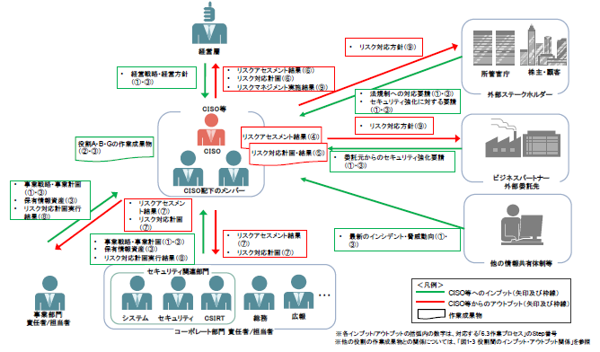
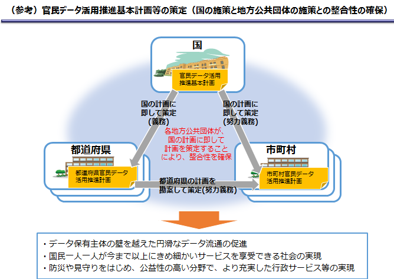
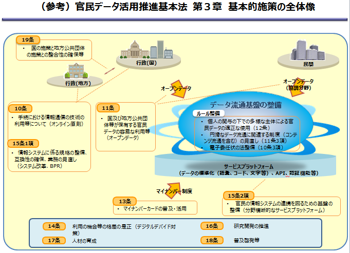
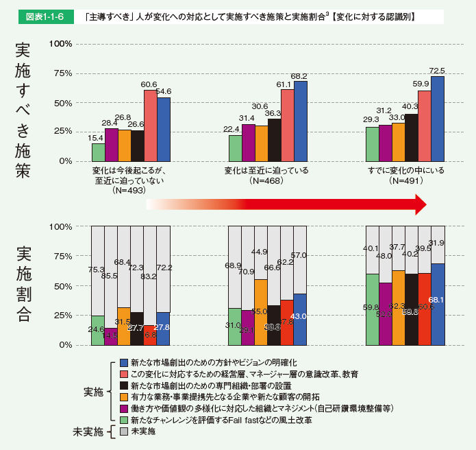
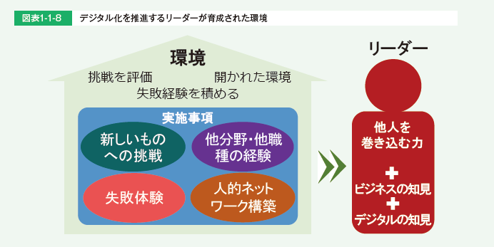
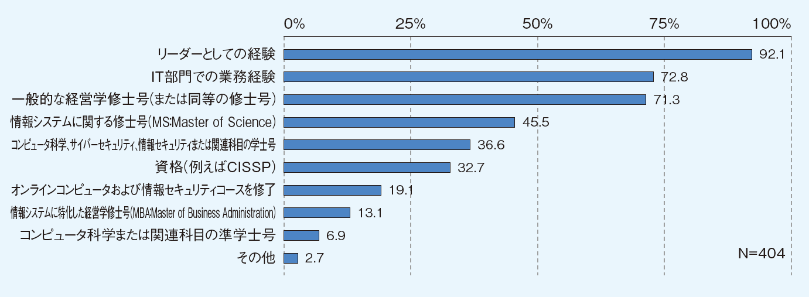
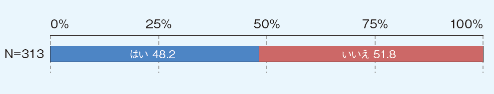
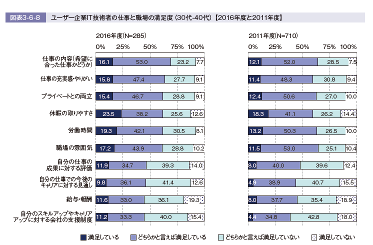
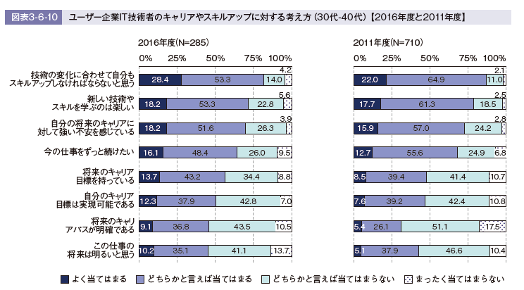

- Sec01-02サイバーセキュリティ関連各種ガイドブックの内容要約
- 【2018年9月26日】Sec01-04を吸収
- 【全般】啓発情報提供サイト
-
- 官民ボードで運営
- 1.被害にあった？（侵害の予兆を含む）
- 02.ウイルスに感染したら（ランサムウェアを含む）
- 03.不正アクセス
- 04.情報漏えい
- 05.ワンクリック詐欺
- 06.フィッシング詐欺・なりすまし
- 061.フィッシング詐欺・なりすまし被害
- 062.なりすまされたECサイト
- 07.詐欺メール
- 071.迷惑メール
- 072.標的型攻撃メール
- 073.ビジネスメール詐欺
- 08.サービス妨害（DoS攻撃等）
- 09.嫌がらせ、誹謗中傷
- 2.事前に対策を（事象毎の予防策）
- 01.対策の基本
- 011.企業における対策の基本
- 012.家庭で行う対策
- 013.子どもを守るための対策
- 02.ウイルス対策（ランサムウェアを含む）
- 03.不正アクセス対策
- 04.情報漏えい
- 05.ワンクリック詐欺
- 06.フィッシング詐欺・なりすまし
- 061.フィッシング詐欺・なりすまし被害
- 062.なりすまされたECサイト
- 07.詐欺メール
- 071.迷惑メール
- 072.標的型攻撃メール
- 073.ビジネスメール詐欺
- 08.サービス妨害（DoS攻撃等）
- 09.嫌がらせ、誹謗中傷
- 10.個別対策項目
- 101.パスワード
- 20.ガイドライン等
- 201.教育機関向け
- 202.個人ユーザ向け
- 203.事業者向け
- 3.教育・学習
- 01.一般向け
- 011.小学生向け
- 012.中高校生向け
- 013.ホームユーザ向け
- 02.中小企業向け
- 03.経営者向け
- 04.システム管理者
- 05.一般社員・職員
- 4.セキュリティチェック
- 01.クイズ形式
- 02.安全性を診断しよう
- 03.試験・資格
- 5.データ＆レポート
- 01.参考になる資料、情報サイト
-
-
- インターネットって何？
- インターネットの仕組み
- ホームページの仕組み
- 電子メールの仕組み
- ブログの仕組み
- 電子掲示板の仕組み
- SNS（ソーシャルネットワーキングサービス）の仕組み
- チャットの仕組み
- メーリングリストの仕組み
- ショッピングサイトの仕組み
- ネットオークションの仕組み
- インターネットバンキングの仕組み
- クラウドサービスとは？
- スマートフォンとは？
- 無線LANの仕組み
-
- ウイルスとは？
- ウイルスの感染経路と主な活動
- ウイルスの感染経路
- ウイルスの主な活動
- 不正アクセスとは？
- ホームページやファイルの改ざん
- 他のシステムへの攻撃の踏み台に
- 詐欺等の犯罪
- 事故・障害
- 脆弱性（ぜいじゃくせい）とは？
- 情報発信に関するトラブル
-
- IDとパスワード
- 認証の仕組みと必要性
- 設定と管理のあり方
- ウイルスに感染しないために
- 不正アクセスに遭わないために
- 詐欺や犯罪に巻き込まれないために
- 事故・障害への備え
- 情報発信の心得
-
- ファイアウォールの仕組み
- 暗号化の仕組み
- SSLの仕組み
- ファイル共有ソフトとは？
-
- 法律違反の事例
- 刑法
- サイバーセキュリティ基本法
- 著作権法
- 電気通信事業法
- 電子署名及び認証業務に関する法律
- 電子署名に係る地方公共団体の認証業務に関する法律
- 電波法
- 特定電子メールの送信の適正化等に関する法律
- 不正アクセス行為の禁止等に関する法律
- 有線電気通信法
-
-
-
- ソフトウェアを最新に保とう
- ウイルス対策をしよう
- ウイルス対策ソフト
- 記憶媒体からのウイルス感染
- ホームページ閲覧の危険性
- パスワードの設定と管理
- フィッシング詐欺に注意
- ワンクリック詐欺に注意
- 無線LANの安全な利用
- 機器の廃棄
- 個人に関する情報の取扱い
- プライバシー情報の取扱い
- サポート期間が終了するソフトウェアに注意
- サーバ証明書の切り替えによる影響について
-
- 【インターネット】
- ホームページ閲覧における注意点
- ネットオークションにおける危険性
- ショッピングサイトの利用
- インターネットバンキングの注意点
- SNS利用上の注意点
- クラウドサービス利用上の注意点
- 動画配信サイトなどの注意点
- オンラインゲームの注意点
- 【電子メール】
- ウイルス添付メールなどへの対応
- 迷惑メールへの対応
- チェーンメールの問題点
- メールの誤送信
- 【情報機器】
- 家族共用パソコンの注意点
- 携帯電話・スマートフォン・タブレット端末の注意点
- ゲーム機の注意点
- インターネット対応機器（家電、記憶媒体等）の注意点
- 【その他】
- ファイル共有ソフトの利用とその危険性
-
- 著作権侵害に注意
- 個人情報の公開の危険性
- ネットを使ったいやがらせや迷惑行為
- 発信内容は慎重に
-
- 事例1：資料請求の情報が漏洩した
- 事例2：私の名前で誰かがメールを
- 事例3：ホームページを見ただけで・・・
- 事例4：猛威！デマウイルス
- 事例5：メールが他人に読まれている？
- 事例6：ネットストーカーに注意
- 事例7：ウイルス対策はしていたはずなのに・・・
- 事例8：送った覚えがないのに・・・
- 事例9：オークションの商品が届かない
- 事例10：メールの儲け話に注意
- 事例11：中古パソコンによるデータの漏洩
- 事例12：クレジットカード番号が盗まれた
- 事例13：ファイル共有ソフトが原因で・・・
- 事例14：ワンクリック詐欺に注意
- 事例15：自分の名前で勝手に書き込みが・・・
- 事例16：インターネットバンキングで情報が盗まれた
- 事例17：有名サイトからダウンロードしたはずなのに・・・
- 事例18：ブロードバンドルータから認証情報が盗まれた・・・
-
-
-
- 【技術的対策】
- 情報セキュリティ対策の必要性
- 情報セキュリティの概念
- 必要な情報セキュリティ対策
- 情報セキュリティマネジメントとは
- 情報セキュリティマネジメントの実施サイクル
- 情報セキュリティポリシーの概要と目的
- 情報セキュリティポリシーの内容
- 情報セキュリティポリシーの策定
- 情報セキュリティ教育の実施
- 情報セキュリティポリシーの評価と見直し
- 事故やトラブル発生時の対応
- 個人情報取扱事業者の責務
-
- 安全なパスワード管理
- ソフトウェアの情報セキュリティ対策
- ウイルス対策
- 電子メールの誤送信
- 標的型攻撃への対策
- 悪意のあるホームページ
- バックアップ
- 安全な無線LANの利用
- 廃棄するパソコンやメディアからの情報漏洩（ろうえい）
- 外出先で業務用端末を利用する場合の対策
- 持ち運び可能なメディアや機器を利用する上での危険性と対策
- ソーシャルエンジニアリングの対策
- クラウドサービス利用時の注意点
- SNS利用上の注意点
-
- 【技術的対策】
- ソフトウェアの更新
- ウイルス対策
- ネットワークの防御
- 不正アクセスによる被害と対策
- 外出先で業務用端末を利用する場合の対策
- SQLインジェクションへの対策
- 標的型攻撃への対策
- 安全な無線LAN利用の管理
- ユーザ権限とユーザ認証の管理
- バックアップの推奨
- セキュリティ診断
- ログの適切な取得と保管
- サポート期間が終了するソフトウェアに注意
- 【情報セキュリティポリシー】
- 情報セキュリティポリシーの導入と運用
- ソーシャルエンジニアリングの対策
- クラウドサービスを利用する際の情報セキュリティ対策
- SNSを利用する際の情報セキュリティ対策
- 社員の不正による被害と対策
- 廃棄するパソコンやメディアからの情報漏洩
- 持ち運び可能な記憶媒体や機器を利用する上での危険性と対策
- 【物理セキュリティ】
- サーバの設置と管理
- 機器障害への対策
-
- 事故・被害の事例
- 事例1：資料請求の情報が漏洩した
- 事例2：ホームページが書き換えられた
- 事例3：顧客のメールアドレスが漏洩
- 事例4：他人のIDで不正にオンライン株取引
- 事例5：中古パソコンによるデータの漏洩
- 事例6：情報セキュリティ対策は万全だったはずなのに・・・
- 事例7：ファイル共有ソフトが原因で・・・
- 事例8：SQLインジェクションでサーバの情報が・・・
- 事例9：標的型攻撃で、企業の重要情報が・・・
- 事例10：自分の名前で勝手に書き込みが・・・
- 事例11：公式アカウントが乗っ取られた
- 事例12：有名サイトからダウンロードしたはずなのに・・・
- 事例13：クラウドサービスに預けていた重要データが消えた
-
- Internet Explorerの脆弱性について
- Apache Strutsの脆弱性について
- OpenSSLの脆弱性について
-
-
-
- ID・パスワードを盗まれて「なりすまし」に遭った
- 身に覚えのない料金請求をされた
- パソコンのハードディスクの中身がインターネット上に公開された
- 携帯電話の情報が勝手に登録された
- Keylogger（キーロガー）によって個人情報を盗まれた
- フィッシング詐欺に遭った
- 会社の顧客情報が流出した
- 身に覚えの無い国際電話利用料金の請求が来た
- 有料サイトの利用料金を請求するメールが来た
- インターネットを利用中に、ブラウザクラッシャーに遭った
- ネットストーカーに困っている
- 悪徳商法やネット詐欺にあった
- 掲示板に個人情報を書き込まれた
- パソコンがウイルスに感染してしまった
- 迷惑メールが来たがどうすれば良いか
-
- 自組織内の機密情報が、ファイル共有ソフトにより流出した
- 組織内で管理する個人情報がスタッフによって外部へ流出した
- Webサイトの掲示板に、悪意のある書き込みを大量にされた
- 自組織のドメイン名に詐称された迷惑メールをばらまかれた
- 自分が管理する掲示板上の書き込みに対して削除を求められた
- 他組織のホストへウイルスを感染させてしまった
- サーバがウイルスに感染してしまった
- サーバがクラックされ、ページが書き換えられた
- スパムメールの踏み台にされた
- DoS攻撃を受けて、サーバが利用不能になった
- サーバに侵入され個人情報が流出した
-
- 一般ユーザ向け【零細企業を含む】
-
- OS やソフトウェアは常に最新の状態にしておこう
- 新たにひろまるコンピュータウイルスに対抗するため製造元から無料で配布される最新の改良プログラムにアップデートしましょう。
- パスワードは貴重品のように管理しよう
- パスワードは自宅の鍵と同じく大切です。パスワードは他人に知られないように、メモをするなら人目に触れない場所に保管しましょう。
- ログインID・パスワード絶対教えない用心深さ
- 金融機関を名乗り、銀行口座番号や暗証番号、ログインIDやパスワード、クレジットカード情報の入力を促すような身に覚えのないメールが届いた場合、入力せず無視しましょう。
- 身に覚えのない添付ファイルは開かない
- 身に覚えのない電子メールにはコンピュータウイルスが潜んでいる可能性があります。添付されたファイルを開いたり、URL（リンク先）をクリックしないようにしましょう。
- ウイルス対策ソフトを導入しよう
- ウイルスに感染しないように、コンピュータにウイルス対策ソフトを導入しましょう。（家電量販店などで購入できます）
- ネットショッピングでは信頼できるお店を選ぼう
- 品物や映画や音楽も購入できるネットショッピング。詐欺などの被害に遭わないように信頼できるお店を選びましょう。身近な人からお勧めのお店を教わるのも安心です。
- 大切な情報は失う前に複製しよう
- 家族や友人との思い出の写真など、大切な情報がパソコンの故障によって失われることのないよう、別のハードディスクなどに複製して保管しておきましょう。
- 外出先では紛失・盗難に注意しよう
- 大切な情報を保存したパソコン、スマートフォンなどを自宅から持ち出すときは機器やファイルにパスワードを設定し、なくしたり盗まれないように注意て持
ち歩きましょう。
- 困ったときはひとりで悩まず まず相談
- 詐欺や架空請求の電子メールが届く、ウイルスにより開いているウェブページが閉じないなどの被害に遭遇したら、一人で悩まず各種相談窓口に相談しましょう。
-
-
- 関連リンク

- 電子書籍【無料】【2017年７月13日】
- ibooksStore、Kindle ストア、ebookjapan、BOOKFAN、コミックシーモア、d ブック、ひかりTV ブック、music.jp 、DMM.com 、Kinoppy 、Yahoo! ブックストア、GooglePlay ブックス、GALAPAGOS STORE、セブンネットショッピング、honto、漫画全巻ドットコム、Dijital ehon、ニコニコ静画、cdjapan eBooks 、Neowing eBooks 、フジテレビオンデマンド、BOOKWALKER、BookLive!、ブックパス、ReaderStore、BookPlace、楽天Kobo
- PDF版【2017年02月08日】
- 部分版（各章別）
- 目次
- 人物紹介
- おうちのCSIRTになってね
- Black Hat the Cracker
- プロローグ サイバー攻撃ってなに？誰がやっているの？どんなことが起こるの？～サイバー攻撃のイメージ
- S1. サイバー攻撃のイメージ
- S1. サイバー攻撃って誰がやっているの？どうするの？
- コラム：攻撃者とハッカーとクラッカー
- コラム：攻撃者が使う武器「マルウェア」
- どんな種類があるの？
- どんな機能を持つの？
- どんなものが感染したり、感染させたり、悪さするようになるのか
- S2. サイバー攻撃の例
- 偽サイトでのフィッシング詐欺や重要情報の不正送信
- ランサムウェアで身代金要求
- ボットネットに組み込まれる
- S3. サイバー関連の犯罪やトラブル
- なりすましや略取・誘拐（連れ去り）
- セクスティング
- ネットいじめ
- S4. 人の心の隙を突く「ソーシャルエンジニアリング」攻撃
- 「ソーシャルエンジニアリング」は現実でもネットでも心の隙を突いてだます
- 第1章 基本のセキュリティ～ステップバイステップでセキュリティを固めよう！
- S1. 4つのポイントでセキュリティを守る
- P1. システムを最新に保つ。セキュリティソフトを入れて防ぐ
- 様々な段階でセキュリティを守る
- P2. 複雑なパスワードと多要素認証で侵入されにくくする
- P3. 攻撃されにくくするには侵入に手間（コスト）がかかるようにする
- 守りを何重にもして侵入されにくくする
- P4. 心の隙を作らないようにする（対ソーシャルエンジニアリング）
- S2. 環境を最新に保つ、セキュリティソフトを導入する
- P1. セキュリティソフトを導入して守りを固めよう
- 単純なウイルス検知ソフト
- 進化したセキュリティソフト（ふるまい検知、ヒューリスティック分析）
- 手配書が間に合わないゼロディ攻撃も
- P2. パソコン本体とセキュリティの状態を最新に保とう
- 本体もOSもセキュリティソフトも重要ソフトもアップデート
- P3. スマートフォンやネットワーク機器も最新に保とう
- アプリやセキュリティソフトの更新は基本的に自動にし、まめにチェック
- ネットにつながる家電もファームウェア更新、設定ページのID・パスワードは変更しておくこと
- P4. ソフトやアプリは信頼できる場ところ所から。権限にも気をつける
- 不審な場所からアプリをインストールしない。権限に気をつける
- コラム：必要ならばスマホにはセキュリティパックを検討しよう
- 必要性を感じるなら、スマホにはセキュリティパック導入を検討しよう
- スマホの改造をしてはいけません
- スマート家電の中にはパソコンやスマホがある？
- コラム：パソコンやスマホを最新の状態に保っても防げない攻撃がある。それがゼロディ攻撃！
- ゼロディ攻撃とは？ 対処の例
- ゼロディ攻撃に対抗するには？
- S3. 複雑なパスワードと多要素認証で侵入されにくくする
- P1. パスワードの安全性を高める
- パスワードは少なくとも英大文字小文字＋数字＋記号で10桁
- P2. パスワードの使い回しをしない
- 同じパスワードを使い回さない。似たパスワード、法則性のあるパスワードはｘ
- P3. パスワードを適切に保管する
- パスワードを使用する場所に置かない。パソコンの中もｘ
- パスワードはノートに書いて保管するか、パスワード管理アプリで守る
- ブラウザの自動入力にパスワードを覚えさせない
- P4. 秘密の質問にはまじめに答えない。多要素や生体認証を使う
- 秘密の質問にはまじめに答えない。答えは使い回さない
- 多要素認証やログイン通知でセキュリティを向上
- コラム：パスワードはどうやって漏れるの？どう使われるの？
- 様々なID・パスワードの抜き取り方法
- 盗んだID・パスワードを使い様々なサービスを乗っ取れるか試す
- S4. 攻撃されにくくするには、手間（コスト）がかかるようにする
- 攻撃されにくくするには手間がかかるようにする
- 金銭目的ではない攻撃にも備えよう
- 攻撃者に操られて内側から鍵を開けてしまわないように心がまえを持とう
- S5. 心の隙を作らないようにする（対ソーシャルエンジニアリング）
- 古典的なソーシャルエンジニアリング
- デジタル世代のソーシャルエンジニアリング
- 標的型メールの例
- フィッシングメールの例
- 悪意はないが拡散してしまう例
- コラム：軍事スパイ、産業スパイに狙われてしまったら
- 職業スパイにはコストによる防御が効かない
- スパイ活動の今昔
- コラム：映画「ザ・ハッカー」にみるソーシャルエンジニアリング
- コラム：スパムメールとその由来
- 第2章セキュリティを理解して、ネットを安全に使う
- S1. パスワードを守る、 パスワードで守る
- P1. パスワードってなに？
- P2. 3種類の「パスワード」を理解する
- 1を「PINコード」
- 2を「ログインパスワード」
- 3を「暗号キー」
- P3. 「PI Nコード」と「ログインパスワード」に求められる複雑さの違い
- P4. 「暗号キー」に求められる複雑さ
- P5. どちらの「パスワード」か、わかりにくい例
- トピック：パスワードを破る手段は色々
- ブルートフォース攻撃（総当たり攻撃）
- リスト型攻撃（アカウントリスト/パスワードリスト攻撃）
- 辞書攻撃（ディクショナリアタック）
- P6. 総当たり攻撃以外のパスワードを破る攻撃や生体認証を使った防御
- トピック：多要素認証の構成要素は？
- ①知っているもの
- ②持っているもの
- ③本人自身に関するもの
- トピック：指紋認証が破られることも
- P7. パスワードの定期変更は必要なし。流出時は速やかに変更する
- P8. パスワード流出時の便乗攻撃に注意
- P9. 厳重なパスワードの保管
- トピック：ブラウザにはパスワード保存しない
- トピック：パスワード管理方法の例
- トピック：パスワード管理方法のメリットデメリット
- P10. パスワード情報をクラウドで利用する善し悪し
- P11. ノートやスマホを失くした場合のリカバリ考察
- P12. 次善の策のソーシャルログイン。二段階認証などで防御
- P13. ソーシャルログインで連携される情報に注意
- トピック：ソーシャルログインに使えるアカウント
- 二段階認証
- ログイン通知
- トピック：ソーシャルログインとサービス・アプリ連携の違い
- ソーシャルログイン
- アプリ・サービス連携
- トピック：アプリなどの連携は定期的に棚卸ししよう
- P14. ソーシャルログインとは性格が違うサービス連携
- コラム：暗号化の超簡単説明
- トピック：暗号化ってなに？
- 平文での通信は読めてしまう
- 暗号化の魔法は内容を読めなくする
- 暗号化したものを送れば攻撃者が読めない
- 事前に決めておいた方法（暗号化方法）と呪文（「暗号キー」）で暗号文を復元（復号）する
- トピック：暗号が破られる場合
- 暗号化方法の種類はいろいろ
- 暗号破られ① 呪文がバレている！
- 暗号破られ② 方法が古くて解読可能！
- 暗号破られ③ 呪文が簡単すぎて解読される
- S2. 通信を守る、無線LANを安全に利用する
- P1. それぞれの状況に合わせた暗号化の必要性
- トピック：それぞれの状況に合わせた暗号化
- 通信の暗号化
- ファイルの暗号化
- P2. 無線LAN通信(Wi-Fi)の構成要素
- トピック：暗号を使う無線LANの構成要素
- トピック：公衆無線LANが安全とは限らない
- トピック：「暗号キー」共有は接続しちゃダメ
- P3. 暗号化なしや、方式が安全ではないものは危険
- P4. 暗号化方式が安全でも「暗号キー」が漏れれば危険
- P5. 家庭内での安全な無線LANの設定（暗号化方式
- P6. 家庭内での安全な無線LANの設定（その他
- トピック：家庭でのWi-Fiの利用
- ①出荷時の管理者パスワード、「暗号キー」の変更
- ②「暗号キー」は家族のヒミツ
- ③ルータと機器の安全な運用
- P7. 公衆無線LAN の安全な利用
- P8. 個別の「暗号キー」を用いる方式の無線LAN
- P9. 公衆無線LAN に関して新規に購入したスマホなどで行うこと
- トピック：公衆無線LAN通信の表示の意味
- ①スマホやパソコンの画面から見た無線LAN暗号化
- ②詳細な区分けから見た無線LAN暗号化
- トピック：新しいスマホを購入したら
- P10. 公衆無線LAN が安全ではない場合の利用方法
- P11. 自前の暗号化による盗聴対策
- P12. まとめて暗号化するVPN、現状は過信できないが今後に期待
- トピック：様々な場所から安全なアクセスを可能にするVPN新しいスマホを購入したら
- ①詳細なVPNのイメージ
- ②簡単なVPNのイメージ
- S3. ウェブを安全に利用する、暗号化で守る
- P1. 無線LAN の暗号化とVPNの守備範囲
- トピック：それぞれの暗号化の守備範囲
- ①無線LANの暗号化
- ②VPNによる暗号化
- ③ウェブ、メールの暗号化
- ④VPN＋ウェブメールの暗号化
- P2. 全ての通信と、その一部であるウェブの通信
- P3. httpsで始まる暗号化通信にはどんなものがあるか
- P4. より厳格な審査の「EVSSL証明書
- P5. 「EV-SSL証明書」を持つサイトを見分ける方法
- P6. 有効期限が切れた証明書は拒否する
- P7. 他にも証明書に関する警告が出るサイトは接続しない
- P8. ウェブサービスのログインは二段階認証などを使う
- トピック：httpsの暗号化通信で情報を守る
- 個人情報の入力は基本的には
- トピック：攻撃者が不正に取得した証明書に注意
- トピック：証明書の内容をチェックする
- P9. 二段階認証を破る「中間者攻撃」
- トピック：間に入ってなりすます中間者攻撃の例
- ①中間者攻撃で二段階認証が破られる例
- ②中間者攻撃で二段階認証が破られにくい例
- トピック：ウェブを使ったサイバー攻撃の例
- ①メール等による感染
- ②水飲み場攻撃による感染
- P10. ウェブを使ったサイバー攻撃に対応する
- S4. メールを安全に利用する、暗号化で守る
- P1. メールにおける暗号化
- P2. スパムメールの嵐と、メールの暗号化
- P3. 受信側も暗号化で保護
- P4. メールにおける暗号化の守備範囲
- トピック：メールの送受信は暗号化されているか
- メールソフトやアプリが暗号化（SSL）利用になっているか？
- トピック：しかしSSLの通信は自分のサーバまで
- トピック：暗号化している同じサービスを利用する
- P5. 暗号化から見たウェブメールの利用と、同一サービス内の暗号化
- P6. 怪しいメールとはなにか.. .
- P7. マルウェア入りの添付ファイルに気をつける
- トピック：ウェブメールの送受信は暗号化されているか
- トピック：怪しいメールとはなにか
- ①仕事のメールを装う
- ② 銀行、カード会社、ECサイト、プロバイダ関係を装うメール
- トピック：本当の仕事仲間のメールでも攻撃は来る
- P8. メールアドレスのウェブサービスなどからの流出
- P9. 流出・スパム対策としての、変更可能メールアドレスの利用
- P10. 通信の安全と永続性を考えたSNSやメールの利用
- トピック：マルウェア入りファイルの偽装
- トピック：メールアドレスを変えてスパムメールから逃げる
- S5. データファイルを守る、暗号化で守る
- トピック：データの暗号化は保険
- トピック：データを持ち運ぶときは必ず暗号化メディアを使う
- トピック：「暗号キー」が1個の方式（共通鍵暗号方式）
- トピック：「暗号キー」が2個の方式（公開鍵暗号方式）
- コラム：クラウドサービスからのデータ流出。原因は？
- 第3 章 スマホ・パソコンのより進んだ使い方やトラブルの対処の仕方
- 1. スマホのセキュリティ設定.. .
- 1 スマホにはロックをかけよう。席において離れたり、人に貸したりするのはｘ
- 2 情報漏れを防ぐ①
- 3 情報漏れを防ぐ②
- 4 スムーズな機種変更と、予期せぬデータ流出の防ぎ方
- 5 防水機能を過信してデータを失わないように
- コラム：GPS、位置情報、ジオタグの管理
- 2. パソコンのセキュリティ設定..
- 1 パソコンを買ったら初期設定などを確実に
- 2 暗号化機能等でセキュリティレベルを高める
- 3 マルウェア感染に備え、バックアップ体制を整える
- 4 売却や廃棄するときはデータを消去する
- 5 盗難や紛失のとき、スマホとパソコン、どっちが安全？
- コラム：ダブルラインでトラブルに備える
- 3. 屋外・海外でのネットワーク利用..
- 1 一見なにもないように見えて、危険がいっぱい
- 2 インターネットカフェの利用
- 4. それでも攻撃を受けてしまったときの対処..
- 1 兆候に気をつけて被害が出たら対処
- コラム：究極の防御手段「ネットにつながない」エアギャップ
- 有線でも無線でも、つながっていないパソコンにはマルウェアは感染しない
- しかし、USBメモリを介して感染することも
- ネットに接続していなくても、少量のデータであれば盗める
- オンラインで銀行口座が狙われるなら
- インターネットバンキングを止めるという手も
- コラム：無料ということの意味は何か
- 試食サービスのコストの例
- 無料ウェブサービスの例
- 無料の公衆無線LANサービスの例
- 第4章 被害に遭わないために、知らない間に加害者にならないために
- 1. 攻撃者に乗っ取られるとこんなことが起こる
- 1 被害に遭わない、そして加害者にならないために
- 2 盗まれた情報は犯罪に使われる
- 3 乗っ取られた機器はサイバー攻撃に使われる
- 4 IoTも乗っ取られる。知らずにマルウェアの拡散も
- 2. サイバー関連でやってはいけないこと
- 1 アニメ・マンガ・音楽の違法なシェア。パクリなどの著作権侵害
- 2 ゲームの不正行為。恋人や家族でもプライバシーは守る
- 3 クラッキングはクールじゃない！
- コラム：モラルを逸脱すると炎上を生む
- モラルを逸脱することが炎上を生む
- 自作自演やアオリ行為、嘘の書き込み
- 第5 章 自分を守る、家族を守る、災害に備える
- 1. SNSやネットとのつきあい方、守り方
- 1 SNSやネットの楽しみと気をつけること
- 2 SNSやネットの怖さ、こんなことが実際に起こっている
- 略取
- ストーカー
- 犯罪勧誘
- ネットいじめ
- リベンジポルノ・デジタルタトゥー
- 3 SNSやネットとのつきあい方の基本
- 個人情報は基本的に公開しない
- 会ったことがない人とむやみに友だちにならない
- 現実世界で会おうとする人を警戒する。出会い系に近づかない
- 個人が特定される情報はSNSなどに投稿しない
- 4 存在するデータは流出することがある。流出したら消すことは難しい
- コラム：SNSや学校裏サイトを使ったいじめに備える（いじめ経験者からのアドバイス）
- コラム：デマに踊らされない！ ソースを探せ！ 確かめよう！
- 2. デジタルテクノロジーで家族を守る.. .
- 1 子ども達を守る
- 2 お年寄りを守る
- 3. 大災害やテロに備える..
- 1 まずは自分の身の安全を確保する
- 2 電池をもたす、情報収集をする
- 3 ラジオ、ワンセグを使った情報収集
- 4 徒歩帰宅。海外での災害やテロに備えて
- コラム：屋外でのゲームを安全に楽しむ
- 5 ネットを使わない移動トレーニング（現代オリエンテーリング）
- コラム：デジタル遺産相続
- エピローグ 来たるべき新世界
- 1 ネットの「今」と、どう守っていくか
- 2 デジタルネイティブと未来
- 3 バーチャル空間を超えて世界へ
- 4 おわりに
- 用語集.
- 情報セキュリティ関連サイト一覧
- 情報セキュリティ関連のサイト
- 海外旅行関連のサイト
- 災害時関連のサイト
- 災害時関連のサイト
- いじめ対策関連
- Twitterアカウント
- アプリ（Android、iOS）
- その他
- 索引..
-
- スマートフォンのセキュリティ
- 注意点
- 最近ではパソコンだけでなく、スマートフォンでも悪意のあるウイルスが横行している
- ウイルス感染は「無料のアプリ」からが多い
- OSやアプリのバージョンが古いままだと、ウイルス感染の危険性あり
- 対策
- スマートフォンへのウイルス対策ソフトの導入を検討しよう
- アプリの詳細、提供企業やレビューを確認し、信頼できるサイトからアプリをダウンロードしよう
- OSやアプリは常に最新のバージョンにアップデートしよう
- 豆知識
- 最近ではマンガのような、画面をロックしてお金を要求するウイルス（ランサムウェアと呼ぶ）が流行している
- スマートフォンだけでなく、PCも被害が出ているので注意しよう
- 迷惑メールの添付ファイルを実行すると、ウイルスに感染してしまうこともあるため、注意しよう
- 無線LANのセキュリティ
- 注意点誰でも接続できる無線LANのアクセスポイントの中には、悪意をもって設置されているものがある
- 悪意をもって設置されたアクセスポイントに接続すると、通信内容を見られてしまうことがある
- インターネット接続業者が提供している公衆無線LANでも、通信が暗号化などで保護されていないものがあり、通信内容が傍受されるおそれがある
- 対策
- 不審な公衆Wi-Fiには接続しない
- 公衆Wi-Fiに接続する場合は、出来るだけ暗号化された、信頼できるWi-Fiを利用しよう
- 豆知識
- ファイル共有機能をONにして公衆Wi-Fiに接続すると、同じWi-Fiにつないでいる人からデータが見られてしまう
- 公衆Wi-Fiを使う場合は、設定に注意しよう
- 自宅のWi-Fiにはきちんとパスワードをかけ、知らない人が接続できないようにしよう
- インターネット上の詐欺
- 注意点
- インターネット上には、ネットショッピングやインターネットバンキング等を利用する上で、お金に関する詐欺が存在する
- ユーザを巧妙な偽サイト（フィッシングサイト）に誘導して騙す手法も増加している
- 安易にjメールを信用してUrlや添付ファイルを開くと、偽物のサイトに飛んでしまったり、ウイルスに感染してしまうことがある
- 対策
- ウェブサイトのURLやメール所送付先が正規のものか、注意深く確認しよう
- 言語がカタコトだったり。連絡先が書いていないなど、疑わしいサイトは利用しない
- 豆知識
- フィッシングサイトでは銀行のウェブサイトを模倣して、インターネットバンキングのIDやパスワードを盗むものも多く存在するため、注意しよう。
- SNSの利用上の注意
- 注意点
- SNSでは、悪意のあるユーザが、女性などの画像を使用してなりすまし、接触を図ってくることがある
- 悪意のあるユーザは「直接会おう」などと接近してくることもあり、犯罪に巻き込まれることもある
- 対策
- 見知らぬユーザとは、コンタクトをとらない
- 「会おう」などと誘われても絶対に会わない
- 豆知識
- 見知らぬ人が接触してくるのは、悪事を目的としていることが多い
- 見知らぬ人が写真や住所、電話番号など、個人情報を要求してくることもあるが、決して応じないこと
- 知り合いに成りすまして接近してくることも有るので、知っている人だからと言って油断しない
-
- IPA対策のしおりシリーズ
- IPAセキュリティマネジメントのしおりシリーズ
- 姉妹冊子
-
- 概要
- 従業員数や端末数
- どの程度の台数が存在し、調査が必要か概要を確認する。
- 問 1～5
- 相談の経緯について
- 現在の被害の有無や外部からの指摘といった状況についてのヒヤリングとなる。
- 相談の際に被害はまだないのだが不安がある場合は不安な箇所がどこかといったところからのヒヤリングとなる。
- 問 6～10
- 症状の詳細について
- 主にシステム管理を行っている方への質問となる。
- 既に何か症状がある場合、どのような症状があるかの確認となる。
- わからない場合は「□わからない」を選択頂きたい。
- 症状はシステム利用者に聞くことや、主観での回答でも良い。調査を開始する際に、ネットワーク、サーバ、パソコンや端末、ログや心当たりをヒヤリングしておくことで、どこから着手するかの手がかりとなる。
- 問 11～14
- 現在の管理状況について
- 主にシステム管理を行っている方への質問となる。
- 調査に必要な現状把握の設問である。ネットワークやシステムに関連した社内文書の有無や、調査の対象となるログについて確認する。
- 調査の中心がログの分析となる場合、社内のどこに何があるかがはっきりしていると、分析の手がかりとなる。
- 分析作業のために、ログの保管場所や保存期間を把握する必要がある。
- IT 関連をいつもお願いしている事業者や関連業者があれば記載をお願いしたい。
- 普段からのどの程度のセキュリティの対策を行っているかなどの把握が調査の手助けとなる。
- 問 15～19
- 社内の組織体制について
- 主に事案や事件の対応者や責任者の方向けの質問となる。
- 明確に組織が存在しない場合は、システム管理者の方の回答でも良い。
- 今後の相談や調査、社内の対応に向けての確認となる。
- 調査や分析では、お客様の協力が必要不可欠である。
- 業者との窓口という意味だけではなく、調査や分析に当たって、社内の手続きを含めてどういった手順で進めることができるかを事前に把握する。
- 問 20～22
- IPA 10 大脅威 2017の基本対策
- 主に事案や事件の対応者や責任者の方向けの質問となる。
- 明確に組織が存在しない場合は、システム管理者の方の回答でも良い。
- セキュリティの基本対策がどの程度実施されているか確認する。
- 対策の内容によって調査や分析の手助けになる部分があるかの確認となる。
- 各項目の詳細な内容については「10 大脅威 2017」を確認されたい。
-
- 問合せ者
- 会社名：
- 従業員数（ ）人、 端末数（ ）台、 拠点数（ ）箇所
- 相談のきっかけや経緯について伺います。
- 問1：外部から通報や連絡がありましたか？
- 例：情報が漏えいしている、改ざんされている、パソコンがおかしくなった、など
- □はい （連絡元と、連絡の内容： ） □いいえ
- 問2：過去にサイバー攻撃と思われる被害を受けたことはありますか？
- □はい （被害の状況： ） □いいえ
- 問3：相談しようとするまでに、何か対処はしましたか？
- □はい （時系列でお答えください： ） □いいえ
- 問4：現在どのような不安がありますか？（複数回答可）
- □公開しているサーバへの攻撃がある □パソコンがウイルスに感染している
- □内部から情報が漏えいしている □その他（ ）
- 問5：相談のきっかけや経緯についてできるだけ具体的にお書きください
- 主にシステム管理者の方に、現在の症状についてより詳細に伺います
- 問6：ネットワークが繋がりにくい・使えない
- □はい
・いつごろからですか？ （ ）
・頻度はどの程度ですか？（1回だけ・数回・決まった時間・決まった曜日）
・どのような時に症状を感じますか？ （ ） - □いいえ □わからない
- 問7：サーバの反応が悪い・反応がなくなる
- □はい
・いつごろからですか？ （ ）
・頻度はどの程度ですか？（1回だけ・数回・決まった時間・決まった曜日）
・どのようなサーバですか？ （ ） - □いいえ □わからない
- 問8：PC・携帯端末の反応が悪い・動かなくなる
- □はい
・いつごろからですか？ （ ）
・頻度はどの程度ですか？（1回だけ・数回・決まった時間・決まった曜日）
・どのような端末ですか？ （ ）
・何台で起こっていますか？ （ ） - □いいえ □わからない
- 問9：不正な通信、アクセスの形跡がある・気になるログがある
- □はい
・いつごろからですか？ （ ）
・どのような内容、不審点がありますか？ （ ） - □いいえ □わからない
- 問10：症状が始まった頃に、下記のような出来事がありましたか？
- □はい
・システム変更を行った / 新しいソフトを導入した
・怪しいサイトやメールにアクセスした
・情報記録媒体を紛失した
・その他不安なこと（ ） - □いいえ □わからない
- 主にシステム管理を行っている方に、管理状況について伺います
- 問11：情報機器や情報資産、ネットワークの構成について把握されていますか？
- □はい □いいえ □わからない
- 問12：ネットワークやシステムのログを取得していますか？
- □はい □いいえ □わからない
- （問12が「はい」の方にお聞きします）
問13：ログの保存期間は決めていますか？- □はい （期間： ） □いいえ □わからない
- 問14：普段から付き合いのあるセキュリティ事業者やITサービス事業者はいますか？
- □はい （会社名： ）※複数社あれば複数社お答え下さい
- □いいえ □わからない
- 主に事案や事件の対応者や責任者の方に、社内の組織体制についてお聞きします
- 問15：事案や事件の窓口担当者は決めていますか？
- □はい □いいえ
- 問16：相談について事案や事件対応責任者の了解を得ていますか？
- □はい □いいえ
- 問17：事案や事件の上位職への相談や報告をする順序は決まっていますか？
- □はい □いいえ □わからない
- 問18：既にどこかへ報告しましたか？
- □はい（責任者、経営陣、関係者（監督官庁、取引先、顧客）） □いいえ
- 問19：社内での調査や対処をする権限を持つ責任者や担当者がいますか？
- □はい □いいえ □わからない
- 主に事案や事件の対応者や責任者の方に、IPA 「10大脅威 2017」で示された「セキュリティ対策の基本」をどの程度実施しているかの確認です。
- 問20：「対策の前に」はどの程度実施していますか？（複数回答可）
- □守りたい情報資産の把握
- （情報資産とその場所： ）
- □自発的なセキュリティ対策への取り組み
- □計画を策定し、必要な予算の確保
- 問21： 現在行っているセキュリティ対策はどのようなものですか？（複数回答可）
- □利用しているソフトウェアを更新・最新のものに（OSやアプリケーションなど）
- □セキュリティソフト（ウイルス対策ソフトなど）の導入
- □パスワードの適切な管理と認証の強化（多要素認証など）
- □ソフトウェアや機器の設定を見直す（サーバ・ネットワーク設定の管理）
- □ソフトウェアや機器の脆弱性や犯罪への対策などの情報収集
- 問22：その他に実施している対策はありますか？（複数回答可）
- □文書による実施すべき対策の明文化 □システムによる制限や強制
- □バックアップやシステムの冗長化 □検査や監査
- □認証の取得（プライバシーマークやISO/IEC27001 など）
- □その他（ ）
-
- ☆1 こんなメールに気をつけよう
- 1.メールde詐欺
- 2.架空請求メール
- 3.銀行を装ったメール
- 4.芸能人を装ったメール
- 5.不正アプリをインストールさせようとするメール
- 6.懸賞金当選メール
- 7.宅配便の不在通知を装ったメール
- 8.ウイルスメール
- 9.チェーンメール
- ☆2 迷惑メールをブロックしよう
- 1.どうやって設定するの？
- 2.スマートフォンのおすすめ設定
- 3.ケータイのおすすめ設定
- 4.パソコンで設定する時は？
- ☆3 迷惑メールを予防しよう
- 1.迷惑メールの受信にはきっかけがあります
- 2.アドレスを使い分けよう
- 3.覚えておきたい迷惑メールへの対処法
- ☆4 スマートフォンのセキュリティ
- 1.スマートフォンに必須！セキュリティ対策
- 2.狙われるスマートフォンの個人情報
- 3.不正アプリインストールや個人情報流出を防ぐ
- ☆5 子どものスマートフォン利用案内
- 1.子どもの安全なスマートフォン利用のために
- 2.スマートフォンを持たせる前にまず確認してください
- 3.家庭でスマホ利用のルールを作る
- 4.フィルタリングを設定する
- 5.有害サイトから守る
- 6.有害アプリから守る
- 7.こんな時どうする？保護者のお悩みにお答えします
- ☆6 迷惑メールでお困りの方へ
- 1.迷惑メールは法律違反
- 2.情報提供のお願い
- 3.トラブル別相談窓口
- 4.用語解説
- 5.迷惑メール相談センターのご案内
- ☆7 おまけ
- 1.ぼくたち、サギかもファミリーです
- 2.ヒヤリ・ハット体験SONGができました
-
- 一般企業向け（特に中小企業）
- 知財関連
- 「Bib10-08「知の共有化」に関連した国等の政策の要約」を参照
-
- 中小企業等の視点からの検討
- 現状と課題
- 中小企業等を取り巻くビジネス環境が変化している状況の下
- IoT化に対応したビジネスに飛鳥な特許を国内外で取得できない恐れがある
- 第四次産業革命の下で、オープン・イノベーションが促進される中
- 自社のクーズ領域を守る手段としての知財の重要性に関する認識が十分でない
- 社会を改革するキーテクノジーの多くが中小企業等で生み出されてきたことに鑑み
- 中小企業等の有する技術の標準化をすいしんしていくこと
- 大企業と中小企業との間で一方の有する技術を他方が活用することの重要性
- 大企業と中小企業との連携促進が不可欠
- 中小企業の分類
- IT化に対応できている企業
- ITを活用してサービスを提供する側の企業
- そのような企業から提供されるサービスを利用する企業
- IT化に対応できていない企業
- 今後実施することが適当な取り組み
- 第四次産業革命やIoT化に対応したビジネス環境の変化に対応するため
- 中小企業等が知財戦略を推進し、知財を権利化・活用することが一層求められる
- 一方、特許庁では
- 知財分野における地域・中小企業支援という観点から
- 2016年9月に「地域知財活性化行動計画」を策定
- 本計画に基づいて、中小企業等に対し
- 知財制度や支援施策の普及啓発、情報提供、各種相談・支援対応等の取り組みが実施されている
- 国内外での特許取得支援
- 相談から出願、侵害対策まで一体となった海外旋回支援
- 中小企業等が有する優れた技術については
- 新市場創造型標準化制度を利用した迅速な標準化を実現することにより、市場拡大を支援する
- 加えて、中小企業等と大企業との連携の推進への取り組みの一環として
- 「地方創生のための事業プデューサー派遣事業」を活用し、大企業と中小企業との間での知財のマッチング等を推進
- 金融機関が有する地域の企業情報を活用した知財マッチングびじねすの促進を図る
- 中小企業等と大企業との連携に当たっては
- 企業における営業秘密に関する認識
- 双方のコンプライアンスに対する意識を向上させることが不可欠
- 知財総合支援窓で大企業と連携する中小企業等を支援
- 中小企業等が大企業と連携する際の留意点や連携の過程で発生した懸念等についての相談受付
- 中小企業等の営業秘密が他社に渡ることを防ぐべく
- 不正競争防止法の精度や秘密情報の保護ハンドブック等の周知など営業秘密の保護。管理に関する普及啓発を進めていく
- 中小企業等と大企業との対応な連携への取り組みが推進される環境の醸成
-
- １．「個人情報保護法」とは
- 個人の権利・利益の保護と個人情報の有用性(社会生活やビジネス等への活用)とのバランスを図るための法律
- 民間事業者の個人情報の取扱いについて規定
- 従来は、取り扱う個人情報の数が5,000人分以下の事業者には適用されていませんでしたが、平成29年5月30日からは、すべての事業者に適用されています
- ２．「個人情報」とは
- 生存する個人に関する情報で、特定の個人を識別することができるもの
- ３．事業者が守るべき４つのルール
- 勝手に使わない！
- 利用目的を特定して、その範囲内で利用する。
- 利用目的を通知又は公表する。
- なくさない！ 漏らさない！
- 勝手に人に渡さない！
- お問合わせに対応！
- ４．
- （１）取得・利用に関するルール
- 「要配慮個人情報」とは？
- （例）人種、信条、社会的身分、病歴、犯罪の経歴、犯罪により害を被った事実、身体障害等の障害があること等
- 「要配慮個人情報」を取得する場合は、あらかじめ本人の同意が必要。
- （２）保管に関するルール
- 漏えい等が生じないよう、安全に管理する。
- 従業者・委託先にも安全管理を徹底する。
- 1 基本方針の策定
- 2 個人データの取扱いに係る規律の整備
- 3 組織的安全管理措置
- 4 人的安全管理措置
- 5 物理的安全管理措置
- 6 技術的安全管理措置
- （３）提供に関するルール
- 第三者に提供する場合は、あらかじめ本人から同意を得る。
- 第三者に提供した場合・第三者から提供を受けた場合は、一定事項を記録する。
- 記録事項・保存期間について
- 「いつ・誰の・どんな情報を・誰に」提供したか？
- 「いつ・誰の・どんな情報を・誰から」提供されたか？＋「相手方の取得経緯」
- 外国にある第三者に提供する場合に守るべきこと
- ① 外国にある第三者に提供することについて、本人の同意を得る。
- ② 外国にある第三者が、適切な体制を整備している（※）。
- ③ 外国にある第三者が個人情報保護委員会が認めた国に所在している。
- （４）本人からの開示請求等に関するルール
- 本人から開示等の請求があった場合はこれに対応する。
- 苦情等に適切・迅速に対応する。
- (参考1) 罰則
- 罰則について
- 事業者の法遵守の状況は、個人情報保護委員会が監督します。
- 必要に応じて、報告を求めたり立入検査を行い、実態に応じて指導・助言、勧告、命令を行います。
- 匿名加工情報
- ビッグデータの活用を推進するための制度。
- 「匿名加工情報」とは、特定の個人を識別できないように個人情報を加工し、その個人情報を復元できないようにした情報（利用目的や第三者提供の制限なく、一定の取扱いルールの下、自由な流通・利活用を促進）。
- 匿名加工情報の加工基準や取扱いルールについては、ガイドラインや事務局レポートをご参照ください。
- (参考2) 認定個人情報保護団体
- 事業者の個人情報の適切な取扱いの確保を目的として、国の認定を受けた民間団体。
- 対象事業者への情報提供、個人情報に関する苦情の処理等を行う。
- (参考3) 個人情報保護法相談ダイヤル等
- 個人情報保護法に関する質問等
- 03－6457－9849
- 事業者の個人情報の取扱いに関する苦情相談
- ・事業者の苦情受付窓口
- ・消費生活センター等の地方公共団体の窓口
- ・認定個人情報保護団体
- 【 巻末資料】中小企業向け「これだけは！」チェックリスト10
- 取得・利用
- 取り扱っている個人情報について、利用目的を決めていますか？
- その利用目的は、本人に通知するか公表していますか？
- 保管
- （組織的安全管理措置）個人情報の取扱いのルールや責任者を決めていますか？
- （人的安全管理措置・従業者監督）個人情報の取扱いについて従業員に教育を行っていますか？
- （物理的安全管理措置）個人情報が含まれる書類や電子媒体について、誰でも見られる場所・盗まれやすい場所に放置していませんか？
- （技術的安全管理措置）パソコン等で個人情報を取り扱う場合、セキュリティ対策ソフトウェア等をインストールして最新の状態にしていますか？
- 個人情報の取扱いを委託する場合、契約を締結する等、委託先に適切な管理を求めていますか？
- 提供
- 本人以外に個人情報を提供する場合、本人に同意をとっていますか？
- 本人以外に個人情報を提供したり、本人以外から個人情報を受け取る際、相手方や提供年月日等について記録を残していますか？
- 開示請求等
- 本人から自分の個人情報を見せてほしいと言われたり、訂正してほしいと言われた際には、対応していますか？
-
- 本文
- 経営者の皆様へ
- 情報セキュリティ対策は、経営に大きな影響を与えます！
- 経営者が自ら動かなければ、法的・道義的責任を問われます！
- 組織として対策するために、担当者への指示が必要です！
- 対象組織と想定する読者
- 経営者層・システム管理者層
- 対象組織
- 本ガイドラインは、業種を問わず中小企業及び小規模事業者（法人のほか、個人事業
主や各種団体も含む） 1を対象として作成されています。
- 想定読者
- 組織の経営者と、経営者の指示のもとで重要な情報を管理する方を読者と想定して
います。
- 全体解説
- （1）本ガイドラインの構成
- 本編２部と付録より構成
- （2）本ガイドラインの使い方
- ①経営者の方
- ②経営者の指示のもとで重要な情報を管理する方
- 【図3】情報セキュリティ対策の進め方
- Step1 まず始める
- 情報セキュリティ5か条
- Step2 現状を知り改善する
- 情報セキュリティ自社診断
- Step3 本格的に取り組む
- 情報セキュリティポリシーの策定
- Step4 改善を続ける
- 情報セキュリティ対策のさらなる改善に向けて
- 第 1部 経営者編
- 情報セキュリティ対策を怠ることで企業が被る不利益
- (1) 金銭の喪失
- 【表2】最近のサイバー攻撃等による情報漏えい等の経済的損失例
- 情報漏えい
- 教育サービス事業者で顧客の個人情報が3504件が漏えい（2014年）
- システム開発・運用を行っている委託先の再委託先社員による不正取得と名簿の売却
- 株式を公開している雑貨卸事業者でインターネット上の株主向けサービスに登録された株主の個人情報6187件（他社の株主個人情報含め12014件）が漏えいした（2015年）
- 運営委託先サービスサイトへの不正アクセス
- 航空会社の顧客の個人情報4131件が漏えいした（2014年）
- 菓子食品製造事業者で個人情報29999件が漏えいした（2015年）
- 国内半導体製造事業者の技術jに関する機密情報が韓国の同業者に漏えい（2014年）
- メガネ販売事業者でオンラインショップ顧客のクレジットカード情報2059件の漏えい（2013年）
- ウイルス感染
- 米国の病院で院内ネットワークで共有する電子カルテシステムがウイルスによる攻撃により動作しなくなり診療不能に（2016年）
- ランサムウェアに感染し、ファイルが暗号化されたため
- ウェブサイト改ざん
- 観光バス事業者のホームページが改ざんされ閲覧するとウイルスに感染する恐れ（2014年）
- (2) 顧客の喪失
- (3) 業務 の喪失
- (4) 従業員 への影響
- 経営者が負う責任
- (1) 経営者などに問われる法的責任
- ・個人情報
- ・他社から預かった秘密情報
- ・自社の秘密情報
- ・株価に影響を与える可能性のある未公開内部情報
- (2) 関係者や社会に対する責任
- ・営業停止、売上高の減少、企業イメージの低下などで、自社に損害をもたらずだけでなく、取引先に対する信頼関係の喪失、業界やサービス全体のイメージダウン
- 法令順守・顧客・取引先・従業員
- 経営者は何をすればよいか
- 経営者が認識する必要な「３原則」
- 原則１ 情報セキュリティ対策は経営者のリーダシップのもとで進める
- さまざまな脅威がもたらすリスクに対する対策は、経営者が判断して意思決定し、自社の事業に見合った情報セキュリティ対策を実施します。
- セキュリティ対策をしないことによる損失、対策に要する投資、ITの利活用を推進することによる利益を勘案して判断
- セキュリティ対策をしないことによる損失＞対策に要する投資
- ITの利活用を推進することによる利益＞対策に要する投資
- 原則２ 委託先における情報セキュリティ対策まで考慮する
- 自社同様に十分な注意を払い、必要に応じて委託先が実施している情報セキュリティ対策も確認
- 原則３ 情報セキュリティに関する関係者とのコミュニケーションは、どんなときにも怠らない
- 普段から自社の情報セキュリティ対策や、事故が起きたときの対応について、関係者に明確に説明できるように経営者自身が理解し、整理しておくことが重要です。
- 企業が重要 として実施する「重要 7項目の取組」
- 取組１ 情報 セキュリティ に関するリスクを認識し組織全体での対応方針を定める
- 「当社は中小企業の情報セキュリティ対策ガイドラインに基づき情報セキュリティ対策を実践する。」「当社は顧客情報の流出防止を徹底することから情報セキュリティ対策を開始する。」
- 取組２ 情報セキュリティ対策を行うための資源（予約、人材など）を確保する
- 万が一事故（インシデント7）が起きてしまった場合、被害を最小限に止めるために、あらかじめ準備することも含みます。
- 取組３ 情報セキュリティのリスクを把握し、どこまで情報セキュリティ対策を行うのかを定めたうえで担当者に実行させる
- 事業を行う上で見込まれる情報セキュリティのリスクを把握した上で、必要十分な対策を検討させます。検討した対策ごとに予算を与え、担当者を任命し、実行を指示します。
- 取組４ 情報セキュリティ対策に関する定期的な見直しを行う
- 最初から最適な形で実現することはどんな会社でも難しいもの。また情報技術は進化が早く、加えて脅威も変化します。
- 取組５ 業務委託する場合や外部ITシステムやサービスを利用する場合は、自社で必要と考える情報セキュリティ対策が担保されるようにする
- 契約書に情報セキュリティに関する相手先の責任や実施すべき対策を明記し、合意する
- 利用規約やサービスに付随する情報セキュリティ対策等を確認したうえで選定するよう担当者に指示する
- 取組６ 情報セキュリティに関する最新動向を収集する
- 情報セキュリティに関する最新動向を発信している公的機関8などを把握しておき、常時参照することで、新たな脅威に備えるようにします。また、知り合いやコミュニティへの参加で情報交換を積極的に行い、得られた情報について、業界団体、委託先などと共有します。
- 取組７ 緊急時の社内外の連絡先や被害発生時に行うべき内容について準備しておく
- 万が一のインシデントに備えて、緊急時の連絡体制を整備します。、経営者の対応についても、あらかじめ決めておけば、冷静で的確な対応が可能になります。
- 第 2部 管理実践編
- 情報セキュリティ管理の進め方
- 【図5】ガイドラインの使用方法
- 情報セキュリティ５か条
- 【表4】情報セキュリティ5か条
- OSやソフトウェアは常に最新の状態にしよう！
- ウイルス対策ソフトを導入しよう！
- パスワードを強化しよう！
- 共有設定を見直そう！
- 脅威や攻撃の手口を知ろう！
- 5分でできる！情報セキュリティ自社診断
- Part1 基本的対策
- Part2 従業員としての対策
- Part3 組織としての対策
- 情報セキュリティポリシーの策定
- （1）基本的な考え方
- ① 自社に適合したポリシーを策定
- 【図6】セキュリティポリシー文書構成
- ② 情報セキュリティリスクの大きなものから重点的に対策を実施
- 【図7】リスクの「保有」の考え方
- （2） ポリシー策定までの流れ
- 【図8】情報セキュリティポリシー策定までの流れ
- 手順１ 情報資産台帳を作成する
- どのような情報資産があるか洗い出して重要度を判断する
- 機密性、完全性、可用性それぞれの評価値11を記入します（表6）。
- 機密性・完全性・可用性の評価値から重要度を判定します（表7）。
- 【表6】情報資産の機密性・完全性・可用性の評価基準
- 機密性・完全性・可用性 重要度
- 【表7】情報資産の重要度判断基準
- 付録の利用方法（手順１）
- 手順2 リスク値の算定
- リスク値=重要度（機密性ｘ完全性ｘ機密性）ｘ被害発生可能性の合計（脅威の起きる可能性ｘ脆弱性の大きさ）
- 【表9】リスク値の算定基準
- 【表10】脅威例に応じたリスクのレベル
- 付録の利用方法（手順2）
- 手順3 情報セキュリティ対策を決定（対策を決める）
- ア）リスクを低減する
- 自社で実行できる情報セキュリティ対策を導入ないし強化することで、脆弱性を改善し、事故が起きる可能性を下げます。
- イ）リスクを保有する
- 事故が発生しても許容できる、あるいは対策にかかる費用が損害額を上回る場合などは対策を講じず、現状を維持します。
- ウ）リスクを回避する
- 仕事のやりかたを変える、情報システムの利用方法を変えるなどして、想定されるリスクそのものをなくします。
- リスクを許容する
- 付録の利用方法（ツールA）
- 手順4 情報セキュリティポリシーを策定（対策をルールにする）
- 付録の利用方法（手順4）
- 【表11】情報セキュリティポリシーサンプル
- 1 組織的対策
- 2 人的対策
- 3 情報資産管理
- 4 マイナンバー対応
- 5 アクセス制御及び認証
- 6 物理的対策
- 7 IT機器利用
- 8 IT基盤運用管理
- 9 システムの開発及び保守
- 社内でシステム開発を行う場合
- 10 委託管理
- 業務委託を行う場合
- 11 情報セキュリティインシデント対応及び事業継続管理
- 12 社内体制図
- 従業員数２名以上
- 13 委託契約書サンプル
- 委託先と秘密情報や個人情報等の重要な情報の授受が発生する場合
- （3）委託時の情報セキュリティ対策
- （4）情報セキュリティ対策の実行
- ① 通常時の役割
- 経営者
- 管理者層
- 一般従業員
- ② 緊急時の対応
- ※しおり
- ① 緊急時の指揮命令と対応の優先順位の決定
- ② インシデントへの対応（インシデントレスポンス）
- ③ インシデントの影響と被害の分析
- ④ 情報収集と自社に必要な情報の選別
- ⑤ 社内関係者への連絡と周知
- ⑥ 外部関係機関との連絡
- （5）チェックと改善
- ① チェックの方法
- ② 改善の方法
- 情報セキュリティ対策のさらなる改善に向けて
- （1）情報セキュリティマネジメントサイクルによる継続的改善
- ISO/IEC27001 が定めているマネジメントシステム（管理のしくみ）の考え方の基本は、Plan（計画）、Do（実行）、Check（チェック）、Act（改善）の４段階の活動（PDCA サイクル13）を順に繰り返すことを通じて改善していくことにあります。情報セキュリティ対策で見ると、それぞれ次の活動に相当します。
- Plan：情報セキュリティ対策の計画立案または見直し
- Do：情報セキュリティ対策の実践
- Check：監査・点検による活動の有効性確認と経営者による必要な改善箇所の決定
- Act：改善の実施
- （2）情報セキュリティ対策に関する標準規格
- 付録３で示す対策は、中小企業でも取り組みやすいように情報セキュリティの国際規格であるISO/IEC 27002（情報セキュリティ管理策の実践のための規範）から抜粋し、解りやすい表現にしています。
- （3）情報セキュリティ監査・点検の実施
- 質問（ヒアリング）：従業員や委託先の管理者などに直接質問して回答を求める
- 閲覧（レビュー）：情報セキュリティポリシーの関連手続きで申請書などの帳票や、コンピュータのログ、設定内容など実行の証拠となるものを見て確認する
- 観察（視察）：監査・点検者が現場に赴き、情報セキュリティ対策を行う当事者が情報セキュリティポリシーに従った行動をしていることを目視で確認する
- 技術診断：技術的対策の運用状況などについて、監査・点検者が自ら機器を操作することによって検証する（情報システムや社内ネットワークの脆弱性を確認するために、専用ソフトウェアを使い技術的な脆弱性を診断することもある）
- （4）改善の実施
- 経営者や管理者層での議論、検討を通じて、情報セキュリティポリシーや具体的な対策に関する従業員や関係者の理解を促し、不備を改善し、今後に向けた改善につなげていきます。
- おわりに
-
- 標的型攻撃の巧妙化により、適切な対策を実施していても被害を完全に防ぐことが困難になる中、異常事態の発生を素早く検知し、被害を最小限に抑制するための体制が注目されるなど、対策面も変化しています。また、マイナンバー法の施行、個人情報保護法の改正などに伴い、企業規模を問わず情報セキュリティに対する社会的要請、法的責任が拡大し、中小企業においても情報セキュリティへの取り組みは優先課題となっています。
- 一方で、中小企業では依然として資金面や人材面での制約から情報セキュリティ対策の実施が難しいといわれており、実際の統計からも大企業に比較すれば対策が進んでいない傾向が認められます。
- 。こうした状況を踏まえ、近年、変化・増大する脅威に対する情報セキュリティ対策を、適切かつ有効なものとすることを目的として、本ガイドラインの初版の内容を抜本的に見直し、改訂版を作成することとしました。
- 中小企業は情報セキュリティ対策に十分な経営資源を割り当てることができないという不利を抱える一方で、経営者を含め「従業員の顔が見える」という有利な条件を備えています。
- 情報セキュリティの第一歩は、経営者が情報セキュリティの重要性を自ら認識し、そのことを従業員に伝え、従業員がその対策を行う意義を理解することです
- 。つまり、「従業員の顔が見える」ということは経営者が直接管理者・担当者に対策を指示することができ、対策の結果についても直接報告を受けることができるなど、大企業に比べて迅速に対応ができるという有利な条件を備えています。
- また、この特質を生かすことで、大企業では必要となるセキュリティ監視や情報共有のための設備が不要とできるため、大企業よりも費用をかけずに対策を実現することも可能です。
-
- 本書で用いてる語の説明
- インシデント
- （情報の）可用性
- （情報の）完全性
- （情報の）機密性
- クラウドサービス
- 個人情報
- サイバーセキュリティ
- CSIRT（ シーサート、Computer Security Incident Response Team）
- 情報セキュリティ
- 情報セキュリティインシデント
- 情報セキュリティに関連した保険商品
- 情報セキュリティポリシー
- 情報セキュリティマネジメントサイクル
- ソーシャルエンジニアリング
- ランサムウェア
- ◦付録1：
-
- こんな情報があるはず！
- 従業員のマイナンバー、住所、給与明細
- お客様や取引先の連絡先一覧
- 取引先ごとの仕切り額や取引実績
- 新製品の設計図などの開発情報
- 組織の経理情報
- 取引先から取扱注意と言われた情報
- 漏れたら大変！こんなダメージが！
- 被害者への損害賠償などの支払い
- 取引停止、顧客の他社への流出
- ネットの遮断などによる生産効率のダウン
- 従業員の士気低下
- まずは始めてみよう
- ①OSやソフトウェアは常に最新の状態に使用！
- OSやソフトウェアのセキュリティ上の問題点を放置していると、それを悪用したウイルスに感染してしまう危険性があります。お使いのOSやソフトウェアに修正プログラムを適用する、もしくは最新版を利用しましょう。
- ②ウイルス対策ソフトを導入しよう！
- ID・パスワードを盗んだり、遠隔操作を行ったり、ファイルを勝手に暗号化するウイルスが増えています。ウイルス対策ソフトを導入し、ウイルス定義ファイル(パターンファイル)は常に最新の状態になるようにしましょう。
- ③パスワードを強化しよう！
- パスワードが推測や解析されたり、ウェブサービスから窃取したID・パスワードが流用されることで、不正にログインされる被害が増えています。パスワードは｢長く｣｢複雑に｣｢使い回さない｣ようにして強化しましょう。
- ④共有設定を見直そう！
- データ保管などのクラウドサービスやネットワーク接続の複合機の設定を間違ったため無関係な人に情報を覗き見られるトラブルが増えています。クラウドサービスや機器は必要な人にのみ共有されるよう設定しましょう。
- ⑤脅威や攻撃の手口を知ろう！
- 取引先や関係者と偽ってウイルス付のメールを送ってきたり、正規のウェブサイトに似せた偽サイトを立ち上げてID・パスワードを盗もうとする巧妙な手口が増えています。脅威や攻撃の手口を知って対策をとりましょう。
-
- ◦付録2：
-
- Part1 基本的対策
- 1.Windows Update※1 を行うなどのように、常にOS やソフトウェアを安全な状態にしていますか？
- 2.パソコンにはウイルス対策ソフトを入れてウイルス定義ファイル※2 を自動更新するなどのように、パソコンをウイルスから守るための対策を行っていますか？
- 3,パスワードは自分の名前、電話番号、誕生日など推測されやすいものを避けて複数のウェブサイトで使いまわしをしないなどのように、強固なパスワードを設定していますか？
- 4.ネットワーク接続の複合機やハードディスクの共有設定を必要な人だけに限定するなどのように、重要情報に対する適切なアクセス制限を行っていますか？
- 5.利用中のウェブサービス※3 や製品メーカーが発信するセキュリティ注意喚起を確認して社内共有するなどのように、新たな脅威や攻撃の手口を知り対策を社内共有する仕組みはできていますか？
- Part2 従業員としての対策
- 6.受信した不審な電子メールの添付ファイルを安易に開いたり本文中のリンクを安易に参照したりしないようにするなど、電子メールを介したウイルス感染に気をつけていますか？
- 7.電子メールを送る前に目視にて送信アドレスを確認するなどのように、宛先の送信ミスを防ぐ仕組みを徹底していますか？
- 8.重要情報をメールで送る時は重要情報を添付ファイルに書いてパスワード保護するなどのように、重要情報の保護をしていますか？
- 9.無線LAN を利用する時は強固な暗号化を必ず利用するなどのように、無線LAN を安全に使うための対策をしていますか？
- 10.業務端末でのウェブサイトの閲覧やSNS への書き込みに関するルールを決めておくなどのように、インターネットを介したトラブルへの対策をしていますか？
- 11.重要情報のバックアップを定期的に行うなどのように、故障や誤操作などに備えて重要情報が消失しないような対策をしていますか？
- 12.重要情報を机の上に放置せず書庫に保管し施錠するなどのように、重要情報の紛失や漏えいを防止していますか？
- 13.重要情報を社外へ持ち出す時はパスワード保護や暗号化して肌身離さないなどのように、盗難や紛失の対策をしていますか？
- 14.離席時にコンピュータのロック機能を利用するなどのように、他人に使われないようにしていますか？
- 15.事務所で見知らぬ人を見かけたら声をかけるなどのように、無許可の人の立ち入りがないようにしていますか？
- 16.退社時に机の上のノートパソコンや備品を引き出しに片付けて施錠するなどのように、盗難防止対策をしていますか？
- 17.最終退出者は事務所を施錠し退出の記録（日時、退出者）を残すなどのように、事務所の施錠を管理していますか？
- 18.重要情報を廃棄する場合は、書類は細断したり、データは消去ツールを使ったりするなどのように、重要情報が読めなくなるような処分をしていますか？
- Part3 組織としての対策
- 19.クラウドサービスなど外部サービスを利用する時は利用規約やセキュリティ対策を確認するなどのように、サービスの安全・信頼性を把握して選定していますか？
- 20.社内外での個人所有のパソコンやスマートフォンの業務利用を許可制にするなどのように、業務で個人所有端末の利用の可否を明確にしていますか？
- 21.採用の際に守秘義務や罰則規定があることを知らせるなどのように、従業員に秘密を守らせていますか？
- 22.情報管理の大切さなどを定期的に説明するなどのように、従業員に意識付けを行っていますか？
- 23.契約書に秘密保持（守秘義務）の項目を盛り込むなどのように、取引先に秘密を守ることを求めていますか？
- 24.秘密情報の漏えいや紛失、盗難があった場合の対応手順書を作成するなどのように、事故が発生した場合に備えた準備をしていますか？
- 25.情報セキュリティ対策（上記1～24 など）を会社のルールにするなどのように、情報セキュリティ対策の内容を明確にしていますか？
- さらなる情報セキュリティ対策の検討するには
- 「5 分でできる！情報セキュリティ自社診断」の次のステップとして、ガイドラインを活用したポリシーの策定やベンチマークでの自己診断を実施してみよう。
- 中小企業の情報セキュリティ対策ガイドライン
- 情報セキュリティ対策ベンチマーク
- 自社診断シートで100 点満点を目指すには
- 「5 分でできる！情報セキュリティ自社診断パンフレット」のほか、以下のページで提供されている資料もより具体的な対策の検討に有用ですのでご活用ください。
- 情報セキュリティ対策支援サイトiSupport
- 対策のしおり
- 映像で知る情報セキュリティ
-
- １ 全社基本ルール
- OSとソフトウェアのアップデート
- ウイルス対策ソフトの導入
- パスワードの管理
- アクセス制限
- セキュリティに対する注意
- 独立行政法人情報処理推進機構（(略称：IPA） 重要なセキュリティ情報
- JVN （Japan Vulnerability Notes）
- 一般社団法人 JPCERT コーディネーションセンター(略称：JPCERT/CC)
- ２ 仕事中のルール
- 電子メールの利用
- インターネットの利用
- データのバックアップ
- クリアデスク・クリアスクリーン
- 重要情報の持ち出し
- 入退室
- 電子媒体・書類の廃棄
- ３ 全社共通のルール
- 私有情報機器の利用
- クラウドサービスの利用
- ３ 従業員のみなさんへ
- 従業員の守秘義務
- 事故が起きてしまったら
-
- ◦付録3：
-
- 情報資産台帳記入例
- 情報資産管理台帳
- 脅威の状況
- 書類
- 秘密書類の事務所からの盗難
- 秘密書類の外出先での紛失・盗難
- 情報搾取目的の内部不正による書類の不正持ち出し
- 業務遂行に必要な情報が記載された書類の紛失
- 可搬電子媒体
- 秘密情報が格納された電子媒体の事務所からの盗難
- 秘密情報が格納された電子媒体の外出先での紛失・盗難
- 情報搾取目的の内部不正による電子媒体の不正持ち出し
- 業務遂行に必要な情報が記載された電子媒体の紛失
- 事務所PC
- 情報搾取目的の事務所PCへのサイバー攻撃
- 情報搾取目的の事務所PCでの内部不正
- 事務所PCの故障による業務に必要な情報の喪失
- 事務所PC内データがランサムウェアに感染して閲覧不可
- 不正送金を狙った事務所PCへのサイバー攻撃
- モバイル機器
- 情報搾取目的でのモバイル機器へのサイバー攻撃
- 情報搾取目的の不正アプリをモバイル機器にインストール
- 秘密情報が格納されたモバイル機器の紛失・盗難
- 社内サーバー
- 情報搾取目的の社内サーバーへのサイバー攻撃
- 情報搾取目的の社内サーバーでの内部不正
- 社内サーバーの故障による業務に必要な情報の喪失
- クラウド
- 安易なパスワードの悪用によるアカウントの乗っ取り
- バックアップを怠ることによる業務に必要な情報の喪失
- 対策状況チェック
- (1) 組織的セキュリティ対策
- 経営者の主導で情報セキュリティの方針を示していますか？
- 情報セキュリティの方針に基づき、具体的な対策の内容を明確にしていますか？
- 情報セキュリティ対策を実施するための体制を整備していますか？
- 情報セキュリティ対策のためのリソース（人材、費用）の割当を行っていますか？
- (2) 人的セキュリティ対策
- 秘密情報を扱う全ての者（パートタイマー、アルバイト、派遣社員、顧問、社内に常駐する委託先要員等を含む）に就業規則や契約等を通じて秘密保持義務を課していますか？
- 従業員の退職に際しては、退職後の秘密保持義務への合意を求めていますか？
- 会社の秘密情報や個人情報を扱うときの規則や、関連法令による罰則に関して全従業員に説明していますか？
- (3) 情報資産管理
- 管理を必要とする情報資産は、すべて情報資産管理台帳に記載することを定めていますか？
- 秘密情報は業務上必要な範囲でのみ利用を認めていますか？
- 秘密情報の対象となるファイルやデータを丸秘マークや格付け表示等で識別可能とすることを定めていますか？
- 秘密情報を社外へ持ち出す時はデータを暗号化したり、パスワード保護をかけたりするなどの盗難・紛失対策を定めていますか？
- 秘密情報を机の上に放置せず施錠保管するなどして、のぞき見されたり紛失しないようにしていますか？
- 情報資産のバックアップに関する手順を定め、手順が遵守されていることを確認していますか？
- 秘密情報の入ったパソコンや紙を含む記録媒体を廃棄する場合、ゴミとして処分する前に、データの完全消去用のツールを用いたり、物理的に破壊したりすることで、データを復元できないようにすることを定めていますか？
- (4) マイナンバー対応
- 特定個人情報の取扱ルール（管理担当者の割当て、関連規程の整備、記録の保存、定期的点検）が定められていますか？
- 特定個人情報に関する漏えい等の事案に備えた報告連絡体制が整備されていますか？
- 特定個人情報の保護のための安全管理措置（人的、物理的、技術的のそれぞれ）を行うことが定められていますか？
- (5) アクセス制御と認証
- 業務で利用するすべてのサーバに対して、アクセス制御の方針が定められていますか？
- サーバのアクセス権限は、従業員の退職や異動に応じて随時更新され、定期的なレビューを通じてその適切性が検証されていますか？
- 情報を社外のサーバ等に保存したり、グループウェアやファイル受渡サービスなどを用いたりする場合は、アクセスを許可された人以外が閲覧できることのないよう、適切なアクセス制御を行うことを定めていますか？
- サーバで用いるパスワードは、適切なもののみが受け入れられる機能を通じて設定されていますか？
- 業務で利用する暗号化機能及び暗号化に関するアプリケーションは、その運用方針が明確に定められていますか？
- (6) 物理的セキュリティ対策
- 業務を行う場所に、第三者が許可無く立入できないようにするための対策（物理的に区切る、見知らぬ人には声をかける、等）が講じられていますか？
- 最終退出者は事務所を施錠し退出の記録（日時、退出者）を残すなどのように、事務所の施錠を管理していますか？
- 高いセキュリティを確保する区域には、許可された者以外は接近できないような保護措置がなされていますか？
- 秘密情報を保管および扱う場所への個人所有のパソコン・記録媒体等の持込み・利用は禁止されていますか？
- (7) IT機器利用
- セキュリティ更新を自動的に行うなどにより、常にソフトウェアを安全な状態にすることを定めていますか？
- ウイルス対策ソフトウェアが提供されている製品については、用途に応じて導入し、定義ファイルを常に最新の状態にすることを定めていますか？
- 業務で利用するIT機器で用いるパスワードに関するルール（他人に推測されにくいものを選ぶ、機器やサービスごとに使い分ける、他人にわからないように管理する、等）ことを定めていますか？
- 業務で利用する機器が誰かに勝手に使われないようにするための措置（離席時にパスワード付きのスクリーンセーバーが動作する、持ち運び可能な機器は施錠できる場所に格納する、等）を定めていますか？
- 業務で利用するIT機器の設定について、不要な機能は無効にする、セキュリティを高める機能を有効にするなどの見直しを行うことを定めていますか？
- 社外で業務を行う場合のルールを定めていますか？
- 業務での個人所有機器の利用について、禁止しているか、利用する場合のルールを定めていますか？
- 受信した電子メールが不審かどうかを確認することを求めていますか？
- 電子メールアドレスの漏えい防止のためのBCC利用ルールを定めていますか？
- インターネットバンキングやオンラインショップなどを利用する場合に偽サイトにアクセスしないための対策を定めていますか？
- (8) IT基盤運用管理
- IT機器と台帳との棚卸（実機確認）を行うとともに、社内ネットワークに許可なく接続された機器や無線LAN基地局がないことを確認していますか？
- サーバで利用するアプリケーションは、ブラックリスト方式（利用してはいけないものを明示）またはホワイトリスト方式（利用してよいものを明示）のいずれかで特定していますか？
- 業務で利用するすべてのサーバに対して、脆弱性及びマルウェアからの保護のための対策を講じていますか？
- サーバで用いた機器の廃棄の手順を定めていますか？
- 業務で利用するすべてのサーバやネットワーク機器に対して、必要性に応じてイベントログや通信ログの取得及び保存の手順を定めた上で、定期的にレビューしていますか？
- サーバを対象とする監査を行うことを定めていますか？
- ファイアウォールなど、外部からの攻撃の影響を防ぐための対策を導入していますか？
- 業務で使っているネットワーク機器のパスワードを初期状態のまま使わず、推測できないパスワードを設定して運用していますか？
- クラウドサービスを利用する場合は、費用だけでなく、情報セキュリティや信頼性に関する仕様を考慮して選定していますか？
- 最新の脅威や攻撃についての情報収集を行い、必要に応じて社内で共有していますか？
- (9) システム開発及び保守
- 情報システムの開発を行う場合、開発環境と運用環境とを分離していますか？
- セキュアな開発を行うための手続きを定めていますか？
- 情報システムの保守を行う場合、既知の脆弱性が存在する状態で情報システムを運用しないようにするための対策を講じていますか？
- (10) 外部委託管理
- 契約書に秘密保持（守秘義務）、漏洩した場合の賠償義務、再委託の制限についての項目を盛り込むなどのように、委託先が遵守すべき事項について具体的に規定していますか？
- 委託先との秘密情報の受渡手順を定めていますか？
- 委託先に提供した秘密情報の廃棄または消去の手順を定めていますか？
- (11) 情報セキュリティインシデント対応ならびに事業継続管理
- 秘密情報の漏えいや紛失、盗難があった場合の対応手順書を作成するなどのように、事故の発生に備えた準備をしていますか？
- インシデントの発生に備えた証拠情報の収集手順を定め、運用していますか？
- 事業継続計画における情報セキュリティ対策を定めていますか？
- 診断結果
-
- 組織的対策（基本方針）
- 情報セキュリティ基本方針を当社のホームページで公表する。/情報セキュリティ基本方針を本社各部署に掲示し従業員及び関係者に周知する。/情報セキュリティ基本方針を顧客の要請の応じ適宜に公表する。
- 1.情報セキュリティ基本方針
- 2. 個人番号及び特定個人情報の適正な取扱いに関する基本方針
- 3.安全管理措置に関する事項
- 4.委託の取り扱い
- 5.継続的改善
- 6.特定個人情報等の開示
- 組織的対策（当社全体）
- 情報セキュリティ対策活動を推進するための組織として、情報セキュリティ委員会を設置する。情報セキュリティ委員会は以下の構成とし、情報セキュリティ対策状況の把握、情報セキュリティ対策に関する指針の策定・見直し、情報セキュリティ対策に関する情報の共有を実施する。
- 1.情報セキュリティのための組織
- 2.情報セキュリティ取組みの監査・点検/点検
- 3.情報セキュリティに関する情報共有
- 人的対策（全従業員（役員、社員、派遣社員、パート・アルバイトを含む））
- 1.雇用条件
- 2.取締役及び従業員の責務
- 3.雇用の終了
- 4.情報セキュリティ教育
- 5.人材育成
- ＜情報セキュリティに関わる推奨資格＞
- 情報資産管理（当社事業に必要で価値がある情報及び個人情報）
- 1.情報資産の管理
- 1.1情報資産の特定と重要度の評価
- 1.2情報資産の分類と表示
- 1.3情報資産の管理責任者
- 1.4情報資産の利用者
- 2.情報資産の社外持ち出し
- 3.媒体の処分
- 3.1媒体の廃棄
- 3.2媒体の再利用
- 4.バックアップ
- 4.1バックアップ取得対象
- 4.2バックアップ媒体の取扱い
- 4.3クラウドサービスを利用したバックアップ
- マイナンバー対応（特定個人情報（マイナンバーを内容に含む個人情報））
- 1.総則
- 1.1目的
- 1.2定義
- 2.特定個人情報等の取り扱い
- 2.1利用目的の特定
- 2.2取得に際しての利用目的の通知等
- 2.3取得の制限
- 2.4個人番号の提供の求めの制限
- 2.5本人確認
- 2.6利用目的外の利用の制限
- 2.7特定個人情報ファイルの作成の制限
- 2.8特定個人情報等の保管
- 2.9データ内容の正確性の確保
- 2.10特定個人情報等の提供
- 2.11特定個人情報等の削除・廃棄
- 2.12特定個人情報等を誤って収集した場合の措置
- 2.13安全管理措置
- 3. 組織及び体制
- 3.1事務取扱担当者・責任者
- 3.2苦情対応
- 3.3従業員の義務
- 4.委託の取扱い
- 4.1委託
- 4.2再委託
- 5.安全管理措置
- 5.1組織的安全管理措置
- 5.1.2取扱規程等に基づく運用
- 5.1.2取扱規程等に基づく運用
- 5.1.3取扱状況を確認する手段の整備
- 5.1.4情報漏えい等事案に対応する体制の整備
- 5.2人的安全管理措置
- 5.3物理的安全管理措置
- 5.3.1特定個人情報等を取り扱う領域の管理
- 5.3.2ＩＴ機器及び電子媒体等の盗難等の防止
- 5.3.3電子媒体等を持ち出す場合の漏えい等の防止
- 5.3.4個人番号の削除、機器及び電子媒体等の廃棄
- 5.4技術的安全管理措置
- 5.4.1アクセス制御
- 5.4.2アクセス者の識別と認証
- 5.4.3外部の不正アクセス等の防止
- 5.4.4情報漏えい等の防止
- 6.特定個人情報等の開示、訂正等、利用停止等
- 6.1特定個人情報等の開示等
- 6.2特定個人情報等の訂正等
- 6.3特定個人情報等の利用停止等
- アクセス制御及び認証（情報資産の利用者及び情報処理施設）
- 1.アクセス制御方針
- 2.利用者の認証
- 3.利用者アカウントの登録
- 4.利用者アカウントの管理
- 5.パスワードの設定
- 6.従業員以外の者に対する利用者アカウントの発行
- 7.機器の識別による認証
- 8.端末のタイムアウト機能
- 9.標準設定等
- 9.1アクセス制御対象情報システム及びアクセス制御方法
- 9.2利用者認証方法
- 9.3利用者アカウント・パスワードの条件
- 9.4機器の認証方法
- 物理的対策（情報処理設備が設置される領域）
- 1.セキュリティ領域の設定
- 2.関連設備の管理
- 3.セキュリティ領域内注意事項
- 4.搬入物の受け渡し
- ＩＴ機器利用（業務で利用する情報処理設備・機器）
- 1.ソフトウェアの利用
- 1.1標準ソフトウェア
- 1.2ソフトウェアの利用制限
- 1.3ソフトウェアのアップデート
- 1.4ウイルス対策ソフトウェアの利用
- 1.4.1ウイルス検知
- 1.4.2ウイルス対策ソフト定義ファイルの更新
- 1.4.3社外機器のLAN接続
- 1.5ウイルス対策の啓発
- 2.ＩＴ機器の利用
- 3.クリアデスク・クリアスクリーン
- 3.1クリアデスク
- 3.2クリアスクリーン
- 4.インターネットの利用
- 4.1ウェブ閲覧
- 4.2オンラインサービス
- ＜インターネットバンキング・電子決済＞
- ＜オンラインストレージ＞
- 4.3ＳＮＳの利用
- 4.4電子メールの利用
- ＜誤送信防止＞
- ＜メールアドレス漏えい防止＞
- ＜傍受による漏えい防止＞
- ＜クラウド型メールの利用＞
- ＜禁止事項＞
- 4.5ウイルス感染の防止
- 6.標準等
- 6.1標準ソフトウェア
- 6.2ソフトウェアのアップデート方法
- 6.3ウイルス対策ソフトウェアの定義ファイルの更新方法
- ＩＴ基盤運用管理（情報資産を扱うサーバ・ネットワーク等のＩＴインフラ）
- 1.管理体制
- 1.1 ＩＴ基盤の情報セキュリティ対策
- 1.1.1サーバー機器の情報セキュリティ要件
- 1.1.2サーバー機器に導入するソフトウェア
- 1.1.3ネットワーク機器の情報セキュリティ要件
- 2.ＩＴ基盤の運用
- 3.クラウドサービスの導入
- 4.脅威や攻撃に関する情報の収集
- 5.廃棄・返却・譲渡
- 6.ＩＴ基盤標準
- 6.1サーバー機器情報セキュリティ要件
- 6.2ＩＴ基盤標準ソフトウェア
- 6.3標準ネットワーク機器
- 6.4ネットワーク機器情報セキュリティ要件
- 6.5クラウドサービス情報セキュリティ対策評価基準
- ＜適合性評価制度の種類＞
- システム開発及び保守（当社が独自に開発及び保守を行う情報システム）
- 1.情報システムの開発
- 1.1新規システム開発・改修
- 1.2脆弱性への対処
- 1.3情報システムの開発環境
- 1.4情報システムの保守
- 1.5情報システムの変更
- 外部委託管理（情報資産を取り扱う業務の委託）
- 1.委託先の評価（クラウドサービスの利用を除く）
- 1.1委託先評価基準
- 1.2委託先の選定
- 1.3委託契約の締結
- 1.4委託先の評価
- 1.5再委託
- 情報セキュリティインシデント対応ならびに事業継続管理（情報セキュリティ事故対応及び事業継続管理）
- 事象が発生した場合に、混乱しないように事前に対応策を明確にしておくことが肝要
- 1.対応体制
- 最高責任者、対応責任者、一次対応者を明確にする
- 2.情報セキュリティインシデントの影響範囲と対応者
- 想定する影響範囲を事故レベル（0～3）で分類し、それぞれの対応者を明確にする
- 3.インシデントの連絡及び報告
- レベル1以上のインシデントが発生した場合、発見者が速やかに指示を仰ぐべき対応者を明確にする
- 4.対応手順
- 基本【中山】
- 事象の検知、報告受付(Detect)
- 事実確認、対応の判断 被害の局所化(拡大防止)(Triage)
- 緊急連絡
- 原状保全
- 原因調査
- 早期復旧・事業継続 (Respond)
- 恒久的対策（再発防止策）
- 通常運用
- 4.1漏えい・流出発生時の対応
- 事象：社外秘又は極秘情報資産の盗難、流出、紛失
- 事故レベル3【中分類付け】【中山】
- 事象の検知、報告受付(Detect)
- ①発見者は即座にインシデント対応責任者及び代表取締役社長に報告する。
- 事実確認、対応の判断 被害の局所化(拡大防止)(Triage)
- ②インシデント対応責任者は原因を特定するとともに、二次被害が想定される場合には防止策を実行する。
- ③インシデント対応責任は被害者/本人対応を準備する。
- ④インシデント対応責任は問合せ対応を準備する。
- 緊急連絡
- ⑤インシデント対応責任は影響範囲・被害の大きさによっては総務部に報道発表の準備を申請する。
- ⑥インシデント対応責任者はサイバー攻撃等の不正アクセスによる被害の場合は都道府県警察本部のサイバー犯罪相談窓口に届け出る。
- ⑦インシデント対応責任者は個人情報の漏えいの場合には監督官庁に届け出る。
- 代表取締役は社内及び影響範囲の全ての組織・人に対応結果及び対策を公表する。
- 原状保全
- 原因調査
- 早期復旧・事業継続 (Respond)
- 恒久的対策（再発防止策）
- 通常運用
- 事故レベル3【基本手順】
- ①発見者は即座にインシデント対応責任者及び代表取締役社長に報告する。
- ②インシデント対応責任者は原因を特定するとともに、二次被害が想定される場合には防止策を実行する。
- ③インシデント対応責任は被害者/本人対応を準備する。
- ④インシデント対応責任は問合せ対応を準備する。
- ⑤インシデント対応責任は影響範囲・被害の大きさによっては総務部に報道発表の準備を申請する。
- ⑥インシデント対応責任者はサイバー攻撃等の不正アクセスによる被害の場合は都道府県警察本部のサイバー犯罪相談窓口に届け出る。
- ⑦インシデント対応責任者は個人情報の漏えいの場合には監督官庁に届け出る。
- 代表取締役は社内及び影響範囲の全ての組織・人に対応結果及び対策を公表する。
- 事故レベル2
- ①発見者は発見次第、システム管理者に報告する。
- ②システム管理者は漏えい先を調査し、インシデント対応責任者に報告する。
- ③システム管理者は社内関係者に周知する。
- 事故レベル１
- ※情報漏えい・流出は全て事故レベル2以上
- 4.2改ざん・消失・破壊・サービス停止発生時の対応
- 情報資産の意図しない改ざん、消失、破壊
情報資産が必要なときに利用できない - 事故レベル3【中分類付け】【中山】
- 事象の検知、報告受付(Detect)
- 手順の確認
- 作業記録の作成
- ①発見者は即座にインシデント対応責任者及び代表取締役社長に報告する。
- 事実確認、対応の判断 被害の局所化(拡大防止)(Triage)
- ②システム管理者は原因を特定し、応急処置を実行する。
- 影響範囲の特定
- ネットワーク接続やシステムの遮断もしくは停止
- 緊急連絡
- ③インシデント対応責任者は社内に周知するとともに総務部情報システム担当に連絡する。
- 原状保全
- 各種ログの保全
- スナップショットの保存
- 場合によっては、ストレージ装置全体
- 原因調査
- ⑦システム管理者は原因対策を実施する。
- 要因の特定
- 早期復旧・事業継続 (Respond)
- ④電子データの場合はシステム管理者がバックアップによる復旧を実行する。
- ⑤機器の場合はシステム管理者が修理、復旧、交換等の手続きを行う。
- ⑥書類・フィルム原本の場合は情報セキュリティ部門責任者が可能な範囲で修復する。
- 恒久的対策（再発防止策）
- 再発防止策の実施
- 監視体制の強化
- 作業結果の報告
- 作業の評価、ポリシー・運用体制・運用手順の見直し
- 通常運用
- 代表取締役は社内及び影響範囲の全ての組織・人に対応結果及び対策を公表する。
- 事故レベル3【基本手順】
- ①発見者は即座にインシデント対応責任者及び代表取締役社長に報告する。
- ②システム管理者は原因を特定し、応急処置を実行する。
- ③インシデント対応責任者は社内に周知するとともに総務部情報システム担当に連絡する。
- ④電子データの場合はシステム管理者がバックアップによる復旧を実行する。
- ⑤機器の場合はシステム管理者が修理、復旧、交換等の手続きを行う。
- ⑥書類・フィルム原本の場合は情報セキュリティ部門責任者が可能な範囲で修復する。
- ⑦システム管理者は原因対策を実施する。
- 代表取締役は社内及び影響範囲の全ての組織・人に対応結果及び対策を公表する。
- 事故レベル2
- ①発見者は発見次第、システム管理者に報告する。
- ②システム管理者は原因を特定し、応急処置を実行する。
- ③インシデント対応責任者は社内に周知するとともに総務部情報システム担当に連絡する。
- ④電子データの場合はシステム管理者がバックアップによる復旧を実行する。
- ⑤機器の場合はシステム管理者が修理、復旧、交換等の手続きを行う。
- ⑥書類・フィルム原本の場合は情報セキュリティ部門責任者が可能な範囲で修復する。
- ⑦システム管理者は原因対策を実施する。
- 事故レベル1
- ①発見者は発見次第、システム管理者に報告する。
- ②システム管理者は原因を特定し、応急処置を実行する。
- ③電子データの場合はシステム管理者がバックアップによる復旧もしくは再作成・入手を実行する。
- ④機器の場合はシステム管理者が修理、復旧、交換等の手続きを行う。
- ⑤書類・フィルム等の原本の場合は情報セキュリティ部門責任者が可能な範囲で修復する
- ⑥システム管理者は原因対策を実施する
- 事故レベル0
- 発見者は発見次第、発生可能性のあるインシデントと想定される被害をシステム管理者に報告する。
- 4.3ウイルス感染時の初期対応
- 悪意のあるソフトウェアに感染
- 従業員は、業務に利用しているパソコン、サーバー又はスマートフォン、タブレット（以下「コンピュータ」といいます。）がウイルスに感染した場合には、以下を実行する。
- ①ネットワークからコンピュータを切断する。
- ②システム管理者に連絡する。
- ③ウイルス対策ソフトの定義ファイルを最新版に更新する。
- ④ウイルス対策ソフトを実行しウイルス名を確認する。
- ⑤ウイルス対策ソフトで駆除可能な場合は駆除する。
- ⑥駆除後再度ウイルス対策ソフトでスキャンし、駆除を確認する。
- ⑦システム管理者に報告する。
- 以下の場合など従業員自身で対応できないと判断される場合はシステム管理者に問い合わせる。
- ウイルス対策ソフトで駆除できない。
- システムファイルが破壊・改ざんされている。
- ファイルが改ざん・暗号化・削除されている。
- 4.5届け出及び相談
- システム管理者は、インシデント対応後に以下の機関への届け出又は相談を検討する。
- ＜届け出・相談先＞
- 独立行政法人 情報処理推進機構セキュリティセンター(IPA/ISEC)
- ウイルスの届け出先
https://www.ipa.go.jp/security/outline/todokede-j.html
TEL: 03-5978-7518
E-mail：virus@ipa.go.jp - 不正アクセスに関する届出
E-Mail：crack@ipa.go.jp
FAX：03-5978-7518 - 情報セキュリティ安心相談窓口
https://www.ipa.go.jp/security/anshin/index.html
TEL:03-5978-7509
E-mail：anshin@ipa.go.jp
- 5.情報セキュリティインシデントによる事業中断と事業継続管理
- 代表取締役は、情報セキュリティインシデントの影響により当社事業が中断した場合に備え、以下を定める。
- 5.1想定される情報セキュリティインシデント
- 以下のインシデントによる事業の中断を想定する。
- 情報セキュリティインシデント：大型地震の発生に伴う設備の倒壊、回線の途絶、停電等にによる○○システム停止
- 想定理由：当社の事業は、商品の販売から請求回収までの業務を○○システムに依存しているため、停止した場合は事業の継続が困難になり多大な損失が発生
- 5.2復旧責任者及び関連連絡先
- 被害対象毎に、復旧責任者、関係者連絡先をリスト化しておく
- 5.3事業継続計画
- インシデント対応責任者は、想定する情報セキュリティインシデントが発生し、事業が中断した際の復旧責任者の役割認識及び関係者連絡先について、有効に機能するか検証する。
- 復旧責任者は、被害対象に応じて復旧から事業再開までの計画を立案する。
- 社内体制図（当社の情報セキュリティ管理）
- 1.情報セキュリティのための組織
- 委託契約書機密保持条項サンプル（外部委託契約の締結時）
- 1.委託契約時の機密保持契約条項
- ＜機密保持条項サンプル＞
-
-
- 中小企業自らが、情報セキュリティ対策に取組むことを自己宣言する制度
- 経営に欠かせない 情報セキュリティ
- IT社会では、企業経営においても、IT活用による「攻め」と同時に、情報セキュリティによる「守り」が不可欠です。身近なところから情報セキュリティ対策を始めましょう。
- 一つ星
- 中小企業の情報セキュリティ対策ガイドライン付録の「情報セキュリティ5か条」に取組むことを宣言した中小企業等であることを示すロゴマーク
- 二つ星
- 中小企業の情報セキュリティ対策ガイドライン付録の「5分でできる！情報セキュリティ自社診断」で自社の状況を把握したうえで、情報セキュリティポリシー（基本方針）*1を定め、外部に公開したことを宣言した中小企業等であることを示すロゴマーク
-
- 1. 情報セキュリティに対する組織的な取り組み
- 1.1 情報セキュリティに関する経営者の意図が従業員に明確に示されている
- 経営者が情報セキュリティポリシーの策定に関与し、実現に対して責任を持つこと。
- 情報セキュリティポリシーを定期的に見直しすること。
- 1.2 情報セキュリティ対策に関わる責任者と担当者を明示する
- 責任者として情報セキュリティと経営を理解する立場の人を任命すること。
- 責任者は、各セキュリティ対策について（社内外を含め）、責任者、担当者それぞれの役割を具体化し、役割を徹底すること。
- 1.3 管理すべき重要な情報資産を区分する
- 管理すべき重要な情報資産を、他の情報資産と分類すること。
- 情報資産の管理者を定めること。
- 重要度に応じた情報資産の取り扱い指針を定めること。
- 重要な情報資産を利用できる人の範囲を定めること。
- 1.4 重要な情報については、入手、作成、利用、保管、交換、提供、消去、破棄における取り扱い手順を定める
- 各プロセスにおける作業手順を明確化し、決められた担当者が、手順に基づいて作業を行っていること。
- 重要な情報に対して、漏洩や不正利用を防ぐ保護対策を行っていること。
- （例）
- 重要な情報を利用できる人に対してのみ、アクセス可能とすること。
- 重要な情報の利用履歴を残しておくこと。
- 重要な情報を確実に消去・廃棄すること。 等
- 1.5 外部の組織と情報をやり取りする際に、情報の取り扱いに関する注意事項について合意を取る
- 契約書や委託業務の際に取り交わす書面等に、情報の取り扱いに関する注意事項を含めること。
- （例）
- システム開発を委託する際の本番データ利用時の際の情報管理、例えば管理体制や受託情報の取り扱い・受け渡し・返却、廃棄等について、注意事項を含めること。
- 関係者のみにデータの取り扱いを制限すること。
- 外部の組織との間で情報を授受する場合、情報受渡書を持っておこなうこと。
- 契約に基づく作業を遂行することによって新たに発生する情報（例：新たに作製された、金型・図面・モックアップ等々）の取扱を含めること。
- 等
- 1.6 従業者（派遣を含む）に対し、セキュリティに関して就業上何をしなければいけないかを明示する
- 従業者を採用する際に、守秘義務契約や誓約書を交わしていること。
- 従業者が順守すべき事項を明確にしていること。
- 違反を犯した従業員に対する懲戒手続きが整備されていること。
- 在職中及び退職後の機密保持義務を明確化するため、プロジェクトへの参加時など、具体的に企業機密に接する際に、退職後の機密保持義務も含む誓約書を取ること。
- 1.7 情報セキュリティに関するルールの周知と、情報セキュリティに関わる知識習得の機会を与える
- ポリシーや関連規程を従業員に理解させること。
- 実践するために必要な教育を定期的に行っていること。
- 2. 物理的セキュリティ
- 2.1 重要な情報を保管したり、扱ったりする場所の入退管理と施錠管理を行う
- 重要な情報を保管したり、扱ったりする区域を定めていること。
- 重要な情報を保管している部屋（事務室）又はフロアーへの侵入を防止するための対策を行っていること。
- 重要な情報を保管している部屋（事務室）又はフロアーに入ることができる人を制限し、入退の記録を取得していること。
- 2.2 重要なコンピュータや配線は地震などの自然災害や、ケーブルの引っ掛けなどの人的災害が起こらないように配置・設置する
- 重要なコンピュータは許可された人だけが入ることができる安全な場所に設置すること。
- 電源や通信ケーブルなどは、他の人が容易に接触できないようにすること。
- 重要なシステムについて、地震などによる転倒防止、水濡れ防止、停電時の代替電源の確保などを行っていること。
- 2.3 重要な書類、モバイルPC、記憶媒体などについて、整理整頓を行うと共に、盗難防止対策や確実な廃棄を行う
- （重要な書類について）
- 不要になった場合、シュレッダーや焼却などして確実に処分すること。
- 重要な書類を保管するキャビネットには、施錠管理を行うこと。
- 重要な情報が存在する机上、書庫、会議室などは整理整頓を行うこと。
- 郵便物、FAX、印刷物などの放置は禁止。重要な書類の裏面を再利用しないこと。
- （モバイルPC、記憶媒体について）
- 保存した情報が不要になった場合、消去ソフトを用いるなど、確実に処分していること。
- モバイルPC、記憶媒体については、盗難防止の対策を行うこと。
- 私有PCを会社に持ち込んだり、私有PCで業務を行ったりしないこと。
- 3. 情報システム及び通信ネットワークの運用管理
- 3.1 情報システムの運用に関して運用ルールを策定する
- システム運用におけるセキュリティ要求事項を明確にしていること。
- 情報システムの運用手順書（マニュアル）を整備していること。
- システムの運用状況を点検していること。
- システムにおいて実施した操作や障害、セキュリティ関連イベントについてログ（記録）を取得していること。
- 設備（具体例）の使用状況を記録していること。
- 3.2 ウイルス対策ソフトをはじめとしたアプリケーションの運用を適切に行う
- ウイルス対策ソフトを導入し、パターンファイルの更新を定期的に行っていること。
- ウイルス対策ソフトが持っている機能（ファイアウォール機能、スパムメール対策機能、有害サイト対策機能）を活用すること。
- 各サーバやクライアントPCについて、定期的なウイルス検査を行っていること。
- Winny等、組織で許可されていないソフトウェアのインストールの禁止、あるいは使用制限を行っていること。
- 3.3 導入している情報システムに対して、最新のパッチを適用するなどの脆弱性対策を行う
- 脆弱性の解消（修正プログラムの適用、Windows update等）を行っていること。
- 脆弱性情報や脅威に関する情報の入手方法を確認し、定期的に収集すること。
- 情報システム導入の際に、不要なサービスの停止など、セキュリティを考慮した設定を実施するなどの対策が施されているかを確認すること。
- Webサイトの公開にあたっては、不正アクセスや改ざんなどを受けないような設定・対策を行い、脆弱性の解消を行うこと。
- Webブラウザや電子メールソフトのセキュリティ設定を行うこと。
- 3.4 通信ネットワークを流れる重要なデータに対して、暗号化などの保護策を実施する
- 必要に応じて、SSL等を用いて通信データを暗号化すること。
- 外部のネットワークから内部のネットワークや情報システムにアクセスする場合に、VPNなどを用いて暗号化した通信路を使用していること。
- 電子メールをやり取りする際に、重要な情報についてはファイルにパスワードを付ける、又は暗号化すること。
- 3.5 モバイルPCやUSBメモリなどの記憶媒体やデータを外部に持ち出す場合、適切なパスワード設定や暗号化などの対策を実施する
- モバイルPCやUSBメモリ等の使用や外部持ち出しについて、規程を定めていること。
- 外部でモバイルPCやUSBメモリ等を使用する場合の紛失や盗難対策を講じていること。
- モバイルPCやUSBメモリ等を外部に持出す際は、利用者の認証（ID・パスワード設定、USBキーやICカード認証、バイオメトリクス認証等）を行うこと。
- 保存されているデータを、重要度に応じてHDD暗号化、BIOSパスワード設定などの技術的対策を実施すること。
- PCを持出す場合の持出者、持出・返却管理を実施すること。
- 盗難、紛失時に情報漏えいの脅威にさらされた情報が何かを正確に把握するため、持ち出し情報の一覧、内容管理を行うこと。
- 4. 情報システムのアクセス制御の状況及び情報システムの開発、保守におけるセキュリティ対策
- 4.1 情報（データ）や情報システムへのアクセスを制限するために、利用者IDの管理（パスワードの管理など）を行う
- 利用者毎にIDとパスワードを割当て、そのIDとパスワードによる識別と認証
- を確実に行うこと。
- 利用者IDの登録や削除に関する規程を整備すること。
- パスワードの定期的な見直しを求めること。また、空白のパスワードや単純な文字列のパスワードを設定しないよう利用者に求めること。
- 離席する際は、パスワードで保護されたスクリ
- ーンセーバーでパソコンを保護すること。
- 不要になった利用者IDを削除すること。
- 4.2 重要な情報に対するアクセス権限の設定を行う
- 重要な情報に対するアクセス管理方針を定め、利用者毎にアクセス可能な情報、情報システム、業務アプリケーション、サービス等を設定すること。
- 職務の変更や異動に際して、利用者のアクセス権限を見直すこと。
- 4.3 インターネット接続に関わる不正アクセス対策（ファイアウォール機能、パケットフィルタリング、ISPサービス 等）を行う
- （外部から内部へのアクセス）
- 外部から内部のシステムにアクセスする際、利用者認証を実施すること。
- 保護すべき重要な情報が保存されるシステムは、それ以外のシステムが接続しているネットワークから物理的に遮断する、もしくはセグメント分割することによりアクセスできないようにすること。
- （内部から外部へのアクセス）
- 不正なプログラムをダウンロードさせる恐れのあるサイトへのアクセスを遮断するような仕組み（フィルタリングソフトの導入等）を行っていること。
- 4.4 無線LANのセキュリティ対策（WPA2の導入等）を行う
- 無線LANにおいて重要な情報の通信を行う場合は、暗号化通信（WPA2等）の設定を行うこと。
- 無線LANの使用を許可する端末（MAC認証）や利用者の認証を行うこと。
- 4.5 ソフトウェアの選定や購入、情報システムの開発や保守に際して、情報セキュリティを前提とした管理を行う
- ソフトウェアの導入や変更に関する手順を整備していること。
- システム開発において、レビューの実施と記録を残していること。
- 外部委託によるソフトウェア開発を行う場合、使用許諾、知的所有権などについて取り決めていること。
- 開発や保守を外部委託する場合に、セキュリティ管理の実施状況を把握できること。
- 5. 情報セキュリティ上の事故対応
- 5.1 情報システムに障害が発生した場合、業務を再開するために何をすべきかを把握する
- 情報システムに障害が発生した場合の、最低限運用の必要な時間帯と許容停止時間を明確にしておくこと。
- 障害対策の仕組みが組織として効果的に機能するよう、よく検討していること。
- システムの切り離し（即応処理）、必要なサービスを提供できるような機能（縮退機能）、情報の回復や情報システムの復旧に必要となる機能などが、障害時に円滑に機能するよう確認しておくこと。
- 日常のシステム運用の中で、バックアップデータや運用の記録などを確保しておくこと。
- 障害発生時に必要な対応として、障害発生時の報告要領（電話連絡先の認知等）、障害対策の責任者と対応体制、システム切替え・復旧手順、障害発生時の業務実施要領等の準備を整えておくこと。
- （例）
- 大容量データの復元には時間を要するため、復元に要する時間の事前見積りの実施。
- 関係者への障害対応要領の周知や、必要なスキルに関する教育や訓練などの実施を行っていること。
- 5.2 情報セキュリティに関連する事件や事故等（ウイルス感染、情報漏えい等）の緊急時に、何をすべきかを把握する
- ウイルス感染や情報漏えい等の発生時、組織内の関係者への報告、緊急処置の適用基準や実行手順、被害状況の把握、原因の把握と対策の実施、被害者への連絡や外部への周知方法、通常システムへの復旧手順、業務再開手順などを整えておくこと。
- （例）
- ウイルス感染の場合、ウイルス定義ファイルを最新の状態にしたワクチンソフトにより、コンピュータの検査を実施し、ワクチンソフトのベンダのWebサイト等の情報を基に、検出されたウイルスの駆除方法などを試すことが必要となる。
- 情報漏えいの場合、事実を確認したら速やかに責任者に報告し、対応体制を取ること、対応についての判断を行うため5W1Hの観点で調査し情報を整理すること、対策本部で対応方針を決定すること、被害の拡大防止と復旧のための措置を行うことが必要となる。また、漏洩した個人情報の本人、取引先などへの通知、監督官庁等への報告、ホームページやマスコミ等による公表についても検討する必要がある。
-
- Case 1. 従業員の情報持ち出し
- 様々な情報が分類・整理されていない
- 従業員が機密情報か否かを判別できない
- 重要な情報に誰でもアクセスできるようになっている（アクセス制御が出来ていない）
- Case 2. 退職者の情報持ち出し、競合他社への就職
- 退職後の機密保持策や競業避止対策の未整備
- 営業秘密管理の不徹底
- Case 3. 従業員による私物PCの業務利用と Winnyの利用による業務情報の漏洩事故
- 業務に必要なPCを支給していなかった
- 規定の存在が周知されていなかった
- 守られることが期待されない実効性の低い社内規定の存在
- 情報が第三者に流出した場合も想定した対策の不備
- Case 4. ホームページへの不正アクセス
- 開発管理の不備
- 脆弱な運用体制
- 不十分な不正アクセス対策
- 事故対応体制の未整備
- Case 5. 無許可の外部サービスの利用
- 外部サービスの無許可利用
- 外部サービスのサービス内容についての不十分な理解
- Case 6. 委託した先からの情報漏えい
- 委託先管理の不十分さ
- 法令遵守に対する意識の低さ
- Case 7. 在庫管理システム障害の発生
- 事業継続への意識の低さ
- Case 8. 無線LANのパスワードのいい加減な管理
- 無線LANの危険性に対する認識の不足
- パスワード管理の重要性に対する認識の不足
- Case 9. IT管理者の不在
- 特定の個人や委託先のスキルに依存しすぎている
- 代替要員やマニュアル等の未整備
- Case 10. 電子メール経由でのウイルス感染
- ウイルス対策ソフト等の動作の確認を定期的にしていない
- ウイルス対策等が十分に出来ないPCへの考慮が不十分
- エンドユーザーがシステム構成等を変更することへの考慮が不十分
- 付録1：情報セキュリティ対策チェックリスト
-
- 第四次産業革命の波が押し寄せる中、急速に変化する社会に対応するために、中小企業においてもITの利活用による新たな商品・サービスの開発、業務の高度化・効率化等が重要になってくる
- しかし、ITの利活用の進展と相まって、サイバー攻撃・犯罪の巧妙化等により、情報セキュリティ上の脅威がこれまで以上に悪質化・多様化してきている
- そのため、中小企業におけるITの利活用の拡大に向け、中小企業における情報セキュリティへの意識啓発及び自発的な対策の策定、実践を推進するよう、下記団体は連携して活動することを宣言する
- 連携団体
- 一般社団法人中小企業診断協会
- 全国社会保険労務士会連合会
- 全国商工会連合会
- 全国中小企業団体中央会
- 特定非営利活動法人ITコーディネータ協会
- 特定非営利活動法人日本ネットワークセキュリティ協会
- 独立行政法人情報処理推進機構
- 独立行政法人中小企業基盤整備機構
- 日本商工会議所
- 日本税理士会連合会
- 特定個人情報の適正な取扱いに関するガイドラン （事業者編）（個人情報保護委員会）
- 個人情報の 保護に関する法律ついての分野別 ガイドライン（各府省庁）
- 秘密情報の保護ハンドブック（経済産業省）【旧版？】
- 一般企業向け
- CISO等セキュリティ推進者の経営・事業に関する役割調査【2018年6月28日IPA】
- 概要
- 「サイバーセキュリティ経営ガイドライン」（経済産業省とIPAが共同策定）(*1)には、経営者が認識すべき3原則が掲げられています。その中で、経営層はサイバーセキュリティリスクを認識し、リーダーシップをとって対策を進めることが必要とあります。
- 一方、「サイバーセキュリティ人材育成プログラム」（サイバーセキュリティ戦略本部）(*2)では、経営層自らがサイバーセキュリティ対策を企画・立案し、実務者層を動かすことは困難であるとしています。そのため同プログラムは、経営層を補佐し、経営戦略とサイバーセキュリティに関する業務課題を理解したうえで、様々な役割を持った実務者層を指揮する「橋渡し人材」が必要であるとしています。
- 「CISO等セキュリティ推進者の経営・事業に関する役割調査」では、CISO(*3)およびその補佐役となる橋渡し人材等のセキュリティ推進者が担う役割、とくにセキュリティへの取組みが経営と事業に貢献するようマネジメントする役割（以下、経営・事業に関する役割）について、その実態や期待されている内容を調査するため、文献調査・有識者へのインタビュー調査・アンケート調査を行っています。
- 調査結果に基づいて、CISO等セキュリティ推進者の経営・事業に関する役割7つについて整理し、各役割の目的や役割を遂行する際のポイント等をまとめたプラクティスを、調査報告書の別冊として作成しました。
- －別冊－CISO等セキュリティ推進者の経営・事業に関する役割プラクティス【2018年6月28日IPA】
- CISO等セキュリティ推進者の経営・事業に関する役割7つについて整理し、各役割の目的や役割を遂行する際のポイント等をまとめたプラクティス
- 1. はじめに
- 1.1 目的
- 経営層によるセキュリティ対策の主体的取組の推進には、経営層の示す経営方針に基づくセキュリティ対策を実践し、実務課題を踏まえた経営戦略を提示し、企業内の総合調整や実務者層をまとめリードできる人材が必要である
- CISO等には技術的な役割だけではなく、自社の経営方針・事業戦略とセキュリティ対策の整合等、経営・事業的貢献の観点からセキュリティ対策を推進する「経営・事業的役割」が今後求められると考えられる。
- さらに、昨今、デジタルトランスフォーメーションと呼ばれるように、企業においても、社内システムのみならず、事業部門の情報システムや、工場等で利用される制御システムにおいても、デジタル技術活用を進めることで新たな事業価値を生み出すべく取組が進展しつつある。
- そのため、より広範囲な業種・業態において積極的なデジタル技術の活用が事業推進上必要不可欠な要素となりつつある。
- 一方で、過剰なセキュリティ対策は、利便性や業務効率化を下げる場合もあり、スピードを持って事業を促進するためには、CISO等が事業を深く理解しつつ、適切なリスク評価を行うことで事業とセキュリティのバランスを取り、セキュリティの面から事業推進を支援する役割の重要性が増している。
- 図 1-1 今後のCISO等に求められる役割
- ITサービス業や金融業等、従来からITが事業の根幹であるような業種と、製造業や卸売業・小売業等、今後デジタル技術の活用が本格化する業種とでは、CISO等が担う経営・事業的役割も異なると想定される。
- 1.2 経営・事業的役割の全体像
- 図 1-2 CISO等の経営・事業的役割の全体像
- CISO等の経営・事業的役割は、企業の経営・事業戦略と整合する形でセキュリティ対策が実施されるように、遂行することが望ましい。
- CISOは3つの防衛線（Three lines of defense）1のセカンドラインのトップ
- 業務執行部門が業務においてリスクの特定及び管理を行う第1の防衛線
- 業務執行部門のリスク管理の状況を業務執行部門から独立したリスク管理部門等がモニタリングする第2の防衛線
- 防衛線の有効性を合理的に保証する内部監査部門を第3の防衛線
- としたリスク管理の仕組みのこと。
- CISO等は自社の社内ITシステムだけではなく、事業部門が保有・提供しているITシステム・ITサービスのセキュリティ対策にまで関与していくことが望ましい。
- 特に重要と考えられる役割としてA~Gの7つの役割を選定した。選定した役割の概要は表 1-1の通りで、2章～8章では選定した役割について役割の目的や作業プロセス等の詳細を説明する。
- 表 1-1 本書で対象とする経営・事業的役割の概要
- 全体方針
- A.セキュリティガバナンス体制の構築・運営
- 経営層がセキュリティリスクを認識し、組織として適切なリスク管理及びセキュリティ対策の実施、実施状況のモニタリング・評価できる体制を構築する
- これを運用し、セキュリティに関する活動を自社の事業価値や事業推進につなげる
- B.セキュリティ戦略・計画の策定と評価
- セキュリティ対策が自社事業に貢献するように、自社の経営戦略・事業戦略と整合させたセキュリティ戦略・計画（実施するセキュリティ対策、スケジュール、予算等のリソース配分等を含む）を策定する
- セキュリティ戦略・計画の実施結果を自社事業への貢献度の観点から評価する
- 具体的施策
- C.セキュリティ投資計画の策定・評価
- 自社の事業価値最大化の観点からセキュリティ投資計画を検討するために必要となる事業戦略等の社内外の情報を収集する
- 収集した情報を基にセキュリティ投資計画を策定し、経営層に説明し承認を得る
- さらに、投資結果を自社の経営戦略・事業戦略との整合性の観点から評価する
- D.セキュリティ対策・ルールの検討及び助言
- 自社のIT・セキュリティニーズや法規制等の外部環境の変化に合わせて、事業部門やコーポレート部門に対してセキュリティ上の助言やルールの策定・改訂を実施する
- セキュリティ上の助言やルールの策定・改訂は、セキュリティ対策が事業推進に影響を与えないように、事業負荷最小化の観点から実施する
- E.リスクマネジメント（リスクアセスメント（特定・分析・評価）・リスク対応）
- セキュリティリスクが事業に与える影響を低減するように、リスクアセスメント及びリスク対応を検討し、リスク対応を実施する
- F.セキュリティインシデント発生時の事業継続計画策定
- 自社の既存のBCPやIT-BCPと整合するように、セキュリティインシデント発生を想定した事業継続計画（IT-BCP）の基本方針や対象範囲、情報システムの復旧優先度等を検討し、策定する
- G.セキュリティインシデント発生時の危機管理
- セキュリティインシデント発生時に企業価値を損なわないように、インシデントに関する情報収集・評価、対応計画の策定と指示・管理、社内外との調整等を行い、インシデントを収束させる
- サブトピック 7
- 1.3 経営・事業的役割間の関係と本書の活用方法
- 図 1-3において、各役割から伸びる矢印は、その役割の作業成果物（アウトプット）が、矢印の先の役割の作業を進めるためのインプットとなることを示している
- 図 1-3 役割間のインプット・アウトプット関係
- 表 1-2 各役割の作業成果物
- 表 1-3 ケース別本書の活用方法
- 2. セキュリティガバナンス体制の構築・運営（A）
- 2.1 目的・狙い
- 本役割は経営層がセキュリティリスクを認識し、組織として適切なリスク管理とセキュリティ対策が実施するための体制を構築・運用し、自社の事業価値や事業推進に貢献することを目的としている。
- 図 2-1 「セキュリティガバナンス体制の構築・運営」の全体像
- 2.2 役割の作業内容
- ・経営者による方針決定等の機能を有するセキュリティガバナンスのフレームワークの構築
- ・経営層が示すリスク管理方針に基づいた情報セキュリティ目的・情報セキュリティ目標の設定
- ・情報セキュリティ目的・情報セキュリティ目標の達成状況を評価し経営層に報告
- ・外部監査や外部ステークホルダーへの報告実施
- 2.3 作業プロセス
- 図 2-2 「セキュリティガバナンス体制の構築･運営」の作業プロセス
- Step1 フレームワークの構築
- ・経営者による方針決定
- ・組織内の状況をモニタリングする仕組み
- ・利害関係者に対する開示
- ・利害関係者による評価の仕組み
- 図 2-3 情報セキュリティガバナンスのフレームワーク
- （出所）経済産業省「情報セキュリティガバナンス導入ガイダンス」を基にISO/IEC 27014:2013 の内容を一部反映
- Step2 責任者・権限の明確化
- Step3 リスク管理方針の把握
- Step4 情報セキュリティ目的・情報セキュリティ目標の設定
- 表 2-1 情報セキュリティ目的・情報セキュリティ目標の例
- Step5 管理者層への情報セキュリティ管理目的・管理策の設定指示
- Step4で設定した情報セキュリティ目的・目標を事業部門・コーポレート部門の管理者層に伝える。さらに、管理者層に対し情報セキュリティ目的・目標を実現するための情報セキュリティ管理目的・管理策の設定を指示する。
- 情報セキュリティ管理目的・管理策の設定にあたり、事業部門等セキュリティ人材等が不足していると考えられる組織に対しては、CISO等が必要に応じて支援することが望ましい。
- Step6 情報セキュリティ管理目的・管理策の実施状況のモニタリング
- Step7 情報セキュリティ目的・目標の達成状況の評価・経営層への報告
- Step8 監査・ステークホルダーへの報告実施
- セキュリティガバナンスに関わる活動に関して監査を依頼し、監査結果を基に見直しを実施する。
- また、外部ステークホルダーに対して、自社のセキュリティに対する取組について報告を実施する
- Step9 情報セキュリティガバナンス体制の運営
- Step1～8の取組を回し、情報セキュリティガバナンス体制を運営する。
- 2.4 作業に必要な情報
- 表 2-2 「セキュリティガバナンス体制の構築・運営」に必要となる情報
- 2.5 作業の目標成果
- ・情報セキュリティ目的・目標
- ・情報セキュリティ目的・目標の達成度評価結果
- 2.6 作業で協同・連携する社内外の関係者と協同・連携の内容
- ・情報セキュリティ目的・情報セキュリティ目標達成のための、事業部門・コーポレート部門に対する連携・支援
- ・外部ステークホルダーに対する自社のセキュリティ対策に関する情報開示
- 3. セキュリティ戦略・計画の策定と評価（B）
- 3.1 目的・狙い
- 本役割は、自社の経営戦略・事業戦略と整合したセキュリティ戦略・計画（実施するセキュリティ対策や実施スケジュール、予算等のリソース配分等）を策定し、自社の事業価値や事業推進につなげることを目的としている。
- 本役割で策定するセキュリティ戦略・計画は企業のセキュリティ対策に関する全体方針であり、このセキュリティ戦略・計画を基に、4 章以降の役割の具体的な施策が実施される。
- 図 3-1 「セキュリティ戦略・計画の策定と評価」の全体像
- 3.2 役割の作業内容
- ・自社の経営戦略・事業戦略と整合させたセキュリティ戦略・計画の策定
- ・セキュリティ戦略・計画の実施結果の評価
- 3.3 作業プロセス
- 図 3-2 「セキュリティ戦略・計画の策定と評価」の作業プロセス
- Step1 セキュリティ戦略・計画策定に必要となる情報の収集
- ・経営戦略・経営方針
- ・事業戦略・事業計画
- ・自社に影響を与える法規制
- ・最新のインシデント・脅威動向
- ・情報セキュリティ目的・目標（A）
- ・セキュリティ投資計画（C）
- ・セキュリティ対策・ルール（D）
- ・リスクアセスメント結果（E）
- ・IT-BCP（F）
- ・インシデント対応結果報告書（G）
- Step2 セキュリティ戦略・計画策定
- Step1で収集した情報を基に、セキュリティ戦略・計画を策定する。セキュリティ戦略・計画には、実施するセキュリティ対策や実施スケジュール、予算等のリソース配分等が含まれる
- Step3 セキュリティ戦略・計画の経営層への説明・承認獲得
- Step2で策定したセキュリティ戦略・計画を経営層に対して説明し、承認を得る。経営層から承認が得られなかった場合は、Step2に戻り必要な修正を実施する。
- Step4 セキュリティ戦略・計画の実行及び管理
- Step3で承認されたセキュリティ戦略・計画を実行する。事業部門・コーポレート部門が実行するセキュリティ戦略・計画に関しては、CISO等が実行状況をモニタリングし管理するとともに、必要に応じて支援する
- Step5 セキュリティ戦略・計画の有効性の評価
- 事業部門・コーポレート部門のセキュリティ戦略・計画の実行状況・結果を把握し、セキュリティ戦略・計画の有効性を評価する。セキュリティ戦略・計画の有効性を評価する際は、自社の経営戦略・事業戦略との整合性や自社の事業価値への貢献等の観点から実施することが望ましい。
- 評価結果は次年度以降のセキュリティ戦略・計画を策定する際に活用する。
- Step6 評価結果の経営層への報告
- Step5の評価結果を経営層へ報告する。
- 3.4 作業に必要な情報
- 表 3-1 「セキュリティ戦略・計画の策定と評価」に必要となる情報
- 3.5 作業の目標成果
- ・自社の事業戦略と整合させたセキュリティ戦略・計画
- ・セキュリティ戦略・計画の有効性検証結果
- 3.6 作業で協同・連携する社内外の関係者と協同・連携の内容
- ・社内外の関係者からのセキュリティ戦略・計画策定に必要となる情報の収集
- ・事業部門・コーポレート部門と連携したセキュリティ戦略・計画の実行
- 4. セキュリティ投資計画の策定・評価（C）
- 4.1 目的・狙い
- 本役割は、「セキュリティ戦略・計画の策定・評価」の役割で策定されたセキュリティ戦略・計画を基に、必要となるセキュリティ対策を検討し、対策実施に必要なセキュリティ投資計画を策定するものである。策定するセキュリティ投資計画には、新規のITサービス・ITシステムの導入だけではなく、既存のITサービス・ITシステムの継続利用等の判断も含まれる。
- 本役割の遂行にあたっては、セキュリティ投資が自社の企業価値の最大化につながるようにセキュリティ投資計画を策定し、自社の経営戦略・事業戦略との整合性の観点から投資の有効性を評価することが望ましい。
- 図 4-1 「セキュリティ投資計画の策定・評価」の全体像
- 4.2 役割の作業内容
- ・自社の企業価値最大化につながるセキュリティ投資計画の策定
- ・セキュリティ投資計画の有効性を示すビジネスケース5の策定
- ・セキュリティ投資計画・ビジネスケースの経営層への説明・承認獲得
- ・セキュリティ投資計画の実行及び投資効果の検証
- 4.3 作業プロセス
- 図 4-2 「セキュリティ投資計画の策定・評価」の作業プロセス
- Step1 セキュリティ投資計画策定に必要となる情報の収集
- ・経営戦略・経営方針
- ・事業戦略・事業計画
- ・既存または導入検討中のITシステム・ITサービス・製品
- ・情報セキュリティ目的・目標（A）
- ・セキュリティ戦略・計画（B）
- ・セキュリティ対策・ルール（D）
- ・リスクアセスメント結果（E）
- ・IT-BCP（F）
- ・インシデント対応結果報告書（G） 等
- Step2 課題・リスクの特定及び必要な対策の検討
- Step1で収集した情報を元に、自社のセキュリティ上の課題やリスクを特定し、必要な対策を検討する。
- Step3 セキュリティ投資計画策定
- Step2で検討した対策を導入するために必要となるセキュリティ投資計画を策定する。
- セキュリティ投資計画の策定にあたっては、自社の事業価値最大化につながるよう、経営戦略・事業戦略と整合させるように策定することが望ましい。
- Step4 ビジネスケース策定
- ・セキュリティ投資の目的・必要性
- ・必要なリソース
- ・実施スケジュール
- ・期待される投資効果 等
- Step5 セキュリティ投資計画・ビジネスケースの経営層への説明
- Step3・Step4で策定したセキュリティ投資計画・ビジネスケースを経営層に説明し、承認を得る。経営層からの承認が得られなかった場合、Step3に戻り必要な修正を行う。
- Step6 セキュリティ投資計画の実行及び管理
- 経営層から承認を得たセキュリティ投資計画を実行する。事業部門やコーポレート部門が実行するセキュリティ投資計画については、その進捗状況等をCISO等が管理する。
- Step7 セキュリティ投資効果の評価及び改善点の検証
- セキュリティ投資計画の実行結果を基に、セキュリティ投資の投資効果・改善点を検証する。
- 投資効果の検証の際には、自社の経営戦略・事業戦略との整合性や、自社事業推進にどの程度貢献したか等の観点から実施することが望ましい。
- セキュリティ投資効果の検証結果に関しては、次年度以降のセキュリティ戦略・計画の策定やセキュリティ投資計画の策定に活用する。
- Step8 評価結果の経営層への報告
- Step7で実施したセキュリティ投資効果の検証結果を経営層に報告する。
- 4.4 作業に必要な情報
- 4.5 作業の目標成果
- ・セキュリティ投資計画（導入する製品・サービスや投資金額、実施時期、投資効果等を含む）
- ・自社の経営戦略・事業戦略との整合性の観点から評価したセキュリティ投資効果の評価結果
- 4.6 作業で協同・連携する社内外の関係者と協同・連携の内容
- ・自社の経営戦略・事業戦略等の把握・セキュリティ上の課題の検討に必要となる情報の提供・意見交換
- ・事業部門やコーポレート部門に対するセキュリティ投資計画の実行支援及び進捗状況の管理
- 5. セキュリティ対策・ルールの検討及び助言（D）
- 5.1 目的・狙い
- 事業部門やコーポレート部門の社内部門の新規の事業展開や新たなITシステム・ITサービスの利用等の内部環境の変化や、法規制や新規技術の登場等の外部環境の変化に合わせて、CISO等にはセキュリティ上の助言や新たなルールの策定、既存ルールの改訂等の対応が求められる。
- 本役割では社内外の環境変化に合わせて、CISO等がセキュリティ上の助言やルールの策定・改定を行うものである。本役割を遂行する際には、セキュリティ対策が事業推進に影響を与えないよう、事業負荷を最小にする観点から検討することが望ましい。また、CISO等の役割が事業の推進を成功に導くようにセキュリティ対策・ルールを整備することであることに留意する必要がある。
- 図 5-1 「セキュリティ対策・ルールの検討及び助言」の全体像
- 5.2 役割の作業内容
- ・事業部門・コーポレート部門等からの内部情報の収集及び法規制や技術動向等の外部情報の収集
- ・収集した情報を基にした、自社のIT利活用ニーズの把握及びセキュリティ上の課題の検討
- ・検討した課題を基にした、事業部門・コーポレート部門に対するセキュリティ上の助言
- ・検討した課題を基にした、既存のルールの改訂または新規ルールの策定及び見直し
- 実施するタイミングとしては以下のものが考えられる。
- ・年度計画検討時
- ・新規事業検討時
- ・新規のITサービス導入検討時
- ・自社に影響を与える法規制や新規技術の登場時
- 5.3 作業プロセス
- 図 5-2 「セキュリティ対策・ルールの検討及び助言」の作業プロセス
- Step1-1 内部情報の収集
- 事業部門及びコーポレート部門に対して、事業計画（ITシステム・ITサービスを利用した新規事業や新規のITシステム・ITサービスの検討・導入等）や既存のセキュリティルール等に関する改善要望等の情報を収集する。
- 内部情報の収集にあたっては、他の役割の成果物である以下のものもインプットとなる。
- ・情報セキュリティ目的・目標（A）
- ・自社の事業戦略と整合させたセキュリティ戦略・計画（B）
- ・リスクアセスメント結果（E）
- ・リスク対応計画・結果（E）
- Step1-2 外部情報の収集
- 自社事業に影響を与える法規制の変化や新規技術の動向等について、定期的に情報を収集する。
- Step2 収集した情報を基にしたセキュリティ上の課題の検討
- Step1-1及びStep1-2で収集した情報を基に自社のIT利活用ニーズ等を把握し、セキュリティ上の課題がないか検討する。
- Step3-1 事業部門・コーポレート部門に対するセキュリティ上の助言の実施
- Step2で検討した課題を基に、事業部門・コーポレート部門に対して、事業推進・業務運営に必要となるセキュリティ対策の実施等、セキュリティ上の助言を行う。
- 助言はセキュリティ対策が事業推進・業務運営の妨げにならないよう、事業部門・コーポレート部門の負荷を最小にする観点から検討することが望ましい。
- Step3-2 セキュリティ対策・ルールの新規策定または改訂
- Step2で検討した課題を基に、セキュリティに関するルールの新規策定または既存のルールの改訂を行う。
- ルールの策定・改訂の際は、セキュリティに関するルールが事業推進・業務運営の妨げにならないよう、事業部門・コーポレート部門の負荷を最小にする観点から検討することが望ましい。
- Step4 セキュリティ対策・ルールを展開し、必要に応じて改善
- 策定・改訂したセキュリティに関するルールを社内に展開する。また、必要に応じて改善する。
- 5.4 作業に必要な情報
- 表 5-1 「セキュリティ対策・ルールの検討及び助言」に必要となる情報
- 5.5 作業の目標成果
- ・社内外の環境変化に対応した事業部門及びコーポレート部門に対するセキュリティ上の助言
- ・社内外の環境変化に対応したセキュリティ対策・ルール
- 5.6 作業で協同・連携する社内外の関係者と協同・連携の内容
- ・自社のIT利活用ニーズの把握・セキュリティ上の課題の検討に必要となる情報提供・意見交換
- ・事業部門のセキュリティ対策の実施等に関して、コーポレート部門（主にセキュリティ関連部門）と連携した支援
- 6. リスクマネジメント（リスクアセスメント（特定・分析・評価）・リスク対応）（E）
- 6.1 目的・狙い
- セキュリティ対策はセキュリティに関わるリスクに対応することである。
- しかし、対策にかけられる組織のリソースには限りがあることから、リスクを明確にし、対応の優先順位をつけ、最適な対策を選択する必要がある。
- また、組織が抱えるリスクは組織の状況により異なり、保有する情報資産や脅威の変化に伴い変化していくことから、セキュリティリスクに対しては、いったん評価・対応して終わりではなく、適切に管理していかなければならない。
- さらに、リスクの評価基準は企業としての判断であることから、経営・事業的な観点でリスクを評価し対応を検討していくことが必要である。
- 本役割は、自社のセキュリティ関連のリスクへの対応方針を定め、リスクが事業に与える影響を低減することを目的としている。
図 - 図 6-1 「リスクマネジメント」の全体像
- 
- 6.2 役割の作業内容
- セキュリティに関わるリスクアセスメント（特定・分析・評価）を行う。
- リスクアセスメント結果に基づき、リスク対応計画の策定を行う。
- リスク対応計画に基づいた、実行及び管理を行う。
- 6.3 作業プロセス
- 図 6-2 「リスクマネジメント」の作業プロセス
- Step1 リスクマネジメントで考慮する社内外の要因を特定
- 組織の目的を明確にし、リスクマネジメントにおいて考慮するのが望ましい社内外の要因を特定する。
- 外部環境とは、政治や経済、法規制、金融，技術等の社会動向全般、競争環境等市場の動向、ステークホルダーの状況等であり
- 内部環境とは、組織体制、方針・戦略、組織文化、情報システム、ステークホルダーの状況等である。
- Step2 リスクマネジメントの適用範囲・リスク基準を決定
- リスクマネジメントを適用する範囲と、リスクを評価するために使用する基準を定める。評価基準は、組織の目的やリソース等の状況、及び法律や規制の要求事項等によって検討される。
- 評価基準は、例えば事象の起こりやすさ、影響の種類や特徴、リスクレベル、複数のリスクの考慮等である。
- Step3 リスクアセスメントに必要となる情報を収集
- リスクアセスメント（特定・分析・評価）を行うために必要な情報を収集する
- Step4 リスクアセスメント（特定・分析・評価）を実施
- リスク特定では、リスク源やその事象が発生しうる原因・結果を特定し、リスクの一覧を作成する。
- リスク分析では，リスク評価や対応計画の策定に必要な情報を整理する。分析の際には、リスク源、原因と結果、起こりやすさ等を考慮する。
- リスク評価では、リスク分析結果に基づき、対応が必要なリスクや実施の優先順位に関して意思決定を行う。
- Step5 リスクアセスメント結果を基にリスク対応計画を検討
- リスクアセスメントの結果、明確になったリスクに対して、対応方法及び実施時期を明確にし、リスク対応計画として定める。
- リスクの対応方針には
- 「リスクの低減」
- 「リスクの保有」
- 「リスクの回避」
- 「リスクの移転」
- Step6 リスク対応計画の経営層への説明・承認獲得
- Step5で策定したリスク対応計画を経営層に対して説明し、承認を得る。経営層から承認が得られなかった場合は、Step5に戻り必要な修正を実施する。
- Step7 リスク対応計画の実行及び管理
- 経営層から承認を得たリスク対応計画を実行する。事業部門やコーポレート部門が実行するリスク対応計画については、その進捗状況等をCISO等が管理する。
- Step8 リスクマネジメントの実行状況の評価及び改善点の検証
- リスク対応計画の実行結果を基に、リスク対応の効果・改善点を検証する。
- リスク対応計画の改善点に関しては、次年度以降のリスク対応計画の策定に活用する。
- Step9 リスクマネジメント実施結果の経営層及び外部ステークホルダーへの報告
- Step8で実施されたリスクマネジメントの実施結果を経営層に対して説明し、承認を得る。外部ステークホルダーに対する報告により、リスクマネジメントに関わる説明責任を果たす
- 6.4 作業に必要な情報
- 表 6-1 「リスクマネジメント」に必要となる情報
- 6.5 作業の目標成果
- リスクアセスメント結果
- リスク対応計画・結果
- 6.6 作業で協同・連携する社内外の関係者と協同・連携の内容
- ・事業部門における事業リスクと、セキュリティ部門のセキュリティリスク、コーポレート部門における企業リスクを踏まえ、リスクアセスメントを実施する。
- ・事業部門、セキュリティ部門、コーポレート部門がそれぞれ実施可能なリスク対応計画を策定する。
- ・リスクアセスメント結果を経営層に説明する。
- 7. セキュリティインシデント発生時の事業継続計画策定（F）
- 7.1 目的・狙い
- セキュリティインシデントは、場合によってその企業の事業そのものの継続自体を脅かすこともある。
- しかし、地震等の自然災害と異なり、セキュリティインシデントは原因や影響がすぐに特定できないことから、ITサービスにインシデントが発生しても事業継続のためにITサービスを維持するのか、被害拡大防止や原因究明のためにITサービス停止するのかの意思決定を企業として行う必要がある。
- また、仮にITサービスを停止したとしても、企業価値を損なわないために、事業継続できるよう行動計画を定めておくことが必要である。
- 本役割は、サイバー攻撃等のセキュリティインシデント発生を想定したIT-BCPを策定することを目的としている。
- なお、本役割では、セキュリティインシデントを考慮した事業継続に関わる行動計画・ルール等を便宜的に「セキュリティインシデント発生時のIT-BCP」と呼ぶ
- 何らかの特定の計画をドキュメントとして策定することが目的ではなく、企業が既に有するBCPやIT-BCPと整合性の取れた形でセキュリティインシデント発生時に事業継続の観点を含んだ計画・ルール等を定めることを目的とするものである。
- 図 7-1 「セキュリティインシデント発生時の事業継続計画策定」の全体像
- 7.2 役割の作業内容
- ・事業継続との関係を考慮した上で、インシデントを想定したIT-BCPを策定する。
- ・インシデント発生時の対応を円滑に行うために、社内外にIT-BCPを説明し、承認を得る。
- 7.3 作業プロセス
- 図 7-2 「セキュリティインシデント発生時の事業継続計画策定」の作業プロセス
- Step1 IT-BCPの基本方針・対象範囲を決定
- セキュリティインシデント発生時の事業継続計画策定にあたり、基本方針や対象範囲（対象となる事象、システムの範囲等）を定める。
- Step2 IT-BCPにおける運用体制を整備
- セキュリティインシデント発生時の事業継続計画策定の対象範囲を踏まえ、関係する組織（情報システム部、事業部門、コーポレート部門等）との間で検討・運用体制を整備する。
- Step3 IT-BCPの対象とする危機的事象を特定し被害状況を想定
- 危機的事象における状況を明らかにし、対象とするシステムの早期復旧や稼働継続を阻害する要因である被害状況を想定する。
- Step4 情報システムの復旧優先度を設定
- 被害発生時に優先して復旧する業務を設定し、目標とする復旧時間を確認した上で、復旧優先度を定める。
- Step5 情報システムの運用継続に必要な構成要素を整理
- 業務の復旧に必要なシステムを洗い出し、そのシステムの復旧に必要な構成要素を分析する。さらに、システムの復旧優先度に従い、対策目標を設定する。
- 必要な情報の収集にあたっては、事業部門の協力を得る必要があり、対策目標を定める際も、事業部門の体制を考慮の上、実現可能な計画を立案する必要があることから、事業部門との良好なコミュニケーションを図ることが重要である。
- Step6 事前対策計画・非常時対応計画・訓練・維持改善計画を検討・作成
- 危機的事象の発生時にシステムに生じる被害想定に対するシステムの脆弱性に関して、その脆弱性を解消する対策を検討し、事前対策計画として策定する。
- システムの復旧活動に必要な対応体制を整備し、発生から復旧までの対応を示した対応フローや手順書を非常時対応計画として策定する。
- 担当者の理解力や対応力を高めるために、訓練計画を策定する。
- 事前対策計画、非常時対応計画、訓練計画をそれぞれ定期的に見直し、事業継続計画の実効性を継続的に維持するために、維持改善計画を策定する。
- Step7 策定したIT-BCPの経営層への説明・承認獲得
- Step6で策定したIT-BCPを経営層に対して説明し、承認を得る。経営層から承認が得られなかった場合は、Step6に戻り必要な修正を実施する。
- 7.4 作業に必要な情報
- 表 7-1 「セキュリティインシデント発生時の事業継続計画策定」に必要となる情報
- 7.5 作業の目標成果
- IT-BCP
- 7.6 作業で協同・連携する社内外の関係者と協同・連携の内容
- ・事業部門における事業継続要求と、セキュリティ部門のセキュリティ対応可能な内容、コーポレート部門における広報等の必要な対応内容を踏まえ、実効的なIT-BCPを作成する。
- ・経営層、事業部門、コーポレート部門に対して、IT-BCPを説明し、承認を得る。
- 8. セキュリティインシデント発生時の危機管理（G）
- 8.1 目的・狙い
- セキュリティインシデント6により、個人情報や機微情報が流出したり、インフラ供給や重要なサービスの停止により社会に影響を与えたりした場合、経営者は社会から経営責任が問われる可能性がある。
- しかし、サイバー攻撃は避けられないリスクである以上
- 非常時に迅速な対応が可能となるよう事前に対応計画や体制を整備すること
- またインシデント発生後の通知先や開示が必要な項目に関して説明できるよう準備しておくこと
- そして万が一インシデントによる被害が発生しても、対応計画に則り、適切に状況判断しながら、対処していくこと
- が、企業価値を損なわないために必要である。
- 本役割は、経営層がセキュリティインシデントの発生時、企業価値を損なわないための機能を確実に維持することを目的としている。
- 図 8-1 「セキュリティインシデント発生時の危機管理」の全体像
- 8.2 役割の作業内容
- ・インシデントに関する情報収集・評価を行い、対応計画の策定と指示・管理を行う。
- ・社内外との調整等を行い、インシデントを収束させる。
- 8.3 作業プロセス
- 図 8-2 「セキュリティインシデント発生時の危機管理」の作業プロセス
- Step1 インシデントの連絡及び統制
- インシデントの状況を認識し、経営層からのインシデント対応方針に基づき、危機対応のための体制を構築する。
- Step2 インシデントに関する情報収集及び共有
- インシデントに関する情報を社内外から収集し、経営層及びインシデント対応を行う各部門に共有する。
- Step3 インシデントに関する状況評価及び予測
- 収集されたインシデントに関する情報に基づき、インシデントや事業に関する状況を評価すると共に、今後のインシデントの変化や事業の状況、それに伴う事業に対する影響について予測を行う。
- インシデントが収束したと判断した場合、Step7に進む。
- Step4 インシデント対応計画策定
- Step3におけるインシデントに関する状況評価及び予測に基づき、インシデント対応計画を策定する。
- インシデント対応計画については、各事業部門の責任者も策定する。内容の整合性等については、危機時に全社的に組織される危機管理委員会等の統率組織等において調整を行う等が考えられる。
- Step5 インシデント対応に関する意思決定及び決定事項の共有
- Step4で策定したインシデント対応計画に基づき、セキュリティ関連部門を含むコーポレート部門や事業部門に対して、各部門の所掌範囲に応じたインシデント対応計画についての指示を行う。
- なお、事業部門に対する指示は、事業部門の責任者経由である場合と、事業部門に直接である場合がある。
- Step6 インシデント対応に関する決定事項の実施
- インシデント対応に関する対応事項を実施する。対応事項を指示した場合は、その対応状況について把握を行う。
- 対応状況については、（1）経営層／CISO等の指示があった場合、（2）状況の変化があった場合、（3）（状況の変化がなくとも）一定時間が経過した場合、等、適時のタイミングで把握し、Step1に進む。
- Step7 インシデントの収束判断
- Step3のインシデントに関する状況評価結果により、インシデントが収束したと判断する。
- なお収束判断としては
- (1)インシデントに対する応急措置が終了した場合
- (2)インシデントの原因調査・復旧対応が終了した場合
- (3)正式な事故報告書の作成・影響を受けた顧客へのフォロー・再発防止策の検討等事後対応が終了した場合
- 等が想定される。
- 8.4 作業に必要な情報
- 表 8-1 「セキュリティインシデント発生時の危機管理」に必要となる情報
- 8.5 作業の目標成果
- ・インシデント対応結果報告書（社内向け）
- 8.6 作業で協同・連携する社内外の関係者と協同・連携の内容
- ・経営層に対して、インシデント状況やインシデント対応内容・結果、サービスの状況等についての適時の報告
- ・企業価値を損なわないための、外部ステークホルダーに対する自社のインシデント状況、サービスへの影響等に関する情報開示
- ・他の情報共有機関等とのインシデントや脅威動向に関する情報共有
- 9. 付録： CISO等の経営・事業に関する役割のストーリー
- 1. 準大手産業機器メーカーA社： セキュリティガバナンス体制の構築・運営(A)
- 2． 中堅アパレルメーカーＸ社： セキュリティ投資計画の策定(C)
- 情報セキュリティ 10 大脅威2018【2018年3月IPA】
- 個人
- 第1位 インターネットバンキングやクレジットカード情報の不正利用
- ウイルス感染やフィッシング詐欺により、インターネットバンキングの認証情報やクレジットカード情報が攻撃者に窃取され、不正送金や不正利用が行われている。2017年は、インターネットバンキングの被害額は減少傾向だが、新たに仮想通貨取引所の利用者を狙った攻撃が確認されている。
- 第2位 ランサムウェアによる被害
- ランサムウェアとは、PCやスマートフォンにあるファイルの暗号化や画面のロックを行い、復旧させることと引き換えに金銭を要求する手口に使われるウイルスである。2017年は、OSの脆弱性を悪用し、感染した端末が接続しているネットワークを経路として感染を拡大させるタイプも登場している。また、感染した端末だけではなく、その端末からアクセスできる共有サーバーや外付けHDDに保存されているファイルも暗号化されてしまう。
- 第3位 ネット上の誹謗・中傷
- コミュニティサイト（ブログ、SNS、掲示板等）上で、個人や組織に対して誹謗・中傷や犯罪予告をする書き込みが行われている。コミュニティサイトへの書き込みは、匿名性や手軽さから安易に投稿してしまう傾向にある。また、SNSを使った犯罪は社会的な問題となっており、2017年は殺人事件まで発展した事例もあった。
- 第4位 スマートフォンやスマートフォンアプリを狙った攻撃の可能性
- 不正アプリを利用者がインストールしてしまうことで、スマートフォン内の重要な情報を窃取されたり、不正に操作される被害が確認されている。また、データの暗号化等を行うランサムウェアに加えて、2017年は個人情報を公開すると脅すランサムウェアも確認されている。さらに、これらの不正アプリは公式マーケットにも紛れ込んでおり、公式マーケットであってもインストール前にアプリの信頼性について確認する等の警戒が必要である。
- 第5位 ウェブサービスへの不正ログイン
- ウェブサービスに不正ログインされ、金銭的な被害や個人情報が窃取される等の被害が確認されている。2017年に確認されたウェブサービスへの不正ログインの多くがパスワードリスト攻撃により行われている。インターネットには多数のウェブサービスが存在しており、ウェブサービスの利用者がパスワードの使いまわしや推測されやすいパスワードを使用している場合に、不正ログインが行われてしまう。
- 第6位 ウェブサービスからの個人情報の窃取
- 2017年も引き続き、ウェブサービスの脆弱性が悪用され、ウェブサービス内に登録されている個人情報やクレジットカード情報を窃取される事件が多発している。それらの情報を窃取されると、攻撃者により個人情報を悪用して不審なメールを送信されたり、クレジットカードを不正利用される可能性がある。
- 第7位 情報モラル欠如に伴う犯罪の低年齢化
- 2017年も未成年者がIT犯罪の加害者として逮捕、補導される事件が確認されている。IT犯罪に悪用できるツールや知識がインターネットを通じて誰でも入手・利用できるようになったことで、情報モラルの欠如した未成年者が、IT犯罪に手を染めやすくなっている。また、未成年者のPCやスマートフォンの所持も当たり前となってきており、教員や親の監視が行き届きにくい。
- 第8位 ワンクリック請求等の不当請求
- PCやスマートフォンを利用中にアダルトサイトや出会い系サイト等にアクセスすることで金銭を不当に請求されるワンクリック請求の被害が依然として発生している。1度のクリックによる請求だけでなく、複数回のクリックをさせることで、請求の正当性を主張して不当請求されてしまう事例も確認されている。
- 第9位 IoT 機器の不適切な管理
- 昨今、IoT機器の利用が進んでいるが、利用者はIoT機器がネットワークに接続されている機器であることを意識せずに利用してしまい、適切な管理が行われていない。そのような管理されていないIoT機器が攻撃者に狙われ、分散型サービス妨害（DDoS）攻撃等に悪用されてしまう被害が確認されている。
- 第10位 偽警告
- PCやスマートフォンでウェブサイトを閲覧中に、突然「ウイルスに感染している」等の偽警告を表示し、利用者の不安を煽り、偽警告の指示に従わせ、個人情報等を窃取される被害が発生している。偽警告は本物の警告と誤認されるように巧妙な細工が施されており、被害者は信じて指示に従ってしまう。
- 組織
- 第1位 標的型攻撃による情報流出
- 企業や民間団体や官公庁等、特定の組織を狙う、標的型攻撃による攻撃が引き続き発生している。メールの添付ファイルやウェブサイトを利用してPCにウイルスを感染させられると、別のPCに感染を拡大され、最終的に個人情報や業務上の重要情報が窃取される。
- 第2位 ランサムウェアによる被害
- ランサムウェアとは、PC やスマートフォンにあるファイルの暗号化や画面のロックを行い、復旧させることと引き換えに金銭を要求する手口に使われるウイルスである。2017年は、OSの脆弱性を悪用し、感染した端末が接続しているネットワークを経路として感染を拡大させるタイプも登場している。また、感染した端末だけではなく、その端末からアクセスできる共有サーバーや外付けHDDに保存されているファイルも暗号化されてしまう。組織内のファイルが広範囲で暗号化された場合、事業継続にも支障が出る可能性がある。
- 第3位 ビジネスメール詐欺
- 「ビジネスメール詐欺」（Business E-mail Compromise：BEC）は巧妙に細工したメールのやりとりにより、企業の担当者を騙し、攻撃者の用意した口座へ送金させる詐欺の手口である。詐欺行為の準備としてウイルス等を悪用し、企業内の従業員の情報が窃取されることもある。これまでは主に海外の組織が被害に遭ってきたが、2016年以降、海外取引をしている国内企業でも被害が確認されている。
- 第4位 脆弱性対策情報の公開に伴い公知となる脆弱性の悪用増加
- 脆弱性対策情報の公開は、脆弱性の脅威や対策情報を広く呼び掛けられるメリットがある。一方、その情報を攻撃者に悪用され、対策前のシステムを狙う攻撃が行われている。また、近年では脆弱性情報の公開後、その脆弱性を悪用した攻撃が本格化するまでの時間が短くなっている傾向がある。
- 第5位 セキュリティ人材の不足
- セキュリティ上の脅威は今後さらに増大するだけでなく、新たな脅威も発生し続けていくことが予想される。これらの脅威に対応するためにはセキュリティの知識、技術を有するセキュリティ人材が欠かせないが、圧倒的に不足しており、問題視されている。セキュリティ人材が手薄の組織では、十分なセキュリティ対策、対応をとることが難しく、脅威の増大に伴い実被害につながることも考えられる。
- 第6位 ウェブサービスからの個人情報の窃取
- 2017年も引き続き、ウェブサービスの脆弱性が悪用され、ウェブサービス内に登録されている個人情報やクレジットカード情報等の重要な情報を窃取される被害が発生している。それらの情報を窃取されると、攻撃者により顧客や利用者の個人情報を悪用して不審なメールを送信されたり、クレジットカードを不正利用される可能性がある。
- 第7位 IoT 機器の脆弱性の顕在化
- 2016年に引き続き、IoT機器の脆弱性を悪用しウイルスに感染させることで、インターネット上のサービスやサーバに対して、大規模な分散型サービス妨害（DDoS）攻撃が行われる等の被害が確認されている。また、国内で発売されているIoT製品において脆弱性が発見されており、機器を乗っ取られる、または撮影機能等を悪用して個人情報を窃取されるといった危険性があることが公表されている。
- 第8位 内部不正による情報漏えい
- 組織内部の従業員や元従業員により、私怨や金銭目的等の個人的な利益享受のため組織の情報が不正に持ち出されている。また、組織の情報持ち出しのルールを守らずに不正に情報を持ち出し、さらにその情報を紛失し、情報漏えいにつながることもある。内部不正が発覚した場合、組織は、原因追求等の対応に追われ、また社会的信用の失墜等にもつながる。
- 第9位 サービス妨害攻撃によるサービスの停止
- ウイルスに感染し、ボットネット化した機器からDDoS（分散型サービス妨害）攻撃が行われ、ウェブサイトやDNSサーバーが高負荷状態となり、利用者がアクセスできなくなる被害が確認されている。2017年は公式のアプリストアに公開されたスマートフォンアプリがボットネット化し、DDoS攻撃が行われている。
- 第10位 犯罪のビジネス化（アンダーグラウンドサービス）
- 犯罪に使用するためのサービスやツールがアンダーグラウンド市場で取り引きされ、これらを悪用した攻撃が行われている。攻撃に対する専門知識に詳しくない者でもサービスやツールを利用することで、容易に攻撃を行えるため、サービスやツールが公開されると被害が広がるおそれがある。
-
- 多様化・巧妙化するランサムウェアの被害拡大
- 最新の対策もすり抜ける標的型攻撃による甚大な被害の発生
- セキュリティ機能が乏しいIoT製品への攻撃による社会的混乱
- クラウドなど集中管理による社会的規模の被害発生
- 考慮不足の働き方改革に起因する事故の発生
- 日本語ビジネスメール詐欺被害の拡大
- ガバナンス欠如のIT投資による重大インシデントの発生
- 成長しないマネジメントシステムによる組織活力の低下
- 形だけCSIRT/名ばかりセキュリティ人材による弊害の発生
- GDPR違反の摘発
-
- 架空請求急増――実在企業かたるメール、SMSが大量に出回る
- フィッシング多発――LINE、グーグル、アップル、アマゾン、マイクロソフト
- マルウェアメール頻発――添付の文書ファイルやメール内リンクで感染
- ランサムウェア騒動――Windows Updateとバックアップで対策
- 不正ログイン多発――「PW使い回し」狙うリスト攻撃でポイント不正利用
- 不正アクセス多発――脆弱性攻撃で大量の個人情報、クレカ情報流出
- アマゾン「マーケットプレイス」で通販詐欺大量発生――返金後も残る不安
- ネット接続機器の問題が次々明らかに――脆弱性が放置される機器も多数
- マルウェア感染――文書ファイル、スクリプトファイルが主流に
- Windows Vista、Office 2007サポート終了――パッチ提供の緊急事態も
- 参考URL
- <注1：架空請求>
- ・実在企業名で「有料動画の未納料金が発生している」と脅すSMS詐欺に注意
- ・架空請求で高齢男性が被害5270万円――メールだけでなくハガキにも注意
- ・架空請求SMSのバラマキが連日発生、被害相談でヒットする詐欺サイトにも注意
- ・「コンビニ払い」の架空請求に注意――仮想通貨購入口座に入金させる新手口
- ・「心当たりのないメール・SMSには反応しないで」国民生活センターが呼びかけ
- ・「架空請求詐欺」件数が1.7倍に。今年上半期の特殊詐欺（警察庁）
- ・架空請求の被害急増――はがき、メール、SMSで届く未払い料金の請求に注意
- ・SMSを用いて有料動画サイトの未払料金などの名目で金銭を支払わせようとする「株式会社DMM.comをかたる事業者」に関する注意喚起［PDF］（消費者庁）
- ・SMSを用いて有料動画の未納料金の名目で金銭を支払わせようとする「アマゾンジャパン合同会社等をかたる架空請求」に関する注意喚起［PDF］（消費者庁）
- <注2：フィッシング>
- ・2016年12月の国内フィッシング事情
- ・2017年1月の国内フィッシング事情
- ・2017年2月の国内フィッシング事情
- ・2017年3月、4月の国内フィッシング事情
- ・2017年5月の国内フィッシング事情
- ・2017年6月の国内フィッシング事情
- ・2017年7月の国内フィッシング事情
- ・2017年8月の国内フィッシング事情
- ・2017年9月の国内フィッシング事情
- ・2017年10月の国内フィッシング事情
- ・2017年11月の国内フィッシング事情
- <注3：マルウェアメール>
- ・さまざまな件名でマルウェア（ウイルス）付き日本語メール拡散中
- ・さまざまな件名で届く「バンキングマルウェア」メール――感染しないチェック法
- ・請求書を装うマルウェアメールに注意、Excelマクロでマルウェア感染
- ・Excelファイルの添付メールに注意、マルウェア感染のおそれ
- ・日本郵便など騙るマルウェアメールに注意――添付ファイルで不正送金ウイルス感染
- ・請求書メールに注意、添付ファイルでマルウェア感染
- ・実在企業装うDL型マルウェアメール相次ぐ――リンク先クリックで感染のおそれ
- ・「詳しくはこちら」クリックに注意――自然な日本語のマルウェアメールが続々
- ・クレカの請求案内装うマルウェアメールに注意――明細確認で感染のおそれ
- ・実在企業装うマルウェアメールに注意、リンクのクリックで感染のおそれ
- ・実在企業装うマルウェアメール頻発――ダウンロード型、添付型それぞれの手口
- ・インターネットバンキングマルウェアに感染させるウイルス付メールに注意（JC3）
- <注4：ランサムウェア>
- ・ランサムウェアの被害拡大、今すぐWindows Updateとバックアップを（IPA）
- http://security-t.blog.so-net.ne.jp/2017-05-19-1
- ・さまざまな件名で届く「バンキングマルウェア」メール――感染しないチェック法
- http://security-t.blog.so-net.ne.jp/2017-05-26
- ・猛威ふるうランサムウェア、国内上陸前に対策を
- http://security-t.blog.so-net.ne.jp/2017-06-29
- ・請求書メールに注意、添付ファイルでマルウェア感染
- http://security-t.blog.so-net.ne.jp/2017-09-01
- ・文書ファイル悪用感染に新手口――誤操作でPC内ファイル暗号化のおそれ
- http://security-t.blog.so-net.ne.jp/2017-11-06
- <注5：不正ログイン>
- ・「リスト型攻撃」相次ぐ――同じID・パスワードの使いまわしに注意
- http://security-t.blog.so-net.ne.jp/2017-10-06
- <注6：不正アクセス>
- ・不正アクセス相次ぐ～通販サイトで情報漏えい、便乗フィッシングに注意
- http://security-t.blog.so-net.ne.jp/2017-01-06
- ・情報流出事故相次ぐ――都税と住宅金融機構のクレカ支払いサイト、ジェトロ、法政大
- http://security-t.blog.so-net.ne.jp/2017-03-14-2
- ・不正アクセスで情報流出 日本郵便、沖縄電力、2社のオンラインショップ
- http://security-t.blog.so-net.ne.jp/2017-03-17-1
- ・サーバーソフトの欠陥でクレカ情報など流出――不正使用630万円
- http://security-t.blog.so-net.ne.jp/2017-04-27-2
- ・サーバーソフトの欠陥による個人情報流出、国交省や総務省のサイトでも
- http://security-t.blog.so-net.ne.jp/2017-06-13
- <注7：通販詐欺>
- ・大手通販サイトで「注文した商品が届かない」トラブル続出
- http://security-t.blog.so-net.ne.jp/2017-04-28
- <注8：機器の脆弱性>
- ・Androidなど「Bluetooth搭載端末」数十億台に影響する脆弱性が明らかに
- http://security-t.blog.so-net.ne.jp/2017-09-14
- ・ルーターやネットワークカメラに脆弱性――危険な状態で使っていないかチェックを
- http://security-t.blog.so-net.ne.jp/2017-09-15
- ・多数の無線LAN機器に影響する脆弱性が明らかに――通信が盗聴されるおそれ
- http://security-t.blog.so-net.ne.jp/2017-10-20
- ・ドコモのモバイルルーター「Wi-Fi STATION L-02F」に脆弱性、早急に更新を
- http://security-t.blog.so-net.ne.jp/2017-11-07-1
- ・バッファローの有線ルータに脆弱性、最新のファームウェアに更新を
- http://security-t.blog.so-net.ne.jp/2017-12-05-1
- ・BlueBorne：様々な Bluetooth 実装に複数の脆弱性(jvn)
- https://jvn.jp/vu/JVNVU95513538/index.html
- ・KRACK：Wi-Fi Protected Access II (WPA2) ハンドシェイクにおいて Nonceおよびセッション鍵が再利用される問題（jvn）
- https://jvn.jp/vu/JVNVU90609033/index.html
- <注9：マルウェア感染>
- ・さまざまな件名でマルウェア（ウイルス）付き日本語メール拡散中
- http://security-t.blog.so-net.ne.jp/2017-01-23
- ・Word文書送り付けるゼロデイ攻撃が発生中、Officeに影響する脆弱性発覚
- http://security-t.blog.so-net.ne.jp/2017-04-11-2
- ・さまざまな件名で届く「バンキングマルウェア」メール――感染しないチェック法
- http://security-t.blog.so-net.ne.jp/2017-05-26
- ・請求書を装うマルウェアメールに注意、Excelマクロでマルウェア感染
- http://security-t.blog.so-net.ne.jp/2017-06-05
- ・Excelファイルの添付メールに注意、マルウェア感染のおそれ
- http://security-t.blog.so-net.ne.jp/2017-07-20
- ・日本郵便など騙るマルウェアメールに注意――添付ファイルで不正送金ウイルス感染
- http://security-t.blog.so-net.ne.jp/2017-07-27-2
- ・うっかり操作でマルウェア感染、IPAが文書ファイルの新たな悪用手口を解説
- http://security-t.blog.so-net.ne.jp/2017-08-02
- ・請求書メールに注意、添付ファイルでマルウェア感染
- http://security-t.blog.so-net.ne.jp/2017-09-01
- ・実在企業装うDL型マルウェアメール相次ぐ――リンク先クリックで感染のおそれ
- http://security-t.blog.so-net.ne.jp/2017-09-29
- ・「詳しくはこちら」クリックに注意――自然な日本語のマルウェアメールが続々
- http://security-t.blog.so-net.ne.jp/2017-10-12-1
- ・クレカの請求案内装うマルウェアメールに注意――明細確認で感染のおそれ
- http://security-t.blog.so-net.ne.jp/2017-10-24
- ・文書ファイル悪用感染に新手口――誤操作でPC内ファイル暗号化のおそれ
- http://security-t.blog.so-net.ne.jp/2017-11-06
- ・実在企業装うマルウェアメールに注意、リンクのクリックで感染のおそれ
- http://security-t.blog.so-net.ne.jp/2017-11-08
- ・実在企業装うマルウェアメール頻発――ダウンロード型、添付型それぞれの手口
- http://security-t.blog.so-net.ne.jp/2017-11-28
- ・危険な「添付ファイル」――感染を防ぐ基本設定、誤開封後の対処法
- http://www.so-net.ne.jp/security/news/newstopics_201708.html
- <注10：サポート終了>
- ・（サポート終了）Vistaは4月11日、Office 2007は10月10日――対策必須
- http://security-t.blog.so-net.ne.jp/2017-02-13
- ・MS、4月度のセキュリティパッチを公開 Vistaのパッチはこれが最後
- http://security-t.blog.so-net.ne.jp/2017-04-12-1
- ・マイクロソフト、6月度の月例セキュリティパッチを公開――XPやVista用のパッチも
- http://security-t.blog.so-net.ne.jp/2017-06-14-1
- ・マイクロソフト、月例セキュリティパッチを公開。「Office 2007」サポート終了
- http://security-t.blog.so-net.ne.jp/2017-10-12
- ・実在企業装うマルウェアメール頻発――ダウンロード型、添付型それぞれの手口
- http://security-t.blog.so-net.ne.jp/2017-11-28
- ・2017年6月のセキュリティ更新プログラム（月例）（マイクロソフト）
-
- サイバーセキュリティ経営ガイドライン・概要
- I．サイバーセキュリティは経営問題
- セキュリティ対策の実施を「コスト」と捉えるのではなく、将来の事業活動・成長に必須なものと位置づけて「投資」と捉えることが重要
- セキュリティ投資は必要不可欠かつ経営者としての責務である。
- II．経営者が認識すべき３原則
- (1) 経営者は、サイバーセキュリティリスクを認識し、リーダーシップによって対策を進めることが必要
- (2) 自社は勿論のこと、ビジネスパートナーや委託先も含めたサプライチェーンに対するセキュリティ対策が必要
- (3) 平時及び緊急時のいずれにおいても、サイバーセキュリティリスクや対策に係る情報開示など、関係者との適切なコミュニケーションが必要
- III．サイバーセキュリティ経営の重要１０項目
- 指示１：サイバーセキュリティリスクの認識、組織全体での対応方針の策定
- 指示２：サイバーセキュリティリスク管理体制の構築
- 指示３：サイバーセキュリティ対策のための資源（予算、人材等）確保
- 指示４：サイバーセキュリティリスクの把握とリスク対応に関する計画の策定
- 指示５：サイバーセキュリティリスクに対応するための仕組みの構築
- 指示６：サイバーセキュリティ対策におけるPDCAサイクルの実施
- 指示７：インシデント発生時の緊急対応体制の整備
- 指示８：インシデントによる被害に備えた復旧体制の整備
- 指示９：ビジネスパートナーや委託先等を含めたサプライチェーン全体の対策及び状況把握
- 指示１０：情報共有活動への参加を通じた攻撃情報の入手とその有効活用及び提供
- １．はじめに
- １．１．サイバーセキュリティ経営ガイドラインの背景と位置づけ
- 本ガイドラインのVer1.0、及び1.1は、経済産業省と独立行政法人情報処理推進機構（IPA）の共催である「サイバーセキュリティリスクと企業経営に関する研究会」、Ver2.0は「サイバーセキュリティ経営ガイドライン改訂に関する研究会」においてそれぞれ検討が行われ、とりまとめたものである。
- また、内閣サイバーセキュリティセンター（NISC）では、企業の経営層を対象としてグローバルな競争環境の変化の中でサイバーセキュリティをより積極的な経営への「投資」と位置づけ、企業の自発的な取組を促進するため、サイバーセキュリティの基本的な考え方と企業の視点別の取組方法について、考え方を示した文書（「企業経営のためのサイバーセキュリティの考え方」5）を策定している。
- １．２．本ガイドラインの構成と活用方法
- 巻頭の概要は経営者向け、２章～３章はサイバーセキュリティ対策を実施する上での責任者である担当幹部（CISO等）及びセキュリティ担当者向けである。
- 経営者においては、最低限、巻頭の概要に目を通した上で、３原則を認識し、重要１０項目についてCISO等に指示をすべきである。
- CISO等は、経営者の指示に基づき、重要１０項目の各解説頁の「対策例」も参考にしつつ、セキュリティ対策の取組みを、セキュリティ担当者に対してより具体的に指示をし、推進することが必要である。
- また、本ガイドラインでは、重要１０項目の実施にあたって、参考となる情報を付録として提示している。各付録の内容は以下の通りである。
- 付録A 重要１０項目が適切に実施されているかどうかを確認するためのチェックシート
- 付録B サイバーセキュリティ対策を実施する上で参考となる資料等
- 付録C インシデント発生時に原因調査等を行う際、組織内で整理しておくべき事項
- 付録D 重要１０項目とISO/IEC27001、27002の関係性
- 付録E 本ガイドラインで使用している用語の定義
- なお、内部犯行による情報漏えい等のリスクへの対処については、必要に応じ、「組織における内部不正防止ガイドライン」（IPA）6を参照することで、より効果的な対策が可能となる。
- また、サイバーセキュリティ対策にこれから取り組む企業においては「中小企業の情報セキュリティ対策ガイドライン」（IPA）も参考となる。
- ２．経営者が認識すべき３原則
- （１） 経営者は、サイバーセキュリティリスクを認識し、リーダーシップによって対策を進めることが必要
- 【経営者自らがリーダーシップを発揮して適切な経営資源の配分を行う】
- ビジネス展開や企業内の生産性の向上のためにITサービス等の提供やITを利活用する機会は増加傾向にあり、サイバー攻撃が避けられないリスクとなっている現状において、経営戦略としてのセキュリティ投資は必要不可欠かつ経営者としての責務である。
- また、サイバー攻撃などにより情報漏えいや事業継続性が損なわれるような事態が起こった後、企業として迅速かつ適切な対応ができるか否かが会社の命運を分ける。
- このため、サイバーセキュリティリスクを多様な経営リスクの中での一つとして位置づけ、サイバーセキュリティ対策を実施する上での責任者となる担当幹部（CISO等）を任命するとともに、経営者自らがリーダーシップを発揮して適切な経営資源の配分を行うことが必要である。
- （２） 自社は勿論のこと、ビジネスパートナーや委託先も含めたサプライチェーンに対するセキュリティ対策が必要
- 【自社のみならず、サプライチェーンのビジネスパートナーやシステム管理等の委託先を含めたセキュリティ対策を徹底する】
- サプライチェーンのビジネスパートナーやシステム管理等の委託先がサイバー攻撃に対して無防備であった場合、自社から提供した重要な情報が流出してしまうなどの問題が生じうる。
- このため、自社のみならず、サプライチェーンのビジネスパートナーやシステム管理等の委託先を含めたセキュリティ対策を徹底することが必要である。
- （３） 平時及び緊急時のいずれにおいても、サイバーセキュリティリスクや対策に係る情報開示など、関係者との適切なコミュニケーションが必要
- 【平時から実施すべきサイバーセキュリティ対策を行っていることを明らかにするなどのコミュニケーションを積極的に行う】
- 万一サイバー攻撃による被害が発生した場合、関係者と、平時から適切なセキュリティリスクのコミュニケーションができていれば，関係者の不信感の高まりを抑えることができる。
- このため、平時から実施すべきサイバーセキュリティ対策を行っていることを明らかにするなどのコミュニケーションを積極的に行うことが必要である。
- ３．サイバーセキュリティ経営の重要１０項目
- 経営者は、CISO等に対して、以下の１０項目を指示し、着実に実施させるとともに、実施内容についてCISO等から定期的に報告を受けることが必要である。自組織での対応が困難な項目については、外部委託によって実施することも検討する。
- ３．１．サイバーセキュリティリスクの管理体制構築
- 指示１ サイバーセキュリティリスクの認識、組織全体での対応方針の策定
- サイバーセキュリティリスクを経営リスクの一つとして認識し、組織全体での対応方針（セキュリティポリシー）を策定させる。
- 対策を怠った場合のシナリオ
- ・経営者がサイバーセキュリティリスクへの対応を策定し、宣言していないと、サイバーセキュリティ対策などの実行が組織の方針と一貫したものとならない。
- ・トップの宣言により、ステークホルダー（株主、顧客、取引先など）の信頼性を高め、ブランド価値向上につながるが、宣言がない場合は、企業におけるサイバーセキュリティへの重要度がステークホルダーに伝わらず信頼性を高める根拠がないこととなる。
- 指示２ サイバーセキュリティリスク管理体制の構築
- サイバーセキュリティ対策を行うため、サイバーセキュリティリスクの管理体制（各関係者の責任の明確化も含む）を構築させる。
- その際、組織内のその他のリスク管理体制とも整合を取らせる。
- 対策を怠った場合のシナリオ
- ・サイバーセキュリティリスクの管理体制を整備していない場合、組織としてサイバーセキュリティリスクの把握が出来ない。
- ・組織内におけるその他のリスク管理体制との整合を取らないと、組織全体としてのリスク管理の方針と不整合が生じる恐れがある。
- 指示３ サイバーセキュリティ対策のための資源（予算、人材等）確保
- サイバーセキュリティリスクへの対策を実施するための予算確保とサイバーセキュリティ人材の育成を実施させる。
- 対策を怠った場合のシナリオ
- ・適切な予算確保が出来ていない場合、組織内でのサイバーセキュリティ対策の実施や人材の確保が困難となるほか、信頼できる外部のベンダへの委託が困難となる恐れがある。
- ・適切な処遇の維持、改善ができないと、有能なサイバーセキュリティ人材を自社にとどめておくことができない。
- ３．２．サイバーセキュリティリスクの特定と対策の実装
- 指示４ サイバーセキュリティリスクの把握とリスク対応に関する計画の策定
- 経営戦略の観点から守るべき情報を特定させた上で、サイバー攻撃の脅威や影響度からサイバーセキュリティリスクを把握し、リスクに対応するための計画を策定させる。
- その際、サイバー保険の活用や守るべき情報について専門ベンダへの委託を含めたリスク移転策も検討した上で、残留リスクを識別させる。
- 対策を怠った場合のシナリオ
- ・企業の経営戦略に基づき、各企業の状況に応じた適切なリスク対応を実施しなければ、過度な対策により通常の業務遂行に支障をきたすなどの不都合が生じる恐れがある。
- ・受容できないリスクが残る場合、想定外の損失を被る恐れがある
- 指示５ サイバーセキュリティリスクに対応するための仕組みの構築
- サイバーセキュリティリスクに対応するための保護対策（防御・検知・分析に関する対策）を実施する体制を構築させる。
- 対策を怠った場合のシナリオ
- ・サイバーセキュリティリスクに応じた適切な対策が行われていない場合、サイバー攻撃が発生した場合の被害が拡大する可能性がある。
- ・技術的な取組を行っていたとしても、攻撃の検知・分析とそれに基づく対応ができるよう、適切な運用が行われていなければ、サイバー攻撃の状況を正確に把握することができず、攻撃者に組織内の重要情報を窃取されるなどの、致命的な被害に発展する恐れがある。
- 指示６ サイバーセキュリティ対策におけるPDCAサイクルの実施
- 計画を確実に実施し、改善していくため、サイバーセキュリティ対策をPDCAサイクルとして実施させる。
- その中で、定期的に経営者に対策状況を報告させた上で、問題が生じている場合は改善させる。
- また、ステークホルダーからの信頼性を高めるため、対策状況を開示させる。
- 対策を怠った場合のシナリオ
- ・PDCA（Plan[計画]、Do[実行]、Check[実施状況の確認・評価]、Act[改善]）を実施する体制が出来ていないと、立てた計画が確実に実行されない恐れがある。
- ・最新の脅威への対応ができているかといった視点も踏まえて組織のサイバーセキュリティ対策を定期的に見直さないと、サイバーセキュリティを巡る環境変化に対応できず、新たに発生した脅威に対応できない恐れがある。
- ・適切な開示を行わなかった場合、社会的責任の観点から、事業のサイバーセキュリティリスク対応についてステークホルダーの信頼を失うとともに、インシデント発生時に企業価値が大きく低下する恐れがある。
- ３．３．インシデント発生に備えた体制構築 3
- 指示７ インシデント発生時の緊急対応体制の整備
- 影響範囲や損害の特定、被害拡大防止を図るための初動対応、再発防止策の検討を速やかに実施するための組織内の対応体制（CSIRT等）を整備させる。
- 被害発覚後の通知先や開示が必要な情報を把握させるとともに、情報開示の際に経営者が組織の内外へ説明ができる体制を整備させる。
- また、インシデント発生時の対応について、適宜実践的な演習を実施させる。
- 対策を怠った場合のシナリオ
- ・緊急時の対応体制を整備していないと、原因特定のための調査作業において、組織の内外の関係者間のコミュニケーションが取れず、速やかな対処ができない。
- ・速やかな情報開示が行われない場合、顧客や取引先等にも被害が及ぶ恐れがあり、損害賠償請求など責任を問われる場合がある。
- ・法的な取り決めがあり、所管官庁等への報告が義務づけられている場合、速やかな通知がないことにより、罰則等を受ける場合がある。
- ・演習を実施していないと、不測の事態が起こった際に、担当者が緊急時に適切に行動することが出来ない。
- 指示８ インシデントによる被害に備えた復旧体制の整備
- インシデントにより業務停止等に至った場合、企業経営への影響を考慮していつまでに復旧すべきかを特定し、復旧に向けた手順書策定や、復旧対応体制の整備をさせる。
- BCPとの連携等、組織全体として整合のとれた復旧目標計画を定めさせる。
- また、業務停止等からの復旧対応について、適宜実践的な演習を実施させる。
- 対策を怠った場合のシナリオ
- ・重要な業務が適切な時間内に復旧できず、企業経営に致命的な影響を与える恐れがある。
- ・演習を実施していないと、不測の事態が起こった際に、担当者が緊急時に適切に行動することが出来ない。
- ３．４．サプライチェーンセキュリティ対策の推進
- 指示９ ビジネスパートナーや委託先等を含めたサプライチェーン全体の対策及び状況把握
- 監査の実施や対策状況の把握を含むサイバーセキュリティ対策のPDCAについて、系列企業、サプライチェーンのビジネスパートナーやシステム管理の運用委託先等を含めた運用をさせる。
- システム管理等の委託について、自組織で対応する部分と外部に委託する部分で適切な切り分けをさせる。
- 対策を怠った場合のシナリオ
- ・系列企業やサプライチェーンのビジネスパートナーにおいて適切なサイバーセキュリティ対策が行われていないと、これらの企業を踏み台にして自社が攻撃されることもある。その結果、他社の２次被害を誘発し、加害者となる恐れもある。また、緊急時の原因特定などの際に、これらの企業からの協力を得られないことにより事業継続に支障が生ずる。
- ・システム管理などの委託業務において、自組織で対応する部分と委託する部分の境界が不明確となり、対策漏れが生じる恐れがある。
- ３．５．ステークホルダーを含めた関係者とのコミュニケーションの推進
- 指示１０ 情報共有活動への参加を通じた攻撃情報の入手とその有効活用及び 提供
- 社会全体において最新のサイバー攻撃に対応した対策が可能となるよう、サイバー攻撃に関する情報共有活動へ参加し、積極的な情報提供及び情報入手を行わせる。
- また、入手した情報を有効活用するための環境整備をさせる。
- 対策を怠った場合のシナリオ
- ・情報共有活動への参加により、解析した攻撃手法などの情報を用いて、他社における同様の被害を未然に防止することができるが、情報共有ができていないと、社会全体において常に新たな攻撃として対応することとなり、企業における対応コストが低減しない。
- 付録Ａ サイバーセキュリティ経営チェックシート
- ※本チェックシートは、基本的な項目を示しており、企業の状況に応じて追加対策等を行うことも重要である
- ※以降では、本チェック項目とNISTが提供するサイバーセキュリティフレームワーク10との対応関係も合わせて提示する（括弧書きはサイバーセキュリティフレームワークのサブカテゴリーの識別子に対応）
- ＜経営者がリーダーシップをとったセキュリティ対策の推進＞
- （サイバーセキュリティリスクの管理体制構築）
- 指示１ サイバーセキュリティリスクの認識、組織全体での対応方針の策定
- 経営者がサイバーセキュリティリスクを経営リスクの1つとして認識している
- (－)
- 経営者が、組織全体としてのサイバーセキュリティリスクを考慮した対応方針（セキュリティポリシー）を策定し、宣言している
- ID.GV-1: 自組織の情報セキュリティポリシーを定めている。
- A.5.1.1 情報セキュリティのための方針群
- 法律や業界のガイドライン等の要求事項を把握している
- ID.GV-3: プライバシーや市民の自由に関する義務を含む、サイバーセキュリティに関する法規制上の要求事項を理解し、管理している。
- A.18.1 法的及び契約上の要求事項の順守
- DE.DP-2: 検知活動は必要なすべての要求事項を満たしている。
- A.18.1.4 プライバシー及び個人を特定できる情報（PII）の保護
- 指示２ サイバーセキュリティリスク管理体制の構築
- 組織の対応方針（セキュリティポリシー）に基づき、CISO等からなるサイバーセキュリティリスク管理体制を構築している
- (－)
- サイバーセキュリティリスク管理体制において、各関係者の役割と責任を明確にしている
- ID.GV-2: 情報セキュリティ上の役割と責任について、内部と外部パートナーとで調整・連携している。
- A.6.1.1 情報セキュリティの役割及び責任
- A.7.2.1 経営陣の責任
- 組織内のリスク管理体制とサイバーセキュリティリスク管理体制の関係を明確に規定している
- ID.GV-4: ガバナンスとリスク管理プロセスがサイバーセキュリティリスクに対応している。
- (ISO N/A)
- 指示３ サイバーセキュリティ対策のための資源（予算、人材等）確保
- 必要なサイバーセキュリティ対策を明確にし、経営会議などで対策の内容に見合った適切な費用かどうかを評価し、必要な予算を確保している
- (－)
- サイバーセキュリティ対策を実施できる人材を確保し、各担当者が自身の役割を理解している（組織の内外問わず）
- PR.AT-2: 権限を持つユーザが役割と責任を理解している。
- A.6.1.1 情報セキュリティの役割及び責任
- A.7.2.2 情報セキュリティの意識向上， 教育及び訓練
- PR.AT-3: 第三者である利害関係者（例：供給業者、顧客、パートナー）が役割と責任を理解している。
- A.6.1.1 情報セキュリティの役割及び責任
- A.7.2.2 情報セキュリティの意識向上， 教育及び訓練
- PR.AT-4: 上級役員が役割と責任を理解している。
- A.6.1.1 情報セキュリティの役割及び責任
- A.7.2.2 情報セキュリティの意識向上， 教育及び訓練
- PR.AT-5: 物理セキュリティおよび情報セキュリティの担当者が役割と責任を理解している。
- A.6.1.1 情報セキュリティの役割及び責任
- A.7.2.2 情報セキュリティの意識向上， 教育及び訓練
- 組織内でサイバーセキュリティ人材を育成している
- PR.AT-1: すべてのユーザに情報を周知し、トレーニングを実施している。
- A.7.2.2 情報セキュリティの意識向上， 教育及び訓練
- 組織内のサイバーセキュリティ人材のキャリアパスの設計を検討、及び適正な処遇をしている
- (－)
- セキュリティ担当者以外も含めた従業員向けセキュリティ研修等を継続的に実施している
- PR.AT-1: すべてのユーザに情報を周知し、トレーニングを実施している。
- A.7.2.2 情報セキュリティの意識向上， 教育及び訓練
- （サイバーセキュリティリスクの特定と対策の実装）
- 指示４ サイバーセキュリティリスクの把握とリスク対応に関する計画の策定
- 守るべき情報を特定し、当該情報の保管場所やビジネス上の価値等に基づいて優先順位付けを行っている
- ID.AM-1: 企業内の物理デバイスとシステムの一覧を作成している。
- A.8.1.1 資産目録
- A.8.1.2 資産の管理責任
- ID.AM-2: 企業内のソフトウェアプラットフォームとアプリケーションの一覧を作成している。
- A.8.1.1 資産目録
- A.8.1.2 資産の管理責任
- ID.AM-3: 企業内の通信とデータの流れの図を用意している。
- A.13.2.1 情報転送の方針及び手順
- ID.AM-4: 外部情報システムの一覧を作成している。
- A.11.2.6 構外にある装置及び資産のセキュリティ
- ID.AM-5: リソース（例：ハードウェア、デバイス、データ、ソフトウェア）を、分類、重要度、ビジネス上の価値に基づいて優先順位付けしている。
- A.8.2.1 情報の分類
- 特定した守るべき情報に対するサイバー攻撃の脅威、脆弱性を識別し、経営戦略を踏まえたサイバーセキュリティリスクとして把握している
- ID.RA-3: 内外からの脅威を特定し、文書化している。
- (ISO N/A)
- ID.RA-1: 資産の脆弱性を特定し、文書化している。
- A.12.6.1 技術的脆弱性の管理
- A.18.2.3 技術的順守のレビュー
- ID.RM-1: リスク管理プロセスが自組織の利害関係者によって確立、管理され、承認されている。
- (ISO N/A)
- サイバーセキュリティリスクが事業にいかなる影響があるかを推定している
- ID.RA-4: ビジネスに対する潜在的な影響と、その可能性を特定している。
- (ISO N/A)
- ID.RA-5: リスクを判断する際に、脅威、脆弱性、可能性、影響を考慮している。
- A.12.6.1 技術的脆弱性の管理
- ID.RM-2: 自組織のリスク許容度を決定し、明確にしている。
- (ISO N/A)
- サイバーセキュリティリスクの影響の度合いに従って、リスク低減、リスク回避、リスク移転のためのリスク対応計画を策定している
- ID.RA-6: リスクに対する対応を定め、優先順位付けしている。
- (ISO N/A)
- ID.RM-3: 企業によるリスク許容度の決定が、重要インフラにおける自組織の役割と、その分野に特化したリスク分析の結果に基づいて行われている。
- (ISO N/A)
- サイバーセキュリティリスクの影響の度合いに従って対策を取らないと判断したものを残留リスクとして識別している
- ID.RA-6: リスクに対する対応を定め、優先順位付けしている。
- (ISO N/A)
- ID.RM-3: 企業によるリスク許容度の決定が、重要インフラにおける自組織の役割と、その分野に特化したリスク分析の結果に基づいて行われている。
- (ISO N/A)
- 指示５ サイバーセキュリティリスクに対応するための仕組みの構築
- 重要業務を行う端末、ネットワーク、システム、またはサービスにおいて、ネットワークセグメントの分離、アクセス制御、暗号化等の多層防御を実施している。
- アクセス制御（PR.AC）: 資産および関連施設へのアクセスを、承認されたユーザ、プロセス、またはデバイスと、承認された活動およびトランザクションに限定している。
- A.9 アクセス制御
- A.11 物理的及び環境的セキュリティ
- A.13 通信のセキュリティ
- データセキュリティ（PR.DS）: 情報と記録（データ）を情報の機密性、完全性、可用性を保護するために定められた自組織のリスク戦略に従って管理している。
- A.8 資産の管理
- A.12 運用のセキュリティ
- A.13 通信のセキュリティ
- A.14 システムの取得、開発及び保守
- システム等に対して脆弱性診断を実施し、検出された脆弱性に対処している。
- PR.IP-12: 脆弱性管理計画を作成し、実施している。
- A.12.6.1 技術的脆弱性の管理
- A.18.2.2 情報セキュリティのための方針群及び標準の順守
- 検知すべきイベント（意図していないアクセスや通信）を特定し、当該イベントを迅速に検知するためのシステム・手順・体制（ログ収集や分析のための手順書策定）を構築している。
- DE.AE-1: ネットワーク運用のベースラインと、ユーザとシステム間の予測されるデータの流れを特定し、管理している。
- (ISO N/A)
- DE.AE-5: インシデント警告の閾値を定めている。
- (ISO N/A)
- DE.DP-3: 検知プロセスをテストしている。
- A.14.2.8 システムセキュリティの試験
- 意図していないアクセスや通信を検知した場合の対応計画（検知したイベントによる影響、対応者などの責任分担等）を策定している
- DE.AE-4: イベントがもたらす影響を特定している。
- (ISO N/A)
- DE.DP-1: 説明責任を果たせるよう、検知に関する役割と責任を明確に定義している
- A.6.1.1 情報セキュリティの役割及び責任
- DE.DP-4: イベント検知情報を適切な関係者に伝達している。
- A.6.1.2 職務の分離
- サイバー攻撃の動向等を踏まえて、サイバーセキュリティリスクへの対応内容（検知すべきイベント、技術的対策の強化等）を適宜見直している
- DE.DP-5: 検知プロセスを継続的に改善している。
- A.16.1.6 情報セキュリティインシデントからの学習
- 従業員に対して、サイバーセキュリティに関する教育（防御の基本となる対策実施（ソフトウェアの更新の徹底、マルウェア対策ソフトの導入等）の周知、標的型攻撃メール訓練など）を実施している。
- PR.AT-1: すべてのユーザに情報を周知し、トレーニングを実施している。
- A.7.2.2 情報セキュリティの意識向上， 教育及び訓練
- 指示６ サイバーセキュリティ対策におけるPDCAサイクルの実施
- 経営者が定期的に、サイバーセキュリティ対策状況の報告を受け、把握している
- (－)
- サイバーセキュリティにかかる外部監査を実施している
- (－)
- サイバーセキュリティリスクや脅威を適時見直し、環境変化に応じた取組体制（PDCA）を整備・維持している
- PR.IP-7: 保護プロセスを継続的に改善している。
- (ISO N/A)
- サイバーセキュリティリスクや取組状況を外部に公開している
- (－)
- （インシデント発生に備えた体制構築）
- 指示７ インシデント発生時の緊急対応体制の整備
- 組織の内外における緊急連絡先・伝達ルートを整備している（緊急連絡先には、システム運用、Webサイト保守・運用、契約しているセキュリティベンダの連絡先含む）
- RS.CO-3: 対応計画に従って情報を共有している。
- A.16.1.2 情報セキュリティ事象の報告
- RS.CO-4: 対応計画に従って、利害関係者との間で調整を行っている。
- (ISO N/A)
- RS.CO-5: サイバーセキュリティに関する状況認識を深めるために、外部利害関係者との間で任意の情報共有を行っている。
- (ISO N/A)
- サイバー攻撃の初動対応マニュアルを整備している
- PR.IP-9: 対応計画（インシデント対応および事業継続）と復旧計画（インシデントからの復旧および災害復旧）を実施し、管理している。
- A.16.1.1 責任及び手順
- A.17.1.1 情報セキュリティ継続の計画
- A.17.1.2 情報セキュリティ継続の実施
- 復旧計画（RC.RP）: サイバーセキュリティイベントによる影響を受けたシステムや資産をタイムリ
ーに復旧できるよう、復旧プロセスおよび手順を実施し、維持している。- A.16.1.5 情報セキュリティインシデントへの対応
- インシデント対応の専門チーム（CSIRT等）を設置している
- RS.CO-1: 対応が必要になった時の自身の役割と行動の順番を従業員は認識している。
- A.6.1.1 情報セキュリティの役割及び責任
- A.16.1.1 責任及び手順
- 経営者が責任を持って組織の内外へ説明ができるように、経営者への報告ルート、公表すべき内容やタイミング等を定めている
- RS.CO-2: 定められた基準に沿って、イベントを報告している。
- A.6.1.3 関係当局との連絡
- A.16.1.2 情報セキュリティ事象の報告
- インシデント対応の課題も踏まえて、初動対応マニュアルを見直している
- RC.IM-1: 学んだ教訓を復旧計画に取り入れている。
- (ISO N/A)
- RC.IM-2: 復旧戦略を更新している。
- (ISO N/A)
- インシデント収束後の再発防止策の策定も含めて、定期的に対応訓練や演習を行っている
- PR.IP-10: 対応計画と復旧計画をテストしている。
- A.17.1.3 情報セキュリティ継続の検証、レビュー及び評価
- 指示８ インシデントによる被害に備えた復旧体制の整備
- 被害が発生した場合に備えた業務の復旧計画を策定している
- ID.BE-5: 重要サービスの提供を支援する、レジリエンスに関する要求事項を定めている。
- A.11.1.4 外部及び環境の脅威からの保護
- A.17.1.1 情報セキュリティ継続の計画
- A.17.1.2 情報セキュリティ継続の実施
- A.17.2.1 情報処理施設の可用性
- PR.IP-9: 対応計画（インシデント対応および事業継続）と復旧計画（インシデントからの復旧および災害復旧）を実施し、管理している。
- A.16.1.1 責任及び手順
- A.17.1.1 情報セキュリティ継続の計画
- A.17.1.2 情報セキュリティ継続の実施
- 復旧計画（RC.RP）: サイバーセキュリティイベントによる影響を受けたシステムや資産をタイムリ
ーに復旧できるよう、復旧プロセスおよび手順を実施し、維持している。- A.16.1.5 情報セキュリティインシデントへの対応
- 復旧作業の課題を踏まえて、復旧計画を見直している
- RC.IM-1: 学んだ教訓を復旧計画に取り入れている。
- (ISO N/A)
- RC.IM-2: 復旧戦略を更新している。
- (ISO N/A)
- 組織の内外における緊急連絡先・伝達ルートを整備している
- RC.CO-1: 広報活動を管理している。
- (ISO N/A)
- RC.CO-2: イベント発生後に評判を回復している。
- (ISO N/A)
- RC.CO-3: 復旧活動について内部利害関係者と役員、そして経営陣に伝達している。
- (ISO N/A)
- 定期的に復旧対応訓練や演習を行っている
- PR.IP-10: 対応計画と復旧計画をテストしている。
- A.17.1.3 情報セキュリティ継続の検証、レビュー及び評価
- ＜サプライチェーンセキュリティ対策の推進＞
- 指示９ ビジネスパートナーや委託先等を含めたサプライチェーン全体の対策及び状況把握
- システム管理などについて、自組織のスキルや各種機能の重要性等を考慮して、自組織で対応できる部分と外部に委託する部分を適切に切り分けている
- ID.BE-3: 企業のミッション、目標、活動に関して優先順位を定め、伝達している。
- (ISO N/A)
- ID.BE-4:重要サービスを提供する上での依存関係と重要な機能を把握している。
- ISO/IEC 27001:2013 A.11.2.2, A.11.2.3, A.12.1.3
- A.11.2.2 サポートユーティリティ（ライフライン事業者）
- A.11.2.3 ケーブル配線のセキュリティ
- A.12.1.3 容量・能力の管理
- 委託先が実施すべきサイバーセキュリティ対策について、契約書等により明確にしている
- ID.AM-6: すべての従業員と第三者である利害関係者（例：供給業者、顧客、パートナー）に対して、サイバーセキュリティ上の役割と責任を定めている。
- A.6.1.1 情報セキュリティの役割及び責任
- ID.BE-1: サプライチェーンにおける企業の役割を特定し、伝達している
- A.15.1.3 ICTサプライチェーン
- A.15.2.1 供給者のサービス提供の監視及びレビュー
- A.15.2.2 供給者のサービス提供の変更に対する管理
- PR.IP-8: 保護技術の有効性について、適切なパートナーとの間で情報を共有している。
- A.16.1.6 情報セキュリティインシデントからの学習
- 系列企業、サプライチェーンのビジネスパートナーやシステム管理の運用委託先などのサイバーセキュリティ対策状況（監査を含む）の報告を受け、把握している
- (－)
- ＜ステークホルダーを含めた関係者とのコミュニケーションの推進＞
- 指示１０ 情報共有活動への参加を通じた攻撃情報の入手とその有効活用及び提供
- 各種団体が提供するサイバーセキュリティに関する注意喚起情報やコミュニティへの参加等を通じて情報共有（情報提供と入手）を行い、自社の対策に活かしている
- ID.RA-2: 情報共有フォーラム／ソースより、脅威と脆弱性に関する情報を入手している。
- A.6.1.4 専門組織との連絡
- マルウェア情報、不正アクセス情報、インシデントがあった場合に、IPAへの届出や一般社団法人JPCERTコーディネーションセンターへの情報提供、その他民間企業等が推進している情報共有の仕組みへの情報提供を実施している
- ID.RA-2: 情報共有フォーラム／ソースより、脅威と脆弱性に関する情報を入手している。
- A.6.1.4 専門組織との連絡
- 付録Ｂ サイバーセキュリティ対策に関する参考情報
- 重要１０項目全般に関連する参考情報
-
- （サイバーセキュリティ経営ガイドラインの３原則、重要１０項目を具体的に実施するための考え方について解説。）
-
- (中小企業がセキュリティ対策に取り組む上でのポイントを解説したガイドライン。最低限対策が求められる「情報セキュリティ5か条」や、企業のセキュリティ対策状況を診断する「5分でできる！情報セキュリティ自社診断」等の付録も提供。)
- ISO/IEC 27002:2013（ISO/IEC）
- （情報マネジメントシステムの仕様を定めた国際標準規格であり、情報セキュリティ管理のベストプラクティスを提供。）
-
- 重要インフラに係わる企業向けに実施すべきセキュリティ対策を「特定」、「防御」、「検知」、「対応」、「復旧」の5つの機能に分類し、さらにそれらの機能を22のカテゴリーで提示した米国のガイドライン。重要インフラ以外の企業でも活用可能。）
-
- （連邦政府機関が実施すべきセキュリティ対策を提示した米国のガイドライン。米国連邦政府向けのクラウドサービスを提供する際に、本ガイドラインへの準拠が要求される場合がある。）
-
- （連邦政府機関以外の組織及び情報システムに対するCUI11を保護する上で実施すべきセキュリティ対策を提示した米国のガイドライン。米国連邦政府関係の業務を受託する際に、本ガイドラインへの準拠が要求される場合がある。）
-
- 指示３に関連する参考情報
-
- （サイバー攻撃等を防ぐためにどのような対策が必要で、その対策を実施するためにはどのような人材が必要なのかを例示し、人材育成を行うためのヒントをまとめたガイドライン。）
-
- （セキュリティ上の脅威を取り上げ、被害を防ぐためにはどのような対策を実施すべきかを例示し、セキュリティ管理者としての役割を具体的に提示したガイドライン。）
-
- 指示４に関連する参考情報
-
- （本ガイドラインの4章にてリスク分析の手法を解説。また、リスク分析の実施を支援するリスク分析シートも付録して提示。）
-
- 指示５に関連する参考情報
-
- （標的型攻撃対策として、システム内部への侵入を前提とした上で、侵害拡大防止及び監視強化を目的とした内部対策について解説したガイドライン。）
-
- （サイバー攻撃への備えと効果的な対策の観点から、一般的に利用される機器に攻撃者の活動の痕跡をログとして残すための考え方、それらのログから痕跡を見つけ出す方法等を記載したガイドライン。）
-
- （組織における内部不正を防止するために実施すべき対策として、10の観点（コンプライアンス、職場環境等）のもと30項目の対策を提示したガイドライン。）
-
- （秘密情報の漏えいを未然に防止するための対策例を集めて紹介したハンドブック。）
-
- 指示６に関連する参考情報
-
- （情報セキュリティマネジメントシステムにおける国際標準規格ISO/IEC27001に基づいて第三者認証を行う制度。）
-
- （産業用オートメーション及び制御システムを対象としたサイバーセキュリティマネジメントシステムにおける国際標準規格IEC62443-2に基づいて第三者認証を行う制度。）
-
- （情報セキュリティマネジメントの構築から具体的な管理策に至るまで包括的な内容を含み、国際標準規格ISO/IEC27001とも整合を持った基準。）
-
- （Web上で質問に答えることによって、自社のセキュリティ対策の実施状況を散布図、レーダーチャート、スコア等で表示するツール。自社の対策状況を他社の対策状況と比較することも可能。）
-
- （セキュリティを考慮したWebサイトを作成するための技術的な対策を提示したガイドライン。別冊としてWebサイトに脆弱性が存在していないかを確認するためのテスト項目を提示したウェブ健康診断仕様等も提供。）
-
- （日本で使用されているソフトウェア等の脆弱性関連情報とその対策情報を提供する、脆弱性対策情報ポータルサイト。）
-
- 指示７に関連する参考情報
-
- （組織的なインシデント対応を行うためのCSIRTを構築する上で、「構想フェーズ」、「構築フェーズ」、「運用フェーズ」のそれぞれの段階で考慮すべきポイントを解説したガイドライン。）
-
- （CSIRTの構築に際し、構築初心者／経営者向け説明時／構築担当者の企画・構築・運用の各段階におけるドキュメント類をまとめた参考資料集。）
-
- 指示８に関連する参考情報
-
- （事業継続計画の策定・改善にあたって、事業継続の必要性を明示し、実施が必要な事項、望ましい事項等を提示したガイドライン。）
-
- 指示９に関連する参考情報
-
- （下請適正取引等の推進を図ることを目的として策定したものであり、個人情報保護やセキュリティ対策に係る取り組み等の考慮すべき事項を解説したガイドライン。）
-
- （中小企業がセキュリティ対策に取り組むことを自己宣言する制度。）
-
- 指示１０に関連する参考情報
-
- （コンピュータウイルス、不正アクセス、脆弱性関連情報等に関する届出を行う際の届出様式、届出先、届出状況等を提供するWebサイト。）
-
- （標的型サイバー攻撃を受けた際に、専門的知見を有する相談員が対応する窓口。）
-
- （重要インフラで利用される機器の製造業者、電力業界、ガス業界、化学業界、石油業界、資源開発業界、自動車業界、クレジット業界において情報共有と早期対応を行うための活動。）
-
- （サイバー犯罪・サイバーテロの未然防止及び被害の拡大防止を図るために、ネットワークセキュリティに関する様々な情報を提供するWebサイト。）
-
-
- インシデント発生時、原因調査等を行う際に組織内で整理しておくべき事項を示す。
本資料の内容を参考に原因調査等を行い、必要な事項については適宜経営者や関係者に報告を行うことが望ましい。
本付録では、以下の5つの表を提供する。インシデントの状況に応じて該当する表を利用すること（案件により複数の表を利用することもある。例えば、不正アクセスにより情報漏えいが発生した場合は表1、表2、表4を利用する） - 表1 基本項目 全てのインシデントで共通して調査すべき項目
- 表2 情報漏えいに係る項目 情報漏えいが発生した際に調査すべき項目
- 表3 ウイルス感染に係る項目 ウイルス感染が発生した際に調査すべき項目
- 表4 不正アクセスに係る項目 不正アクセスを受けた際に調査すべき項目
- 表5 （D）DoSに係る項目 （D）DoS攻撃を受けた際に調査すべき項目
- 付録Ｄ 国際規格ISO/IEC27001及び27002との関係
- 付録Ｅ 用語の定義
- （1） インシデント
- サイバーセキュリティ分野において、サイバーセキュリティリスクが発現・現実化した事象のこと。
- （2） 監査
- 組織内においてサイバーセキュリティ対策が適切に実施されているかどうかを判定するために、監査証拠を収集し、それを客観的に評価するための、体系的で、独立し、文書化したプロセスのこと。監査は、内部監査（第一者）または外部監査（第二者・第三者）のいずれでも、または複合監査（複数の分野の組合せ）でもあり得る。
- （3） サイバー攻撃
- コンピュータシステムやネットワークに、悪意を持った攻撃者が不正に侵入し、データの窃取・破壊や不正プログラムの実行等を行うこと。
- （4） サイバーセキュリティ
- サイバーセキュリティとは、電子データの漏えい・改ざん等や、期待されていたITシステムや制御システム等の機能が果たされないといった不具合が生じないようにすること。
- （5） サイバーセキュリティリスク
- サイバーセキュリティリスクとは、サイバーセキュリティに関連して不具合が生じ、それによって企業の経営に何らかの影響が及ぶ可能性のこと。
- （6） 残留リスク
- リスク対応（回避、低減、移転）後に残るリスク。保有リスクともいう。
- （7） 情報セキュリティ報告書
- 企業の情報管理・情報システム等のセキュリティの取組の中でも社会的関心の高いものについて情報開示することにより、当該企業の取組が顧客や投資家などのステークホルダーから適正に評価されることを目指すもの。
- （8） ステークホルダー
- 意思決定もしくは活動に影響を与え、影響されることがあるまたは影響されると認知している、あらゆる人または組織。具体的には、株主、債権者、顧客、取引先等である。
- （9） セキュリティポリシー
- 企業・組織におけるセキュリティに関する理念である意図と方針を経営者が正式に表明したもの。セキュリティポリシーに沿って、組織内セキュリティ対策が規定される。
- （10）多層防御
- 物理層、ネットワーク層からデータ層までの多層防御を導入することで、１つの機器やソフトウェアに依存する拠点防御対策や、単一の境界防御層（主としてネットワーク境界）に依存する対策の場合より、未知のマルウェアや新たな攻撃手法の登場により容易に突破されるリスクの軽減が期待される。
- IPAでは、多層防御の１例として、以下四つのポイントを紹介している。①ソフトウェア感染リスクの低減、②重要業務を行う端末やネットワークの分離、③重要情報が保存されているサーバでの制限、④事後対応の準備。
- （11）ビジネスパートナー
- 業務の委託先や受託元、物品・サービスの調達先等の取引関係のある企業のこと。
- （12）マルウェア
- セキュリティ上の被害を及ぼすウイルス、スパイウエア、ボットなどの悪意をもったプログラムを指す総称。これらのプログラムは、使用者や管理者の意図に反して（あるいは気づかぬうちに）コンピュータに入り込み悪意ある行為を行う。
- （13）リスク
- 国際規格（ISO/IEC 27000）では、｢諸目的に対する不確かさの影響｣と定義されている。
- （14）リスク対応（回避、低減、移転、保有）
- 対処の方法には、大きく分けて「リスク回避」、「リスク低減」、「リスク移転」、「リスク保有」の４つがある。なお、さらに詳細化した分類として、JIS Q 0073リスクマネジメント用語では、リスク回避、機会を追及するためのリスクを取るまたは増加させる、リスク源の除去、起こりやすさを変更すること、結果を変えること、リスク移転、リスク保有の７分類が定義されている。
- ① リスク回避
- 「リスク回避」とは、脅威発生の要因を停止あるいは全く別の方法に変更することにより、リスクが発生する可能性を取り去ることである。例えば、「インターネットからの不正侵入」という脅威に対し、外部との接続を断ち、Web上での公開を停止してしまうような場合などが該当する。
- ② リスク低減
- 「リスク低減」とは、脆弱性に対してセキュリティ対策を講じることにより、脅威発生の可能性を下げることである。ノートパソコンの紛失、盗難、情報漏えいなどに備えて保存する情報を暗号化しておく、サーバ室に不正侵入できないようにバイオメトリック認証技術を利用した入退室管理を行う、従業員に対するセキュリティ教育を実施することなどが該当する。
- ③ リスク移転
- 「リスク移転」とは、リスクを他社などに移すことである。例えば、リスクが顕在化したときに備え、保険で損失をカバーすることや、組織内のITシステムの運用を他社に委託し、契約などにより不正侵入やマルウェア感染の被害に対して損害賠償などの形で移転すること等が該当する。
- ④ リスク保有
- 「リスク保有」とは、ある特定のリスクにより、起こり得る損失の負担を受容することである。
- （15）リスク評価
- リスクの大きさが、受容可能かまたは許容可能かを決定するために、リスク分析の結果をリスク基準（リスクの重大性を評価するために目安とする条件であり、組織の目的並びに外部環境および内部環境に基づいたもの）と比較するプロセスのこと。
- （16）リスク分析
- リスクの特質を理解し、リスクレベル（ある事象の結果とその起こりやすさとの組合せとして表現される、リスクの大きさ）を決定するプロセスのこと。
- （17）ログ
- コンピュータの利用状況やデータの通信記録。操作を行った者のIDや操作日付、操作内容などが記録される。セキュリティ上、インシデントの原因追究などに利用する。
- （18）BCP（Business Continuity Plan）
- 企業が自然災害、テロ攻撃、サイバー攻撃などによる被害が発生した場合において、中核となる事業の継続、早期復旧を実現するために、平時及び緊急時における事業継続のため手段等を取り決めておく計画のこと。
- （19）CISO（Chief Information Security Officer）
- 経営陣の一員、もしくは経営トップからその役を任命された、セキュリティ対策を実施する上での責任者のこと。
- （20）CSIRT（Computer Security Incident Response Team）
- インシデントの発生に対応するための体制のこと。
- （20）PDCA
- Plan - Do - Check - Act の略。品質改善や環境マネジメントでよく知られた手法であり、次のステップを繰り返しながら、継続的に業務を改善していく手法の１つのこと。
- 1.Plan：問題を整理し、目標を立て、その目標を達成するための計画を立てる。
- 2.Do：目標と計画をもとに、実際の業務を行う。
- 3.Check：実施した業務が計画通り行われて、当初の目標を達成しているかを確認し、評価する。
- 4.Act：評価結果をもとに、業務の改善を行う。
-
- 序章 2016年度の情報セキュリティの概況
- 第1章 情報セキュリティインシデント・脆弱性の現状と対策
- 1.1 2016年度に観測されたインシデント状況
- 1.2 情報セキュリティインシデント別の状況と事例
- 1.3 攻撃・手口の動向と対策
- 1.4 情報システムの脆弱性の動向
- 1.5 情報セキュリティ対策の状況
- 第2章 情報セキュリティを支える基盤の動向
- 2.1 日本の情報セキュリティ政策の状況
- 2.2 情報セキュリティ関連法の整備状況
- 2.3 国別・地域別の情報セキュリティ政策の状況
- 2.4 情報セキュリティ人材の現状と育成
- 2.5 情報セキュリティマネジメント
- 2.6 国際標準化活動
- 2.7 評価認証制度
- 2.8 情報セキュリティの普及啓発活動
- 2.9 情報セキュリティ産業の規模と成長の動向
- 2.10 その他の情報セキュリティの状況
- 第3章 個別テーマ
- 3.1 制御システムの情報セキュリティ
- 3.2 IoTの情報セキュリティ
- 3.3 スマートデバイスの情報セキュリティ
- 3.4 金融の情報セキュリティ
- 3.5 オリンピックに向けた情報セキュリティ対策
- 付録 情報セキュリティ10大脅威2017・資料・ツール
- 情報セキュリティ10大脅威2017
- 資料A 2016年のコンピュータウイルス届出状況
- 資料B 2016年のコンピュータ不正アクセス届出状況
- 資料C ソフトウェア等の脆弱性関連情報に関する届出状況
- ツール 各ツールの紹介
-
- 背景
- 攻撃を検知するためだけのIT投資とは、いわば 守りの投資 であり、企業に利益を生み出すものではありません
- そのため、経営者に投資の目的を納得させるのが難しい場合もあるでしょう
- 事実としてサイバー攻撃への対処は経営課題であり、そのための投資は企業にとって不可欠
- なぜなら、それによって企業のイノベーションに弊害が及ぶからです
- 「全体最適」の視点でバランスの取れたセキュリティ対策を
- サイバー攻撃の脅威を無視することは、新しい事業を生み出す先進的なアイデアとエネルギーを奪ってしまうことを意味する
- マルウェアの侵入には入口対策とエンドポイント対策で対処し、外部との通信路の確立やサーバとの不正通信は出口対策や内部対策で防ぐといった具合
- さらに、もしこれらが突破されてしまった場合にはログを取得／保全して説明責任を果たせるように
するなど、システム全体でバランスの取れた設計を考えることが何よりも重要
- 統合的にデザインすることがセキュリティの強化につながる
- セキュリティの強化を意識しすぎるあまり、業務運用にまで悪影響を及ぼしては本末転倒だ。業務上、必要な経路は開きつつ、適切に監視を行うことが肝要
- システムを設計する際やイノベーションを起こすためのプラットフォームを構築する際、セキュリティは全体最適の視点で設計する
- 業務全体のデザインとセキュリティのデザインを合わせて統合的にデザイン
- こうすることでセキュリティ施策の価値が一層高まり、セキュリティのための投資ではなくイノベーションのための投資として説明し、経営者から必要な投資を得やすくなるのです
- 改正個人情報保護法のポイント
- 個人情報の定義が変更され、従来の個人情報に加えて個人識別符号の定義（免許証番号、マイナンバー、生体情報など）が追加
- 人種や病歴、犯罪歴といった要配慮個人情報が新設
-
- ポイントは「組織的安全管理措置」に記載された「取扱状況の把握及び安全管理措置の見直し」
- これは監査できちんとチェックし、経営者に報告して改善を図っているかを問うもの
- もし現状の安全管理措置が十分でない場合でも、きちんと監査が行われていれば対応レベルは向上していくはず
- 今後は、個人情報に関して何かインシデントが起きた際には、報告命令や業務改善命令、緊急命令などの大きな権限を持つ個人情報保護委員会から何らかの指導を受けるといった事態も起こり得るため
- 匿名加工情報でデータの利活用が容易に
- 匿名加工を施して本人を再識別できないようにした情報ならば、本人の同意なしで他社に提供できるようになる
- クレジットカード番号など民間付与の番号も個人情報に海外移転にも規制
- 個人情報の定義が明確化され、氏名、住所、電話番号などの一般的な個人情報に加えて、マスターと突合して個人が特定できる情報も個人情報として取り扱われることとなった。
- 例えば、民間企業が扱うクレジットカード番号、口座番号、企業固有の顧客番号、社員番号、会社のメールアドレスなども対象となる。
- また、個人識別符号が新たに定義され、パスポート番号、運転免許証番号、健康保険者番号、マイナンバーなどの公文書に振られた番号、さらにはDNA配列、指紋、静脈、虹彩といった身体の一部および歩行時の姿勢や動作など人の動きを表したものも対象となり、これらに対して格別の安全管理措置が求められる
- 技術的安全管理対策の観点では、暗号化について新たな指針が提示された。
- 2017年2月16日に個人情報保護委員会が告示「個人データの漏えい等の事案が発生した場合等の対応について」を公表。この中では、個人情報を高度に暗号化した場合は秘匿性が高まるため、万一漏えいした際にも、国（および本人）への報告義務は許容されるなどの指針が示されている。
- 2018年には「EUデータ保護規則」が施行
- 「忘れられる権利」や、自分の個人情報を持つ企業に対して他社への移転を要求する「データポータビリティ」が追加されるなど、いくつかの規制強化が図られている。
- EUデータ保護規則では、これに対応した仕組みを初めから設計（バイデザイン）して業務に組み込む（バイデフォルト）ことを求めており、自社で監査して何か問題があれば報告すべしとされている。これは企業の情報セキュリティ施策にも大きくかかわる方針であり、今後、各社のIT部門が特に留意すべき点だと言えよう。
- データを中心に据えた「多層防御」で機密情報を守る
- システム側で対応すべき事項として「暗号化」と「ログの収集と監査／検知」、そして「アクセス制御」
- バイデザイン／バイデフォルトでシステムおよびデータベースにセキュリティを組み込んでいくアプローチ
- 「暗号化、アクセス制御が不十分」─アセスメントで見えた日本企業の課題
- 1つ目の視点はデータの暗号化と伏字化、
- 2つ目は職務分掌、
- 3つ目はデータの漏えい検知と証跡管理
- 「個人情報の保護に関する法律」（2005年4月施行,2017年5月改正施行）
-
-
- 標的型攻撃による情報流出
- ウイルスを添付したメールや、不正なWebサイトへ誘導するためのURLを記載したメール
- チェックリスト
- □送信者の名前やアドレスが見慣れないものである。
- □組織内の話題なのに、外部のメールアドレスから届いている。
- □フリーのメールアドレスから届いている。
- □添付ファイルを開くよう、記載URLをクリックするよう不自然に誘導している。
- □「緊急」などと急がせて、メールの内容を吟味させまいとしている。
- □送信者の署名が無いか曖昧である。
- □送信者の名前や組織名として、架空のものを名乗っている。
- □受信者が信頼しそうな組織になりすまし、ウェブでの公開情報を送付してくる。
- □上記以外で不審な箇所がある。
- 経営者層
- 問題に迅速に対応できる体制の構築
- 対策予算の確保と継続的な対策実施
- システム管理者
- 情報の取扱い・保管状態の確認
- システム設計対策・アクセス制限
- ネットワーク監視・分離
- セキュリティ担当部署
- セキュリティ教育の実施
- 情報の保管方法ルール策定
- サイバー攻撃に関する情報共有
- 従業員・職員
- セキュリティ教育の受講
- OS・ソフトウェアの更新
- ウイルス対策ソフトの導入・更新
- ランサムウェアを使った詐欺・恐喝
- 悪意のあるプログラムによって、PC内のファイルが閲覧・編集できない形に暗号化され、ファイル復元の身代金として、利用者が金銭を要求される被害
- PC利用者
- 定期的なバックアップ（PCだけではなく、共有サーバーも）
- また、復元できるかの事前の確認
- OS・ソフトウェアの更新
- ウイルス対策ソフトの導入・更新
- メールの添付ファイル・リンクのURLを不用意に開かない
- スマートフォン利用者
- ウイルス対策ソフトの導入・更新
- ウェブサービスからの個人情報の搾取
- ウェブサービス運営者
- セキュアなウェブサービスの構築
- （登録する個人情報も必要最低限に）
- OS・ソフトウェアの更新
- WAF・IPSの導入
- ウェブサービス利用者
- 不要な情報は極力サイトに登録しない
- サービス妨害攻撃によるサービスの停止
- 個人・組織
- OS・ソフトウェアの更新
- 内部不正による情報漏えいとそれに伴う業務停止
- 組織
- 情報取扱ポリシー作成および周知徹底・機密保護に関する誓約
- 資産の把握・体制の整備
- 情報の取扱教育の実施
- 重要情報の管理・保護
- アカウント、権限の管理・定期監査
- システム操作の記録・監視
- サービス利用者
- 情報の管理が適切かを確認
- ウェブサイトの改ざん
- ウェブサイト運営者
- OS・サーバーソフトウェアの更新
- サーバーソフトウェアの設定の見直し
- ウェブアプリケーションの脆弱性対策
- アカウント・パスワードの適切な管理
- 信頼できないサーバーソフトウェアを利用しない
- 改ざん検知ソフトウェアの利用
- ウェブサイト利用者
- OS・ソフトウェアの更新
- ウイルス対策ソフトの導入
- ウェブサービスへの不正ログイン
- 攻撃者が不正に入手したIDやパスワードでログインを試みる
- IoT 機器の脆弱性の顕在化
- IoT 機器のボットネットを悪用した大規模なDDoS 攻撃を観測
- 攻撃手口
- IoT 機器の脆弱性を悪用してウイルスに感染させる
- ウイルス感染したIoT 機器をボットとして悪用して、インターネット上にウイルス感染した機器を増殖させる
- ボットに感染したIoT 機器群を攻撃者が遠隔から操作し、ウェブサイトの公開サービス等をDDoS 攻撃で麻痺させる
- IoT 機器からの機密情報を窃取する
- 組織（IoT機器の開発者）
- 初期パスワード変更の強制化
- セキュアプログラミング技術の適用
- 脆弱性の解消（脆弱性検査、ソースコード検査、ファジング等）
- ソフトウェア更新手段の自動化
- 分り易い取扱説明書の作成
- 迅速なセキュリティパッチの提供
- 不要な機能の無効化（telnet 等）
- 安全なデフォルト設定
- 設計の見直し:
- 機器の中で複数のパスワードを管理する場合、パスワードの変更漏れがないよう
- に設計を見直す。
- 利用者への適切な管理の呼びかけ:IoT 機器の利用者は必ずしも情報リテラシーが高いとは限らない。マニュアルやウェブページ等で適切な管理を呼びかけることも重要である。
- 組織（システム管理者・利用者）、個人
- 情報リテラシーの向上
- 機器使用前に取扱説明書を確認
- 初期設定済のパスワードを変更
- 被害の予防
- 不要な機能の無効化（telnet 等）:利用上の注意や初期設定から変更が必要な設定等を把握し、適切に運用する。
- 外部からの不要アクセスを制限
- ソフトウェアの更新（自動化設定を含む）
- 攻撃のビジネス化（アンダーグラウンドサービス）
- ～サイバー犯罪を目的としたサービスやツールの売買～
- 攻撃手口
- ツールやサービスを購入し攻撃
- 組織（PC 利用者）
- 情報リテラシーの向上
- セキュリティ教育の受講
- 受信メール、ウェブサイトの十分な確認
- 添付ファイルやリンクを安易にクリックしない
- 事例・手口の情報収集
- 被害の予防
- OS・ソフトウェアの更新
- セキュリティソフトの導入
- 多要素認証等の強い認証方式の利用
- 被害の早期検知
- 不審なログイン履歴の確認
- 被害を受けた後の対策
- バックアップからの復旧
- 組織（システム管理者）
- 被害の予防
- DDoS 攻撃の影響を緩和するISP 等によるサービスの利用
- システムの冗長化等の軽減策
- 被害を受けた後の対策
- 通信制御（DDoS 攻撃元をブロック等）
- ウェブサイト停止時の代替サーバーの用意（告知手段）
- インターネットバンキングやクレジットカード情報の不正利用
- OS・ソフトウェアの更新
- ウイルス対策ソフトの導入
- 事例や手口を知る
- 二要素認証等の強い認証方式の利用
- 踏み台にならないため、利用している機器も含めて管理
- 組織
- DDoS攻撃の影響を緩和するISP等によるサービスの利用
- 通信制御（DDoS攻撃元をブロック等）
- システムの冗長化等の軽減策
- サイト停止時の代替サーバーの用意
- 脆弱性対策情報の公開に伴い公知となる脆弱性の悪用増加
- システム管理者
- 担当するシステムの把握・管理の徹底
- 継続的な脆弱性対策情報の収集
- 脆弱性発見時の対応手順の作成
- ソフトウェアの更新または緩和策
- ネットワークの適切なアクセス制限
- ソフトウェア利用者
- 利用しているソフトウェアの把握
- 定期的な脆弱性情報の収集
- ソフトウェアの更新または緩和策
- ソフトウェア開発ベンダー
- 製品に組み込まれているソフトウェアの把握・管理の徹底
- 継続的な脆弱性対策情報の収集
- 脆弱性発見時の対応手順の作成
- 情報を迅速に展開できる仕組みの整備
- 過失による情報漏えい
- ルールの明文化と遵守
- フールプルーフ
- ヒューマンエラー（利用者が行う誤った操作）が起こっても、危険な状況にならないようにするか、そもそも間違った操作が出来ないようにする設計
-
-
- 1.背景
- 2.概要
- 2-1.内部不正防止の基本原則
- 2-2.本ガイドラインの構成と活用方法
- 2-3.内部不正対策の体制構築の重要性
- 2-4.内部不正対策の体制
- 2-4-1.最高責任者
- 2-4-2.総括責任者
- 2-4-3.総括責任者の任命について
- 2-4-4.各部門／担当者の参画及び協力体制
- 3. 用語の定義と関連する法律
- 3-1.用語
- 3-2.関連する法律
- 4. 内部不正を防ぐための管理のあり方
- 4-1.基本方針（経営者の責任、ガバナンス）
- 4-2.資産管理（秘密指定、アクセス権指定、アクセス管理等）
- 4-2-1.秘密指定
- 4-2-2.アクセス権指定
- 4-3.物理的管理
- 4-4.技術・運用管理
- 4-5.証拠確保
- 4-6.人的管理
- 4-7.コンプライアンス
- 4-8.職場環境
- 4-9.事後対策
- 4-10.組織の管理
- 付録Ⅰ：内部不正事例集
- 付録Ⅱ：内部不正チェックシート
- 付録Ⅲ：Q&A 集
- 付録Ⅳ：他ガイドライン等との関係
- 付録Ⅴ：基本方針の記述例
- 付録Ⅵ：内部不正防止の基本5原則と25分類
- 付録Ⅶ：対策の分類

- 秘密情報の保護ハンドブックの手引き
- １．こんなこと、あるある!? 秘密情報にまつわるトラブル
- 大口の取引先から図面を見せてほしいと言われて提示したら・・・
- プロジェクトの開発リーダーだった従業員が退職を申し出てきたが、転職先は競合他社で・・・
- 自社開発の技術にもかかわらず、他社から「盗まれた!」と言われた。
- コラム：トラブルに巻き込まれないよう、社内の秘密情報をうまく把握し、活用させて企業力を高めていきましょう！
- ２．対策は身近なところから！企業を守るための漏えい対策３ステップ
- 保有する情報を洗い出します
- 秘密とする情報を決めましょう
- 情報に合わせた対策の選択と決定をしましょう
- 物理的・技術的な防御
- １．秘密情報に近寄りにくくするための対策
- 接近の制御
- ２．秘密情報の持ち出しを困難に「するための対策
- 持出し困難化
- 心理的な抑止
- ３．漏えいが見つかりやすい環境づくりのための対策
- 視認性の確保
- ４．秘密情報だと思わなかった！という事態を招かないための対策
- 秘密情報に対する認識向上
- 働きやすい環境の整備
- ５．社員のやる気を高め、秘密情報を持ち出そうという考えを起こさせないための対策
- 信頼関係の維持・向上等
- ３．実際にあった！？事例と対策とそのポイント
- 従業員向けの対策
- 従業員・退職者向けの対策
- 取引先向けの対策
- 外部者向けの対策
- 自社技術で商品をつくったのに、他社の技術を使ったと言われた
- コラム：備えあれば憂いなし！自社の立場を守るためにできること
- コラム：他社の秘密情報を意図せず侵害しないために
- 転職者を受け入れて新製品を開発したら、秘密情報の侵害だと訴えられた
- ４．万が一秘密情報が漏えいしてしまったら・・・
- 情報漏えいには兆候があります！
- 漏えいの疑いがあったらできるだけ早く適切な対応を取りましょう
- 被害回復のためにも日頃からの備えが大切です
- 情報漏えいしたら早めの相談を！
- 独立行政法人工業所有権情報・研修館（INPIT）
- 相談窓口：03-3581-1101 ex.3844
-
- ナビダイヤル:0570-082100
- 情報処理推進機構(IPA)
- 全国都道府県警察 営業秘密侵害事犯窓口
- 警視庁生活経済課
-
-
- 経営層に期待される 認識 や経営戦略を企画する人材層に向けた実装のためのツールを示す
- 基本方針
- ーサイバーセキュリティは、より積極的な経営への「投資」へー
- サイバーセキュリティをやむを得ない「費用」でなく、積極的な経営への「投資」と位置づけ、企業としての「挑戦」と、それに付随する「責任」として取り組むことが期待される
- I.基本的考え方
- 二つの基本的認識
- ＜①挑戦＞
- 新しい製品やサービスを創造するための戦略の一環として考えていく
- ＜②責任＞
- サイバーセキュリティに取り組むことは社会的な要求・要請であり、自社のみならず社会全体の発展にも寄与する
- 三つの留意事項
- ＜①情報発信による社会的評価の向上＞
- 「セキュリティ品質」を高め、品質向上に有効な経営基盤の一つとしてセキュリティ対策を位置付けることで企業価値を高めることが必要。
- そのような取組に係る姿勢や方針を情報発信することが重要。
- ＜②リスクの一項目としてのサイバーセキュリティ＞
- 提供する機能やサービスを全うする（機能保証）という観点から、リスクの一項目としてのサイバーセキュリティの視点も踏まえ、リスクを分析し、総合的に判断。
- 経営層のリーダーシップが必要。
- ＜③サプライチェーン全体でのサイバーセキュリティの確保＞
- サプライチェーンの一部の対策が不十分な場合でも、自社の重要情報が流出するおそれあり。
- 一企業のみでの対策には限界があるため、関係者間での情報共有活動への参加等が必要。
- II.企業の視点別の取組
- ITの利活用やサイバーセキュリティへの取組において、各企業の事業規模のみならず、その認識の違いなどを踏まえて取り組んでいく必要がある
- ITの利活用を事業戦略上に位置づけ、サイバーセキュリティを強く意識し、積極的に競争力強化に活用しようとしている企業
- （積極的にITによる革新と高いレベルのセキュリティに挑戦するあらゆる企業）
- 【経営者に期待される認識】
- 積極的なITの利活用を推進する中で、製品やサービスの「セキュリティ品質」を一層高め、自社のブランド価値の向上につなげるべく、システムの基盤におけるセキュリティの向上、情報・データの保護、製品等の安全品質向上に取り組む。
- 様々な関係者との協働が重要であるため、情報提供に主体的に取り組む。
- 決して現存する標準や取り組みなどに満足することなく、実空間とサイバー空間の融合が高度に深化した明日の世界をリードし、変革していく存在となることが期待される。
- 【実装に向けたツール】
- IoTセキュリティに関するガイドライン（「IoTセキュリティのための一般的枠組」等）
- 自社のブランド価値としてのサイバーセキュリティに係る積極的な情報発信
- IT・セキュリティをビジネスの基盤として捉えている企業
- （IT・サイバーセキュリティの重要性は理解しているものの、積極的な事業戦略に組み込むところまでは位置づけていない企業）
- 【経営者に期待される認識】
- 経営者のリーダーシップによって、社会的責任としてのサイバーセキュリティ対策に取り組む。
- サプライチェーンやビジネスパートナー、委託先を含めた対策を行う。
- 平時・緊急時のいずれにおいても、情報開示などの適切なコミュニケーションを行う。
- 【実装に向けたツール】
- サイバーセキュリティ経営ガイドライン
- 企業等がセキュリティ対策に取り組む上での保険等のリスク管理手法の活用
- サイバーセキュリティを経営上の重要課題として取り組んでいることの情報発信
- 自らセキュリティ対策を行う上で、事業上のリソースの制約が大きい企業
- （主に中小企業等でセキュリティの専門組織を保持することが困難な企業）
- 【経営者に期待される認識】
- サプライチェーンを通じて中小企業等の役割はますます重要となる中、消費者や取引先との信頼関係醸成の観点から経営者自らサイバーセキュリティ対策に関心を持ち、取り組む。
- 外部の能力や知見を活用しつつ、効率的に進める方策を検討する。
- 【実装に向けたツール】
- 効率的なセキュリティ対策のためのサービスの利用（中小企業向けクラウドサービス等）
- サイバーセキュリティに関する相談窓口やセミナー、地域の相談員等の活用
-
- 参照
- 構成
- 5分でできる！情報セキュリティ自社診断（付録2）は、25の設問に答えるだけで自社のセキュリティレベルを把握することができる自社診断シートと、その解説パンフレットに加え、情報セキュリティ対策を従業員に会社のルールとして周知する時に活用できる情報セキュリティハンドブックのな形で構成しています。
- 組織として最初に取り組むべき情報セキュリティ対策の自社診断シート 基本的対策、従業員としての対策、組織としての対策、全25項目
- Part1 基本的対策
- №1 パソコン等の脆弱性対策
- 1.Windows Update※1 を行うなどのように、常にOS やソフトウェアを安全な状態にしていますか？
- №2 パソコン等のウイルス対策
- 2.パソコンにはウイルス対策ソフトを入れてウイルス定義ファイル※2 を自動更新するなどのように、パソコンをウイルスから守るための対策を行っていますか？
- №3 パソコン等のパスワード管理
- 3,パスワードは自分の名前、電話番号、誕生日など推測されやすいものを避けて複数のウェブサイトで使いまわしをしないなどのように、強固なパスワードを設定していますか？
- №4 重要情報へのアクセス(権)管理
- 4.ネットワーク接続の複合機やハードディスクの共有設定を必要な人だけに限定するなどのように、重要情報に対する適切なアクセス制限を行っていますか？
- №5 脅威情報等の情報共有
- 5.利用中のウェブサービス※3 や製品メーカーが発信するセキュリティ注意喚起を確認して社内共有するなどのように、新たな脅威や攻撃の手口を知り対策を社内共有する仕組みはできていますか？
- Part2 従業員としての対策
- №6 標的型攻撃メール対策等
- 6.受信した不審な電子メールの添付ファイルを安易に開いたり本文中のリンクを安易に参照したりしないようにするなど、電子メールを介したウイルス感染に気をつけていますか？
- №7 電子メールの誤送信防止
- 7.電子メールを送る前に目視にて送信アドレスを確認するなどのように、宛先の送信ミスを防ぐ仕組みを徹底していますか？
- №8 電子メールでの重要情報漏えい対策
- 8.重要情報をメールで送る時は重要情報を添付ファイルに書いてパスワード保護するなどのように、重要情報の保護をしていますか？
- №9 無線LANのセキュリティ対策
- 9.無線LAN を利用する時は強固な暗号化を必ず利用するなどのように、無線LAN を安全に使うための対策をしていますか？
- №10 インターネットを介したトラブル防止
- 10.業務端末でのウェブサイトの閲覧やSNS への書き込みに関するルールを決めておくなどのように、インターネットを介したトラブルへの対策をしていますか？
- №11 重要情報のバックアップ等の保全対策
- 11.重要情報のバックアップを定期的に行うなどのように、故障や誤操作などに備えて重要情報が消失しないような対策をしていますか？
- №12 重要情報の事務所等での管理
- 12.重要情報を机の上に放置せず書庫に保管し施錠するなどのように、重要情報の紛失や漏えいを防止していますか？
- №13 重要情報の持ち出し等の管理
- 13.重要情報を社外へ持ち出す時はパスワード保護や暗号化して肌身離さないなどのように、盗難や紛失の対策をしていますか？
- №14 パソコン等の第三者利用制限
- 14.離席時にコンピュータのロック機能を利用するなどのように、他人に使われないようにしていますか？
- №15 事務所等への不正侵入対策
- 15.事務所で見知らぬ人を見かけたら声をかけるなどのように、無許可の人の立ち入りがないようにしていますか？
- №16 事務所等での重要機器の管理
- 16.退社時に机の上のノートパソコンや備品を引き出しに片付けて施錠するなどのように、盗難防止対策をしていますか？
- №17 事務所等での入退出管理
- 17.最終退出者は事務所を施錠し退出の記録（日時、退出者）を残すなどのように、事務所の施錠を管理していますか？
- №18 不要になった重要情報の廃棄管理
- 18.重要情報を廃棄する場合は、書類は細断したり、データは消去ツールを使ったりするなどのように、重要情報が読めなくなるような処分をしていますか？
- Part3 組織としての対策【要確認】
- №19 守秘義務等の従業員への徹底
- 19.採用の際に守秘義務や罰則規定があることを知らせるなどのように、従業員に秘密を守らせていますか？
- №20 従業員へのセキュリティ意識付け
- 20.情報管理の大切さなどを定期的に説明するなどのように、従業員に意識付けを行っていますか？
- №21 BYOD対応のセキュリティ対策
- 21.社内外での個人所有のパソコンやスマートフォンの業務利用を許可制にするなどのように、業務で個人所有端末の利用の可否を明確にしていますか？
- №22 取引先とのセキュリティ協議
- 22.契約書に秘密保持（守秘義務）の項目を盛り込むなどのように、取引先に秘密を守ることを求めていますか？
- №23 外部サービスのセキュリティ対策
- 23.クラウドサービスなど外部サービスを利用する時は利用規約やセキュリティ対策を確認するなどのように、サービスの安全・信頼性を把握して選定していますか？
- №24 BCPを踏まえたセキュリティ事故対策
- 24.秘密情報の漏えいや紛失、盗難があった場合の対応手順書を作成するなどのように、事故が発生した場合に備えた準備をしていますか？
- №25 セキュリティルールの策定と運用
- 25.情報セキュリティ対策（上記1～24 など）を会社のルールにするなどのように、情報セキュリティ対策の内容を明確にしていますか？
- さらなる情報セキュリティ対策の検討するには
- 「5 分でできる！情報セキュリティ自社診断」の次のステップとして、ガイドラインを活用したポリシーの策定やベンチマークでの自己診断を実施してみよう。
-
- 0. はじめに
- 本解説書の想定読者
- 本解説書の構成
- サイバーセキュリティ経営の原則
- 経営者が決定すべき事項
- 経営者が責務を果たしているかどうかの問い
- 解説の記述方法
- 1．サイバーセキュリティ対応方針の策定
- セキュリティポリシーの策定
- セキュリティポリシーの主な検討項目
- セキュリティポリシーの周知
- 組織内への周知の重要性
- 組織外への公開の重要性
- セキュリティポリシー群の種類
- セキュリティポリシーの公開
- 企業例示について
- 企業例示「セキュリティポリシーの策定」
- 2．リスク管理体制の構築
- サイバーセキュリティリスク管理体制
- サイバーセキュリティリスク管理体制の構築方法
- サイバーセキュリティリスク管理体制の構築の必要性と経営者の責任
- CISO 等に求められること
- CISO 等の役割
- 既存のリスク管理体制との関係
- 既存の管理体制との整合
- 既存のリスク管理体制との関係性の明確化
- 企業例示「管理体制の構築検討」
- 3．リスクの把握、目標と対応計画策定
- 資産の特定
- 守るべき資産の特定
- 法令等による要求事項の明確化
- 情報のライフサイクルに着目した資産のリスト化
- ネットワーク上の守るべき資産の特定
- サイバー攻撃の脅威を識別
- リスクの把握
- 適切なリスク分析の重要性
- リスク分析手法の種類について
- 事業継続を踏まえたビジネスインパクト分析
- リスク対応計画の策定
- リスク対応方法の検討
- リスクに応じた対策の目標と対応計画の策定
- 企業例示「リスク対応の検討」
- 4．PDCAサイクルの実施と対策の開示
- 環境変化に応じたフレームワーク（PDCA）の構築
- フレームワーク（PDCA）の構築
- フレームワーク（PDCA）のサイクル
- 計画見直し方法の検討
- 対策状況の把握
- 対策状況の把握方法
- 経営者への報告内容
- KPI の設定・モニタリング
- 経営層による評価
- 内部監査と外部監査
- 対策状況の開示
- 企業例示「PDCA の検討」
- 5．系列企業・ビジネスパートナーの対策実施及び状況把握
- 系列企業・ビジネスパートナーを含めた対策の実施
- ビジネスパートナー等との対策実施・連携の検討
- ビジネスパートナーの対策状況の把握
- ビジネスパートナーの対策状況を把握する方法
- より効果的に対策状況を確認する方法
- 企業例示「関係者の対応状況把握
- 6．予算確保・人材配置及び育成
- 必要な対策費用の確保
- 対策費用の承認を得るためのポイント
- 経営者が判断できる材料とは
- 必要な人材の確保・育成
- 必要な人材と育成
- セキュリティ担当者の育成
- 一般従業員の研修
- 積極的な外部リソースの活用
- 企業例示「資源の確保」
- 7．ITシステム管理の外部委託
- 自組織による対応と外部委託による対応
- 外部委託する範囲を選択するポイント
- 委託先のサイバーセキュリティの確保
- 委託先への依頼方法
- 連携体制の整備・構築
- 外部委託先としてクラウドサービス事業者を選定する際のポイント
- 企業例示「IT システム管理の外部委託先への対応」
- 8．情報収集と情報共有
- 情報収集と自社での有効活用
- 情報収集の重要性
- 情報を常に最新の状態に保つ
- 収集した情報を活用するための環境整備
- 情報共有・情報提供
- 情報共有・提供の重要性
- 社会全体での対策向上
- 企業例示「情報収集及び情報共有の検討」
- 9．緊急時対応体制の整備と演習の実施
- CSIRT の構築
- CSIRT の構築方法
- CSIRT の設計で検討すべき事項
- 危機管理に求められる機能
- 緊急連絡先・初動対応マニュアルの整備
- 緊急時の初動対応フローの整備（マニュアルの策定）
- 報告体制・エスカレーション基準
- 社外を含めた緊急連絡先
- 初動対応事項・復旧事項
- 事後対応事項
- 定期的・実践的な演習の実施
- 初動対応マニュアルの有効性の検証
- 社内組織（部門）間のコミュニケーション、共同作業の有効性の検証
- CSIRT 要員のスキル・量の十分性の確認
- セキュリティ技術対策の効率性・十分性の確認
- 訓練・演習の考え方
- 定期的な訓練実施
- 企業例示「緊急時の対策検討」
- 10．被害発覚後の必要な情報の把握、開示体制の整備
- 被害発覚後の情報収集体制および開示すべき項目の整備
- 開示・報告すべき情報の把握
- 通知先のリスト化と通知用のフォーマット作成
- 通知に必要な情報の整理と周知
- 組織の内外への開示・報告内容、タイミング
- 開示・報告先について留意すべき点
- 組織内外へ経営者が説明できる体制の整備
- 経営者への報告ルートや報告ルールの整備
- 企業例示「被害発覚時の準備」
- 付録1：ガイドラインの3原則と重要10項目の概要図
- 付録2：参照情報
- 付録3：サイバーセキュリティ経営チェックシートの実施の目安と確認事項
- 別添 ：サイバーセキュリティ対策に関連する被害事例
- ＜付録1ガイドラインの3原則と重要10項目の概要図＞
-
-
- 1 はじめに インシデント対応の実情
- 2 「インシデント発生」を把握し対応開始を判断する
- 2.1 インシデントの発生に気づくために
- 2.2 インシデント対応を判断するために
- 2.3 まとめ インシデントの把握と対応判断のポイント
- 3 「不審な通信」、その時に行うべきインシデント対応
- 3.1 インシデント対応の考え方
- 3.2 「影響範囲の確認」のために必要な対応
- 3.3 「脅威の封じ込め/根絶」のために必要な対応
- 3.4 被疑端末への対応
- 3.5 まとめ 具体的なインシデント対応のポイント
- 4 「適切な対応」を迅速に行うために
- 4.1 インシデント発生を把握し対応開始を判断するための事前準備
- 4.2 インシデント対応を適切かつ迅速に行うための事前準備
- 5 まとめ
-
- はじめに . 3
- 攻撃パターン①：コンテンツ管理システムまたはそのプラグインの脆弱性が狙われた . 3
- 事例①：地域情報サイトが攻撃を受け、約60 万件のスパムメールを送信 3
- 事例②：大手放送局等がCMS プラグインの脆弱性を狙われ、大量の個人情報が漏えい . 4
- インシデント事例から学ぶべきポイント 5
- 攻撃パターン②：不正サイトに誘導するコードやフィッシングページが設置された 6
- 事例①：サイトの一部が改ざん、ユーザを不正サイトへ誘導 6
- 事例②：不正アクセスを受け、自社のWeb サイトがフィッシングページを表示 . 7
- インシデント事例から学ぶべきポイント 8
- 攻撃パターン③：ベーシックな対策だけのサイトへの攻撃 9
- 事例①：ファイアウォール導入や脆弱性診断を実施していた企業が、Web サイトからの情報漏えい被害に 9
- 事例②：不正アクセス対策をすり抜ける攻撃により顧客情報の一部が漏えい . 10
- インシデント事例から学ぶべきポイント 10
- 攻撃パターン④：Web アプリケーションの脆弱性を狙ったインジェクション攻撃 . 11
- 事例①：SQL インジェクションの攻撃によって、個人情報の一部が漏えい . 11
- 事例②：Web アプリケーションの脆弱性を悪用したバックドアの設置 . 12
- インシデント事例から学ぶべきポイント 13
- 2016 年インシデント事例から学ぶべきポイントとサーバ対策 . 14
- トレンドマイクロ製品による総合サーバセキュリティ対策 15
-
- 1．総則
- 1.1 本書の目的・位置付け
- 1.2 本書が対象とする者
- 1.3 本書の使い方
- 1.4 用語の定義
- 2．スマートフォン等の特性と業務利用におけるリスク
- 2.1 スマートフォン等の特性
- 2.2 スマートフォン等の特性及び業務利用における脅威
- 表２－１ スマートフォン等の業務利用における脅威と対策の例
- 3．スマートフォン等の業務利用の形態
- 3.2 利用する場所
- 3.3 私物端末の利用
- 3.4 情報システムの利用形態
- 4．目的及び適用範囲の明確化
- 4.1 目的の明確化
- 4.2 対象とする業務
- 4.3 利用者
- 5．業務・サービスの利用要件の策定
- 5.1 端末やOSの種類
- 5.2 端末機能・サービスの要件
- 表５－１ 端末機能・サービスの利用要件及び利用制限の例
- 5.3 業務用アプリの導入
- 5.4 通信ネットワークの要件
- 5.5 情報セキュリティ対策要件
- (1) ソフトウェアの脆弱性対策
- (2) 不正プログラム対策
- (3) のぞき見防止対策
- (4) 盗難・紛失対策
- (5) ログ管理機能
- (6) 端末管理ツール（MDM：Mobile Device Management）の導入
- 表５－２ MDMの主な機能
- 端末ロックの遠隔制御
- 端末個体ごとに、遠隔制御でロック、アンロックを実施
- リモートデータワイプ
- 端末内全データ削除、個別データ/特定フォルダ削除、業務領域のみ削除 等
- 暗号化
- 外部メモリ出力時のデータ暗号化/復号、個別データの暗号化/復号
- 端末機能制御
- カメラ、スクリーンショット、近距離無線通信、外部メモリ出力等の機能制限
- 端末状態監視
- 端末状態の取得（OS、アプリ、改造の有無、起動中アプリ 等）
- 死活監視、ログ収集、位置情報取得、アラートメールの送信、管理者向け統計処理
- ポリシー設定及び実行
- パスワードポリシー設定、MDMポリシー（リモートデータワイプの条件、機能制限 等）設定
- メーラーや無線LAN接続、証明書等の端末構成の設定変更 等
- 資産管理
- 端末所有者の属性管理や端末個体情報(機種、電話番号 等）の管理 等
- アプリ配信及び削除
- 業務用アプリの配信と自動インストール、遠隔削除
- アプリ利用制限
- 非公認アプリのインストール制限や強制終了、アプリのアクセス許可制御
- 外部媒体経由のアプリインストール制御 等
- MDMサーバ接続
- SSL・VPNによる通信路暗号化、GCM等によるエージェント・MDMサーバ間通信路の維持 等
- フィルタリング機能
- ウェブフィルタ、メールフィルタ等の設定情報管理やアクセスログの収集
- 不正プログラム対策ソフトウェアの管理
- 不正プログラム対策ソフトウェアのバージョンやパターンファイルの管理、最新版への更新、スキャンログの収集、スキャン実行の要求 等
- バックアップ
- 端末データのバックアップやリスア
- 5.6 私物端末の業務利用に際して留意すべき事項
- 表５－３ 私物端末の業務利用する際に留意すべき事項と要件策定例
- 業務情報と私的な情報の混在の回避
- 端末内の私的な情報と業務情報を混在させないよう、これらを明確に分けるための仕組みを導入する
- 業務用アプリ導入又は端末に業務情報を保存させない仕組みを導入する
- 家族や友人への貸与の禁止
- 私的な利用においても家族や友人が利用することを禁止することを合意した者のみに私物端末の利用を認める
- 外出先等での端末の盗難・紛失
- 業務利用する際の利用場所を限定する
- 私的利用時を含めて端末ロックやデータワイプ機能の設定を必須し、対策の実施について合意した者のみに私物端末の利用を認める
- 利用するネットワークの制限
- 私的な利用時であっても安全性の確認できないサイトや通信ネットワークへの接続を禁止するなどの利用手順を策定し、合意した者のみに私物端末の利用を認める
- ソフトウェア更新や不正プログラム対策の実施
- ソフトウェア更新や不正プログラム対策ソフトウェアの実行を義務付け、合意したのみに私物端末の利用を認める（OSの更新により業務用アプリが正常動作しなくなる可能性について留意が必要）
- 業務用アプリのインストール
- 業務用アプリのインストール可能な端末を所有していて、かつインストールに合意した者のみに私物端末の利用を認める
- 点検内容の明確化
- 業務用アプリ、MDMやMAMにより点検を自動化する
- あらかじめ点検内容を明確化し、合意した者のみに私物端末の利用を認める
- 6．実施手順の整備
- 6.1 責任者の設置と運用管理体制の整備
- 6.2 利用手順の整備
- 表６－１ 利用者が遵守すべき端末の利用手順に関する注意事項の例
- 利用の原則
- 行政事務の遂行以外の目的で端末を利用しないこと
- 不要不急な業務においては極力利用しないこと
- 不要な情報は端末に残留させず、速やかに消去すること
- 他の手段が無い場合に限り利用すること
- 利用手順の遵守
- 利用手順を遵守すること
- 定められた手順以外の方法で業務を行わないこと
- 手順外の処理を行う必要が生じた場合は、事前に責任者の許可又は承認を得ること
- 利用を終了した場合は、速やかに手続すること
- 利用中にインシデント等が発生した場合は、手順に従って管理者等へ速やかに連絡し、必要な措置を講ずること
- 端末管理の徹底
- 盗難・紛失が起こらないように、日常的に端末の管理を厳重に行うこと
- 家族や知人、第三者が端末操作や画面をのぞき見する行為に注意すること
- 禁止事項
- 管理責任者の許可なく、端末の設定を変更しないこと
- 安全性が確認できないアプリケーションや利用が禁止されているソフトウェアをインストールしないこと
- 許可された通信回線以外に接続しないこと
- PCに接続しないこと（充電等の場合であってもNG）
- 端末は家族や知人、第三者に端末を貸与しないこと
- 6.3 運用管理手順の整備
-
- 1. はじめに
- EC サイト運営者の方向け
- 2. なりすましEC サイトとは
- 実在するサイトの外観（屋号、商標、サイト意匠・構成、使用している画像等）を模倣することにより、あたかも当該サイトである又は当該サイトと関係のあるサイトであるかのように消費者を誤認させ、商品代金をだましとったり、模倣品、海賊版その他購入しようとした品と全く別個の物を送りつけるサイト
- 3. なりすましEC サイトの特徴
- 日本語が不自然
- 振込先が個人名（外国人の場合が多い）
- 支払い方法が銀行振込のみとなっている
- 問い合せ先のメールアドレスがフリーメールアドレス
- 「特定商取引に関する表示」が曖昧（店舗名・住所・電話番号・メール の表示が欠けている）
- 価格が極端に安い
- フォームの崩れやリンク切れなど、Web サイトの作り方に粗雑な点が見られる
- 有名ブランド名＋激安 などの表示がある
- 4. 被害実態（アンケート結果）
- 4.1. 被害実態
- 4.2. 対策状況
- 5. 当事者たちの責任関係
- 6. 対処法、予防法
- 6.1. 対処法
- 6.1.1. 問い合わせ対応
- 6.1.2. 削除要請
- 6.1.3. 都道府県警察サイバー犯罪相談窓口への連絡
- 6.2. 予防法
- 6.2.1. 注意喚起
- 6.2.2. 被害に遭っているかの確認
- 自身が運営するEC サイトの店舗名を検索サイトで検索し、自身が運営する以外のドメインでEC サイトが存在するかをチェックする
- 自身が運営するEC サイトの店舗名やサービス名等を検索サイトのアラートサービスに登録し、自身が運営する以外のドメインでEC サイトが存在するかをチェックする
- 自身が運営するEC サイトで掲載している画像を検索サイトで画像検索し、同じ画像を掲載しているEC サイトが存在するかをチェックする
- 自身が運営するEC サイトに掲載している文章を検索サイトで検索し、文章を盗用したEC サイトが存在するかをチェックする
- 6.2.3. 商標権の取得等
- 6.2.4. 電子証明書（SSL サーバ証明書）
- 6.2.5. ウェブサイトや運営者情報の登録
- 6.2.6. その他
- 7. おわりに
- 8. 関係関連団体・政府機関紹介
-
- 【2018年5月IPA】
- はじめに （Executive Summary
- 対象読者と活用範囲
- ウェブサイトの運営者を主な対象読者としている。ウェブサイトの運営にあたっては、経営者、企画者、開発者、運用管理者等がそれぞれの立場で関与することになる。
- 自組織でウェブサイトを構築する際に組織の内情や実施可能なセキュリティ対策、セキュリティインシデント発生時の対応可能範囲等をもとに運営形態を選定する他、ウェブサイトの構築を外部委託するケースでは、運営形態に応じて必要となるセキュリティ対策項目の選定と発注要件の決定に活用して頂くことも想定している。
- ウェブサイト運営のライフサイクル
- 1.企画
- 2.設計
- 3.実装/構築
- 4.テスト
- 5.運用/利用
- 6.廃棄
- ウェブサイト運営形態の選定の重要性
- 各章節の想定読者
- 経営者：ウェブサイトの運営方針や、組織としてのセキュリティの全体的な方針を決定する者を指す。
- ウェブサイト企画者：ウェブサイトで提供するコンテンツや、サービス,具体的なセキュリティ方針を企画・決定する立場の者を指す。
- ウェブサイト開発者：ウェブサーバの構築や、ウェブアプリケーションの開発、方針に従ったセキュリティ対策の実装に携わる者を指す。
- ウェブサイト管理者：構築されたウェブサイトを保守・運用管理する立場の者を指す。
- 1. ウェブサイトの運営形態について
- 表1-1 運営形態の分類と説明
- モール
- ASP SaaS 型クラウドサービス
- PaaS 型クラウドサービス レンタルサーバ
- IaaS 型クラウドサービス
- ハウジング
- オンプレミス
- 1.1. 様々な運営形態が登場した背景
- 1.2. 各運営形態の特徴
- 運営形態を検討、選定する上で、選定を判断する観点や指標
- ①機能：計画しているウェブサイトの機能を満たせるか、機能の自由度はどれだけあるか
- ②期間：開設までに要する期間（工数）、サービスインの計画との整合性
- ③調達：運営するために調達が必要となる物理環境、機材、ソフトウェア等
- ④体制：開設、運営していくのに必要となる人的資源、体制
- ⑤費用：開設での一次費用、運用における経年費用、トータル費用等
- ⑥セキュリティ：安全な運用を維持するために対応すべきセキュリティ対策
- 表1-2-1 運営形態毎の選定項目の比較
- ①ウェブサイトの機能の自由度
- ②ウェブサイト開設までの日数
- ③ウェブサイト開設のため調達が必要な物品数
- ④ウェブサイト開設・運営に必要な人的資源
- ⑤-1ウェブサイト開設に必要な費用
- ⑤-2ウェブサイトの維持・運営に必要な費用
- ⑥検討が必要なセキュリティ対策項目
- 1.2.1 モール、ASP、SaaS 型クラウドサービスの特徴
- 表1-2-2 モール、ASP、SaaS でのメリットとデメリット
- 1.2.2 PaaS 型クラウドサービス、レンタルサーバ、IaaS 型クラウドサービスの特徴
- 表1-2-3 PaaS、レンタルサーバ、IaaS でのメリットとデメリット
- 1.2.3 ハウジング、オンプレミスの特徴
- 表1-2-4 ハウジング、オンプレミスでのメリットとデメリット
- 1.2.4 業種による利用傾向
- ウェブサイトで公開されている各運営形態の情報27を参照すると、
- ASP やモールの運営形態を選ぶ場合は、
- ウェブサイト運営サービスに付加される別のサービスを利用できることが選定の理由として挙げられていた。サーバの構築や運営の技術を持たない個人商店や中小企業等の利用が多くみられ、そういった企業がEC サイトを出店する際に、サポートサービスのEC サイト経営の相談サービス等が提供されていることを選定の基準にしているとのコメントが見られた。
- レンタルサーバやクラウドの場合は、
- ASP やモールと異なり独自のドメインを取得するサービスが提供されており、企業紹介のウェブサイトを導入する際に利用されているようである。選定の理由として挙げられているのは導入するサービスや使用するソフトウェアを自由に選択できる点である28。機材管理の工数が必要ないこと、サービスの提供開始までに要する時間が短いこと、特にクラウドの場合は処理性能等のスケーラビリティが確保されていることがある。
- 2. 各運営形態の選定に向けたアプローチ
- 2.1. 運営形態の選定のアプローチについて
- 図2-1-1 実現したい目的を優先した観点における選定フロー
- 図2-1-2 運用・維持を優先した観点における選定フロー
- 判断基準
- 1.システム構築体制
- 2.アプリ開発体制
- 3.運用保守体制
- 4.セキュリティ対策維持管理体制
- 2.2. 運営形態毎の自由度
- 図 2-2-1 ASP やレンタルサーバでのウェブサイト運営
- 図 2-2-2 オンプレミスのウェブサイト運営
- 2.3. 運営形態毎に調達が必要となる機材
- 表 2-3-1 運営形態毎に調達が必要な機材
- サーバ室
- 電源管理
- ネットワーク回線
- サーバ、OS
- ミドルウェア
- ウェブアプリケーション
- コンテンツ
- 2.4. 運営形態毎に発生する費用項目
- 表2-4-1 運営形態毎に必要となる費用
- サーバ室の整備費用
- ネットワーク回線の敷設費用
- ネットワーク機器の購入費用
- サーバの購入費用
- ウェブアプリケーションの開発費用・購入費用
- ウェブサーバの構築費用
- ウェブサイトの運用管理費用
- サービス利用費用、課金
- 2.5. 運営形態毎の責任範囲
- 表2-5-1 運営形態毎の責任範囲
- サービスの停止
- データの破壊・消去
- 情報漏洩
- 改ざん
- 【コラム】 「契約の免責事項
- メンテナンスまたは不慮の事故等により、サービス停止等によるサービス利用者の逸失利益や損害について、提供者は一切の責任を負わないものとする
- 不測の事故等により、サービス利用者のサーバ上に蓄積されているデータが喪失、流失、損壊等が発生した場合、提供者は一切の責任を負わないものとする
- 2.6. 各運営形態で検討が必要なセキュリティ対策
- 表2-6-1 運営形態毎に検討すべきセキュリティ対策
- セキュリティ対策項目
- システムセキュリティ対策
- 技術的対策
- 物理
- ・サーバ室
- ・入退管理
- ネットワーク
- ・FW ・IDS/IPS
- ・WAF ・VPN
- ・ウイルス対策製品
- ・サンドボックス型製品
- ・DDoS対策
- アプリケーション
- ・改ざん検知
- ・認証 ・アクセス制御
- ・データ保護
- 運用管理的対策
- セキュリティパッチ
- ・パッチ適用
- ・仮想パッチ適用
- 監視
- ・ログ収集、分析
- インシデント対応
- ・バックアップ
- ・切り分け ・抜線
- 人的対策
- 要員教育
- ・ポリシー教育
- ・技術教育
- 業務セキュリティ対策
- 社員教育
- ・リテラシー教育
- ユーザ・顧客管理
- ・ポリシー教育
- ・情報取扱い規則
- コンテンツ管理
- ・コンテンツ更新ルール
- 【コラム】 「既知の脆弱性が存在するウェブサイトに関する届出」
- 3. セキュリティ対策要件および強化のポイント
- 各セキュリティ対策が、どのような要件を満たすべきか、どの程度の強度レベルを必要とするか、等については、構築するウェブサイトにおいて実現する機能やサービスや事業モデルによって、大きく異なってくる。
- 3.1. 実現する機能、サービスに対する考慮のポイント
- 3.1.1 企業等の組織が公開するウェブサイトでのポイント
- 改ざんされることで、サイト利用者が不利益を被る場合が考えられる。また、偽の情報を掲載されてしまったことで、サイト運営者の信用失墜が発生する。
- ウェブサイト改ざんの被害は、運営組織の大小や掲載されている情報の内容によらず、事業継続の大きな障害となりうる。このことから、「我社のウェブサイトには漏洩して問題がある情報はない」というケースにおいても、簡単に安心することはできない。
- 改ざん被害にあわないためには、ウェブサイトで使用しているソフトウェアを常に最新の状態に保つことが、第一の対策となる。
- モールやASP の運営形態
- ソフトウェアのアップデートはサービス提供者が実施する対策
- サービス提供者を選定する段階で、外部機関によるペネトレーションテストを定期的に実施していたり、ウェブサイト改ざん検知の機能を提供していたりするサービス提供者を選択することが重要
- 例えば、「外部の●●社の脆弱性診断を毎年実施し、脆弱性が検出されないことを確認している」といった、明確な対策状況の回答が得られることが望ましい。
- 3.1.2 EC サイトでのポイント
- EC サイト等では決済機能を提供するため、ウェブサイト上でクレジットカード情報や、口座情報等の取り扱いが必要である。万が一、EC サイトで不正アクセスや情報漏洩等が発生した場合、サイト利用者のみならず、関係している組織に対しても、重大な被害が発生する。
- ASP やモール、SaaS 型クラウドサービスを利用して運営する場合
- 決済機能を含む様々なプログラムはサービス提供者によって実装されるものである。そのため、サイト運営者による攻撃を検知するためのプログラムの実装や、脆弱性の修正等の管理をすることができない
- サービス提供者を選択する時点で、外部からの攻撃を検知・遮断するための監視システムを導入しているか、業界団体や政府機関が定めるセキュリティ基準に準拠した対策を行っているかについて調査する必要がある。
- 日本国内のサービス提供者であればPCI DSSへの準拠について確認が必須である38
- PCI DSS は、国際クレジットカード国際カードブランド5 社が共同で設立したPCI SecurityStandards Council によって運用、管理されている基準であり、日本国内ではクレジットカード情報を自社内で取り扱う企業に対して、2018 年3 月までにPCI DSS へ準拠することが義務となっている。
- レンタルサーバやPaaS・IaaS 型のクラウドサービス、ハウジング、オンプレミスの運営形態の場合
- 決済機能はサイト運営者が何らかの形で導入する必要がある。たとえば、自組織で決済機能を開発する方法や、クレジットカード会社が提供するサービスを利用するといった方法が考えられる。
- ウェブサイトに独自に決済機能を開発する場合、自組織内で機微な情報を取り扱う必要が発生する。
- これによりPCI DSS 準拠へのセキュリティ対策・維持の負荷が増大するため、外部の決済代行会社に決済機能を委託することで、サイト運営者の負担を軽減することも一考である。
- サイト運営者は悪意ある第三者がサイト利用者になりすまして商品の購入や、他者の決
済情報を盗み取ることができないようにすることも必要である。 - 正規の利用者になりすまして情報を盗み取る場合、正規のサイト利用者と攻撃者を識別することが困難である。
- なりすましの被害を受ける原因
- 1. 簡単で短いパスワードを設定していた
- 2. 個人情報から類推しやすいパスワードを設定していた
- 3. 他のウェブサービスで同じパスワードを設定していた
- なりすましを防ぐためには、3.2 節で説明するサイト運営者側の対策だけでなく、サイト利用者に対して簡単なパスワードの禁止やパスワードの使いまわしをしないこと等の啓発が必要である。
- 3.1.3 SNS サイトや掲示板サイト等でのポイント
- 悪意ある書き込みや改ざんには十分留意する必要がある。
- 例えば、クロスサイト・スクリプティングの脆弱性の場合
- 攻撃者がスクリプトを含む内容を投稿することで偽の情報を表示されてしまう。このような被害を防ぐために、投稿される内容にスクリプトが含まれていれば、ウェブサイト上にそのまま出力しないよう特定の記号はエンコードして表示する必要がある。
- クロスサイト・リクエスト・フォージェリの脆弱性がある場合
- サイト利用者が意図しない操作を実行させられてしまう可能性が存在し、結果的に登録情報の書き換えや、意図しない内容を投稿させられてしまうといった被害につながる。
- これを防ぐために、登録情報の変更等の重要な処理の際にはパスワードの再入力を求めることや、外部のウェブサイトから転送された通信であるか調査する機能を実装する等の対策が必要である。
- この他の攻撃
- 他者のセッションを乗っ取り、他人になりすまして記事を投稿する等がある。その対策としては、攻撃者によるセッションID の推測や、被害者に任意のセッションID を使用させない（セッションID の固定をさせない）ウェブアプリケーションの設計にすることが必要である。
- 3.1.4 画像投稿サイト等のファイルアップロードサイトでのポイント
- 違法なファイルをアップロードされる以外にも、実行形式のファイルをアップロードされてしまうことにより、アップロードサイトのサーバ上で不正なファイルを実行されてしまう可能性がある。
- このようなことが可能な場合、スクリプトを含むファイルをアップロードし、外部からそのファイルを参照することで、任意のスクリプトをサーバ上で実行されてしまう被害が考えられる。
- スクリプトを実行されることで、ウェブサイトの改ざんや、サーバの設定の改ざんにつながる可能性がある。
- また、ウイルスを含むファイルをアップロードされた場合、サーバにウイルスが感染し、外部から不正な命令を受け付けるようにされてしまう可能性もある。
- このようなリスクを回避するために、アップロード可能なファイル形式を制限するだけでなく、アップロードされたサーバ上でファイルのウイルスチェックを行う等の対策を講じることが必要である。
- また、特定のユーザ以外にアクセスを許可しないファイルが、誰でもURL を直接指定することで閲覧できてしまうといった、アクセス制限不備の問題が考えられる。
- このような脆弱性がある場合、アップロードされたファイルが不特定多数のサイト利用者から参照可能になってしまう。
- この場合、個人を特定できてしまう情報を含むファイルが、URL を直接指定するだけで参照できるといった被害が発生する。
- このような被害を防止するために、ファイルのアクセス制限を適切に設定することが求められる。
- 3.2. セキュリティ強化のポイント
- 技術的な対策の観点
- (1) ネットワーク攻撃、不正アクセス対策
- ・外部からの攻撃が発生しているかの把握（攻撃の検知等）
- ・外部からの攻撃からの防御（攻撃の遮断等）
- (2) DDoS攻撃対策
- ・攻撃通信をネットワークに入れないためにどうするか
- (3) なりすまし対策
- ・パスワードの管理体制の強化
- ・使用する接続方式、認証方式の強化
- サイト利用者に普及・啓発すべき対策について以下で解説する。
- 長く複雑なパスワードを設定するようにサイト利用者に要求すれば
- ・パスワードを使いまわす可能性の増加
- ・利便性の低下によるサイト利用者の減少
- その一つの答えとして、次に解説する二要素認証や二段階認証が存在する。
- (4) 重要情報の保護対策
- ・データベースをインターネット公開領域(いわゆるDMZ45)に配置しない
- ・重要情報の暗号化
- ・情報を変更、参照する際の再認証
- 重要情報の暗号化について
- ウェブサイトに登録した情報を変更、参照する際の再認証の必要性について
- (5) 事業継続対策
- サーバ等の機材故障やインターネット上から攻撃を受けた場合にウェブサイトの停止期間を最小化するためには、事業継続計画（Business continuity planning）を検討する必要がある。
- 事業継続を目的とした対策には以下の２点等が存在
- ・予備システムを設置する
- ・バックアップを定期的に取得する
- ・予備システムを設置する
- インターネットからの攻撃が行われ、サーバが破壊されてしまった場合、データやサービスの復旧には長期間の作業が必要となる。このような場合に、破壊されたサーバと同一の構成の予備システムがあれば、ウェブサイト復旧までの時間を大幅に削減することが可能である。
- 注意すべき点として、予備システムを有効に活用するためには、主となるサーバと可能な限り同じデータを持ち、同一のソフトウェアバージョンに揃える必要がある。
- また、予備システムが主となるサーバとは別の拠点に設置されていれば、大規模な地域災害時への対策にも繋がる。
- 前述の予備システムを設置できない場合は、次に説明するバックアップの取得が重要になる。
- ・バックアップを定期的に取得する
- インターネット上から攻撃を受け、ウェブサーバが破壊された際に、ウェブサーバや重要情報のバックアップを取得していればバックアップデータを元にウェブサイトを速やかに復旧することができる。
- 多くの場合、バックアップを取得するために専用のソフトウェアを購入する必要はなく、OS の機能としてバックアップを取得することができる。
- しかし、バックアップデータを取得していても、ウェブサーバ上に保管していれば、ウェブサーバが攻撃を受けた際に同時にバックアップデータも破壊されてしまう可能性がある。
- また、バックアップデータを盗まれることで、攻撃者が偽サイトを作成することを可能にしてしまうことも考えられる。サーバ上に保管していない場合でも、ネットワークに接続された端末に保管されていれば、ウイルスがネットワークに侵入した際にバックアップデータが破壊・窃取を受ける可能性がある。
- 以上の理由から、バックアップデータは外付けハードディスク等に保存し、ネットワークから切り離して保管しておくことが望ましい。
- その他の対策の観点
- (1) ログの収集、分析
- (2) 各種基準への準拠
- 近年では、ウェブサイトへの攻撃による被害に対応した保険商品等が提供されている。しかし、このような保険に加入する場合は、保険企業やセキュリティ関連組織等が定める基準に準拠したウェブサイト運用が行われていることが条件となっている場合が多い。
- また、ウェブサイトの性質やウェブサイト上で取り扱う情報によっては、所轄官庁が取り扱いの基準を定めている場合がある。
- 国内であれば、経済産業省やNISC46、海外であればNIST47等の公的機関がセキュリティ要件について様々なガイドラインや基準を定めている。
- サービス提供者を選択する際に注意すべき点として、以下の２点を挙げる。
- ・関係する団体が定める必須のセキュリティ基準を満たしているか
- EC サイト等の決済機能を有するウェブサイトであれば、使用する決済機能を提供する企業や、業界団体が定めるセキュリティ基準基準を満たしているかについて確認が必要である。
- 代表例として、PCI DSS がある。3.1.2 項でも解説した通り、国内でクレジットカードの決済機能を導入する場合は、PCI DSS に準拠することが求められる。
- この他に、サイト運営者が所属する業界や団体が定めるセキュリティ基準がないか確認し、その基準を満たしているサービス提供者を選択すべきである。
- ・必須ではないが、自発的にセキュリティ基準に則った対策を実施しているか
- サービス提供者が自発的に何らかの基準に従ったセキュリティ対策を実施しているか、という観点で選択を行うべきである。
- サービス提供者が自発的に何らかの基準に従ったセキュリティ対策を実施しているか
- 一例をあげると、モールやASP のサービス提供者を選択する場合であれば、総務省が定めた「ASP・SaaS における 情報セキュリティ対策ガイドライン」に準拠しているか、といった観点で確認することが考えられる。
- これは、ASP やSaaS のサービス提供者に対し、実施すべきセキュリティ対策について解説した資料である。
- 着目すべき基準については、ウェブサイトのサービス内容や運営形態によっても変わるため、サイト運営者自身で調査することが必要である。
- (3) セキュリティ専門事業者の活用
- 情報セキュリティを専門としない組織が独自に脆弱性診断や脆弱性対策を行うことは困難と考えられる。そのため、脆弱性の検査を行う情報セキュリティ専門の企業による診断を受けることが望ましい。
- レンタルサーバ等では、サーバの構築をサイト運営者自身で行う必要がある。
- また、サイト運営者によっては、使用するウェブアプリケーションを独自に開発する場合もあり、サーバや独自開発のウェブアプリケーションに脆弱性を作りこんでいないか、十分に検査する必要がある。
- しかしながら、サイト運営者自身で脆弱性の検査を十分に行うことは困難であると考えられる。
- 特にハウジングやオンプレミスによる運営形態では、サーバだけでなくネットワーク機器等にも脆弱性がないか調査する必要がある。
- このような場合には、脆弱性の検査を専門としたセキュリティ企業に、サーバやウェブアプリケーションの脆弱性検査の委託を検討する必要がある。セキュリティ専門企業については、経済産業省が「情報セキュリティ監査企業台帳」を公開している。
- (4) サービス終了時の情報の破棄
- サーバの機器故障やウェブアプリケーションの老朽化、事業方針の変更等により、ウェブサイトの運用の終了や、次期システムへ移行する時期が訪れる。
- このような際に適切にデータの破棄が行われていない場合、ハードウェアを取得した第三者によって重要情報が盗み取られる被害が想定される。このような被害を防ぐため、重要情報や情報記録媒体の破棄について対応を検討しておく必要がある。
- モールやASP、レンタルサーバ等ではウェブサイトのプログラムのみならず、サイト利用
- 者の個人情報についても、サービス提供者の管理するサーバ上で管理される。そのため、ウェブサイトの運営を終了し、ASP 等の利用契約を解除する際、データの破棄・消去をサービス提供者がどのように取り扱いしているかについて、サービス提供者の選択時に確認する必要がある。
- 例えば、使用していたサーバのハードディスクの破壊について証明書を発行する、米国国防総省が定めるDoD 5220.22-M に従ったデータの消去を保証しているといった観点がある。
- 各組織がハードウェアを管理するオンプレミス等の運営形態の場合は、前述の規格に沿って組織内でデータの削除やハードディスクの破壊を実施、または専門業者に依頼しての実施を検討する必要がある。
- おわりに
- ウェブサイトで提供したいサービスや運営形態の手軽さだけでなく、日々の運営でセキュリティを維持し続けることができるかといった点についても目を向けて頂き、安全なウェブサイトの運営が可能な運営形態を選定するようにしてほしい。
- 補足資料
- 【補足1】ウェブサイト構築・運営の委託について
- 中小企業をはじめとして、ウェブサイトの構築や運営を外部企業に委託する場合が数多く存在している。ASP やモールの運営形態が目的と合致せず、自組織内でウェブサイトを作成する技術がない場合は正しい選択である。
- しかしながら、外部企業にウェブサイトの構築を委託した際、契約内容にウェブサイトの脆弱性検査や運用開始後に脆弱性が見つかった場合の対応が盛り込まれておらず、脆弱性を抱えたままコンテンツの更新だけが行われているウェブサイトが存在しており、IPA に対して届出が行われている。
- このようなウェブサイトを運営するサイト運営者に脆弱性の連絡を行った際、組織内で修正できないためウェブサイトを構築した企業に依頼する場合がある。
- しかし、修正のための追加費用が発生してしまうことが原因で対応が行われないという事態が発生している。
- ウェブサイトに存在する脆弱性への対応は組織毎に判断すべき内容であるが、重大な問題を抱えたまま運営し、個人情報の流出等が発生する場合もあるため、可能な限り脆弱性は解消することが望ましい。
- 前述したような事例となることを避けるために、ウェブサイト構築・運営を委託する際には、契約する際の項目に脆弱性の検査や脆弱性が見つかった場合の対応を明確に記載することが望ましいといえる。
- 【補足2】ログの取得について
- ログイン履歴
- アクセスログ
- 通信ログ
- ログを取得する際は以下の点に注意する
- ①意図しないログが残っていないか調査する
- ②取得場所以外の場所にログを保存する
- 【補足3】バックアップの取得間隔について
- 実際にバックアップの取得期間をどのように設定するべきかについては、ウェブサイトの運用計画を定める段階で、ウェブサイトの目的や更新頻度等からどれぐらいの期間のデータの喪失を許容できるかといった観点で定めることが必要である。
- 【付録A】ウェブサイト構築・運営に関する参考資料
- 「ウェブサイト構築のライフサイクル」の各フェーズで参考となる資料を一覧にまとめた表である。
- 1.企画
- 1 情報セキュリティ10 大脅威 2018
- IPA
- 2 情報セキュリティ白書
- IPA
- 3 中小企業の情報セキュリティ対策ガイドライン
- IPA
- 4 中小企業のためのクラウドサービス安全利用の手引き
- IPA
- 5 ウェブサイト構築事業者のための脆弱性対応ガイド
- IPA
- 6 セキュリティ担当者のための脆弱性対応ガイド
- IPA
- 7 ソフトウエア管理ガイドライン
- 経済産業省
- 8 効果的なサイバー防御のためのCIS クリティカルセキュリティコントロール
- Center For Internet Security
- 9 事業継続計画策定ガイドライン
- 経済産業省
- 10 経営者が知っておくべきセキュリティリスクと対応について
- Delta Risk Limited Liability Company
- 11 システム開発ライフサイクルにおけるセキュリティの考慮事項
- 米国国立標準技術研究所
- 12 データベースセキュリティガイドライン
- データベース・セキュリティ・コンソーシアム
- 13 DB 内部不正対策ガイドライン
- http://www.db-security.org/report/ag_seika.html
- データベース・セキュリティ・コンソーシアム
- 14 Payment Card Industry（PCI）データセキュリティ基準 (PCI DSS)
- PCI Security Standards Council
- 15 連邦政府の情報および情報システムに対するセキュリティ分類規格
- 米国国立標準技術研究所
- 16 政府機関の情報セキュリティ対策のための統一基準（平成28 年度版）
- 内閣サイバーセキュリティセンター
- 2.設計
- 17 ウェブサイト改ざんの脅威と対策
- IPA
- 18 Web Application Firewall 読本
- IPA
- 19 安全なウェブサイトの作り方
- IPA
- 20 攻撃者に狙われる設計・運用上の弱点についてのレポート
- https://www.ipa.go.jp/security/technicalwatch/20140328.html
- IPA
- 21 インシデント対応マニュアルの作成について
- JPCERT/CC
- 22 情報資産の重み-対策レベル対応表
- データベース・セキュリティ・コンソーシアム
- 23 DB セキュリティガイドライン-他フレームワーク対応表
- データベース・セキュリティ・コンソーシアム
- 24 ITシステムのためのリスクマネジメントガイド
- 米国国立標準技術研究所
- 25 連邦情報システムのためのセキュリティ計画作成ガイド 改訂第1 版
- 米国国立標準技術研究所
- 3.実装/構築
- 26 安全なウェブサイトの作り方
- IPA
- 27 ウェブサイト改ざんの脅威と対策
- IPA
- 28 攻撃者に狙われる設計・運用上の弱点についてのレポート
- IPA
- 29 IPA セキュア・プログラミング講座
- IPA
- 30 ウェブサイトにおける脆弱性検査手法の紹介（ソースコード検査編）
- IPA
- 31 CERT C コーディングスタンダード
- JPCERT/CC
- 32 連邦政府情報システムのためのセキュリティ管理策アセスメントガイド
- 米国国立標準技術研究所
- 4.テスト
- 33 安全なウェブサイトの作り方
- IPA
- 34 ウェブサイトにおける脆弱性検査手法(ウェブアプリケーション検査編)
- IPA
- 35 システム監査企業台帳
- 経済産業省
- 36 情報セキュリティ監査企業台帳
- http://www.meti.go.jp/policy/netsecurity/is-kansa/
- 経済産業省
- 5.運用/利用
- 37 ウェブサイト運営者のための脆弱性対応ガイド
- IPA
- 38 インシデントハンドリングマニュアル
- JPCERT/CC
- 39 CSIRT ガイド
- JPCERT/CC
- 【付録B】複数の観点による運営形態の選定 アプローチ
- 図B-1 ウェブサイト構築時の観点に基づくフローチャート
- 図B-2 ウェブサイト運用時の観点に基づくフローチャート
- 図B-3 セキュリティインシデント発生時の観点から見たフローチャート
- 図B-4 セキュリティインシデント対応体制構築の観点から見たフローチャート
-
- 第4章 組織の一員としての情報セキュリティ対策
- 1. 1. 組織のセキュリティ対策
- 計画（Plan） - 体制の整備とポリシーの策定
- 実行（Do） - 導入と運用
- 点検（Check） - 監視と評価
- 処置（Act） - 見直しと改善
- 1.1. 1） 計画（Plan）- 体制の整備とポリシーの策定
- 組織内の体制を確立する
- セキュリティポリシーを策定する
- 対策事項の立案と手順書の整備
- 1.1.1. 組織内の体制を確立する
- 情報セキュリティを推進するための体制を組織内に作ることが出発点
- 実施担当者と、その役割、権限、責任を定める
- 望ましい体制
- 経営陣が中心となって取り組む
- 全社横断的な体制
- トップダウンの管理体制
- 1.1.2. セキュリティポリシーの策定
- セキュリティポリシーとは
- 組織として一貫したセキュリティ対策を行うために、組織のセキュリティ方針と対策の基準を示したもの
- セキュリティポリシーの階層
- 基本方針
- 対策基準
- 対策実施手順
- 策定前の準備
- 情報資産の「何を守るのか」を決定する
- 「どのようなリスクがあるのか」を分析する
- 責任者と担当者を明確にする
- 組織体の長＝情報セキュリティの最高責任者
- 1.1.3. 対策事項の立案と手順書の整備
- 対策基準とは
- 情報資産を脅威から守る方法を具体的に定めたもの
- 実施手順とは
- 対策基準を実際の行動に移す際の手順書（マニュアルのようなもの）
- 最初に設定する内容とその手順
- 定期的に実施する対策の手順
- インシデント発生時の対策と手順
- 1.2. 2） 実行（Do）- 導入と運用
- 導入フェーズ
- 運用フェーズ
- 1.2.1. 導入フェーズ
- 構築と設定
- ウイルス対策ソフトやファイアウォールなどのセキュリティ装置の導入、暗号機能の導入
- OS、アプリケーションのセキュリティ設定
- 設定における注意点
- デフォルト設定は使用しない
- 不要なサービスの停止
- 脆弱性の解消
- 最新の修正プログラムを適用
- レベルに応じたアクセス制御
- 組織のメンバーごとにアクセスレベルを設定
- アクセスできる範囲と操作権限を制限する
- 1.2.2. 運用フェーズ
- セキュリティポリシーの周知徹底とセキュリティ教育
- 役割と責任、セキュリティ対策上のルールを周知
- 被害に遭わないために脅威と対策を教える
- 脆弱性対策
- 定期的な情報収集とパッチの適用
- 異動/退職社員のフォロー
- 退職者のアカウントは確実に削除（セキュリティホールになりうる）
- 1.3. 3） 点検（Check） - 監視と評価 -
- 監視と評価
- セキュリティ事故への対処
- 1.3.1. 監視と評価
- ネットワークを監視し、異常や不正アクセスを検出する
- 通信、不正アクセスの監視
- 異常検知、不正アクセス検知、脆弱性検査
- ポリシーが守られているか自己または第三者による評価を行う
- 自己点検（チェックリストなどにより実施）
- 情報セキュリティ対策ベンチマークでの自己診断
- 情報セキュリティ監査
- 1.3.2. セキュリティ事故への対処
- セキュリティポリシーに則ったインシデント対応
- 特に注意すべき点
- 被害状況を調査し、二次災害を防ぐ
- 原因を特定し、再発防止策を徹底する
- 実施した対応の記録、各種届出（必要な場合）
- 対応窓口を設置し、正確な情報を提供する
- 1.4. 4） 処置（Act） - 見直しと改善
- セキュリティポリシーを見直し、改善点を検討する
- セキュリティマネジメントサイクルの実施にともない、情報セキュリティ対策を高めることが重要
- 2. 2. 従業員としての心得
- 規則を知り、遵守する
- 情報セキュリティ上の脅威と対策を知る
- 「自分だけは 」、「これぐらいなら 」は通用しない
- 必ず上司に報告・相談する
- 特に、情報漏えいに気を付ける
- 3. 3. 気を付けたい情報漏えい
- 情報漏えいの経路と原因
- 情報漏えいを防止するための管理対策のポイント
- 企業や組織の一員としての情報セキュリティ心得
- 3.1. 情報漏えいの経路と原因
- 情報漏えいの経路
- PC本体、スマートフォン、タブレット端末、
- 外部記憶媒体（USBメモリなど）、
- 紙媒体、P2Pファイル交換ソフト
- 情報漏えいの原因
- 管理ミス、誤操作、紛失・置忘れが約8割
- 人為的なミスを防ぐことが重要
- 3.2. 情報漏えいを防止するための管理対策のポイント
- P2Pファイル交換ソフトは使用しない
- 私物パソコン等を業務で使用しない（持ち込ませない）
- 個人情報や機密情報を外部に持ち出さない（記憶媒体にコピーしない）
- 社用のノートパソコンを持ち出す場合は、ルールを決めて厳密に管理する
- 3.3. 企業や組織の一員としての情報セキュリティ心得
- 企業や組織の情報や機器を、許可なく持ち出さない
- 私物のノートパソコンやプログラムなどを、許可なく、企業や組織に持ち込まない
- 企業や組織の情報や機器を未対策のまま放置しない
- 企業や組織の情報や機器を未対策のまま廃棄しない
- 個人に割り当てられた権限を他の人に貸与または譲渡しない
- 業務上知り得た情報を公言しない
- 情報漏えいを起こした場合は速やかに報告する
- 4. 4. 終わりのないプロセス
- 一度、導入・設定すればそれで終わり、というものではない。
- 運用、見直し、フィードバックを繰り返すプロセスが必要。
- 技術面だけでなく、管理面も強化する
- 技術的対策と管理的対策はクルマの両輪の関係
- 5. 情報セキュリティにおけるさまざまな対策
- 参考） IPAセキュリティセンター「情報セキュリティマネジメントについて」
- http://www.ipa.go.jp/security/manager/protect/management.html
- 参考）読者層別：情報セキュリティ対策実践情報：
- http://www.ipa.go.jp/security/awareness/awareness.html
-
- サブトピック 1
-
- NIST（米国立標準技術研究所）が体系化した英文で80ページほどの文書。セキュリティ対策を次の4つのフェーズに分けて考えている。
- （1）準備：やられないよう備える
- （2）検知・分析：やられてもすぐに察知できる
- （3）根絶・復旧・封じ込め：やられた場合の被害を小さくし、すぐビジネスを復旧させる
- （4）事件発生後の対応：再発防止と最後の水際の対策を考える
- 重要インフラ・政府機関向け（独法を含む）
- サイバーセキュリティ基本法（2016年4月15日改正）
- 目的
- サイバーセキュリティに関する施策を総合的かつ効果的に推進し、もって経済社会の活力の向上及び持続的発展並びに国民が安全で安心して暮らせる社会の実現を図るとともに、国際社会の平和及び安全の確保並びに我が国の安全保障に寄与することを目的とする。
-
-
- 【2018年7月25日NISC】
- 第 1 部 総則
- 1.1 目的
- 1.2 対策基準の策定手順
- 1.3 本ガイドラインの改定
- 1.4 統一基準、本ガイドライン及び実施手順の関係
- 1.5 統一基準で定義されている用語
- (1) 情報の格付の区分
- (2) 情報の取扱制限
- (3) 統一基準 1.3「用語定義」において定義されている用語
- 1.6 一般用語の解説
- 1.7 基本対策事項及び解説の読み方
- 第 2 部 情報セキュリティ対策の基本的枠組み
- 2.1 導入・計画
- 2.1.1 組織・体制の整備
- (1) 最高情報セキュリティ責任者及び最高情報セキュリティ副責任者の設置
- (2) 情報セキュリティ委員会の設置
- (3) 情報セキュリティ監査責任者の設置
- (4) 統括情報セキュリティ責任者・情報セキュリティ責任者等の設置
- (5) 最高情報セキュリティアドバイザーの設置
- (6) 情報セキュリティ対策推進体制の整備
- (7) 情報セキュリティインシデントに備えた体制の整備
- (8) 兼務を禁止する役割
- 2.1.2 対策基準・対策推進計画の策定
- (1) 対策基準の策定
- (2) 対策推進計画の策定
- 2.2 運用
- 2.2.1 情報セキュリティ関係規程の運用
- (1) 情報セキュリティ対策の運用
- (2) 違反への対処
- 2.2.2 例外措置
- (1) 例外措置手続の整備
- (2) 例外措置の運用
- 2.2.3 教育
- (1) 教育体制の整備・教育実施計画の策定
- (2) 教育の実施
- 2.2.4 情報セキュリティインシデントへの対処
- (1) 情報セキュリティインシデントに備えた事前準備
- (2) 情報セキュリティインシデントへの対処
- (3) 情報セキュリティインシデントの再発防止・教訓の共有
- 2.3 点検
- 2.3.1 情報セキュリティ対策の自己点検
- (1) 自己点検計画の策定・手順の準備
- (2) 自己点検の実施
- (3) 自己点検結果の評価・改善
- 2.3.2 情報セキュリティ監査
- (1) 監査実施計画の策定
- (2) 監査の実施
- (3) 監査結果に応じた対処
- 2.4 見直し
- 2.4.1 情報セキュリティ対策の見直し
- (1) 情報セキュリティ関係規程の見直し
- (2) 対策推進計画の見直し
- 第 3 部 情報の取扱い
- 3.1 情報の取扱い
- 3.1.1 情報の取扱い
- (1) 情報の取扱いに係る規定の整備
- (2) 情報の目的外での利用等の禁止
- (3) 情報の格付及び取扱制限の決定・明示等
- (4) 情報の利用・保存
- (5) 情報の提供・公表
- (6) 情報の運搬・送信
- (7) 情報の消去
- (8) 情報のバックアップ
- 3.2 情報を取り扱う区域の管理
- 3.2.1 情報を取り扱う区域の管理
- (1) 要管理対策区域における対策の基準の決定
- (2) 区域ごとの対策の決定
- (3) 要管理対策区域における対策の実施
- 第 4 部 外部委託
- 4.1 外部委託
- 4.1.1 外部委託
- (1) 外部委託に係る規定の整備
- (2) 外部委託に係る契約
- (3) 外部委託における対策の実施
- (4) 外部委託における情報の取扱い
- 4.1.2 約款による外部サービスの利用
- (1) 約款による外部サービスの利用に係る規定の整備
- (2) 約款による外部サービスの利用における対策の実施
- 4.1.3 ソーシャルメディアサービスによる情報発信
- (1) ソーシャルメディアサービスによる情報発信時の対策
- 4.1.4 クラウドサービスの利用
- (1) クラウドサービスの利用における対策
- 第 5 部 情報システムのライフサイクル
- 5.1 情報システムに係る文書等の整備
- 5.1.1 情報システムに係る台帳等の整備
- (1) 情報システム台帳の整備
- (2) 情報システム関連文書の整備
- 5.1.2 機器等の調達に係る規定の整備
- (1) 機器等の調達に係る規定の整備
- 5.2 情報システムのライフサイクルの各段階における対策
- 5.2.1 情報システムの企画・要件定義
- (1) 実施体制の確保
- (2) 情報システムのセキュリティ要件の策定
- (3) 情報システムの構築を外部委託する場合の対策
- (4) 情報システムの運用・保守を外部委託する場合の対策
- 5.2.2 情報システムの調達・構築
- (1) 機器等の選定時の対策
- (2) 情報システムの構築時の対策
- (3) 納品検査時の対策
- 5.2.3 情報システムの運用・保守
- (1) 情報システムの運用・保守時の対策
- 5.2.4 情報システムの更改・廃棄
- (1) 情報システムの更改・廃棄時の対策
- 5.2.5 情報システムについての対策の見直し
- (1) 情報システムについての対策の見直し
- 5.3 情報システムの運用継続計画
- 5.3.1 情報システムの運用継続計画の整備・整合的運用の確保
- (1) 情報システムの運用継続計画の整備・整合的運用の確保
- 第 6 部 情報システムのセキュリティ要件
- 6.1 情報システムのセキュリティ機能
- 6.1.1 主体認証機能
- (1) 主体認証機能の導入
- (2) 識別コード及び主体認証情報の管理
- 6.1.2 アクセス制御機能
- (1) アクセス制御機能の導入
- 6.1.3 権限の管理
- (1) 権限の管理
- 6.1.4 ログの取得・管理
- (1) ログの取得・管理
- 6.1.5 暗号・電子署名
- (1) 暗号化機能・電子署名機能の導入
- (2) 暗号化・電子署名に係る管理
- 6.2 情報セキュリティの脅威への対策
- 6.2.1 ソフトウェアに関する脆弱性対策
- (1) ソフトウェアに関する脆弱性対策の実施
- 6.2.2 不正プログラム対策
- (1) 不正プログラム対策の実施
- 6.2.3 サービス不能攻撃対策
- (1) サービス不能攻撃対策の実施
- 6.2.4 標的型攻撃対策
- (1) 標的型攻撃対策の実施
- 6.3 アプリケーション・コンテンツの作成・提供
- 6.3.1 アプリケーション・コンテンツの作成時の対策
- (1) アプリケーション・コンテンツの作成に係る規定の整備
- (2) アプリケーション・コンテンツのセキュリティ要件の策定
- 6.3.2 アプリケーション・コンテンツ提供時の対策
- (1) 政府ドメイン名の使用
- (2) 不正なウェブサイトへの誘導防止
- (3) アプリケーション・コンテンツの告知
- 第 7 部 情報システムの構成要素
- 7.1 端末・サーバ装置等
- 7.1.1 端末
- (1) 端末の導入時の対策
- (2) 端末の運用時の対策
- (3) 端末の運用終了時の対策
- (4) 要機密情報を取り扱う機関等が支給する端末（要管理対策区域外で使用する場合に限る）及び機関等支給以外の端末の導入及び利用時の対策
- 7.1.2 サーバ装置
- (1) サーバ装置の導入時の対策
- (2) サーバ装置の運用時の対策
- (3) サーバ装置の運用終了時の対策
- 7.1.3 複合機・特定用途機器
- (1) 複合機
- (2) IoT 機器を含む特定用途機器
- 7.2 電子メール・ウェブ等
- 7.2.1 電子メール
- (1) 電子メールの導入時の対策
- 7.2.2 ウェブ
- (1) ウェブサーバの導入・運用時の対策
- (2) ウェブアプリケーションの開発時・運用時の対策
- 7.2.3 ドメインネームシステム（DNS）
- (1) DNS の導入時の対策
- (2) DNS の運用時の対策
- 7.2.4 データベース
- (1) データベースの導入・運用時の対策
- 7.3 通信回線
- 7.3.1 通信回線
- (1) 通信回線の導入時の対策
- (2) 通信回線の運用時の対策
- (3) 通信回線の運用終了時の対策
- (4) リモートアクセス環境導入時の対策
- (5) 無線 LAN 環境導入時の対策
- 7.3.2 IPv6 通信回線
- (1) IPv6 通信を行う情報システムに係る対策
- (2) 意図しない IPv6 通信の抑止・監視
- 第 8 部 情報システムの利用
- 8.1 情報システムの利用
- 8.1.1 情報システムの利用
- (1) 情報システムの利用に係る規定の整備
- (2) 情報システム利用者の規定の遵守を支援するための対策
- (3) 情報システムの利用時の基本的対策
- (4) 電子メール・ウェブの利用時の対策
- (5) 識別コード・主体認証情報の取扱い
- (6) 暗号・電子署名の利用時の対策
- (7) 不正プログラム感染防止
- 8.2 機関等支給以外の端末の利用
- 8.2.1 機関等支給以外の端末の利用
- (1) 機関等支給以外の端末の利用可否の判断
- (2) 機関等支給以外の端末の利用規定の整備・管理
- (3) 機関等支給以外の端末の利用時の対策
- 付録
-
- NISC「政府機関等の情報セキュリティ対策のための統一基準群（平成28年度版）」の最新基準に対応したAWS利用のためのリファレンス
-
- 法令・規則・規約
- 施策・政策・統計
- サイバーセキュリティ基本法（2016年4月15日改正）
- 目的
- サイバーセキュリティに関する施策を総合的かつ効果的に推進し、もって経済社会の活力の向上及び持続的発展並びに国民が安全で安心して暮らせる社会の実現を図るとともに、国際社会の平和及び安全の確保並びに我が国の安全保障に寄与することを目的とする。
-
- 目的を達成するため、戦略が寄与する政策領域ごとに、今後３年間に執るべき諸施策の目標や実施方針
- 「サイバーセキュリティ戦略（案）」の全体概要
- 1. 策定の趣旨・背景
- 1.1. サイバー空間がもたらすパラダイムシフト
- 1.2. 2015 年以降の状況変化
- 2. サイバー空間に係る認識
- 2.1. サイバー空間がもたらす恩恵
- (1) サイバー空間におけるサービスの進展と社会への定着
- (2) AI の劇的な進化
- (3) IoT の進展
- 2.2. サイバー空間における脅威の深刻化
- (1) 業務・機能・サービス障害による社会への多大な影響
- (2) 情報の毀損及び漏えいによる競争力低下
- (3) 金銭の窃取・詐取等の損害
- 3. 本戦略の目的
- 3.1. 基本的な立場の堅持
- (1) 基本法の目的
- (2) 基本的な理念
- (3) 基本原則
- ① 情報の自由な流通の確保
- ② 法の支配
- ③ 開放性
- ④ 自律性
- ⑤ 多様な主体の連携
- 3.2. 目指すサイバーセキュリティの基本的な在り方
- (1) 目指す姿
- (2) ３つの観点
- ① サービス提供者の任務保証～業務・サービスの着実な遂行～
- ② リスクマネジメント～不確実性の評価と適切な対応～
- ③ 参加・連携・協働～個人・組織による平時からの対策と連携・協働～
- 4. 目的達成のための施策
- 4.1. 経済社会の活力の向上及び持続的発展
- ポイント
- サイバー空間と実空間の一体化が加速的に進展する中、「Society5.0」の実現に向け て、グーバルな規模でこれまで取引がなかった異なる業種の企業間取引が生まれて いる。
- また、その取引自体が自動化されたものになるなど、従来のサプライチェーン を超えた多様かつ流動的な形態を見せている。
- そして、このような形態においては、サプライチェーンのつながりの端で起こったサイバーセキュリティの問題が、実空間、さらには、経済社会全体にこれまで以上に広く波及し、甚大な悪影響を及ぼすおそれ がある。
- このようなリスクを認識し、サプライチェーン全体を俯瞰した取組を推進す ることが不可欠である。
- 新たな価値創出を支えるサイバーセキュリティの推進
- (1) 経営層の意識改革
- (2) サイバーセキュリティに対する投資の推進
- (3) 先端技術を利活用したイノベーションを支えるサイバーセキュリティビジネスの強化
- 多様なつながりから価値を生み出すサプライチェーンの実現
- (1) サイバーセキュリティ対策指針の策定
- サプライチェーンにおけるつながりが多様かつ流動的な形態になる中、サイバーセキュリティの確保を進めていくためには、サプライチェーン全体に対して、一貫性をもった必要な対策が実装されることが不可欠である。また、このような取組を通じて、モノやサービスに関わる品質が新たな価値を生み出すことが期待される。
- 具体的には、
- 官民が連携して、サプライチェーンにおける脅威を明確化し、運用レベルでの対策が実施できるような業種横断的な指針を策定するとともに、その普及を図る。
- その際には、中小企業を含めた事業者が実際に対策を行いやすくするため、事業者の事情を踏まえた現実的に実施が可能な内容で、かつ、分かりやすいものとなるように十分に配慮する。
- また、事業者がリスクと対策費用のバランスを意識できるものとすることも重要である。
- 産業分野毎のサプライチェーンに関わるつながり方や守るべきもの、脅威の差異を意識しつつ、IoT 機器や組織等に求められる具体的な対応策を産業分野毎に示していく必要がある。
- さらに、サプライチェーンがグーバルに拡がる中で、我が国における対策指針に基づくサイバーセキュリティ対策がグーバルに認められるようにするため、海外におけるルール化の動きも反映する必要がある。
- (2) サプライチェーンにおけるサイバーセキュリティを確保できる仕組みの構築
- サプライチェーン全体としてのサイバーセキュリティを確保するためには、製造される機器、生成されて流通するデータ、それらを利用したサービス等のサプライチェーンの構成要素における信頼の確保が不可欠である。
- このため、それぞれの構成要素がセキュリティ要件を満たした形で生成・流通されるよう、要件の明確化を図るとともに、その要件が満たされていることを確認等することにより信頼を創出する仕組みの構築が必要である。
- また、サプライチェーンにおける調達者が機器・サービス等の利用に際し、その信頼を確認できるよう、官民が連携して、信頼性が証明されている機器・サービス等のリストの作成と管理を行う仕組みの構築が必要である。
- さらに、これらがサプライチェーンのつながりにおいて、連続的な仕組みとなるよう、トレーサビリティ39を確認するための仕組みと、創出された信頼そのものに対する攻撃を検知・防御するための仕組みを検討する。
- (3) 中小企業の取組の促進
- 中小企業は、サイバー攻撃により、金銭的な損害や信用の低下が生じた場合、経営に与えるインパクトが大企業と比べて大きい。
- また、中小企業が踏み台となって自社のみならず取引先までサイバー攻撃の影響が拡大することも懸念されている。
- 一方、中小企業は、必ずしも高いサイバーセキュリティに関する知識やスキルを有しているとはいえず、サイバーセキュリティに対して十分な投資を行うことが難しいという事情を踏まえた上で、サイバーセキュリティ対策を推進する必要がある。
- このため、国は、中小企業を対象として、安全な情報システムの利活用モデルの提示を含む理解しやすいサイバーセキュリティ対策の事例集を作成するとともに、サイバーセキュリティ保険の活用促進、中小企業がサイバーセキュリティに関するトラブル等について相談できる仕組みの強化を行う。
- また、官民が連携して、サイバーセキュリティに取り組んでいる中小企業が、それを自主的に宣言できる仕組みなどの可視化の取組を促進するとともに、インセンティブの仕組みとの連携により、効果的に中小企業のサイバーセキュリティを進めるための仕組み作りを行う。
- 安全なIoT システムの構築
- (1) IoT システムにおけるサイバーセキュリティの体系の整備と国際標準化
- これまで、
- IoT システムのサイバーセキュリティ対策については、官民が連携し、ガイドラインの策定を始めとする安全なIoT システムの実現に向けた様々な取組を推進してきた。
- 今後は、安全なIoT システムが価値を創出することに重点を置き、一定の整合性・一貫性をもって戦略的に取り組む必要がある。
- このため、
- 我が国がこれまで示してきた安全なIoT システムを実現するために求められるサイバーセキュリティに関する基本的な要素41に基づき、各主体の間で対策に係る基本理念、目標、方法、期限等についての共通認識の醸成と、各分野・各主体の役割や機能の明確化を図った上で、自律的にサイバーセキュリティに関わる取組を進めつつ、各主体が協働した取組を推進する。
- また、国は、こうした取組を促すため、官民の各主体が抱える課題42やそれぞれの取組について、全体像が俯瞰できる形で可視化するとともに、情報共有を行うための仕組みを構築する。
- さらに、IoT システムにおける価値創出の仕組みを、我が国の安全・安心といった強みを活かしながらグーバルな規模で展開し、安全なIoT システムの普及によって国際経済の発展に貢献するため、官民が連携の下、安全なIoT システムを実現するために求められるサイバーセキュリティに関する基本的な要素等の国際標準化に向けた取組を推進する。
- (2) 脆弱性対策に係る体制の整備
- IoT 機器に対するサイバー攻撃等の深刻化に対応するため、
- ネットワークの安全・信頼性を確保する観点で、産官学民及び民間企業相互間の連携と役割分担の下、対策を推進することが重要である。
- このため、官民が連携して、IoT 機器の脆弱性について、設計・製造、運用、そして破棄までのライフサイクル全体を見通したサイバーセキュリティ対策や、ネットワーク上の脆弱な IoT 機器の対策等のための体制整備が必要である。
- ライフサイクルを見通した IoT 機器のサイバーセキュリティ対策については、
- それぞれの機器の利用方法やサイバーセキュリティ上の脅威、諸外国の検討状況や技術の進展の動向等を十分踏まえた上で、機器製造事業者、電気通信事業者、利用者等の各々の主体の相互理解と連携の下で取り組むべきである。その中で、官民が連携して、それぞれの IoT 機器について、その特性や利用方法等を踏まえつつ必要なサイバーセキュリティの要件を整理し、その要件を満たすIoT 機器の利用を推奨する。
- また、ネットワーク上の脆弱な IoT 機器の対策については、
- パスワード設定に不備のある機器の調査・特定を行い、電気通信事業者において当該機器の利用者への注意
- 喚起を円滑に行えるよう、所要の制度整備を着実に進める。また、対策の実施に当たっては、関係省庁等が一体となって、電気通信事業者、機器製造事業者等と連携して取り組む。
- 将来的には、
- これらの我が国の対策をモデルとして、国際的な連携や標準化等を通じて海外に展開し、安全なネットワークの環境整備に貢献をしていく。
- 4.2. 国民が安全で安心して暮らせる社会の実現
- 国民・社会を守るための取組
- (1) 安全・安心なサイバー空間の利用環境の構築
- (2) サイバー犯罪への対策
- 官民一体となった重要インフラの防護
- (1) 行動計画に基づく主な取組
- ① リスクマネジメントの推進
- ② 安全基準等の改善・浸透
- ③ 深刻度評価基準
- ④ 官民の枠を超えた訓練・演習の実施
- ⑤ 制御系システムのセキュリティ対策
- (2) 地方公共団体のセキュリティ強化・充実
- 政府機関等におけるセキュリティ強化・充実
- (1) 情報システムのセキュリティ対策の高度化・可視化
- ① 情報システムの防御能力の向上と状態の把握
- ② 政府機関等における横断的な連携の高度化による被害の発生・拡大の防止
- (2) クラウド化の推進等による効果的なセキュリティ対策
- (3) 先端技術の活用による先取り対応への挑戦
- (4) 監査を通じたサイバーセキュリティの水準の向上
- (5) 組織的な対応能力の充実
- 大学等における安全・安心な教育・研究環境の確保
- (1) 大学等の多様性を踏まえた対策の推進
- (2) 大学等の連携協力による取組の推進
- 2020 年東京大会とその後を見据えた取組
- (1) 2020 年東京大会に向けた態勢の整備
- (2) 未来につながる成果の継承
- 従来の枠を超えた情報共有・連携体制の構築
- (1) 多様な主体の情報共有・連携の推進
- (2) 情報共有・連携の新たな段階へ
- 大規模サイバー攻撃事態等への対処態勢の強化
- 4.3. 国際社会の平和・安定及び我が国の安全保障への寄与
- 自由、公正かつ安全なサイバー空間の堅持
- (1) 自由、公正かつ安全なサイバー空間の理念の発信
- (2) サイバー空間における法の支配の推進
- 我が国の防御力・抑止力・状況把握力の強化
- (1) 国家の強靱性の確保
- ① 任務保証
- ② 我が国の先端技術・防衛関連技術の防護
- ③ サイバー空間を悪用したテ組織の活動への対策
- (2) サイバー攻撃に対する抑止力の向上
- ① 実効的な抑止のための対応
- ② 信頼醸成措置
- (3) サイバー空間の状況把握の強化
- ① 関係機関の能力向上
- ② 脅威情報連携
- 国際協力・連携
- (1) 知見の共有・政策調整
- (2) 事故対応等に係る国際連携の強化
- (3) 能力構築支援
- 4.4. 横断的施策
- 人材育成・確保
- (1) 戦略マネジメント層の育成・定着
- (2) 実務者層・技術者層の育成
- (3) 人材育成基盤の整備
- (4) 各府省庁におけるセキュリティ人材の確保・育成の強化
- (5) 国際連携の推進
- 研究開発の推進
- (1) 実践的な研究開発の推進
- (2) 中長期的な技術・社会の進化を視野に入れた対応
- 全員参加による協働
- 5. 推進体制
- サイバーセキュリティ戦略（2015年9月4日閣議決定）
- 2020年代初頭までを見据えつつ、サイバーセキュリティ政策の基本的な方向性を示す
- １ サイバー空間に係る認識
- サイバー空間は、「無限の価値を産むフンティア」である人工空間であり、人々の経済社会の活動基盤
- あらゆるモノがネットワークに連接され、実空間とサイバー空間との融合が高度に深化した「連接融合情報社会(連融情報社会)」が到来。同時に、サイバー攻撃の被害規模や社会的影響が年々拡大、脅威の更なる深刻化が予想
- ２ 目的
- 「経済社会の活力の向上及び持続的発展」、「国民が安全で安心して暮らせる社会の実現」、「国際社会の平和・安定及び我が国の安全保障」に寄与する。
- そのために、「自由、公正かつ安全なサイバー空間」を創出・発展させる
- ３ 基本原則
- ① 情報の自由な流通の確保② 法の支配③ 開放性④ 自律性⑤ 多様な主体の連携
- ４ 目的達成のための施策
- ①後手から先手へ／ ②受動から主導へ／ ③サイバー空間から融合空間へ
- 経済社会の活力の向上及び持続的発展
- ～ 費用から投資へ ～
- ■安全なIoTシステムの創出
- 安全なIoT活用による新産業創出
- ■セキュリティマインドを持った企業経営の推進
- 経営層の意識改革、組織内体制の整備
- ■セキュリティに係るビジネス環境の整備
- ファンドによるセキュリティ産業の振興
- 国民が安全で安心して暮らせる社会の実現
- ～ 2020年・その後に向けた基盤形成 ～
- ■国民・社会を守るための取組
- 事業者の取組促進、普及啓発、サイバー犯罪対策
- ■重要インフラを守るための取組
- 防護対象の継続的見直し、情報共有の活性化
- ■政府機関を守るための取組
- 攻撃を前提とした防御力強化、監査を通じた徹底
- 国際社会の平和・安定及び我が国の安全保障
- ～ サイバー空間における積極的平和主義～
- ■我が国の安全の確保
- 警察・自衛隊等のサイバー対処能力強化
- ■国際社会の平和・安定
- 国際的な「法の支配」確立、信頼醸成推進
- ■世界各国との協力・連携
- 米国・ASEANを始めとする諸国との協力・連携
- 横断的施策
- ■研究開発の推進
- 攻撃検知・防御能力向上(分析手法・法制度を含む)のための研究開発
- ■人材の育成・確保
- ハイブリッド型人材の育成、実践的演習、突出人材の発掘・確保、キャリアパス構築
- ５ 推進体制
- 官民及び関係省庁間の連携強化、東京オリンピック・パラリンピック競技大会等に向けた対応
- 「政府機関等の情報セキュリティ対策のための統一基準群（平成28年度版）」（2016年8月31日サイバーセキュリティ戦略本部決定）
-
-
- 経営層に期待される 認識 や経営戦略を企画する人材層に向けた実装のためのツールを示す
- 基本方針
- ーサイバーセキュリティは、より積極的な経営への「投資」へー
- サイバーセキュリティをやむを得ない「費用」でなく、積極的な経営への「投資」と位置づけ、企業としての「挑戦」と、それに付随する「責任」として取り組むことが期待される
- I.基本的考え方
- 二つの基本的認識
- ＜①挑戦＞
- 新しい製品やサービスを創造するための戦略の一環として考えていく
- ＜②責任＞
- サイバーセキュリティに取り組むことは社会的な要求・要請であり、自社のみならず社会全体の発展にも寄与する
- 三つの留意事項
- ＜①情報発信による社会的評価の向上＞
- 「セキュリティ品質」を高め、品質向上に有効な経営基盤の一つとしてセキュリティ対策を位置付けることで企業価値を高めることが必要。
- そのような取組に係る姿勢や方針を情報発信することが重要。
- ＜②リスクの一項目としてのサイバーセキュリティ＞
- 提供する機能やサービスを全うする（機能保証）という観点から、リスクの一項目としてのサイバーセキュリティの視点も踏まえ、リスクを分析し、総合的に判断。
- 経営層のリーダーシップが必要。
- ＜③サプライチェーン全体でのサイバーセキュリティの確保＞
- サプライチェーンの一部の対策が不十分な場合でも、自社の重要情報が流出するおそれあり。
- 一企業のみでの対策には限界があるため、関係者間での情報共有活動への参加等が必要。
- II.企業の視点別の取組
- ITの利活用やサイバーセキュリティへの取組において、各企業の事業規模のみならず、その認識の違いなどを踏まえて取り組んでいく必要がある
- ITの利活用を事業戦略上に位置づけ、サイバーセキュリティを強く意識し、積極的に競争力強化に活用しようとしている企業
- （積極的にITによる革新と高いレベルのセキュリティに挑戦するあらゆる企業）
- 【経営者に期待される認識】
- 積極的なITの利活用を推進する中で、製品やサービスの「セキュリティ品質」を一層高め、自社のブランド価値の向上につなげるべく、システムの基盤におけるセキュリティの向上、情報・データの保護、製品等の安全品質向上に取り組む。
- 様々な関係者との協働が重要であるため、情報提供に主体的に取り組む。
- 決して現存する標準や取り組みなどに満足することなく、実空間とサイバー空間の融合が高度に深化した明日の世界をリードし、変革していく存在となることが期待される。
- 【実装に向けたツール】
- IoTセキュリティに関するガイドライン（「IoTセキュリティのための一般的枠組」等）
- 自社のブランド価値としてのサイバーセキュリティに係る積極的な情報発信
- IT・セキュリティをビジネスの基盤として捉えている企業
- （IT・サイバーセキュリティの重要性は理解しているものの、積極的な事業戦略に組み込むところまでは位置づけていない企業）
- 【経営者に期待される認識】
- 経営者のリーダーシップによって、社会的責任としてのサイバーセキュリティ対策に取り組む。
- サプライチェーンやビジネスパートナー、委託先を含めた対策を行う。
- 平時・緊急時のいずれにおいても、情報開示などの適切なコミュニケーションを行う。
- 【実装に向けたツール】
- サイバーセキュリティ経営ガイドライン
- 企業等がセキュリティ対策に取り組む上での保険等のリスク管理手法の活用
- サイバーセキュリティを経営上の重要課題として取り組んでいることの情報発信
- 自らセキュリティ対策を行う上で、事業上のリソースの制約が大きい企業
- （主に中小企業等でセキュリティの専門組織を保持することが困難な企業）
- 【経営者に期待される認識】
- サプライチェーンを通じて中小企業等の役割はますます重要となる中、消費者や取引先との信頼関係醸成の観点から経営者自らサイバーセキュリティ対策に関心を持ち、取り組む。
- 外部の能力や知見を活用しつつ、効率的に進める方策を検討する。
- 【実装に向けたツール】
- 効率的なセキュリティ対策のためのサービスの利用（中小企業向けクラウドサービス等）
- サイバーセキュリティに関する相談窓やセミナー、地域の相談員等の活用
-
- 序章 2016年度の情報セキュリティの概況
- 第1章 情報セキュリティインシデント・脆弱性の現状と対策
- 1.1 2016年度に観測されたインシデント状況
- 1.2 情報セキュリティインシデント別の状況と事例
- 1.3 攻撃・手の動向と対策
- 1.4 情報システムの脆弱性の動向
- 1.5 情報セキュリティ対策の状況
- 第2章 情報セキュリティを支える基盤の動向
- 2.1 日本の情報セキュリティ政策の状況
- 2.2 情報セキュリティ関連法の整備状況
- 2.3 国別・地域別の情報セキュリティ政策の状況
- 2.4 情報セキュリティ人材の現状と育成
- 2.5 情報セキュリティマネジメント
- 2.6 国際標準化活動
- 2.7 評価認証制度
- 2.8 情報セキュリティの普及啓発活動
- 2.9 情報セキュリティ産業の規模と成長の動向
- 2.10 その他の情報セキュリティの状況
- 第3章 個別テーマ
- 3.1 制御システムの情報セキュリティ
- 3.2 IoTの情報セキュリティ
- 3.3 スマートデバイスの情報セキュリティ
- 3.4 金融の情報セキュリティ
- 3.5 オリンピックに向けた情報セキュリティ対策
- 付録 情報セキュリティ10大脅威2017・資料・ツール
- 情報セキュリティ10大脅威2017
- 資料A 2016年のコンピュータウイルス届出状況
- 資料B 2016年のコンピュータ不正アクセス届出状況
- 資料C ソフトウェア等の脆弱性関連情報に関する届出状況
- ツール 各ツールの紹介
- ISMS
- 情報セキュリティマネジメント（ISMS）に準拠した対策【ISO/IEC27001:2013（管理項目35, 管理策114）】
- 管理的対策
- A.5 情報セキュリティのための方針群
- A.5.1 情報セキユリティのための経営陣の方向性
- 情報セキュリティのための経営陣の方向性及び支持を，事業上の要求事項並びに関連する法令及び規制に従って提示するため。
- A.5.1.1 情報セキュリティのための方針群
- 情報セキュリティのための方針群は，これを定義し，管理層が承認し，発行し，従業員及び関連する外部関係者に通知することが望ましい。
- CSF
- ガバナンス（ID.GV）
- ID.GV-1 自組織の情報セキュリティポリシーを定めている。
- A.5.1.2 情報セキュリティのための方針群のレビュー
- 情報セキュリティのための方針群は，あらかじめ定めた間隔で，又は重大な変化が発生した場合に，それが引き続き適切，妥当かつ有効であることを確実にするためにレビューすることが望ましい。
- A.6 情報セキュリティのための組織
- A.6.1 内部組織
- 組織内で情報セキュリティの実施及び運用に着手し，これを統制するための管理上の枠組みを確立するため。
- A.6.1.1 情報セキュリティの役割及び責任
- 全ての情報セキュリティの責任を定め，割り当てることが望ましい。
- CSF
- 資産管理（ID.AM）
- ID.AM-6
- ガバナンス（ID.GV）
- ID.GV-2
- 意識向上およびトレーニング（PR.AT）
- PR.AT-2
- PR.AT-3
- PR.AT-4
- PR.AT-5
- 検知プロセス（DE.DP）
- DE.DP-1
- 伝達（RS.CO）
- RS.CO-1
- A.6.1.2 職務の分離
- 相反する職務及び責任範囲は，組織の資産に対する，認可されていない若しくは意図しない変更又は不正使用の危険性を低減するために，分離することが望ましい。
- CSF
- アクセス制御（PR.AC）
- PR.AC-4
- データセキュリティ（PR.DS）
- PR.DS-5
- A.6.1.3 関係当局との連絡
- 関係当局との適切な連絡体制を維持することが望ましい。
- CSF
- 伝達（RS.CO）
- RS.CO-2
- A.6.1.4 専門組織との連絡
- 情報セキュリティに関する研究会又は会議，及び情報セキュリティの専門家による協会・団体との適切な連絡体制を維持することが望ましい。
- CSF
- リスクアセスメント（ID.RA）
- ID.RA-2
- A.6.1.5 プロジェクトマネジメントにおける情報セキュリティ
- プロジェクトの種類にかかわらず，プロジェクトマネジメントにおいては，情報セキュリティに取り組むことが望ましい。
- CSF
- 情報を保護するためのプロセスおよび手順（PR.IP）
- PR.IP-2
- A.6.2 モバイル機器及びテレワーキング
- モバイル機器の利用及びテレワーキングに関するセキュリティを確実にするため。
- A.6.2.1 モバイル機器の方針
- モバイル機器を用いることによって生じるリスクを管理するために，方針及びその方針を支援するセキュリティ対策を採用することが望ましい。
- A.6.2.2 テレワーキング
- テレワーキングの場所でアクセス，処理及び保存される情報を保護するために，方針及びその方針を支援するセキュリティ対策を実施することが望ましい。
- CSF
- アクセス制御（PR.AC）
- PR.AC-3
- A.8 資産の管理
- A.8.1 資産に対する責任
- 組織の資産を特定し，適切な保護の責任を定めるため。
- A.8.1.1 資産目録
- 情報及び情報処理施設に関連する資産を特定することが望ましい。また，これらの資産の目録を，作成し，維持することが望ましい。
- CSF
- 資産管理（ID.AM）
- ID.AM-1
- ID.AM-2
- A.8.1.2 資産の管理責任
- 目録の中で維持される資産は，管理されることが望ましい。
- 注6.1.2及び6.1.3では，情報セキュリティのリスクを運用管理することについて責任及び権限をもつ人又は主体をリスク所有者としている。情報セキュリティにおいて，多くの場合，資産の管理責任を負う者はリスク所有者でもある。
- CSF
- 資産管理（ID.AM）
- ID.AM-1
- ID.AM-2
- A.8.1.3 資産利用の許容範囲
- 情報の利用の許容範囲，並びに情報及び情報処理施設と関連する資産の利用の許容範囲に関する規則は，明確にし，文書化し，実施することが望ましい。
- A.8.1.4 資産の返却
- 全ての従業員及び外部の利用者は，雇用，契約又は合意の終了時に，自らが所持する組織の資産の全てを返却することが望ましい。
- CSF
- 情報を保護するためのプロセスおよび手順（PR.IP）
- PR.IP-11
- A.8.2 情報分類
- 組織に対する情報の重要性に応じて，情報の適切なレベルでの保護を確実にするため。
- A.8.2.1 情報の分類
- 情報は，法的要求事項，価値，重要性，及び認可されていない開示又は変更に対して取扱いに慎重を要する度合いの観点から，分類することが望ましい。
- CSF
- 資産管理（ID.AM）
- ID.AM-5
- A.8.2.2 情報のラベル付け
- 情報のラベル付けに関する適切な一連の手順は，組織が採用した情報分類体系に従って策定し，実施することが望ましい。
- CSF
- データセキュリティ（PR.DS）
- PR.DS-5
- 保護技術（PR.PT）
- PR.PT-2
- A.8.2.3 資産の取り扱い
- 資産の取扱いに関する手順は，組織が採用した情報分類体系に従って策定し，実施することが望ましい。
- CSF
- データセキュリティ（PR.DS）
- PR.DS-1
- PR.DS-2
- PR.DS-3
- PR.DS-5
- 情報を保護するためのプロセスおよび手順（PR.IP）
- PR.IP-6
- 保護技術（PR.PT）
- PR.PT-2
- A.8.3 媒体の取扱い
- 媒体に保存された情報の認可されていない開示，変更，除去又は破壊を防止するため。
- A.8.3.1 取外し可能な媒体の管理
- 組織が採用した分類体系に従って，取外し可能な媒体の管理のための手順を実施することが望ましい。
- CSF
- データセキュリティ（PR.DS）
- PR.DS-3
- 情報を保護するためのプロセスおよび手順（PR.IP）
- PR.IP-6
- 保護技術（PR.PT）
- PR.PT-2
- A.8.3.2 媒体の処分
- 媒体が不要になった場合は，正式な手順を用いて，セキュリティを保って処分することが望ましい。
- CSF
- データセキュリティ（PR.DS）
- PR.DS-3
- 情報を保護するためのプロセスおよび手順（PR.IP）
- PR.IP-6
- A.8.3.3 物理的媒体の輸送
- 情報を格納した媒体は，輸送の途中における，認可されていないアクセス，不正使用又は破損から保護することが望ましい。
- CSF
- データセキュリティ（PR.DS）
- PR.DS-3
- 保護技術（PR.PT）
- PR.PT-2
- A.12 運用のセキュリティ
- A.12.1 運用の手順及び責任
- 情報処理設備の正確かつセキュリティを保った運用を確実にするため。
- A.12.1.1 操作手順書
- 操作手順は，文書化し，必要とする全ての利用者に対して利用可能とすることが望ましい。
- A.12.1.2 変更管理
- 情報セキュリティに影響を与える，組織，業務プロセス，情報処理設備及びシステムの変更は，管理することが望ましい。
- CSF
- 情報を保護するためのプロセスおよび手順（PR.IP）
- PR.IP-1
- PR.IP-3
- A.12.1.3 容量・能力の管理
- 要求されたシステム性能を満たすことを確実にするために，資源の利用を監視・調整し，また，将来必要とする容量・能力を予測することが望ましい。
- CSF
- ビジネス環境（ID.BE）
- ID.BE-4
- A.12.1.4 開発環境、試験環境及び運用環境の分離
- 開発環境，試験環境及び運用環境は，運用環境への認可されていないアクセス又は変更によるリスクを低減するために，分離することが望ましい。
- CSF
- データセキュリティ（PR.DS）
- PR.DS-7
- A.12.2 マルウェアからの保護
- 情報及び情報処理施設がマルウェアから保護されることを確実にするため。
- A.12.2.1 マルウェアに対する管理策
- マルウェアから保護するために，利用者に適切に認識させることと併せて，検出，予防及び回復のための管理策を実施することが望ましい。
- CSF
- データセキュリティ（PR.DS）
- PR.DS-6
- セキュリティの継続的なモニタリング (DE.CM)
- DE.CM-4
- 低減（RS.MI）
- RS.MI-2
- A.12.3 バックアップ
- データの消失から保護するため。
- A.12.3.1 情報のバックアップ
- 情報，ソフトウェア及びシステムイメージのバックアップは，合意されたバックアップ方針に従って定期的に取得し，検査することが望ましい。
- CSF
- データセキュリティ（PR.DS）
- PR.DS-4
- 情報を保護するためのプロセスおよび手順（PR.IP）
- PR.IP-4
- A.12.4 ログ取得及び監視
- A.12.4.1 イベントログ取得
- 利用者の活動，例外処理，過失及び情報セキュリティ事象を記録したイベントログを取得し，保持し，定期的にレビューすることが望ましい。
- CSF
- 保護技術（PR.PT）
- PR.PT-1
- セキュリティの継続的なモニタリング (DE.CM)
- DE.CM-3
- 分析 (RS.AN)
- RS.AN-1
- A.12.4.2 ログ情報の保護
- ログ機能及びログ情報は，改ざん及び認可されていないアクセスから保護することが望ましい。
- CSF
- 保護技術（PR.PT）
- PR.PT-1
- A.12.4.3 実務管理者及び運用担当者の作業ログ
- システムの実務管理者及び運用担当者の作業は，記録し，そのログを保護し，定期的にレビューすることが望ましい。
- CSF
- 保護技術（PR.PT）
- PR.PT-1
- 分析 (RS.AN)
- RS.AN-1
- A.12.4.4 クロックの同期
- 組織又はセキュリティ領域内の関連する全ての情報処理システムのクロックは，単一の参照時刻源と同期させることが望ましい。
- CSF
- 保護技術（PR.PT）
- PR.PT-1
- A.12.5 運用ソフトウエアの管理
- 運用システムの完全性を確実にするため。
- A.12.5.1 運用システムに関わるソフトウェアの導入
- 運用システムに関わるソフトウェアの導入を管理するための手順を実施することが望ましい。
- CSF
- データセキュリティ（PR.DS）
- PR.DS-6
- 情報を保護するためのプロセスおよび手順（PR.IP）
- PR.IP-1
- PR.IP-3
- A.12.6 技術的ぜい弱性管理
- 技術的ぜい弱性の悪用を防止するため。
- A.12.6.1 技術的脆弱性の管理
- 利用中の情報システムの技術的ぜい弱性に関する情報は，時機を失せずに獲得することが望ましい。また，そのようなぜい弱性に組織がさらされている状況を評価することが望ましい。さらに，それらと関連するリスクに対処するために，適切な手段をとることが望ましい。
- CSF
- リスクアセスメント（ID.RA）
- ID.RA-1
- ID.RA-5
- 情報を保護するためのプロセスおよび手順（PR.IP）
- PR.IP-12
- セキュリティの継続的なモニタリング (DE.CM)
- DE.CM-8
- 低減（RS.MI）
- RS.MI-3
- A.12.6.2 ソフトウェアのインストールの制限
- 利用者によるソフトウェアのインストールを管理する規則を確立し，実施することが望ましい。
- CSF
- 情報を保護するためのプロセスおよび手順（PR.IP）
- PR.IP-1
- PR.IP-3
- A.12.7 情報システムの監査に対する考慮事項
- 運用システムに対する監査活動の影響を最小限にするため。
- A.12.7.1 情報システムの監査に対する管理
- 運用システムの検証を伴う監査要求事項及び監査活動は，業務プロセスの中断を最小限に抑えるために，慎重に計画し，合意することが望ましい。
- CSF
- 保護技術（PR.PT）
- PR.PT-1
- A.15 供給者関係
- A.15.1 供給者関係における情報セキュリティ
- 供給者がアクセスできる組織の資産の保護を確実にするため。
- A.15.1.1 供給者関係のための情報セキュリティの方針
- 組織の資産に対する供給者のアクセスに関連するリスクを軽減するための情報セキュリティ要求事項について，供給者と合意し，文書化することが望ましい。
- CSF
- 保守（PR.MA）
- PR.MA-2
- A.15.1.2 供給者との合意におけるセキュリティの取扱い
- 関連する全ての情報セキュリティ要求事項を確立し，組織の情報に対して，アクセス，処理，保存若しくは通信を行う，又は組織の情報のための IT 基盤を提供する可能性のあるそれぞれの供給者と，この要求事項について合意することが望ましい。
- A.15.1.3 ICTサプライチェーン
- 供給者との合意には，情報通信技術（以下，ICT という。）サービス及び製品のサプライチェーンに関連する情報セキュリティリスクに対処するための要求事項を含めることが望ましい。
- CSF
- ビジネス環境（ID.BE）
- ID.BE-1
- A.15.2 供給者のサービス提供の管理
- 供給者との合意に沿って，情報セキュリティ及びサービス提供について合意したレベルを維持するため。
- A.15.2.1 供給者のサービス提供の監視及びレビュー
- 組織は，供給者のサービス提供を定常的に監視し，レビューし，監査することが望ましい。
- CSF
- ビジネス環境（ID.BE）
- ID.BE-1
- 保守（PR.MA）
- PR.MA-2
- セキュリティの継続的なモニタリング (DE.CM)
- DE.CM-6
- A.15.2.2 供給者のサービス提供の変更に対する管理
- 関連する業務情報，業務システム及び業務プロセスの重要性，並びにリスクの再評価を考慮して，供給者によるサービス提供の変更（現行の情報セキュリティの方針群，手順及び管理策の保守及び改善を含む。）を管理することが望ましい。
- A.16 情報セキュリティインシデント管理
- A.16.1 情報セキュリティインシデントの管理及びその改善
- セキュリティ事象及びセキュリティ弱点に関する伝達を含む，情報セキュリティインシデントの管理のための，一貫性のある効果的な取組みを確実にするため。
- A.16.1.1 責任及び手順
- 情報セキュリティインシデントに対する迅速，効果的かつ順序だった対応を確実にするために，管理層の責任及び手順を確立することが望ましい。
- CSF
- 情報を保護するためのプロセスおよび手順（PR.IP）
- PR.IP-9
- 異常とイベント（DE.AE）
- DE.AE-2
- 伝達（RS.CO）
- RS.CO-1
- A.16.1.2 情報セキュリティ事象の報告
- 情報セキュリティ事象は，適切な管理者への連絡経路を通して，できるだけ速やかに報告することが望ましい。
- CSF
- 検知プロセス（DE.DP）
- DE.DP-4
- 伝達（RS.CO）
- RS.CO-2
- A.16.1.3 情報セキュリティ弱点の報告
- 組織の情報システム及びサービスを利用する従業員及び契約相手に，システム又はサービスの中で発見した又は疑いをもった情報セキュリティ弱点は，どのようなものでも記録し，報告するように要求することが望ましい。
- A.16.1.4 情報セキュリティ事象の評価及び決定
- 情報セキュリティ事象は，これを評価し，情報セキュリティインシデントに分類するか否かを決定することが望ましい。
- CSF
- 異常とイベント（DE.AE）
- DE.AE-2
- 分析 (RS.AN)
- RS.AN-4
- A.16.1.5 情報セキュリティインシデントへの対応
- 情報セキュリティインシデントは，文書化した手順に従って対応することが望ましい。
- CSF
- 対応計画（RS.RP）
- RS.RP-1
- 分析 (RS.AN)
- RS.AN-1
- 低減（RS.MI）
- RS.MI-1
- RS.MI-2
- 復旧計画（RC.RP）
- RC.RP-1
- A.16.1.6 情報セキュリティインシデントからの学習
- 情報セキュリティインシデントの分析及び解決から得られた知識は，インシデントが将来起こる可能性又はその影響を低減するために用いることが望ましい。
- CSF
- 情報を保護するためのプロセスおよび手順（PR.IP）
- PR.IP-8
- 検知プロセス（DE.DP）
- DE.DP-5
- 分析 (RS.AN)
- RS.AN-2
- 改善（RS.IM）
- RS.IM-1
- A.16.1.7 証拠の収集
- 組織は，証拠となり得る情報の特定，収集，取得及び保存のための手順を定め，適用することが望ましい。
- CSF
- 分析 (RS.AN)
- RS.AN-3
- A.17 事業継続マネジメントにおける情報セキュリティの側面
- A.17.1 情報セキュリティ継続
- 情報セキュリティ継続を組織の事業継続マネジメントシステムに組み込むことが望ましい。
- A.17.1.1 情報セキュリティ継続の計画
- 組織は，困難な状況（adverse situation）（例えば，危機又は災害）における，情報セキュリティ及び情報セキュリティマネジメントの継続のための要求事項を決定することが望ましい。
- CSF
- ビジネス環境（ID.BE）
- ID.BE-5
- 情報を保護するためのプロセスおよび手順（PR.IP）
- PR.IP-9
- A.17.1.2 情報セキュリティ継続の実施
- 組織は，困難な状況の下で情報セキュリティ継続に対する要求レベルを確実にするための，プロセス，手順及び管理策を確立し，文書化し，実施し，維持することが望ましい。
- CSF
- ビジネス環境（ID.BE）
- ID.BE-5
- 情報を保護するためのプロセスおよび手順（PR.IP）
- PR.IP-4
- PR.IP-9
- A.17.1.3 情報セキュリティ継続の検証、レビュー及び評価
- 確立及び実施した情報セキュリティ継続のための管理策が，困難な状況の下で妥当かつ有効であることを確実にするために，組織は，定められた間隔でこれらの管理策を検証することが望ましい。
- CSF
- 情報を保護するためのプロセスおよび手順（PR.IP）
- PR.IP-10
- PR.IP-4
- A.17.2 冗長性
- 情報処理施設の可用性を確実にするため。
- A.17.2.1 情報処理施設の可用性
- 情報処理施設は，可用性の要求事項を満たすのに十分な冗長性をもって，導入することが望ましい。
- CSF
- ビジネス環境（ID.BE）
- ID.BE-5
- A.18 順守
- A.18.1 法的及び契約上の要求事項の順守
- 情報セキュリティに関連する法的，規制又は契約上の義務に対する違反，及びセキュリティ上のあらゆる要求事項に対する違反を避けるため。
- A.18.1.1 適用法令及び契約上の要求事項の特定
- 各情報システム及び組織について，全ての関連する法令，規制及び契約上の要求事項，並びにこれらの要求事項を満たすための組織の取組みを，明確に特定し，文書化し，また，最新に保つことが望ましい。
- A.18.1.2 知的財産権
- 知的財産権及び権利関係のあるソフトウェア製品の利用に関連する，法令，規制及び契約上の要求事項の順守を確実にするための適切な手順を実施することが望ましい。
- A.18.1.3 記録の保護
- 記録は，法令，規制，契約及び事業上の要求事項に従って，消失，破壊，改ざん，認可されていないアクセス及び不正な流出から保護することが望ましい。
- CSF
- 情報を保護するためのプロセスおよび手順（PR.IP）
- PR.IP-4
- A.18.1.4 プライバシー及び個人を特定できる情報（PII）の保護
- プライバシー及び PII の保護は，関連する法令及び規制が適用される場合には，その要求に従って確実にすることが望ましい。
- CSF
- 検知プロセス（DE.DP）
- DE.DP-2
- A.18.1.5 暗号化機能に対する規制
- 暗号化機能は，関連する全ての協定，法令及び規制を順守して用いることが望ましい。
- CSF
- ガバナンス（ID.GV）
- ID.GV-3
- A.18.2 情報セキュリティのレビュー
- 組織の方針及び手順に従って情報セキュリティが実施され，運用されることを確実にするため。
- A.18.2.1 情報セキュリティの独立したレビュー
- 情報セキュリティ及びその実施の管理（例えば，情報セキュリティのための管理目的，管理策，方針，プロセス，手順）に対する組織の取組みについて，あらかじめ定めた間隔で，又は重大な変化が生じた場合に，独立したレビューを実施することが望ましい。
- A.18.2.2 情報セキュリティのための方針群及び標準の順守
- 管理者は，自分の責任の範囲内における情報処理及び手順が，適切な情報セキュリティのための方針群，標準類，及び他の全てのセキュリティ要求事項を順守していることを定期的にレビューすることが望ましい。
- CSF
- 情報を保護するためのプロセスおよび手順（PR.IP）
- PR.IP-12
- A.18.2.3 技術的順守のレビュー
- 情報システムを，組織の情報セキュリティのための方針群及び標準の順守に関して，定めに従ってレビューすることが望ましい。
- CSF
- 人的対策
- A.7 人的資源のセキュリティ
- A.7.1 雇用前
- 従業員及び契約相手がその責任を理解し，求められている役割にふさわしいことを確実にするため。
- A.7.1.1 選考
- 全ての従業員候補者についての経歴などの確認は，関連する法令，規制及び倫理に従って行うことが望ましい。また，この確認は，事業上の要求事項，アクセスされる情報の分類及び認識されたリスクに応じて行うことが望ましい。
- CSF
- データセキュリティ（PR.DS）
- PR.DS-5
- 情報を保護するためのプロセスおよび手順（PR.IP）
- PR.IP-11
- A.7.1.2 雇用条件
- 従業員及び契約相手との雇用契約書には，情報セキュリティに関する各自の責任及び組織の責任を記載することが望ましい。
- CSF
- データセキュリティ（PR.DS）
- PR.DS-5
- A.7.2 雇用期間中
- 従業員及び契約相手が，情報セキュリティの責任を認識し，かつ，その責任を遂行することを確実にするため。
- A.7.2.1 経営陣の責任
- 経営陣は，組織の確立された方針及び手順に従った情報セキュリティの適用を，全ての従業員及び契約相手に要求することが望ましい。
- CSF
- ガバナンス（ID.GV）
- ID.GV-2
- A.7.2.2 情報セキュリティの意識向上， 教育及び訓練
- 組織の全ての従業員，及び関係する場合には契約相手は，職務に関連する組織の方針及び手順についての，適切な，意識向上のための教育及び訓練を受け，また，定めに従ってその更新を受けることが望ましい。
- CSF
- 意識向上およびトレーニング（PR.AT）
- PR.AT-1
- PR.AT-2
- PR.AT-3
- PR.AT-4
- PR.AT-5
- A.7.2.3 懲戒手続き
- 情報セキュリティ違反を犯した従業員に対して処置をとるための，正式かつ周知された懲戒手続を備えることが望ましい。
- A.7.3 雇用の終了及び変更
- 雇用の終了又は変更のプロセスの一部として，組織の利益を保護するため。
- A.7.3.1 雇用の終了又は変更に関する責任
- 雇用の終了又は変更の後もなお有効な情報セキュリティに関する責任及び義務を定め，その従業員又は契約相手に伝達し，かつ，遂行させることが望ましい。
- CSF
- データセキュリティ（PR.DS）
- PR.DS-5
- 情報を保護するためのプロセスおよび手順（PR.IP）
- PR.IP-11
 物理的対策
物理的対策- A.11 物理的及び環境的セキュリティ
- A.11.1 セキュリティを保つべき領
- 組織の情報及び情報処理施設に対する認可されていない物理的アクセス，損傷及び妨害を防止するため。
- A.11.1.1 物理的セキュリティ境界
- 取扱いに慎重を要する又は重要な情報及び情報処理施設のある領域を保護するために，物理的セキュリティ境界を定め，かつ，用いることが望ましい。
- CSF
- アクセス制御（PR.AC）
- PR.AC-2
- A.11.1.2 物理的入退管理策
- セキュリティを保つべき領域は，認可された者だけにアクセスを許すことを確実にするために，適切な入退管理策によって保護することが望ましい。
- CSF
- アクセス制御（PR.AC）
- PR.AC-2
- 保守（PR.MA）
- PR.MA-1
- A.11.1.3 オフィス， 部屋及び施設のセキュリティ
- オフィス，部屋及び施設に対する物理的セキュリティを設計し，適用することが望ましい。
- A.11.1.4 外部及び環境の脅威からの保護
- 自然災害，悪意のある攻撃又は事故に対する物理的な保護を設計し，適用することが望ましい。
- CSF
- ビジネス環境（ID.BE）
- ID.BE-5
- アクセス制御（PR.AC）
- PR.AC-2
- 情報を保護するためのプロセスおよび手順（PR.IP）
- PR.IP-5
- A.11.1.5 セキュリティを保つべき領域での作業
- セキュリティを保つべき領域での作業に関する手順を設計し，適用することが望ましい。
- A.11.1.6 受渡場所
- 荷物の受渡場所などの立寄り場所，及び認可されていない者が施設に立ち入ることもあるその他の場所は，管理することが望ましい。また，可能な場合には，認可されていないアクセスを避けるために，それらの場所を情報処理施設から離すことが望ましい。
- CSF
- アクセス制御（PR.AC）
- PR.AC-2
- A.11.2 装置
- 資産の損失，損傷，盗難又は劣化，及び組織の業務に対する妨害を防止するため。
- A.11.2.1 装置の設置及び保護
- 装置は，環境上の脅威及び災害からのリスク並びに認可されていないアクセスの機会を低減するように設置し，保護することが望ましい。
- CSF
- 情報を保護するためのプロセスおよび手順（PR.IP）
- PR.IP-5
- A.11.2.2 サポートユーティリティ（ライフライン事業者）
- 装置は，サポートユーティリティの不具合による，停電，その他の故障から保護することが望ましい。
- CSF
- ビジネス環境（ID.BE）
- ID.BE-4
- 情報を保護するためのプロセスおよび手順（PR.IP）
- PR.IP-5
- A.11.2.3 ケーブル配線のセキュリティ
- データを伝送する又は情報サービスをサポートする通信ケーブル及び電源ケーブルの配線は，傍受，妨害又は損傷から保護することが望ましい。
- CSF
- ビジネス環境（ID.BE）
- ID.BE-4
- アクセス制御（PR.AC）
- PR.AC-2
- 情報を保護するためのプロセスおよび手順（PR.IP）
- PR.IP-5
- A.11.2.4 装置の保守
- 装置は，可用性及び完全性を継続的に維持することを確実にするために，正しく保守することが望ましい。
- CSF
- 保守（PR.MA）
- PR.MA-1
- PR.MA-2
- A.11.2.5 資産の移動
- 装置，情報又はソフトウェアは，事前の認可なしでは，構外に持ち出さないことが望ましい。
- CSF
- 保守（PR.MA）
- PR.MA-1
- A.11.2.6 構外にある装置及び資産のセキュリティ
- 構外にある資産に対しては，構外での作業に伴った，構内での作業とは異なるリスクを考慮に入れて，セキュリティを適用することが望ましい。
- CSF
- 資産管理（ID.AM）
- ID.AM-4
- A.11.2.7 装置のセキュリティを保った処分又は再利用
- 記憶媒体を内蔵した全ての装置は，処分又は再利用する前に，全ての取扱いに慎重を要するデータ及びライセンス供与されたソフトウェアを消去していること，又はセキュリティを保って上書きしていることを確実にするために，検証することが望ましい。
- CSF
- データセキュリティ（PR.DS）
- PR.DS-3
- 情報を保護するためのプロセスおよび手順（PR.IP）
- PR.IP-6
- A.11.2.8 無人状態にある利用者装置
- 利用者は，無人状態にある装置が適切な保護対策を備えていることを確実にすることが望ましい。
- A.11.2.9 クリアデスク・クリアスクリーン方針
- 書類及び取外し可能な記憶媒体に対するクリアデスク方針，並びに情報処理設備に対するクリアスクリーン方針を適用することが望ましい。
- CSF
- 保護技術（PR.PT）
- PR.PT-2
 技術的対策
技術的対策- A.9 アクセス制御
- A.9.1 アクセス制御に対する業務上の要求事項
- 情報及び情報処理施設へのアクセスを制限するため。
- A.9.1.1 アクセス制御方針
- アクセス制御方針は，業務及び情報セキュリティの要求事項に基づいて確立し，文書化し，レビューすることが望ましい。
- CSF
- データセキュリティ（PR.DS）
- PR.DS-5
- A.9.1.2 ネットワークおよびネットワークサービスへのアクセス
- 利用することを特別に認可したネットワーク及びネットワークサービスへのアクセスだけを，利用者に提供することが望ましい。
- CSF
- アクセス制御（PR.AC）
- PR.AC-4
- データセキュリティ（PR.DS）
- PR.DS-5
- 保護技術（PR.PT）
- PR.PT-3
- A.9.2 利用者アクセスの管理
- システム及びサービスへの，認可された利用者のアクセスを確実にし，認可されていないアクセスを防止するため。
- A.9.2.1 利用者登録及び登録削除
- アクセス権の割当てを可能にするために，利用者の登録及び登録削除についての正式なプロセスを実施することが望ましい。
- CSF
- アクセス制御（PR.AC）
- PR.AC-1
- A.9.2.2 利用者アクセスの提供（プロビジョニング）
- 全ての種類の利用者について，全てのシステム及びサービスへのアクセス権を割り当てる又は無効化するために，利用者アクセスの提供についての正式なプロセスを実施することが望ましい。
- CSF
- アクセス制御（PR.AC）
- PR.AC-1
- A.9.2.3 特権的アクセス権の管理
- 特権的アクセス権の割当て及び利用は，制限し，管理することが望ましい。
- CSF
- アクセス制御（PR.AC）
- PR.AC-4
- データセキュリティ（PR.DS）
- PR.DS-5
- A.9.2.4 利用者の秘密認証情報の管理
- 秘密認証情報の割当ては，正式な管理プロセスによって管理することが望ましい。
- CSF
- アクセス制御（PR.AC）
- PR.AC-1
- A.9.2.5 利用者アクセス権のレビュー
- 資産の管理責任者は，利用者のアクセス権を定められた間隔でレビューすることが望ましい。
- A.9.2.6 アクセス権の削除または修正
- 全ての従業員及び外部の利用者の情報及び情報処理施設に対するアクセス権は，雇用，契約又は合意の終了時に削除し，また，変更に合わせて修正することが望ましい。
- A.9.3 利用者の責任
- 利用者に対して，自らの秘密認証情報を保護する責任をもたせるため。
- A.9.3.1 秘密認証情報の利用
- 秘密認証情報の利用時に，組織の慣行に従うことを，利用者に要求することが望ましい。
- CSF
- アクセス制御（PR.AC）
- PR.AC-1
- A.9.4 システム及びアプリケーションのアクセス制御
- システム及びアプリケーションへの，認可されていないアクセスを防止するため。
- A.9.4.1 情報へのアクセス制限
- 情報及びアプリケーションシステム機能へのアクセスは，アクセス制御方針に従って，制限することが望ましい。
- CSF
- アクセス制御（PR.AC）
- PR.AC-4
- データセキュリティ（PR.DS）
- PR.DS-5
- A.9.4.2 セキュリティに配慮したログオン手順
- アクセス制御方針で求められている場合には，システム及びアプリケーションへのアクセスは，セキュリティに配慮したログオン手順によって制御することが望ましい。
- CSF
- アクセス制御（PR.AC）
- PR.AC-1
- A.9.4.3 パスワード管理システム
- パスワード管理システムは，対話式とすることが望ましく，また，良質なパスワードを確実とするものが望ましい。
- CSF
- アクセス制御（PR.AC）
- PR.AC-1
- A.9.4.4 特権的なユーティリティプログラムの使用
- システム及びアプリケーションによる制御を無効にすることのできるユーティリティプログラムの使用は，制限し，厳しく管理することが望ましい。
- CSF
- アクセス制御（PR.AC）
- PR.AC-4
- データセキュリティ（PR.DS）
- PR.DS-5
- A.9.4.5 プログラムソースコードへのアクセス制御
- プログラムソースコードへのアクセスは，制限することが望ましい。
- CSF
- データセキュリティ（PR.DS）
- PR.DS-5
- A.10 暗号
- A.10.1 暗号による管理策
- 情報の機密性，真正性及び／又は完全性を保護するために，暗号の適切かつ有効な利用を確実にするため。
- A.10.1.1 暗号による管理策の利用方針
- 情報を保護するための暗号による管理策の利用に関する方針は，策定し，実施することが望ましい。
- A.10.1.2 鍵管理
- 暗号鍵の利用，保護及び有効期間（lifetime）に関する方針を策定し，そのライフサイクル全体にわたって実施することが望ましい。
- A.13 通信のセキュリティ
- A.13.1 ネットワークセキュリティ管理
- ネットワークにおける情報の保護，及びネットワークを支える情報処理施設の保護を確実にするため。
- A.13.1.1 ネットワーク管理策
- システム及びアプリケーション内の情報を保護するために，ネットワークを管理し，制御することが望ましい。
- CSF
- アクセス制御（PR.AC）
- PR.AC-3
- PR.AC-5
- データセキュリティ（PR.DS）
- PR.DS-2
- 保護技術（PR.PT）
- PR.PT-4
- A.13.1.2 ネットワークサービスのセキュリティ
- 組織が自ら提供するか外部委託しているかを問わず，全てのネットワークサービスについて，セキュリティ機能，サービスレベル及び管理上の要求事項を特定し，また，ネットワークサービス合意書にもこれらを盛り込むことが望ましい。
- A.13.1.3 ネットワークの分離
- 情報サービス，利用者及び情報システムは，ネットワーク上で，グループごとに分離することが望ましい。
- CSF
- アクセス制御（PR.AC）
- PR.AC-5
- データセキュリティ（PR.DS）
- PR.DS-5
- A.13.2 情報の転送
- 組織の内部及び外部に転送した情報のセキュリティを維持するため。
- A.13.2.1 情報転送の方針及び手順
- あらゆる形式の通信設備を利用した情報転送を保護するために，正式な転送方針，手順及び管理策を備えることが望ましい。
- CSF
- 資産管理（ID.AM）
- ID.AM-3
- アクセス制御（PR.AC）
- PR.AC-3
- PR.AC-5
- データセキュリティ（PR.DS）
- PR.DS-2
- PR.DS-5
- 保護技術（PR.PT）
- PR.PT-4
- A.13.2.2 情報転送に関する合意
- 合意では，組織と外部関係者との間の業務情報のセキュリティを保った転送について，取り扱うことが望ましい。
- A.13.2.3 電子的メッセージ通信
- 電子的メッセージ通信に含まれた情報は，適切に保護することが望ましい。
- CSF
- データセキュリティ（PR.DS）
- PR.DS-2
- PR.DS-5
- A.13.2.4 秘密保持契約又は守秘義務契約
- 情報保護に対する組織の要件を反映する秘密保持契約又は守秘義務契約のための要求事項は，特定し，定めに従ってレビューし，文書化することが望ましい。
- CSF
- データセキュリティ（PR.DS）
- PR.DS-5
- A.14 システムの取得、開発及び保守
- A.14.1 情報システムのセキユリティ要求事項
- ライフサイクル全体にわたって，情報セキュリティが情報システムに欠くことのできない部分であることを確実にするため。これには，公衆ネットワークを介してサービスを提供する情報システムのための要求事項も含む。
- A.14.1.1 情報セキュリティ要求事項の分析及び仕様化
- 情報セキュリティに関連する要求事項は，新しい情報システム又は既存の情報システムの改善に関する要求事項に含めることが望ましい。
- CSF
- 情報を保護するためのプロセスおよび手順（PR.IP）
- PR.IP-2
- A.14.1.2 公衆ネットワーク上のアプリケーションサービスのセキュリティの考慮
- 公衆ネットワークを経由するアプリケーションサービスに含まれる情報は，不正行為，契約紛争，並びに認可されていない開示及び変更から保護することが望ましい。
- CSF
- データセキュリティ（PR.DS）
- PR.DS-2
- PR.DS-5
- PR.DS-6
- A.14.1.3 アプリケーションサービスのトランザクションの保護
- アプリケーションサービスのトランザクションに含まれる情報は，次の事項を未然に防止するために，保護することが望ましい。
- CSF
- データセキュリティ（PR.DS）
- PR.DS-2
- PR.DS-5
- PR.DS-6
- A.14.2 開発及びサポートプロセスにおけるセキュリティ
- 情報システムの開発サイクルの中で情報セキュリティを設計し，実施することを確実にするため。
- A.14.2.1 セキュリティに配慮した開発のための方針
- ソフトウェア及びシステムの開発のための規則は，組織内において確立し，開発に対して適用することが望ましい。
- CSF
- 情報を保護するためのプロセスおよび手順（PR.IP）
- PR.IP-2
- A.14.2.2 システムの変更管理手順
- 開発のライフサイクルにおけるシステムの変更は，正式な変更管理手順を用いて管理することが望ましい。
- CSF
- 情報を保護するためのプロセスおよび手順（PR.IP）
- PR.IP-1
- PR.IP-3
- A.14.2.3 オペレーティングプラットフォーム変更後のアプリケーションの技術的レビュー
- オペレーティングプラットフォームを変更するときは，組織の運用又はセキュリティに悪影響がないことを確実にするために，重要なアプリケーションをレビューし，試験することが望ましい。
- CSF
- 情報を保護するためのプロセスおよび手順（PR.IP）
- PR.IP-1
- PR.IP-3
- A.14.2.4 パッケージソフトウェアに対する制限
- パッケージソフトウェアの変更は，抑止し，必要な変更だけに限ることが望ましい。また，全ての変更は，厳重に管理することが望ましい。
- CSF
- 情報を保護するためのプロセスおよび手順（PR.IP）
- PR.IP-1
- PR.IP-3
- A.14.2.5 セキュリティに配慮したシステム構築の原則
- セキュリティに配慮したシステムを構築するための原則を確立し，文書化し，維持し，全ての情報システムの実装に対して適用することが望ましい。
- CSF
- 情報を保護するためのプロセスおよび手順（PR.IP）
- PR.IP-2
- A.14.2.6 セキュリティに配慮したシステム開発環境
- 組織は，全てのシステム開発ライフサイクルを含む，システムの開発及び統合の取組みのためのセキュリティに配慮した開発環境を確立し，適切に保護することが望ましい。
- A.14.2.7 外部委託による開発
- 組織は，外部委託したシステム開発活動を監督し，監視することが望ましい。
- CSF
- セキュリティの継続的なモニタリング (DE.CM)
- DE.CM-6
- A.14.2.8 システムセキュリティの試験
- セキュリティ機能（functionality）の試験は，開発期間中に実施することが望ましい。
- CSF
- 検知プロセス（DE.DP）
- DE.DP-3
- A.14.2.9 システムの受入れ試験
- 新しい情報システム，及びその改訂版・更新版のために，受入れ試験のプログラム及び関連する基準を確立することが望ましい。
- A.14.3 試験データ
- 試験に用いるデータの保護を確実にするため。
- A.14.3.1 試験データの保護
- 試験データは，注意深く選定し，保護し，管理することが望ましい。
- ISMSになくCSFにある項目
- ID 特定
- 資産管理（ID.AM）
- ビジネス環境（ID.BE）
- ID.BE-2
- 重要インフラとその産業分野における企業の位置付けを特定し、伝達している。
- ID.BE-3
- 企業のミッション、目標、活動に関して優先順位を定め、伝達している。
- ガバナンス（ID.GV）
- ID.GV-4
- ガバナンスとリスク管理プロセスがサイバーセキュリティリスクに対応している。
- リスクアセスメント（ID.RA）
- ID.RA-3
- 内外からの脅威を特定し、文書化している。
- ID.RA-4
- ビジネスに対する潜在的な影響と、その可能性を特定している。
- ID.RA-6
- リスクに対する対応を定め、優先順位付けしている。
- リスク管理戦略（ID.RM）
- ID.RM-1
- リスク管理プロセスが自組織の利害関係者によって確立、管理され、承認されている。
- ID.RM-2
- 自組織のリスク許容度を決定し、明確にしている。
- ID.RM-3
- 企業によるリスク許容度の決定が、重要インフラにおける自組織の役割と、その分野に特化したリスク分析の結果に基づいて行われている。
- PR 防御
- アクセス制御（PR.AC）
- 意識向上およびトレーニング（PR.AT）
- データセキュリティ（PR.DS）
- 情報を保護するためのプロセスおよび手順（PR.IP）
- PR.IP-7
- 保護プロセスを継続的に改善している。
- 保守（PR.MA）
- 保護技術（PR.PT）
- DE 検知
- 異常とイベント（DE.AE）
- DE.AE-1
- ネットワーク運用のベースラインと、ユーザとシステム間の予測されるデータの流れを特定し、管理している。
- DE.AE-3
- イベントデータを複数の情報源やセンサーから収集し、相互に関連付けている。
- DE.AE-4
- イベントがもたらす影響を特定している。
- DE.AE-5
- インシデント警告の閾値を定めている。
- セキュリティの継続的なモニタリング (DE.CM)
- DE.CM-1
- 発生する可能性のあるサイバーセキュリティイベントを検知できるよう、ネットワークをモニタリングしている。
- DE.CM-2
- 発生する可能性のあるサイバーセキュリティイベントを検知できるよう、物理環境をモニタリングしている。
- DE.CM-7
- 権限のない従業員、接続、デバイス、ソフトウェアのモニタリングを実施している。
- 検知プロセス（DE.DP）
- RS 対応
- 対応計画（RS.RP）
- 伝達（RS.CO）
- RS.CO-4
- 対応計画に従って、利害関係者との間で調整を行っている。
- RS.CO-5
- サイバーセキュリティに関する状況認識を深めるために、外部利害関係者との間で任意の情報共有を行っている。
- 分析 (RS.AN)
- 低減（RS.MI）
- 改善（RS.IM）
- RS.IM-2
- 対応戦略を更新している。
- RC 復旧
- 復旧計画（RC.RP）
- 改善（RC.IM）
- RC.IM-1
- 学んだ教訓を復旧計画に取り入れている。
- RC.IM-2
- 復旧戦略を更新している。
- 伝達（RC.CO）
- RC.CO-1
- : 広報活動を管理している
- RC.CO-2
- イベント発生後に評判を回復している。
- RC.CO-3
- 復旧活動について内部利害関係者と役員、そして経営陣に伝達している。
- 情報セキュリティマネジメントシステム(ISMS)
適合性評価制度- ISMS適合性評価制度とは
- JIS Q 27001:2014もしくはISO/IEC 27001:2013を認証基準とした情報セキュリティの運用管理に対する第三者評価制度である
- 認証審査
- 評価機関により、JIS Q 27001:2014もしくはISO/IEC 27001:2013に基づいて認証審査が行われる
- JIPDEC
- 適合性評価制度に基づく適合性評価機関（認証機関）を認定する
- 適合性評価機関の認定、不認定、保留、取消し又は一時停止等を審議する。
- 情報セキュリティ関連の調達時に提示する要件（例）
- 情報セキュリティマネジメントシステム(ISMS)適合性評価制度の認証機関により、ISMS認証を取得した機関（企業、部署）
- 補足：外部委託作業時及び内容に関してのセキュリティ要件ではないが、作業時に情報セキュリティに対するルールを順守する意識が高いと想定される
-
- 参考資料
- 情報セキュリティマネジメントシステム(ISMS)適合性評価制度の概要
- ISMS適合性評価制度の運用
- ISMS適合性評価制度は、組織が構築したISMSがJIS Q 27001（ISO/IEC 27001）に適合しているか審査し登録する「認証機関」、審査員の資格を付与する「要員認証機関」、及びこれら各機関がその業務を行う能力を備えているかをみる「認定機関」からなる総合的な仕組みである。なお、審査員になるために必要な研修を実施する「審査員研修機関」は要員認証機関が承認する。
- ISMS認証機関一覧
- ISMS認証取得組織検索
- 情報セキュリティマネジメント（ISMS）に準拠した対策【ISO/IEC27001:2013（管理項目35, 管理策114）】
- 管理的対策
- A5.情報セキュリティのための方針群
- 情報セキユリティのための経営陣の方向性
- 情報セキュリティのための方針群
- 情報セキュリティのための方針群は， これを定義し， 管理層が承認し， 発行し， 従業員及び関連する外部関係者に通知しなければならない
- 情報セキュリティのための方針群のレビュー
- 情報セキュリティのための方針群は， あらかじめ定めた間隔で， 又は重大な変化が発生した場合に， それが引き続き適切， 妥当かつ有効であることを確実にするためにレビューしなければならない。
- A6.情報セキュリティのための組織
- 内部組織
- 情報セキュリティの役割及び責任
- 全ての情報セキュリティの責任を定め， 割り当てなければならない
- 職務の分離
- 相反する職務及び責任範囲は組織の資産に対する， 認可されていない若しくは意図しない変更又は不正使用の危険性を低減するために， 分離しなければならない。
- 関係当局との連絡
- 関係当局との適切な連絡体制を維持しなければならない。
- 専門組織との連絡
- 情報セキュリティに関する研究会又は会議、及び情報セキュリティの専門家による協会・団体との適切な連絡体制を維持しなければならない。
- プジェクトマネジメントにおける情報セキュリティ
- プジェクトの種類にかかわらず， プジェクトマネジメントにおいては， 情報セキュリティに取り組まなければならない。
- モバイル機器及びテレワーキング
- モバイル機器の方針
- モバイル機器を用いることによって生じるリスクを管理するために、方針及びその方針を支援するセキュリティ対策を採用しなければならない
- テレワーキング
- テレワーキングの場所でアクセス， 処理及び保存される情報を保護するために方針及びその方針を支援するセキュリティ対策を実施しなければならない。
- A8.資産の管理
- 資産に対する責任
- 資産目録
- 情報，情報に関連するその他の資産及び情報処理施設を特定しなければならない。また，これらの資産の目録を，作成し，維持しなければならない。
- 資産の管理責任
- 目録の中で維持される資産は，管理されなければならない。
- 注6.1.2及び6.1.3では，情報セキュリティのリスクを運用管理することについて責任及び権限をもつ人又は主体をリスク所有者としている。情報セキュリティにおいて，多くの場合，資産の管理責任を負う者はリスク所有者でもある。
- 資産利用の許容範囲
- 情報の利用の許容範囲，並びに情報及び情報処理施設と関連する資産の利用の許容範囲に関する規則は，明確にし，文書化し，実施しなければならない。
- 資産の返却
- 全ての従業員及び外部の利用者は，雇用，契約又は合意の終了時に，自らが所持する組織の資産の全てを返却しなければならない。
- 情報分類
- 情報の分類
- 情報は，法的要求事項，価値，重要性，及び認可されていない開示又は変更に対して取扱いに慎重を要する度合いの観点から，分類しなければならない。
- 情報のラベル付け
- 情報のラベル付けに関する適切な一連の手順は，組織が採用した情報分類体系に従って策定し，実施しなければならない。
- 資産の取り扱い
- 資産の取扱いに関する手順は，組織が採用した情報分類体系に従って策定し，実施しなければならない
- 媒体の取扱い
- 取外し可能な媒体の管理
- 組織が採用した分類体系に従って、取外し可能な媒体の管理のための手順を実施しなければならない
- 媒体の処分
- 媒体が不要になった場合は、正式な手順を用いて、セキュリティを保って処分しなければならない
- 物理的媒体の輸送
- 情報を格納した媒体は，輸送の途中における，認可されていないアクセス、不正使用又は破損から保護しなければならない。
- A12.運用のセキュリティ
- 運用の手順及び責任
- 操作手順
- 変更管理
- 容量・能力の管理
- 開発環境、試験環境及び運用環境の分離
- マルウェアからの保護
- マルウェアに対する管理策
- バックアップ
- 情報のバックアップ
- グ取得及び監視
- イベントグ取得
- グ情報の保護
- 実務管理者及び運用担当者の作業グ
- クックの同期
- 運用ソフトウエアの管理
- 運用システムに関わるソフトウェアの導入
- 技術的ぜい弱性管理
- 技術的脆弱性の管理
- ソフトウェアのインストールの制限
- 情報システムの監査に対する考慮事項
- 情報システムの監査に対する管理
- A15.供給者関係
- 供給者関係における情報セキュリティ
- 供給者関係のための情報セキュリティの方針
- 組織の資産に対する供給者のアクセスに関連するリスクを軽減するための情報セキュリティ要求事項について，供給者と合意し，文書化しなければならない。
- 供給者との合意におけるセキュリティの取扱い
- 関連する全ての情報セキュリティ要求事項を確立しなければならず，また，組織の情報に対して，アクセスラ処理，保存若しくは通信を行う，又は組織の情報のためのIT基盤を提供する可能性のあるそれぞれの供給者と，この要求事項について合意しなければならない
- ICTサプライチェーン
- 供給者との合意には，情報通信技術（ICT）サービス及び製品のサプライチェーンに関連する情報セキュリティリスクに対処するための要求事項を含めなければならない
- 供給者のサービス提供の管理
- 供給者のサービス提供の監視及びレビュー
- 組織は，供給者のサービス提供を定常的に監視し，レビューし，監査しなければならない。
- 供給者のサービス提供の変更に対する管理
- 関連する業務情報業務システム及び業務プセスの重要性，並びにリスクの再評価を考慮して，供給者によるサービス提供の変更（現行の情報セキュリティの方針群，手順及び管理策の保守及び改善を含む。）を管理しなければならない。
- A16.情報セキュリティインシデント管理
- 情報セキュリティインシデントの管理及びその改
- 責任及び手順
- 情報セキュリティインシデントに対する迅速，効果的かつ順序だった対応を確実にするために，管理層の責任及び手順を確立しなければならない
- 情報セキュリティ事象の報告
- 情報セキュリティ事象は，適切な管理者への連絡経路を通して，できるだけ速やかに報告しなければならない。
- 情報セキュリティ弱点の報告
- 組織の情報システム及びサービスを利用する従業員及び契約相手に，システム又はサービスの中で発見した又は疑いをもった情報セキュリティ弱点はどのようなものでも記録し報告するように要求しなければならない。
- 情報セキュリティ事象の評価及び決定
- 情報セキュリティ事象は，これを評価し，情報セキュリティインシデントに分類するか否かを決定しなければならない。
- 情報セキュリティインシデントへの対応
- 情報セキュリティインシデントは，文書化した手順に従って対応しなければならない。
- 情報セキュリティインシデントからの学習
- 情報セキュリティインシデントの分析及び解決から得られた知識は，インシデントが将来起こる可能性又はその影響を低減するために用いなければならない。
- 証拠の収集
- 組織は，証拠となり得る情報の特定，収集，取得及び保存のための手順を定め，適用しなければならない。
- A17.事業継続マネジメントにおける情報セキュリティの側面
- 情報セキュリティ継続
- 情報セキュリティ継続の計画
- 組織は，困難な状況（ adversesituation) （例えば，危機又は災害）における情報セキュリティ及び情報セキュリティマネジメントの継続のための要求事項を決定しなければならない。
- 情報セキュリティ継続の実施
- 組織は，困難な状況の下で情報セキュリティ継続に対する要求レベルを確実にするための，プセス，手順及び管理策を確立し，文書化し，実施し，維持しなければならない
- 情報セキュリティ継続の検証、レビュー及び評価
- 確立及び実施した情報セキュリティ継続のための管理策が，困難な状況の下で妥当かつ有効であることを確実にするために，組織は，定められた間隔でこれらの管理策を検証しなければならない。
- 冗長性
- 情報処理施設の可用性
- 情報処理施設は可用性の要求事項を満たすのに十分な冗長性をもって，導入しなければならない
- A18.順守
- 法的及び契約上の要求事項の順守
- 適用法令及び契約上の要求事項の特定
- 知的財産権
- 記録の保護
- プライバシー及び個人を特定できる情報（PII）の保護
- 暗号化機能に対する規制
- 情報セキュリティのレビュー
- 情報セキュリティの独立したレビュー
- 情報セキュリティのための方針群及び標準の順守
- 技術的順守のレビュー
- 人的対策
- A7.人的資源のセキュリティ
- 雇用前
- 選考
- 全ての従業員候補者についての経歴などの確認は， 関連する法令， 規制及び、倫理に従って行わなければならない。また， この確認は， 事業上の要求事項アクセスされる情報の分類及び認識されたリスクに応じて行わなければならない
- 雇用条件
- 従業員及び契約相手との雇用契約書には， 情報セキュリティに関する各自の責任及び組織の責任を記載しなければならない。
- 雇用期間中
- 経営陣の責任
- 経営陣は， 組織の確立された方針及び手順に従った情報セキュリティの適用を全ての従業員及び契約相手に要求しなければならない
- 情報セキュリティの意識向上， 教育及び訓練
- 組織の全ての従業員， 及び関係する場合には契約相手は， 職務に関連する組織の方針及び手順についての， 適切な， 意識向上のための教育及び訓練を受けなければならず， また， 定めに従ってその更新を受けなければならない。
- 懲戒手続き
- 情報セキュリティ違反を犯した従業員に対して処置をとるための， 正式かつ周知された懲戒手続を備えなければならない
- 雇用の終了及び変更
- 雇用の終了又は変更に関する責任
- 雇用の終了又は変更の後もなお有効な情報セキュリティに関する責任及び義務を定めその従業員又は契約相手に伝達し，かつ，遂行させなければならない。
- 物理的対策
- A11.物理的及び環境的セキュリティ
- セキュリティを保つべき領
- 物理的セキュリティ境界
- 物理的入退管理策
- オフィス， 部屋及び施設のセキュリティ
- 外部及び環境の脅威からの保護
- セキュリティを保つべき領域での作業
- 受渡場所
- 装置
- 装置の設置及び保護
- サポートユーティリティ（ライフライン事業者）
- ケーブル配線のセキュリティ
- 装置の保守
- 資産の移動
- 構外にある装置及び資産のセキュリティ
- 装置のセキュリティを保った処分又は再利用
- 無人状態にある利用者装置
- クリアデスク・クリアスクリーン方針
- 技術的対策
- A9.アクセス制御
- アクセス制御に対する業務上の要求事項
- アクセス制御方針
- ネットワークおよびネットワークサービスへのアクセス
- 利用者アクセスの管理
- 利用者登録及び登録削除
- 利用者アクセスの提供（プビジョニング）
- 特権的アクセス権の管理
- 利用者の秘密認証情報の管理
- 利用者アクセス権のレビュー
- アクセス権の削除または修正
- 利用者の責任
- 秘密認証情報の利用
- システム及びアプリケーションのアクセス制御
- 情報へのアクセス制限
- セキュリティに配慮したグオン手順
- パスワード管理システム
- 特権的なユーティリティプグラムの使用
- プグラムソースコードへのアクセス制御
- A10.暗号
- 暗号による管理策
- 暗号による管理策の利用方針
- 鍵管理
- A13.通信のセキュリティ
- ネットワークセキュリティ管理
- ネットワーク管理策
- ネットワークサービスのセキュリティ
- ネットワークの分離
- 情報の転送
- 情報転送の方針及び手順
- 情報転送に関する合意
- 電子的メッセージ通信
- 秘密保持契約又は守秘義務契約
- A14.システムの取得、開発及び保守
- 情報システムのセキユリティ要求事項
- 情報セキュリティ要求事項の分析及び仕様化
- 公衆ネットワーク上のアプリケーションサービスのセキュリティの考慮
- アプリケーションサービスのトランザクションの保護
- 開発及びサポートプセスにおけるセキュリティ
- セキュリティに配慮した開発のための方針
- システムの変更管理手順
- オペレーティングプラットフォーム変更後のアプリケーションの技術的レビュー
- パッケージソフトウェアに対する制限
- セキュリティに配慮したシステム構築の原則
- セキュリティに配慮したシステム開発環境
- 外部委託による開発
- システムセキュリティの試験
- システムの受入れ試験
- 試験データ
- 試験データの保護
- NIST CSF (重要インフラにおけるサイバーセキュリティフレームワーク)
-
- フレームワークの概要
- フレームワークコア
- フレームワークインプレメンテーションティア
- フレームワークプロファイル
-
- ID 特定
- 資産管理（ID.AM）
- 組織が事業目的を達成することを可能にするデータ、職員、デバイス、システム、施設を特定し、事業目標と自組織のリスク戦略との相対的重要性に応じて管理している。
- ID.AM-1
- 企業内の物理デバイスとシステムの一覧を作成している。
- 参考情報
- CCS CSC 1
- COBIT 5 BAI09.01, BAI09.02
- ISA 62443-2-1:2009 4.2.3.4
- ISA 62443-3-3:2013 SR 7.8
- ISO/IEC 27001:2013 A.8.1.1
- ISO/IEC 27001:2013 A.8.1.2
- NIST SP 800-53 Rev. 4 CM-8
- ID.AM-2
- 企業内のソフトウェアプラットフォームとアプリケーションの一覧を作成している。
- 参考情報
- CCS CSC 2
- COBIT 5 BAI09.01, BAI09.02, BAI09.05
- ISA 62443-2-1:2009 4.2.3.4
- ISA 62443-3-3:2013 SR 7.8
- ISO/IEC 27001:2013 A.8.1.1
- ISO/IEC 27001:2013 A.8.1.2
- NIST SP 800-53 Rev. 4 CM-8
- ID.AM-3
- 企業内の通信とデータの流れの図を用意している。
- 参考情報
- CCS CSC 1
- COBIT 5 DSS05.02
- ISA 62443-2-1:2009 4.2.3.4
- ISO/IEC 27001:2013 A.13.2.1
- NIST SP 800-53 Rev. 4 AC-4, CA-3, CA-9,
- PL-8
- ID.AM-4
- 外部情報システムの一覧を作成している。
- 参考情報
- COBIT 5 APO02.02
- ISO/IEC 27001:2013 A.11.2.6
- NIST SP 800-53 Rev. 4 AC-20, SA-9
- ID.AM-5
- リソース（例：ハードウェア、デバイス、データ、ソフトウェア）を、分類、重要度、ビジネス上の価値に基づいて優先順位付けしている。
- 参考情報
- COBIT 5 APO03.03, APO03.04, BAI09.02
- ISA 62443-2-1:2009 4.2.3.6
- ISO/IEC 27001:2013 A.8.2.1
- NIST SP 800-53 Rev. 4 CP-2, RA-2, SA-14
- ID.AM-6
- すべての従業員と第三者である利害関係者（例：供給業者、顧客、パートナー）に対して、サイバーセキュリティ上の役割と責任を定めている。
- 参考情報
- COBIT 5 APO01.02, DSS06.03
- ISA 62443-2-1:2009 4.3.2.3.3
- ISO/IEC 27001:2013 A.6.1.1
- NIST SP 800-53 Rev. 4 CP-2, PS-7, PM-11
- ビジネス環境（ID.BE）
- 自組織のミッション、目標、利害関係者、活動を理解し、優先順位付けを行っている; この情報はサイバーセキュリティ上の役割、責任、リスク管理上の意思決定を伝達するために使用される。
- ID.BE-1
- サプライチェーンにおける企業の役割を特定し、伝達している
- 参考情報
- COBIT 5 APO08.04, APO08.05, APO10.03,
- APO10.04, APO10.05
- ISO/IEC 27001:2013 A.15.1.3
- ISO/IEC 27001:2013 A.15.2.1
- ISO/IEC 27001:2013 A.15.2.2
- NIST SP 800-53 Rev. 4 CP-2, SA-12
- ID.BE-2
- 重要インフラとその産業分野における企業の位置付けを特定し、伝達している。
- 参考情報
- COBIT 5 APO02.06, APO03.01
- NIST SP 800-53 Rev. 4 PM-8
- ID.BE-3
- 企業のミッション、目標、活動に関して優先順位を定め、伝達している。
- 参考情報
- COBIT 5 APO02.01, APO02.06, APO03.01
- ISA 62443-2-1:2009 4.2.2.1, 4.2.3.6
- NIST SP 800-53 Rev. 4 PM-11, SA-14
- ID.BE-4
- 重要サービスを提供する上での依存関係と重要な機能を把握している。
- 参考情報
- ISO/IEC 27001:2013 A.11.2.2
- ISO/IEC 27001:2013 A.11.2.3
- ISO/IEC 27001:2013 A.12.1.3
- NIST SP 800-53 Rev. 4 CP-8, PE-9, PE-11,PM-8, SA-14
- ID.BE-5
- 重要サービスの提供を支援する、レジリエンスに関する要求事項を定めている。
- 参考情報
- COBIT 5 DSS04.02
- ISO/IEC 27001:2013 A.11.1.4
- ISO/IEC 27001:2013 A.17.1.1
- ISO/IEC 27001:2013 A.17.1.2
- ISO/IEC 27001:2013 A.17.2.1
- NIST SP 800-53 Rev. 4 CP-2, CP-11, SA-14
- ガバナンス（ID.GV）
- 自組織に対する規制、法律、リスクと、自組織の環境、運用上の要求事項を管理しモニタリングするためのポリシー、手順、プロセスを理解しており、サイバーセキュリティリスクの管理者に伝達している。
- ID.GV-1
- 自組織の情報セキュリティポリシーを定めている。
- 参考情報
- COBIT 5 APO01.03, EDM01.01, EDM01.02
- ISA 62443-2-1:2009 4.3.2.6
- ISO/IEC 27001:2013 A.5.1.1
- NIST SP 800-53 Rev. 4 -1 controls from all families
- ID.GV-2
- 情報セキュリティ上の役割と責任について、内部と外部パートナーとで調整・連携している。
- 参考情報
- COBIT 5 APO13.12
- ISA 62443-2-1:2009 4.3.2.3.3
- ISO/IEC 27001:2013 A.6.1.1
- ISO/IEC 27001:2013 A.7.2.1
- NIST SP 800-53 Rev. 4 PM-1, PS-7
- ID.GV-3
- プライバシーや市民の自由に関する義務を含む、サイバーセキュリティに関する法規制上の要求事項を理解し、管理している。
- 参考情報
- COBIT 5 MEA03.01, MEA03.04
- ISA 62443-2-1:2009 4.4.3.7
- ISO/IEC 27001:2013 A.18.1
- NIST SP 800-53 Rev. 4 -1 controls from all families (except PM-1)
- ID.GV-4
- ガバナンスとリスク管理プロセスがサイバーセキュリティリスクに対応している。
- 参考情報
- COBIT 5 DSS04.02
- ISA 62443-2-1:2009 4.2.3.1, 4.2.3.3, 4.2.3.8,4.2.3.9, 4.2.3.11, 4.3.2.4.3, 4.3.2.6.3
- NIST SP 800-53 Rev. 4 PM-9, PM-11
- リスクアセスメント（ID.RA）
- 企業は自組織の業務（ミッション、機能、イメージ、評判を含む）、自組織の資産、個人に対するサイバーセキュリティリスクを把握している。
- ID.RA-1
- 資産の脆弱性を特定し、文書化している。
- 参考情報
- CCS CSC 4
- COBIT 5 APO12.01, APO12.02, APO12.03,APO12.04
- ISA 62443-2-1:2009 4.2.3, 4.2.3.7, 4.2.3.9,4.2.3.12
- ISO/IEC 27001:2013 A.12.6.1
- ISO/IEC 27001:2013 A.18.2.3
- NIST SP 800-53 Rev. 4 CA-2, CA-7, CA-8,RA-3, RA-5, SA-5, SA-11, SI-2, SI-4, SI-5
- ID.RA-2
- 情報共有フォーラム／ソースより、脅威と脆弱性に関する情報を入手している。
- 参考情報
- ISA 62443-2-1:2009 4.2.3, 4.2.3.9, 4.2.3.12
- ISO/IEC 27001:2013 A.6.1.4
- NIST SP 800-53 Rev. 4 PM-15, PM-16, SI-5
- ID.RA-3
- 内外からの脅威を特定し、文書化している。
- 参考情報
- COBIT 5 APO12.01, APO12.02, APO12.03,APO12.04
- ISA 62443-2-1:2009 4.2.3, 4.2.3.9, 4.2.3.12
- NIST SP 800-53 Rev. 4 RA-3, SI-5, PM-12,PM-16
- ID.RA-4
- ビジネスに対する潜在的な影響と、その可能性を特定している。
- 参考情報
- COBIT 5 DSS04.02
- ISA 62443-2-1:2009 4.2.3, 4.2.3.9, 4.2.3.12
- NIST SP 800-53 Rev. 4 RA-2, RA-3, PM-9,PM-11, SA-14
- ID.RA-5
- リスクを判断する際に、脅威、脆弱性、可能性、影響を考慮している。
- 参考情報
- COBIT 5 APO12.02
- ISO/IEC 27001:2013 A.12.6.1
- NIST SP 800-53 Rev. 4 RA-2, RA-3, PM-16
- ID.RA-6
- リスクに対する対応を定め、優先順位付けしている。
- 参考情報
- COBIT 5 APO12.05, APO13.02
- NIST SP 800-53 Rev. 4 PM-4, PM-9
- リスク管理戦略（ID.RM）
- 自組織の優先順位、制約、リスク許容度、想定を定め、運用リスクの判断に利用している。
- ID.RM-1
- リスク管理プロセスが自組織の利害関係者によって確立、管理され、承認されている。
- 参考情報
- COBIT 5 APO12.04, APO12.05, APO13.02,BAI02.03, BAI04.02
- ISA 62443-2-1:2009 4.3.4.2
- NIST SP 800-53 Rev. 4 PM-9
- ID.RM-2
- 自組織のリスク許容度を決定し、明確にしている。
- 参考情報
- COBIT 5 APO12.06
- ISA 62443-2-1:2009 4.3.2.6.5
- NIST SP 800-53 Rev. 4 PM-9
- ID.RM-3
- 企業によるリスク許容度の決定が、重要インフラにおける自組織の役割と、その分野に特化したリスク分析の結果に基づいて行われている。
- 参考情報
- NIST SP 800-53 Rev. 4 PM-8, PM-9, PM-11,SA-14
- PR 防御
- アクセス制御（PR.AC）
- 資産および関連施設へのアクセスを、承認されたユーザ、プロセス、またはデバイスと、承認された活動およびトランザクションに限定している。
- PR.AC-1
- 承認されたデバイスとユーザの識別情報と認証情報を管理している。
- 参考情報
- CCS CSC 16
- COBIT 5 DSS05.04, DSS06.03
- ISA 62443-2-1:2009 4.3.3.5.1
- ISA 62443-3-3:2013 SR 1.1, SR 1.2, SR 1.3, SR 1.4, SR 1.5, SR 1.7, SR 1.8, SR 1.9
- ISO/IEC 27001:2013 A.9.2.1
- ISO/IEC 27001:2013 A.9.2.2
- ISO/IEC 27001:2013 A.9.2.4
- ISO/IEC 27001:2013 A.9.3.1
- ISO/IEC 27001:2013 A.9.4.2
- ISO/IEC 27001:2013 A.9.4.3
- NIST SP 800-53 Rev. 4 AC-2, IA Family
- PR.AC-2
- 資産に対する物理アクセスを管理し、保護している。
- 参考情報
- COBIT 5 DSS01.04, DSS05.05
- ISA 62443-2-1:2009 4.3.3.3.2, 4.3.3.3.8
- ISO/IEC 27001:2013 A.11.1.1
- ISO/IEC 27001:2013 A.11.1.2
- ISO/IEC 27001:2013 A.11.1.4
- ISO/IEC 27001:2013 A.11.1.6
- ISO/IEC 27001:2013 A.11.2.3
- NIST SP 800-53 Rev. 4 PE-2, PE-3, PE-4, PE-5, PE-6, PE-9
- PR.AC-3
- リモートアクセスを管理している。
- 参考情報
- COBIT 5 APO13.01, DSS01.04, DSS05.03
- ISA 62443-2-1:2009 4.3.3.6.6
- ISA 62443-3-3:2013 SR 1.13, SR 2.6
- ISO/IEC 27001:2013 A.6.2.2
- ISO/IEC 27001:2013 A.13.1.1
- ISO/IEC 27001:2013 A.13.2.1
- NIST SP 800-53 Rev. 4 AC-17, AC-19, AC-20
- PR.AC-4
- 最小権限および職務の分離の原則を取り入れて、アクセス権限を管理している。
- 参考情報
- CCS CSC 12, 15
- ISA 62443-2-1:2009 4.3.3.7.3
- ISA 62443-3-3:2013 SR 2.1
- ISO/IEC 27001:2013 A.6.1.2
- ISO/IEC 27001:2013 A.9.1.2
- ISO/IEC 27001:2013 A.9.2.3
- ISO/IEC 27001:2013 A.9.4.1
- ISO/IEC 27001:2013 A.9.4.4
- NIST SP 800-53 Rev. 4 AC-2, AC-3, AC-5, AC-6, AC-16
- PR.AC-5
- 適宜、ネットワークの分離を行って、ネットワークの完全性を保護している。
- 参考情報
- ISA 62443-2-1:2009 4.3.3.4
- ISA 62443-3-3:2013 SR 3.1, SR 3.8
- ISO/IEC 27001:2013 A.13.1.1
- ISO/IEC 27001:2013 A.13.1.3
- ISO/IEC 27001:2013 A.13.2.1
- NIST SP 800-53 Rev. 4 AC-4, SC-7
- 意識向上およびトレーニング（PR.AT）
- 自組織の職員およびパートナーに対して、関連するポリシー、手順、契約に基づいた、情報セキュリティに関連する義務と責任を果たせるようにするために、サイバーセキュリティ意識向上教育と、十分なトレーニングを実施している。
- PR.AT-1
- すべてのユーザに情報を周知し、トレーニングを実施している。
- 参考情報
- CCS CSC 9
- COBIT 5 APO07.03, BAI05.07
- ISA 62443-2-1:2009 4.3.2.4.2
- ISO/IEC 27001:2013 A.7.2.2
- NIST SP 800-53 Rev. 4 AT-2, PM-13
- PR.AT-2
- 権限を持つユーザが役割と責任を理解している。
- 参考情報
- CCS CSC 9
- COBIT 5 APO07.02, DSS06.03
- ISA 62443-2-1:2009 4.3.2.4.2, 4.3.2.4.3
- ISO/IEC 27001:2013 A.6.1.1
- ISO/IEC 27001:2013 A.7.2.2
- NIST SP 800-53 Rev. 4 AT-3, PM-13
- PR.AT-3
- 第三者である利害関係者（例：供給業者、顧客、パートナー）が役割と責任を理解している。
- 参考情報
- CCS CSC 9
- COBIT 5 APO07.03, APO10.04, APO10.05
- ISA 62443-2-1:2009 4.3.2.4.2
- ISO/IEC 27001:2013 A.6.1.1
- ISO/IEC 27001:2013 A.7.2.2
- NIST SP 800-53 Rev. 4 PS-7, SA-9
- PR.AT-4
- 上級役員が役割と責任を理解している。
- 参考情報
- COBIT 5 APO07.03
- ISA 62443-2-1:2009 4.3.2.4.2
- ISO/IEC 27001:2013 A.6.1.1
- ISO/IEC 27001:2013 A.7.2.2
- NIST SP 800-53 Rev. 4 AT-3, PM-13
- PR.AT-5
- 物理セキュリティおよび情報セキュリティの担当者が役割と責任を理解している。
- 参考情報
- CCS CSC 9
- COBIT 5 APO07.03
- ISA 62443-2-1:2009 4.3.2.4.2
- ISO/IEC 27001:2013 A.6.1.1
- ISO/IEC 27001:2013 A.7.2.2
- NIST SP 800-53 Rev. 4 AT-3, PM-13
- データセキュリティ（PR.DS）
- 情報と記録（データ）を情報の機密性、完全性、可用性を保護するために定められた自組織のリスク戦略に従って管理している。
- PR.DS-1
- 保存されているデータを保護している。
- 参考情報
- CCS CSC 17
- COBIT 5 APO01.06, BAI02.01, BAI06.01,
- DSS06.06
- ISA 62443-3-3:2013 SR 3.4, SR 4.1
- ISO/IEC 27001:2013 A.8.2.3
- NIST SP 800-53 Rev. 4 SC-28
- PR.DS-2
- 伝送中のデータを保護している。
- 参考情報
- CCS CSC 17
- COBIT 5 APO01.06, DSS06.06
- ISA 62443-3-3:2013 SR 3.1, SR 3.8, SR 4.1, SR 4.2
- ISO/IEC 27001:2013 A.8.2.3
- ISO/IEC 27001:2013 A.13.1.1
- ISO/IEC 27001:2013 A.13.2.1
- ISO/IEC 27001:2013 A.13.2.3
- ISO/IEC 27001:2013 A.14.1.2
- ISO/IEC 27001:2013 A.14.1.3
- NIST SP 800-53 Rev. 4 SC-8
- PR.DS-3
- 資産について撤去、譲渡、廃棄プロセスを正式に管理している。
- 参考情報
- COBIT 5 BAI09.03
- ISA 62443-2-1:2009 4. 4.3.3.3.9, 4.3.4.4.1
- ISA 62443-3-3:2013 SR 4.2
- ISO/IEC 27001:2013 A.8.2.3
- ISO/IEC 27001:2013 A.8.3.1
- ISO/IEC 27001:2013 A.8.3.2
- ISO/IEC 27001:2013 A.8.3.3
- ISO/IEC 27001:2013 A.11.2.7
- NIST SP 800-53 Rev. 4 CM-8, MP-6, PE-16
- PR.DS-4
- 可用性を確保するのに十分な容量を保持している。
- 参考情報
- COBIT 5 APO13.01
- ISA 62443-3-3:2013 SR 7.1, SR 7.2
- ISO/IEC 27001:2013 A.12.3.1
- NIST SP 800-53 Rev. 4 AU-4, CP-2, SC-5
- PR.DS-5
- データ漏えいに対する保護対策を実施している。
- 参考情報
- CCS CSC 17
- COBIT 5 APO01.06
- ISA 62443-3-3:2013 SR 5.2
- ISO/IEC 27001:2013 A.6.1.2
- ISO/IEC 27001:2013 A.7.1.1
- ISO/IEC 27001:2013 A.7.1.2
- ISO/IEC 27001:2013 A.7.3.1
- ISO/IEC 27001:2013 A.8.2.2
- ISO/IEC 27001:2013 A.8.2.3
- ISO/IEC 27001:2013 A.9.1.1
- ISO/IEC 27001:2013 A.9.1.2
- ISO/IEC 27001:2013 A.9.2.3
- ISO/IEC 27001:2013 A.9.4.1
- ISO/IEC 27001:2013 A.9.4.4
- ISO/IEC 27001:2013 A.9.4.5
- ISO/IEC 27001:2013 A.13.1.3
- ISO/IEC 27001:2013 A.13.2.1
- ISO/IEC 27001:2013 A.13.2.3
- ISO/IEC 27001:2013 A.13.2.4
- ISO/IEC 27001:2013 A.14.1.2
- ISO/IEC 27001:2013 A.14.1.3
- NIST SP 800-53 Rev. 4 AC-4, AC-5, AC-6, PE-19, PS-3, PS-6, SC-7, SC-8, SC-13, SC-31, SI-4
- PR.DS-6
- ソフトウェア、ファームウェア、および情報の完全性の検証に、完全性チェックメカニズムを使用している。
- 参考情報
- ISA 62443-3-3:2013 SR 3.1, SR 3.3, SR 3.4,SR 3.8
- ISO/IEC 27001:2013 A.12.2.1
- ISO/IEC 27001:2013 A.12.5.1
- ISO/IEC 27001:2013 A.14.1.2
- ISO/IEC 27001:2013 A.14.1.3
- NIST SP 800-53 Rev. 4 SI-7
- PR.DS-7
- 開発・テスト環境を実稼働環境から分離している。
- 参考情報
- COBIT 5 BAI07.04
- ISO/IEC 27001:2013 A.12.1.4
- NIST SP 800-53 Rev. 4 CM-2
- 情報を保護するためのプロセスおよび手順（PR.IP）
- （目的、範囲、役割、責任、経営コミットメント、組織間の調整を扱う）セキュリティポリシー、プロセス、手順を維持し、情報システムと資産の保護の管理に使用している。
- PR.IP-1
- 情報技術／産業用制御システムのベースラインとなる設定を定め、維持している。
- 参考情報
- CCS CSC 3, 10
- COBIT 5 BAI10.01, BAI10.02, BAI10.03,BAI10.05
- ISA 62443-2-1:2009 4.3.4.3.2, 4.3.4.3.3
- ISA 62443-3-3:2013 SR 7.6
- ISO/IEC 27001:2013 A.12.1.2
- ISO/IEC 27001:2013 A.12.5.1,
- ISO/IEC 27001:2013 A.12.6.2
- ISO/IEC 27001:2013 A.14.2.2
- ISO/IEC 27001:2013 A.14.2.3
- ISO/IEC 27001:2013 A.14.2.4
- NIST SP 800-53 Rev. 4 CM-2, CM-3, CM-4, CM-5, CM-6, CM-7, CM-9, SA-10
- PR.IP-2
- システムを管理するためのシステム開発ライフサイクルを導入している。
- 参考情報
- COBIT 5 APO13.01
- ISA 62443-2-1:2009 4.3.4.3.3
- ISO/IEC 27001:2013 A.6.1.5
- ISO/IEC 27001:2013 A.14.1.1
- ISO/IEC 27001:2013 A.14.2.1
- ISO/IEC 27001:2013 A.14.2.5
- NIST SP 800-53 Rev. 4 SA-3, SA-4, SA-8, SA-10, SA-11, SA-12, SA-15, SA-17, PL-8
- PR.IP-3
- 設定変更管理プロセスを導入している。
- 参考情報
- COBIT 5 BAI06.01, BAI01.06
- ISA 62443-2-1:2009 4.3.4.3.2, 4.3.4.3.3
- ISA 62443-3-3:2013 SR 7.6
- ISO/IEC 27001:2013 A.12.1.2
- ISO/IEC 27001:2013 A.12.5.1
- ISO/IEC 27001:2013 A.12.6.2
- ISO/IEC 27001:2013 A.14.2.2
- ISO/IEC 27001:2013 A.14.2.3
- ISO/IEC 27001:2013 A.14.2.4
- NIST SP 800-53 Rev. 4 CM-3, CM-4, SA-10
- PR.IP-4
- 情報のバックアップを定期的に実施、保持し、テストしている。
- 参考情報
- COBIT 5 APO13.01
- ISA 62443-2-1:2009 4.3.4.3.9
- ISA 62443-3-3:2013 SR 7.3, SR 7.4
- ISO/IEC 27001:2013 A.12.3.1
- ISO/IEC 27001:2013 A.17.1.2
- ISO/IEC 27001:2013 A.17.1.3
- ISO/IEC 27001:2013 A.18.1.3
- NIST SP 800-53 Rev. 4 CP-4, CP-6, CP-9
- PR.IP-5
- 自組織の資産の物理的な運用環境に関するポリシーと規制を満たしている。
- 参考情報
- ISA 62443-2-1:2009 4.3.3.3.1 4.3.3.3.2, 4.3.3.3.3, 4.3.3.3.5, 4.3.3.3.6
- ISO/IEC 27001:2013 A.11.1.4
- ISO/IEC 27001:2013 A.11.2.1
- ISO/IEC 27001:2013 A.11.2.2
- ISO/IEC 27001:2013 A.11.2.3
- NIST SP 800-53 Rev. 4 PE-10, PE-12, PE-13, PE-14, PE-15, PE-18
- PR.IP-6
- ポリシーに従ってデータを破壊している。
- 参考情報
- COBIT 5 BAI09.03
- ISA 62443-2-1:2009 4.3.4.4.4
- ISA 62443-3-3:2013 SR 4.2
- ISO/IEC 27001:2013 A.8.2.3
- ISO/IEC 27001:2013 A.8.3.1
- ISO/IEC 27001:2013 A.8.3.2
- ISO/IEC 27001:2013 A.11.2.7
- NIST SP 800-53 Rev. 4 MP-6
- PR.IP-7
- 保護プロセスを継続的に改善している。
- 参考情報
- COBIT 5 APO11.06, DSS04.05
- ISA 62443-2-1:2009 4.4.3.1, 4.4.3.2, 4.4.3.3, 4.4.3.4, 4.4.3.5, 4.4.3.6, 4.4.3.7, 4.4.3.8
- NIST SP 800-53 Rev. 4 CA-2, CA-7, CP-2, IR-8, PL-2, PM-6
- PR.IP-8
- 保護技術の有効性について、適切なパートナーとの間で情報を共有している。
- 参考情報
- ISO/IEC 27001:2013 A.16.1.6
- NIST SP 800-53 Rev. 4 AC-21, CA-7, SI-4
- PR.IP-9
- 対応計画（インシデント対応および事業継続）と復旧計画（インシデントからの復旧および災害復旧）を実施し、管理している。
- 参考情報
- COBIT 5 DSS04.03
- ISA 62443-2-1:2009 4.3.2.5.3, 4.3.4.5.1
- ISO/IEC 27001:2013 A.16.1.1
- ISO/IEC 27001:2013 A.17.1.1
- ISO/IEC 27001:2013 A.17.1.2
- NIST SP 800-53 Rev. 4 CP-2, IR-8
- PR.IP-10
- 対応計画と復旧計画をテストしている。
- 参考情報
- ISA 62443-2-1:2009 4.3.2.5.7, 4.3.4.5.11
- ISA 62443-3-3:2013 SR 3.3
- ISO/IEC 27001:2013 A.17.1.3
- NIST SP 800-53 Rev.4 CP-4, IR-3, PM-14
- PR.IP-11
- 人事に関わる対策にサイバーセキュリティ（例：アクセス権限の無効化、従業員に対する審査）を含めている。
- 参考情報
- COBIT 5 APO07.01, APO07.02, APO07.03, APO07.04, APO07.05
- ISA 62443-2-1:2009 4.3.3.2.1, 4.3.3.2.2, 4.3.3.2.3
- ISO/IEC 27001:2013 A.7.1.1
- ISO/IEC 27001:2013 A.7.3.1
- ISO/IEC 27001:2013 A.8.1.4
- NIST SP 800-53 Rev. 4 PS Family
- PR.IP-12
- 脆弱性管理計画を作成し、実施している。
- 参考情報
- ISO/IEC 27001:2013 A.12.6.1
- ISO/IEC 27001:2013 A.18.2.2
- NIST SP 800-53 Rev. 4 RA-3, RA-5, SI-2
- 保守（PR.MA）
- 産業用制御システムと情報システムのコンポーネントの保守と修理をポリシーと手順に従って実施している。
- PR.MA-1
- 自組織の資産の保守と修理は、承認・管理されたツールを用いて、タイムリーに実施し、ログを記録している。
- 参考情報
- COBIT 5 BAI09.03
- ISA 62443-2-1:2009 4.3.3.3.7
- ISO/IEC 27001:2013 A.11.1.2
- ISO/IEC 27001:2013 A.11.2.4
- ISO/IEC 27001:2013 A.11.2.5
- NIST SP 800-53 Rev. 4 MA-2, MA-3, MA-5
- PR.MA-2
- 自組織の資産に対する遠隔保守は、承認を得て、ログを記録し、不正アクセスを防げる形で実施している。
- 参考情報
- COBIT 5 DSS05.04
- ISA 62443-2-1:2009 4.3.3.6.5, 4.3.3.6.6, 4.3.3.6.7, 4.4.4.6.8
- ISO/IEC 27001:2013 A.11.2.4
- ISO/IEC 27001:2013 A.15.1.1
- ISO/IEC 27001:2013 A.15.2.1
- NIST SP 800-53 Rev. 4 MA-4
- 保護技術（PR.PT）
- 関連するポリシー、手順、契約に基づいて、システムと資産のセキュリティと耐性・復旧力を確保するための、技術的なセキュリティソリューションを管理している。
- PR.PT-1
- ポリシーに従って監査記録／ログ記録の対象を決定、文書化し、そうした記録を実施して、レビューしている。
- 参考情報
- CCS CSC 14
- COBIT 5 APO11.04
- ISA 62443-2-1:2009 4.3.3.3.9, 4.3.3.5.8, 4.3.4.4.7, 4.4.2.1, 4.4.2.2, 4.4.2.4
- ISA 62443-3-3:2013 SR 2.8, SR 2.9, SR 2.10, SR 2.11, SR 2.12
- ISO/IEC 27001:2013 A.12.4.1
- ISO/IEC 27001:2013 A.12.4.2
- ISO/IEC 27001:2013 A.12.4.3
- ISO/IEC 27001:2013 A.12.4.4
- ISO/IEC 27001:2013 A.12.7.1
- NIST SP 800-53 Rev. 4 AU Family
- PR.PT-2
- ポリシーに従って取り外し可能な外部記録媒体を保護し、そうした媒体の使用を制限している。
- 参考情報
- COBIT 5 DSS05.02, APO13.01
- ISA 62443-3-3:2013 SR 2.3
- ISO/IEC 27001:2013 A.8.2.2
- ISO/IEC 27001:2013 A.8.2.3
- ISO/IEC 27001:2013 A.8.3.1
- ISO/IEC 27001:2013 A.8.3.3
- ISO/IEC 27001:2013 A.11.2.9
- NIST SP 800-53 Rev. 4 MP-2, MP-4, MP-5, MP-7
- PR.PT-3
- 最小機能の原則を取り入れて、システムと資産に対するアクセスを制御している。
- 参考情報
- COBIT 5 DSS05.02
- ISA 62443-2-1:2009 4.3.3.5.1, 4.3.3.5.2, 4.3.3.5.3, 4.3.3.5.4, 4.3.3.5.5, 4.3.3.5.6, 4.3.3.5.7, 4.3.3.5.8, 4.3.3.6.1, 4.3.3.6.2, 4.3.3.6.3, 4.3.3.6.4, 4.3.3.6.5, 4.3.3.6.6, 4.3.3.6.7, 4.3.3.6.8, 4.3.3.6.9, 4.3.3.7.1, 4.3.3.7.2, 4.3.3.7.3, 4.3.3.7.4
- ISA 62443-3-3:2013 SR 1.1, SR 1.2, SR 1.3, SR 1.4, SR 1.5, SR 1.6, SR 1.7, SR 1.8, SR 1.9, SR 1.10, SR 1.11, SR 1.12, SR 1.13, SR 2.1, SR 2.2, SR 2.3, SR 2.4, SR 2.5, SR 2.6, SR 2.7
- ISO/IEC 27001:2013 A.9.1.2
- NIST SP 800-53 Rev. 4 AC-3, CM-7
- PR.PT-4
- 通信ネットワークと制御ネットワークを保護している。
- 参考情報
- CCS CSC 7
- COBIT 5 DSS05.02, APO13.01
- ISA 62443-3-3:2013 SR 3.1, SR 3.5, SR 3.8, SR 4.1, SR 4.3, SR 5.1, SR 5.2, SR 5.3, SR 7.1, SR 7.6
- ISO/IEC 27001:2013 A.13.1.1
- ISO/IEC 27001:2013 A.13.2.1
- NIST SP 800-53 Rev. 4 AC-4, AC-17, AC-18, CP-8, SC-7
- DE 検知
- 異常とイベント（DE.AE）
- 異常な活動をタイムリーに検知し、イベントがもたらす可能性のある影響を把握している。
- DE.AE-1
- ネットワーク運用のベースラインと、ユーザとシステム間の予測されるデータの流れを特定し、管理している。
- 参考情報
- COBIT 5 DSS03.01
- ISA 62443-2-1:2009 4.4.3.3
- NIST SP 800-53 Rev. 4 AC-4, CA-3, CM-2, SI-4
- DE.AE-2
- 攻撃の標的と手法を理解するために、検知したイベントを分析している。
- 参考情報
- ISA 62443-2-1:2009 4.3.4.5.6, 4.3.4.5.7, 4.3.4.5.8
- ISA 62443-3-3:2013 SR 2.8, SR 2.9, SR 2.10, SR 2.11, SR 2.12, SR 3.9, SR 6.1, SR 6.2
- ISO/IEC 27001:2013 A.16.1.1
- ISO/IEC 27001:2013 A.16.1.4
- NIST SP 800-53 Rev. 4 AU-6, CA-7, IR-4, SI-4
- DE.AE-3
- イベントデータを複数の情報源やセンサーから収集し、相互に関連付けている。
- 参考情報
- ISA 62443-3-3:2013 SR 6.1
- NIST SP 800-53 Rev. 4 AU-6, CA-7, IR-4, IR-5, IR-8, SI-4
- DE.AE-4
- イベントがもたらす影響を特定している。
- 参考情報
- COBIT 5 APO12.06
- NIST SP 800-53 Rev. 4 CP-2, IR-4, RA-3, SI-4
- DE.AE-5
- インシデント警告の閾値を定めている。
- 参考情報
- COBIT 5 APO12.06
- ISA 62443-2-1:2009 4.2.3.10
- NIST SP 800-53 Rev. 4 IR-4, IR-5, IR-8
- セキュリティの継続的なモニタリング (DE.CM)
- サイバーセキュリティイベントを検知し、保護対策の有効性を検証するために、情報システムと資産を離散間隔でモニタリングしている。
- DE.CM-1
- 発生する可能性のあるサイバーセキュリティイベントを検知できるよう、ネットワークをモニタリングしている。
- 参考情報
- CCS CSC 14, 16
- COBIT 5 DSS05.07
- ISA 62443-3-3:2013 SR 6.2
- NIST SP 800-53 Rev. 4 AC-2, AU-12, CA-7,CM-3, SC-5, SC-7, SI-4
- DE.CM-2
- 発生する可能性のあるサイバーセキュリティイベントを検知できるよう、物理環境をモニタリングしている。
- 参考情報
- ISA 62443-2-1:2009 4.3.3.3.8
- NIST SP 800-53 Rev. 4 CA-7, PE-3, PE-6, PE-20
- DE.CM-3
- 発生する可能性のあるサイバーセキュリティイベントを検知できるよう、個人の活動をモニタリングしている。
- 参考情報
- ISA 62443-3-3:2013 SR 6.2
- ISO/IEC 27001:2013 A.12.4.1
- NIST SP 800-53 Rev. 4 AC-2, AU-12, AU-13,CA-7, CM-10, CM-11
- DE.CM-4
- 悪質なコードを検出できる。
- 参考情報
- CCS CSC 5
- COBIT 5 DSS05.01
- ISA 62443-2-1:2009 4.3.4.3.8
- ISA 62443-3-3:2013 SR 3.2
- ISO/IEC 27001:2013 A.12.2.1
- NIST SP 800-53 Rev. 4 SI-3
- DE.CM-5
- 悪質なモバイルコードを検出できる。
- 参考情報
- ISA 62443-3-3:2013 SR 2.4
- ISO/IEC 27001:2013 A.12.5.1
- NIST SP 800-53 Rev. 4 SC-18, SI-4. SC-44
- DE.CM-6
- 発生する可能性のあるサイバーセキュリティイベントを検知できるよう、外部サービスプロバイダの活動をモニタリングしている。
- 参考情報
- COBIT 5 APO07.06
- ISO/IEC 27001:2013 A.14.2.7
- ISO/IEC 27001:2013 A.15.2.1
- NIST SP 800-53 Rev. 4 CA-7, PS-7, SA-4, SA-9, SI-4
- DE.CM-7
- 権限のない従業員、接続、デバイス、ソフトウェアのモニタリングを実施している。
- 参考情報
- NIST SP 800-53 Rev. 4 AU-12, CA-7, CM-3, CM-8, PE-3, PE-6, PE-20, SI-4
- DE.CM-8
- 脆弱性スキャンを実施している。
- 参考情報
- COBIT 5 BAI03.10
- ISA 62443-2-1:2009 4.2.3.1, 4.2.3.7
- ISO/IEC 27001:2013 A.12.6.1
- NIST SP 800-53 Rev. 4 RA-5
- 検知プロセス（DE.DP）
- 異常なイベントをタイムリーに、かつ正確に検知するための検知プロセスおよび手順を維持し、テストしている。
- DE.DP-1
- 説明責任を果たせるよう、検知に関する役割と責任を明確に定義している。
- 参考情報
- CCS CSC 5
- COBIT 5 DSS05.01
- ISA 62443-2-1:2009 4.4.3.1
- ISO/IEC 27001:2013 A.6.1.1
- NIST SP 800-53 Rev. 4 CA-2, CA-7, PM-14
- DE.DP-2
- 検知活動は必要なすべての要求事項を満たしている。
- 参考情報
- ISA 62443-2-1:2009 4.4.3.2
- ISO/IEC 27001:2013 A.18.1.4
- NIST SP 800-53 Rev. 4 CA-2, CA-7, PM-14, SI-4
- DE.DP-3
- 検知プロセスをテストしている。
- 参考情報
- COBIT 5 APO13.02
- ISA 62443-2-1:2009 4.4.3.2
- ISA 62443-3-3:2013 SR 3.3
- ISO/IEC 27001:2013 A.14.2.8
- NIST SP 800-53 Rev. 4 CA-2, CA-7, PE-3, PM-14, SI-3, SI-4
- DE.DP-4
- イベント検知情報を適切な関係者に伝達している。
- 参考情報
- COBIT 5 APO12.06
- ISA 62443-2-1:2009 4.3.4.5.9
- ISA 62443-3-3:2013 SR 6.1
- ISO/IEC 27001:2013 A.16.1.2
- NIST SP 800-53 Rev. 4 AU-6, CA-2, CA-7, RA-5, SI-4
- DE.DP-5
- 検知プロセスを継続的に改善している。
- 参考情報
- COBIT 5 APO11.06, DSS04.05
- ISA 62443-2-1:2009 4.4.3.4
- ISO/IEC 27001:2013 A.16.1.6
- NIST SP 800-53 Rev. 4, CA-2, CA-7, PL-2, RA-5, SI-4, PM-14
- RS 対応
- 対応計画（RS.RP）
- 検知したサイバーセキュリティイベントにタイムリーに対応できるよう、対応プロセスおよび手順を実施し、維持している。
- RS.RP-1
- イベントの発生中または発生後に対応計画を実施している。
- 参考情報
- COBIT 5 BAI01.10
- CCS CSC 18
- ISA 62443-2-1:2009 4.3.4.5.1
- ISO/IEC 27001:2013 A.16.1.5
- NIST SP 800-53 Rev. 4 CP-2, CP-10, IR-4, IR-8
- 伝達（RS.CO）
- 法執行機関からの支援を必要に応じて得られるよう、内外の利害関係者との間で対応活動を調整している。
- RS.CO-1
- 対応が必要になった時の自身の役割と行動の順番を従業員は認識している。
- 参考情報
- ISA 62443-2-1:2009 4.3.4.5.2, 4.3.4.5.3, 4.3.4.5.4
- ISO/IEC 27001:2013 A.6.1.1
- ISO/IEC 27001:2013 A.16.1.1
- NIST SP 800-53 Rev. 4 CP-2, CP-3, IR-3, IR-8
- RS.CO-2
- 定められた基準に沿って、イベントを報告している。
- 参考情報
- ISA 62443-2-1:2009 4.3.4.5.5
- ISO/IEC 27001:2013 A.6.1.3
- ISO/IEC 27001:2013 A.16.1.2
- NIST SP 800-53 Rev. 4 AU-6, IR-6, IR-8
- RS.CO-3
- 対応計画に従って情報を共有している。
- 参考情報
- ISA 62443-2-1:2009 4.3.4.5.2
- ISO/IEC 27001:2013 A.16.1.2
- NIST SP 800-53 Rev. 4 CA-2, CA-7, CP-2, IR-4, IR-8, PE-6, RA-5, SI-4
- RS.CO-4
- 対応計画に従って、利害関係者との間で調整を行っている。
- 参考情報
- ISA 62443-2-1:2009 4.3.4.5.5
- NIST SP 800-53 Rev. 4 CP-2, IR-4, IR-8
- RS.CO-5
- サイバーセキュリティに関する状況認識を深めるために、外部利害関係者との間で任意の情報共有を行っている。
- 参考情報
- NIST SP 800-53 Rev. 4 PM-15, SI-5
- 分析 (RS.AN)
- 適切な対応を確実にし、復旧活動を支援するために、分析を実施している。
- RS.AN-1
- 検知システムからの通知を調査している。
- 参考情報
- COBIT 5 DSS02.07
- ISA 62443-2-1:2009 4.3.4.5.6, 4.3.4.5.7,
- 4.3.4.5.8
- ISA 62443-3-3:2013 SR 6.1
- ISO/IEC 27001:2013 A.12.4.1
- ISO/IEC 27001:2013 A.12.4.3
- ISO/IEC 27001:2013 A.16.1.5
- NIST SP 800-53 Rev. 4 AU-6, CA-7, IR-4, IR-5, PE-6, SI-4
- RS.AN-2
- インシデントがもたらす影響を把握している。
- 参考情報
- ISA 62443-2-1:2009 4.3.4.5.6, 4.3.4.5.7, 4.3.4.5.8
- ISO/IEC 27001:2013 A.16.1.6
- NIST SP 800-53 Rev. 4 CP-2, IR-4
- RS.AN-3
- フォレンジクスを実施している。
- 参考情報
- ISA 62443-3-3:2013 SR 2.8, SR 2.9, SR 2.10, SR 2.11, SR 2.12, SR 3.9, SR 6.1
- ISO/IEC 27001:2013 A.16.1.7
- NIST SP 800-53 Rev. 4 AU-7, IR-4
- RS.AN-4
- 対応計画に従ってインシデントを分類している。
- 参考情報
- ISA 62443-2-1:2009 4.3.4.5.6
- ISO/IEC 27001:2013 A.16.1.4
- NIST SP 800-53 Rev. 4 CP-2, IR-4, IR-5, IR-8
- 低減（RS.MI）
- イベントの拡大を防ぎ、その影響を緩和し、インシデントを根絶するための活動を実施している。
- RS.MI-1
- インシデントを封じ込めている。
- 参考情報
- ISA 62443-2-1:2009 4.3.4.5.6
- ISA 62443-3-3:2013 SR 5.1, SR 5.2, SR 5.4
- ISO/IEC 27001:2013 A.16.1.5
- NIST SP 800-53 Rev. 4 IR-4
- RS.MI-2
- インシデントを低減している。
- 参考情報
- ISA 62443-2-1:2009 4.3.4.5.6, 4.3.4.5.10
- ISO/IEC 27001:2013 A.12.2.1
- ISO/IEC 27001:2013 A.16.1.5
- NIST SP 800-53 Rev. 4 IR-4
- RS.MI-3
- 新たに特定された脆弱性に関して、許容できるリスクである場合にはその旨を文書化し、そうでない場合には低減している。
- 参考情報
- ISO/IEC 27001:2013 A.12.6.1
- NIST SP 800-53 Rev. 4 CA-7, RA-3, RA-5
- 改善（RS.IM）
- 現在と過去の意思決定／対応活動から学んだ教訓を取り入れることで、自組織の対応活動を改善している。
- RS.IM-1
- 学んだ教訓を対応計画に取り入れている。
- 参考情報
- COBIT 5 BAI01.13
- ISA 62443-2-1:2009 4.3.4.5.10, 4.4.3.4
- ISO/IEC 27001:2013 A.16.1.6
- NIST SP 800-53 Rev. 4 CP-2, IR-4, IR-8
- RS.IM-2
- 対応戦略を更新している。
- 参考情報
- NIST SP 800-53 Rev. 4 CP-2, IR-4, IR-8
- RC 復旧
- 復旧計画（RC.RP）
- サイバーセキュリティイベントによる影響を受けたシステムや資産をタイムリーに復旧できるよう、復旧プロセスおよび手順を実施し、維持している。
- RC.RP-1
- イベントの発生中または発生後に復旧計画を実施している。
- 参考情報
- CCS CSC 8
- COBIT 5 DSS02.05, DSS03.04
- ISO/IEC 27001:2013 A.16.1.5
- NIST SP 800-53 Rev. 4 CP-10, IR-4, IR-8
- 改善（RC.IM）
- 学んだ教訓を将来的な活動に取り入れることで、復旧計画およびプロセスを改善している。
- RC.IM-1
- 学んだ教訓を復旧計画に取り入れている。
- 参考情報
- COBIT 5 BAI05.07
- ISA 62443-2-1:2009 4.4.3.4
- NIST SP 800-53 Rev. 4 CP-2, IR-4, IR-8
- RC.IM-2
- 復旧戦略を更新している。
- 参考情報
- COBIT 5 BAI07.08
- NIST SP 800-53 Rev. 4 CP-2, IR-4, IR-8
- 伝達（RC.CO）
- コーディネーティングセンター、インターネットサービスプロバイダ、攻撃システムのオーナー、被害者、その他のCSIRT、ベンダなどの、内外の関係者との間で復旧活動を調整している。
- RC.CO-1
- 広報活動を管理している。
- 参考情報
- COBIT 5 EDM03.02
- RC.CO-2
- イベント発生後に評判を回復している。
- 参考情報
- COBIT 5 MEA03.02
- RC.CO-3
- 復旧活動について内部利害関係者と役員、そして経営陣に伝達している。
- 参考情報
- NIST SP 800-53 Rev. 4 CP-2, IR-4
-
- NIST SP 800-37 (連邦政府情報システムに対するリスクマネジメントフレームワーク適用ガイド： セキュリティライフサイクルによるアプローチ)
- Guide for Applying the Risk Management Framework to Federal Information Systems: A Security Life Cycle Approach
- 第1章 はじめに
- 情報セキュリティの必要性とリスクを管理する必要性
- 公共および民間部門の情報システムに対する攻撃（複数）が成功した場合、米国の国家安全上の利益および経済安全上の利益に深刻な、または重大な被害が及ぶ可能性がある。これらの脅威の危険性が重大であり、かつ増大していることから、組織内のあらゆる階層のリーダーが、適切な情報セキュリティの確保、および情報システム関連のセキュリティリスク8の管理における自身の責務を理解することが必要不可欠になる。
- 1.1 背景
- RMF（Risk Management Framework：リスクマネジメントフレームワーク）
- 堅牢で継続的監視プロセスの実施により、リアルタイムに近いリスクマネジメントおよび情報システムの継続的な運用認可の概念を促進する。
- 主要な任務および業務上の機能をサポートする情報システムに関して、費用対効果の高い、リスクベースの意思決定を行うのに必要な情報をシニアリーダー提供するための、オートメーション（automation）の利用を促進する。
- エンタープライズアーキテクチャおよびシステム開発ライフサイクルに情報セキュリティを組み入れる。
- セキュリティ管理策の選択、実施、アセスメント、および監視、ならびに情報システムの運用認可に重点を置く。
- リスクエグゼクティブ（機能）を通じて、情報システムレベルのリスクマネジメントプロセスを、組織レベルのリスクマネジメントプロセスにリンクする
- 組織の情報システムに導入され、それらのシステムによって継承されるセキュリティ管理策（すなわち、共通管理策）に対する責任と説明責任を定める。
- 1.2 目的および適用性
- 情報システム関連のセキュリティリスクの管理を、組織の任務／業務上の目的、およびリスクエグゼクティブ（機能）を通じてシニアリーダーが定めた全般的なリスク戦略に確実に適合させる。
- 必要なセキュリティ管理策を含む情報セキュリティ要求事項を、組織のエンタープライズアーキテクチャおよびシステム開発ライフサイクルに確実に組み入れる。
- （継続的な監視を通じて）一貫性のある、十分な情報に基づいた、継続的なセキュリティ運用認可判断を支援すると同時に、セキュリティおよびリスクマネジメント関連の情報の透明性、ならびに互恵契約（reciprocity）11を支援する。
- 適切なリスク軽減戦略の実施により、連邦政府内の情報および情報システムのセキュリティを向上させる。
- 本ガイドラインは、国家安全保障にかかわるシステムに対する同様のガイドラインについても補足を行えるように、技術的な観点から広範囲にわたって作成されたものであり、そのようなシステムに対する政策権限を行使する適切な連邦政府職員による承認があれば、そのようなシステムに適用することができる。
- 州政府、地方政府、および隊組織はもとより、民間部門の組織においても、必要に応じて本ガイドラインの使用を検討することが推奨される。
- 1.3 対象となる読者
- 任務／業務上のオーナーシップに責任を持つ者、または、受託者責任を持つ者（例：連邦政府機関の長、最高経営責任者、最高財務責任者）
- 情報システムの開発および統合に責任を持つ者（例：プログラムマネージャ、IT製品の開発者、情報システムの開発者、情報システムのインテグレータ、エンタープライズアーキテクト、情報セキュリティアーキテクト）
- 情報システムおよび／またはセキュリティの管理／監督に責任を持つ者（例：シニアリーダー、リスクエグゼクティブ、運用認可責任者、最高情報責任者、上級情報セキュリティ責任者
- 情報システムおよびセキュリティ管理策のアセスメントおよび監視に責任を持つ者（例：システム評価者、アセサー／アセスメントチーム、検証および有効性確認を行う第三者アセサー、監査官、または情報システムのオーナー）
- 情報セキュリティの導入および運用に責任を持つ者（例：情報システムのオーナー、共通管理策のプロバイダ、情報のオーナー／スチュワード、任務／業務のオーナー、情報セキュリティアーキテクト、情報システムセキュリティエンジニア／責任者）。
- 1.4 本文書の構成
- 第2章では、
- 情報システム関連のセキュリティリスクの管理に関連する基本概念を説明する。内容には次のようなものが含まれる。(i) リスクマネジメントに対する組織全体としての見解、およびリスクマネジメントフレームワークの適用(ii) システム開発ライフサイクルへの情報セキュリティ要求事項の組み入れ(iii) 情報システム境界の確立、および(iv) システム固有の管理策、ハイブリッド管理策、または共通管理策として分類されたセキュリティ管理策の、情報システムへの割り当て。
- 第3章では、
- （補足）付録 では、
- リスクマネジメントフレームワークの情報システムへの適用に関する追加情報を提供する。内容には次のようなものが含まれる。
- (i) 参考文献(ii) 用語集(iii) 略語(iv) 役割と責任(v) RMFタスクの要約(vi) 情報システムのセキュリティ運用認可(vii) 情報システムのセキュリティ状態の監視(viii) 運用上のシナリオ(ix) 外部環境におけるセキュリティ管理策。
- 第2章 基本項目
- 2.1 統合された組織全体にわたるマネジメント
- 2.2 システム開発ライフサイクル
- 2.3 情報システム境界
- 2.3.1 情報システムの境界の設定
- 2.3.2 複雑な情報システムの境界
- 2.3.3 技術の変化および情報システム境界への影響
- 2.4 セキュリティ管理策の割り当て
- 第3章 プロセス
- リスクマネジメントフレームワークの適用
- リスクマネジメントフレームワークおよび関連するRMFタスクは、情報システムのオーナーと共通管理策の提供者の両方に適用される。情報システムの運用認可を支援するのに加えて、RMFタスクは、組織の情報システムが継承する共通管理策の選択、開発、実施、アセスメント、運用認可、および継続的な監視を支援する。共通管理策の提供者（組織にとって内部・外部の両方）によるRMFタスクの実施により、共通管理策によって提供されるセキュリティ機能が、情報の保護に関する彼らのニーズに適した保証レベルで、情報システムオーナーによって継承される。このアプローチでは、情報システムおよび、それらのシステムを支援するインフラに導入されるセキュリティ管理策の有効性の重要性を認識している。
- RMFの各タスクは、シーケンシャルに記述されているが、組織は、組織が確立したマネジメントおよびシステム開発ライフサイクルプロセスに適合させるために、あるいは、タスクの実施に関して、より費用対効果が高く効率的なソリューションを実現するために、シーケンシャルな構造からの逸脱を選択してもよい。タスクの順序付けがどうなっているかにかかわらず、情報システムの運用を開始する前に実施すべき最後のステップは、運用認可責任者がリスクを明示的に受容することである。組織は、RMFの特定のタスクを反復する形で実施したり、システム開発ライフサイクルの異なるフェーズにおいて実施することもできる。たとえば、セキュリティ管理策アセスメントは、システム開発時、システム導入時、およびシステム運用／保守時（継続的な監視の一環として）に実施される可能性がある。
- 組織は、組織内の選択されたプロセスおよび活動の熟成度に基づいて、RMFの特定のタスクに対しては、大きな労力をかけて、残りのタスクに対しては、より少ないリソースを割り当ててもよい。RMFは、ライフサイクルをベースしているため、情報システムやその運用環境に対する変更を組織がどのように管理するかによっては、時間の経過とともに多くのタスクを再訪する必要性が生じる。情報システムに対する情報セキュリティ関連リスクの管理は、シニアリーダーが実施する、組織全体にわたる大規模のリスクマネジメント活動の一部とみなされている。RMFによって、情報システムの運用および使用により生じるリスクを軽減するための統制のとれた構造化されたアプローチと、極めて動的な運用環境において組織の主要な任務および業務を支援するのに必要な柔軟性と機敏さとの、両方が同時に提供されなければならない。
- 3.1 RMFステップ1-情報システムの分類
- タスク1-1 セキュリティ分類
- 情報システムを分類し、セキュリティ分類の結果をセキュリティ計画に記載する。
- タスク1-2 情報システムに関する記述
- 情報システム（システム境界を含む）について説明し、その内容をセキュリティ計画に記載する。
- タスク1-3 情報システムの登録
- 組織内の適切な計画局／管理局に情報システムを登録する。
- 3.2 RMF ステップ 2-セキュリティ管理策の選択
- タスク2-1 共通管理策の明確化
- 組織の情報システムに対する共通管理策として組織が提供しているセキュリティ管理策を明確にし、セキュリティ計画（またはそれと同等の文書）に記載する。
- タスク2-2 セキュリティ管理策の選択
- 情報システムに導入するセキュリティ管理策を選択し、それらの管理策について、セキュリティ計画に記載する。
- タスク2-3 監視戦略
- セキュリティ管理策の有効性、ならびに、情報システムおよびシステムの運用環境に対して提案されている、あるいは、実際に実施された変更を、継続的に監視するための、戦略を策定する。
- タスク2-4 セキュリティ計画の承認
- セキュリティ計画をレビューし、承認する。
- 3.3 RMF ステップ 3-セキュリティ管理策の実施
- タスク3-1 セキュリティ管理策の実施
- セキュリティ計画に記載されているセキュリティ管理策を実施する。
- タスク3-2 セキュリティ管理策の文書化
- 必要に応じて、セキュリティ管理策の実施について、機能面での記述（予定しているインプット、予想される挙動、および予想されるアウトプットを含む）と併せて、セキュリティ計画に記載する。
- 3.4 RMF ステップ 4-セキュリティ管理策のアセスメント
- タスク4-1 アセスメントの準備
- セキュリティ管理策のアセスメント計画を策定、レビューし、承認する。
- タスク4-2 セキュリティ管理策のアセスメント
- セキュリティアセスメント計画に記載されているアセスメント手順に従ってセキュリティ管理策をアセスメントする。
- タスク4-3 セキュリティアセスメントレポート
- セキュリティ管理策のアセスメントを通じて発見された問題、導かれた結論および推奨事項を文書化した、セキュリティアセスメントレポートを用意する。
- タスク4-4 是正活動
- セキュリティアセスメントレポートに記載されている結論と推奨事項に基づいて、セキュリティ管理策に対する初期の是正活動を実施し、是正された管理策（複数）を適宜、再アセスメントする。
- 3.5 RMF ステップ 5-情報システムの運用認可
- タスク5-1 行動計画とマイルストーン
- セキュリティアセスメントレポートに記載されている結論と推奨事項に基づいて、行動計画とマイルストーンを作成する（ただし、既に実施されたすべての是正活動を除く）。
- タスク5-2 セキュリティ運用認可パッケージ
- セキュリティ運用認可パッケージをまとめて、運用認可責任者に提出し、裁定を仰ぐ。
- タスク5-3 リスクの判断
- 組織の業務（任務、機能、イメージ、または評判を含む）、組織の資産、個人、他の組織、または国家に対するリスクを判断する。
- タスク5-4 リスクの受容
- 組織の業務、組織の資産、個人、他の組織、または国家に対するリスクが受容できるかどうかを判断する。
- 3.6 RMF ステップ 6-セキュリティ管理策の監視
- タスク6-1 情報システムやその運用環境に対する変更
- 情報システムおよびシステムの運用環境に対して提案されている、あるいは、実際に実施された変更がもたらすセキュリティへの影響を判断する。
- タスク6-2 継続的なセキュリティ管理策アセスメント
- 組織が定めた監視戦略に従って、情報システムに導入される、または情報システムによって継承される技術面、管理面、および運用面でのセキュリティ管理策の中から選択された管理策のサブセットをアセスメントする。
- タスク6-3 継続的な是正活動
- 継続的監視活動の結果、リスクアセスメント結果、および行動計画とマイルストーンにリストアップされている重要な項目に基づいて是正活動を実施する。
- タスク6-4 重要な更新
- 継続的監視プロセスの結果に基づいて、セキュリティ計画、セキュリティアセスメントレポート、および行動計画とマイルストーンを更新する。
- タスク6-5 セキュリティ状況の報告
- 監視戦略に従って、継続的に、情報システムのセキュリティ状況（情報システムに導入されるセキュリティ管理策、および情報システムによって継承されるセキュリティ管理策の有効性を含む）を運用認可責任者および組織内の他の適切な職員に報告する。
- タスク6-6 継続的なリスク判断および受容
- 監視戦略に従って、情報システムのセキュリティ状況に関する報告内容（情報システムに導入される、または情報システムによって継承されるセキュリティ管理策の有効性を含む）を継続的に見直すことによって、組織の業務、組織の資産、個人、他の組織、または国家に対するリスクが、ひきつづき受容可能か否かを判断する
- タスク6-7 情報システムの切り離しおよび廃止
- 必要に応じて、情報システムの廃止戦略を実施する。この戦略は、システムがサービスから切り離された時に必要となる活動を実施するためのものである。
- 付録 A 参考文献
- 付録B 用語集
- 付録C 略語
- 付録D 役割と責任
- D.1 政府機関の長（最高経営責任者） （HEAD OF AGENCY （CHIEF EXECUTIVE OFFICER））
- D.2 リスクエグゼクティブ（機能） （RISK EXECUTIVE （FUNCTION））
- D.3 最高情報責任者（CHIEF INFORMATION OFFICER）
- D.4 情報のオーナー／スチュワード（INFORMATION OWNER/STEWARD）
- D.5 上級情報セキュリティ責任者（SENIOR INFORMATION SECURITY OFFICER）
- D.6 運用認可責任者（AUTHORIZING OFFICIAL）
- D.7 運用認可責任者が指名する代理人（AUTHORIZING OFFICIAL DESIGNATED REPRESENTATIVE）
- D.8 共通管理策の提供者（COMMON CONTROL PROVIDER）
- D.9 情報システムのオーナー（INFORMATION SYSTEM OWNER）
- D.10 情報システムセキュリティ責任者（INFORMATION SYSTEM SECURITY OFFICER）
- D.11 情報セキュリティアーキテクト（INFORMATION SECURITY ARCHITECT）
- D.12 情報システムセキュリティエンジニア（INFORMATION SYSTEM SECURITY ENGINEER）
- D.13 セキュリティ管理策アセサー（SECURITY CONTROL ASSESSOR）
- 付録E RMFの各タスクの要約
- 付録F セキュリティ運用認可
- F.1 運用認可パッケージ（AUTHORIZATION PACKAGE）
- セキュリティ計画
- セキュリティアセスメントレポート
- 行動計画とマイルストーン
- 情報システムのセキュリティ分類
- セキュリティ管理策の具体的な弱点または欠陥
- セキュリティ管理策において特定された弱点または欠陥の重大性（すなわち、それらの弱点または欠陥が、情報システムの全体的なセキュリティ状態、ならびに、組織のリスクへの暴露65に及ぼす直接的／間接的な影響）
- 提案されている、セキュリティ管理策に関して特定された弱点または欠陥に対処するためのリスク軽減アプローチ（たとえば、リスク軽減活動の優先順位付け、リスク軽減に必要なリソースの割り当て）、および
- セキュリティ管理策の弱点または欠陥の一部の受容に関する組織の根拠。
- F.2 運用認可判断（AUTHORIZATION DECISIONS）
- 運用の認可
- 運用の不許可
- F.3 運用認可の判断文書（AUTHORIZATION DECISION DOCUMENT）
- 運用認可の判断
- 運用認可のための諸条件
- 運用認可の満了日
- リスクエグゼクティブ（機能）から得られる情報（提供される場合）
- F.4 継続的な運用認可（ONGOING AUTHORIZATION）
- F.5 タイプ運用認可（TYPE AUTHORIZATION）
- F.6 運用認可アプローチ（AUTHORIZATION APPROACHES）
- 付録G 継続的な監視
- G.1 監視戦略（MONITORING STRATEGY）
- G.2 監視すべきセキュリティ管理策の選択（SELECTION OF SECURITY CONTROLS FOR MONITORING）
- G.3 主要ドキュメントの更新および状況報告（KEY DOCUMENT UPDATES AND STATUS REPORTING）
- 付録H 運用上のシナリオ
- 付録I 外部環境におけるセキュリティ管理策
- NIST SP 800-53 (連邦政府情報システムおよび連邦組織のためのセキュリティ管理策とプライバシー管理策)
- NIST SP 800-53 Rev. 4: NIST Special Publication 800-53 Revision 4, Security and Privacy Controls for Federal Information Systems and Organizations, 2013 年 4 月（2014 年 1 月 15 日時点での更新内容を含む）.
- 第1 章はじめに
- 1.1 目的および適用範囲
- 1.2 対象と想定する読者
- 1.3 セキュリティ管理策に関する他の発行文書との関係
- 1.4 組織の責任
- 1.5 本文書の構成
- 第2 章基本事項
- 2.1 多層から成るリスクマネジメント
- 2.2 セキュリティ管理策の構造
- 2.3 セキュリティ管理策ベースライン
- 2.4 セキュリティ管理策の指定方法
- 2.5 外部サービスプロバイダ
- 2.6 保証と信用
- 2.7 改訂と拡張
- 第3 章プロセス
- 3.1 管理策ベースラインを選択する
- 3.2 ベースラインセキュリティ管理策を調整する
- 3.3 オーバーレイを作成する
- 3.4 管理策の選択プロセスを文書化する
- 3.5 新規に開発するシステムとレガシーシステム
- 付録 A 参考文献
- 付録 B 用語集
- 付録 C 略語
- 付録 D セキュリティ管理策ベースラインの要約
- 付録 E 保証と信用性
- 付録 F セキュリティ管理策カタログ
- 付録 G 情報セキュリティプログラム
- 付録 H 国政情報セキュリティ標準
- 付録 I オーバーレイテンプレート
- 付録 J プライバシー管理策カタログ
- NIST SP 800-61 (コンピュータセキュリティインシデント対応ガイド)
- 要旨
- 1. はじめに
- 1.1. 権限
- 1.2. 目的および適用範囲
- 本書は、事件に効果的かつ効率的に対応するための実用的な手引きとなることで、各組織が情報セキュリティインシデントによるリスクを軽減するのに役立てることを意図したものである。
- 1.3. 対象とする読者
- CSIRT、システム管理者とネットワーク管理者、セキュリティスタッフ、技術サポートスタッフ、最高情
報責任者(CIO)、コンピュータセキュリティプログラムマネージャ向け
- 1.4. ドキュメントの構成
- 2. コンピュータセキュリティインシデント対応能力の組織化
- 2.1. 事象と事件
- 2.2. インシデント対応の必要性
- 2.3. インシデント対応のポリシー、計画および手順の作成
- 2.3.1. ポリシーの要素
- 2.3.2. 計画の要素
- 2.3.3. 手順の要素
- 2.3.4. 外部の関係者との情報共有
- 2.4. インシデント対応チームの構成
- 2.4.1. チームのモデル
- 2.4.2. チームモデルの選択
- 2.4.3. インシデント対応要員
- 2.4.4. 組織内の依存関係
- 2.5. インシデント対応チームのサービス
- 2.6. 推奨事項
- 3. 事件処理
- 3.1. 準備
- 3.1.1. 事件処理に備える
- 3.1.2. 事件の予防
- 3.2. 検知と分析
- 3.2.1. 事件の分類
- 3.2.2. 事件の兆候
- 3.2.3. 前兆と兆候のソース
- 3.2.4. 事件の分析
- 3.2.5. 事件の文書化
- 3.2.6. 事件の優先順位付け
- 3.2.7. 事件の通知
- 3.3. 封じ込め、根絶、復旧
- 3.3.1. 封じ込め戦略の選択
- 3.3.2. 証拠の収集と処理
- 3.3.3. アタッカーの特定
- 3.3.4. 根絶と復旧
- 3.4. 事件後の対応
- 3.4.1. 教訓
- 3.4.2. 収集された事件データの利用
- 3.4.3. 証拠の保管
- 3.5. 事件処理のチェックリスト
- 3.6. 推奨事項
- 4. サービス不能事件の処理
- 4.1. 事件の定義と例
- 4.1.1. リフレクタ攻撃
- 4.1.2. アンプ(amplifier)攻撃
- 4.1.3. Flood攻撃
- 4.2. 準備
- 4.2.1. 事件処理の準備
- 4.2.2. 事件の予防
- 4.3. 検知と分析
- 4.4. 封じ込め、根絶、復旧
- 4.4.1. 封じ込め戦略の選択
- 4.4.2. 証拠の収集と処理
- 4.5. サービス不能事件の処理のためのチェックリスト
- 4.6. 推奨事項
- 5. 悪意のコードによる事件の処理
- 5.1. 事件の定義と例
- 5.1.1. ウイルス
- 5.1.2. ワーム
- 5.1.3. トロイの木馬
- 5.1.4. 悪意のあるモバイルコード
- 5.1.5. 混合攻撃
- 5.1.6. 追跡クッキー
- 5.1.7. 攻撃ツール
- 5.1.8. マルウェア以外の脅威
- 5.2. 準備
- 5.2.1. 事件処理の準備
- 5.2.2. 事件の予防
- 5.3. 検知と分析
- 5.4. 封じ込め、根絶、復旧
- 5.4.1. 封じ込め戦略の選択
- 5.4.2. 証拠の収集と処理
- 5.4.3. 根絶と復旧
- 5.5. 悪意のコードによる事件の処理のためのチェックリスト
- 5.6. 推奨事項
- 6. 不正アクセス事件の処理
- 6.1. 事件の定義と例
- 6.2. 準備
- 6.2.1. 事件処理の準備
- 6.2.2. 事件の予防
- 6.3. 検知と分析
- 6.4. 封じ込め、根絶、復旧
- 6.4.1. 封じ込め戦略の選択
- 6.4.2. 証拠の収集と処理
- 6.4.3. 根絶と復旧
- 6.5. 不正アクセス事件を処理するためのチェックリスト
- 6.6. 推奨事項
- 7. 不適切な使用による事件の処理
- 7.1. 事件の定義と例
- 7.2. 準備
- 7.2.1. 事件処理の準備
- 7.2.2. 事件の予防
- 7.3. 検知と分析
- 7.4. 封じ込め、根絶、復旧
- 7.5. 不適切な使用の事件を処理するためのチェックリスト
- 7.6. 推奨事項
- 8. 複合要素の事件の処理
- 8.1. 事件の定義と例
- 8.2. 準備、検知、分析
- 8.3. 封じ込め、根絶、復旧
- 8.4. 複合要素の事件を処理するためのチェックリスト
- 8.5. 推奨事項
- 付録
- 付録 A 推奨事項
- A.1 コンピュータセキュリティインシデント対応能力の組織化
- A.1.1 インシデント対応ポリシー、計画、および手順の作成
- + インシデント対応ポリシーを作成する
- + インシデント対応ポリシーをもとに、インシデント対応計画を作成する
- + インシデント対応手順を作成する
- + 事件関連の情報共有に関するポリシーと手順を確立する
- + 適切な事件報告組織に、事件についての関係情報を提供する
- A.1.2 インシデント対応チームの構成とサービス
- + インシデント対応チームモデルを選ぶ際には、関係する要因を検討すること
- + インシデント対応チームには適切なスキルをもった人間を選ぶこと
- + 事件処理に参加してもらう必要がある、組織内のほかのグループを明確にする
- + チームが提供するサービスを決める
- A.2 準備
- + 事件処理で利用できそうなツールとリソースを入手する
- + ネットワーク、システム、アプリケーションを十分に安全な状態に保つことで、事件の発生を予防する
- A.2.1 サービス不能事件
- + ファイアウォールルールセットを設定して、リフレクタ攻撃を予防する
- + 境界ルーターを設定してアンプ攻撃を防ぐ
- + 組織のインターネットサービスプロバイダ(ISP)や二次プロバイダから、ネットワークベースのDoS攻撃の処理において、どういった支援が得られるのかを確認する
- + セキュリティソフトウェアを設定し、DoS攻撃を検知する
- + ネットワーク境界で、明示的に許可されていないすべての送受信トラフィックを拒否するように設定する
- A.2.2 悪意のコードの事件
- + 悪意のコードの問題について、ユーザに自覚させる
- + ウイルス対策ソフトウェアベンダーの広報を読む
- + 重要なホストには、ホスト型のIDPS(ファイル完全性チェッカーを含む)を配備する
- + ウイルス対策ソフトウェアを使用し、最新のウイルスシグネチャを使って最新に保つ
- + 疑いのあるファイルをブロックするようにソフトウェアを設定する
- + 開かれているWindowsの共有を解除する
- A.2.3 不正アクセス事件
- + 侵入検知ソフトウェアを設定して、不正なアクセスを取得しようという試みに対して警報を発生する
- + すべてのホストに対して、ログの一元化のための設定を行う
- + 全ユーザにパスワードを変更させるための手順を確立する
- + ネットワーク境界で、明示的に許可されていないすべての受信トラフィックを拒否するように設定する
- + モデムや仮想プライベートネットワーク(VPN)を含むすべてのリモートアクセス手段のセキュリティを高める
- + 公にアクセスできるサービスは、安全な非武装地帯(DMZ)ネットワークセグメントに置く
- + ホスト上で不必要なサービスはすべて無効にし、重要なサービスは分離する
- + ホストベースのファイアウォールソフトウェアまたはパーソナルファイアウォールを使用して、各ホストが攻撃にさらされないようにする
- + パスワードポリシーの作成と実施
- A.2.4 不適切な使用の事件
- + 不適切な使用の事件の処理について、組織の人事部および法務部と話し合う
- + 責任問題について組織の法務部と話し合う
- + 特定の種類の不適切な使用を検知するように侵入検知ソフトウェアを設定する
- + ユーザの活動に関する基本的な情報をログに記録する
- + すべての電子メールサーバを、不正なメール中継で利用できないように設定する
- + すべての電子メールサーバでスパムフィルタリングを実行する
- + URLフィルタリングソフトウェアを実行する
- A.2.5 複合要素の事件
- + 一元化したログとイベント相関処理ソフトウェアを使用する
- A.3 検知と分析
- + いくつもの種類のセキュリティソフトウェアが生成した警報を使って、前兆や兆候を見つける
- + 外部の者が事件を報告する仕組みを確立する
- + 全システムにログと監査の基準レベルを義務付け、重要なシステムではより高い基準レベルを義務付ける
- + ネットワークとシステムのプロファイル
- + ネットワーク、システム、アプリケーションの正常な動作を理解する
- + 一元化されたログ取得とログ保管ポリシーの作成
- + イベント相関処理の実施
- + すべてのホストの時刻を同期させておく
- + 情報の知識ベースの維持と利用
- + 経験が少ないスタッフのための診断マトリックスの作成
- + 事件が起きた疑いがある場合には、すぐに全情報の記録を開始する
- + 事件データの保護
- + 影響のあるリソースの重要性や事件の技術的な影響に基づき、ビジネスインパクトごとに事件に優先順位を付ける
- + 組織のインシデント対応ポリシーの中に、事件報告に関する項目を盛り込む
- A.4 封じ込め、根絶、復旧
- + 事件を封じ込めるための戦略と手順の確立
- + 証拠収集と処理のための、確立された手順に従うこと
- + 揮発性データを証拠としてシステムから取得する
- + ファイルシステムのバックアップではなく、完全なフォレンジックディスクイメージを使って、システムのスナップショットを取得する
- A.4.1 サービス不能事件
- + いくつかの対策を順に並べた封じ込め戦略を作成する
- A.4.2 悪意のコードの事件
- + 悪意のコードによる事件は、できるだけ早く封じ込める
- A.4.3 不正アクセス事件
- + 変更管理情報をインシデント対応チームに提供する
- + リスク軽減とサービス維持のバランスを考えた封じ込め戦略を選択する
- + rootが奪取されたと思われるシステムはリストアまたは再インストールする
- A.4.4 複合要素の事件
- + 最初の事件を封じ込めてから、事件のほかの要素の兆候を探す
- A.5 事後活動
- + 大きな事件の後には反省会を開催する
- A.5.1 不正アクセス事件
- + 事件の各要素の処理に個別に優先順位を付ける
- 付録 B 事件処理のシナリオ
- B.1 シナリオの質問
- 準備:
- 1. あなたの組織では、この活動を事件とみなしますか? もしそうなら、この活動は、組織のどのポリシーに違反していますか? (セクション2.1)
- 2. この種のインシデントの発生を防止し、その影響を限定するために、どのような措置を講じていますか？(セクション3.1.2)
- 検知と分析:
- 1. あなたの組織では、インシデントのどんな前兆（あれば）を検知しますか？前兆があった場合、あなたの組織はインシデントが起きる前に行動を起こそうとしますか？ (セクション3.2.2、3.2.3)
- 2. あなたの組織では、インシデントのどんな兆候を検知しますか？どの兆候があったらインシデントが起きた可能性があると考えますか？ (セクション3.2.2、3.2.3)
- 3. インシデント対応チームは、どうやってこのインシデントを分析し検証しますか？ (セクション3.2.4)
- 4. チームはこのインシデントを、組織内のだれに／どのグループに報告しますか？ (セクション3.2.7)
- 5. インシデント対応チームは、どのようにしてこのインシデントの対応に優先順位をつけますか？ (セクション3.2.6)
- 封じ込め、根絶、復旧:
- 1. このインシデントを封じ込めるために、あなたの組織はどんな方策を採用しますか？この方策がほかよりも望ましいのはなぜですか？ (セクション3.3.1)
- 2. インシデントを封じ込めないと、何が起きる可能性がありますか？ (セクション3.3.1)
- 3. あなたの組織では、どんな証拠ソース(あれば)を取得しますか? 証拠はどのようにして取得しますか? どこに保管しますか? どれだけの期間保管しますか? (セクション3.2.5、3.3.2、3.4.3)
- 事後活動:
- 1. このインシデントに関する反省会にはだれが参加しますか？ (セクション3.4.1)
- 2. 将来同様のインシデントの発生を防ぐには何ができますか？ (セクション3.1.2)
- 3. 同様のインシデントの検知を向上させるためには何ができますか？ (セクション3.1.2)
- 一般的な質問:
- 1. このインシデントの対応には、インシデント対応チームのメンバーが何人参加しますか？(セクション2.4.3)
- 2. インシデント対応チーム以外で、組織内のどのグループがこのインシデントの処理に関連しますか？(セクション2.4.4)
- 3. チームからどの外部関係者にこのインシデントを報告しますか？いつ報告しますか？報告はどのように行いますか？ (セクション2.3.2)
- 4 . 外部関係者への連絡事項には、ほかに何がありますか？ (セクション2 . 3 . 2 )
- 5. このインシデントへの対応にあたって、どのツールやリソースを使用しますか？ (セクション3.1.1)
- 6. インシデントが別の日の別の時間（就業時間内と就業時間外）に起きていたら、対応方法にどのような面で違いが生じていましたか？ (セクション2.4.2)
- 7. インシデントが物理的に別の場所（オンサイトとオフサイト）で起きていたら、対応方法にどのような面で違いが生じていましたか？ (セクション2.4.2)
- B.2 シナリオ
- シナリオ1: DNS (Domain Name System)サーバのサービス不能
- シナリオ2: 内部で生成されたスパム
- シナリオ3: ワームとDDoSエージェントへの感染
- シナリオ4: 盗まれたクレジットカード番号の使用
- シナリオ5: 侵入されたデータベースサーバ
- シナリオ6: ウイルスデマ情報
- シナリオ7: FTPサーバ上の不正なデータ
- シナリオ8: 外部へのDDoS攻撃
- シナリオ9: 給与支払い記録への不正アクセス
- シナリオ10: ハッキングツールのダウンロード
- シナリオ11: 消えたホスト
- シナリオ12: 在宅勤務の侵害
- シナリオ13: テロリストの脅威
- シナリオ14: フレームとポートスキャニング
- シナリオ15: ピアツーピアのファイル共有
- シナリオ16: 不明なワイヤレスアクセスポイント
- 付録 C 事件に関係するデータフィールド
- C.1 基本的なデータフィールド
- + 事件報告者の連絡先情報
- - 名前
- - 組織ユニット(機関、部門、部、チーム)
- - 電子メールアドレス
- - 電話番号
- - 場所(住所、オフィスの部屋番号など)
- + 事件の詳細
- - 事件を発見した日付と時刻(タイムゾーンを含む)
- - 事件が発生した日付と時刻(タイムゾーンを含む)
- - 事件の種類(サービス不能、悪意のコード、不正アクセス、不適切な使用など)
- - 事件の物理的な位置(市、州など)
- - 事件の現在の状態(攻撃が継続中など)
- - 事件のソースや原因(わかる場合)。ホスト名とIPアドレスを含む。
- - 事件の説明(どうやって検知したか、何が起きたかなど)
- - オペレーションシステムの種類、オペレーションシステムのバージョンおよびパッチレベル
- - ウイルス対策ソフトウェアがインストールされ、有効かつ最新になっているか(はい／いいえ)
- - 影響を受けたリソースの説明(ネットワーク、ホスト、アプリケーション、データなど)。システムのホスト名とIPアドレス、および機能を含む。
- - 事件を緩和するための要素
- - 事件の技術的な影響の見積(データ消去、システムクラッシュ、アプリケーション利用不可など)。(セクション2.3.6を参照して、事件の重大さの格付けと影響の格付けを行うこと)
- - 実施した対応活動(ホストの停止、ホストのネットワークからの切断など)
- - 連絡するほかの組織(ソフトウェアベンダーなど)
- - 事件の最中に侵害された個人情報(あれば)の種類
- + 一般的なコメント
- C.2 事件処理担当者のデータフィールド
- + インシデント対応の現在のステータス
- + 事件の概要
- + 事件処理活動
- - すべての処理担当による活動の記録
- - 関連する全団体の連絡先情報
- - 収集した証拠の一覧
- + 事件処理担当者のコメント
- + 事件の原因(アプリケーションの設定ミス、ホストのパッチ未適用など)
- + 事件のコスト115
- + 事件のビジネスインパクト116
- 付録 D 用語集
- 付録 E 頭字語
- 付録 F 印刷されたリソース
- 付録 G オンラインのツールとリソース
- 付録 H よく聞かれる質問
- 付録 I 危機処理のステップ
- 以下に、技術の専門家が重大な事件が発生したことを確信したものの、組織に利用できるインシデント対応能力がない場合に実施すべき主なステップを示す。
- この付録は、現在危機に直面していて、このドキュメント全体を読む時間がないという人にとって、基本的な参考資料となる。
- 1. すべてを記録に残すこと
- これには、実行するあらゆる行動、あらゆる証拠、ユーザ、システムオーナー、事件に関係するその他の人とのあらゆる会話を含む。
- 2. 支援してくれる同僚を捜す
- 二人以上で協力すれば、事件処理ははるかに容易になる。たとえば、ひとりが行動している間、もう一人はそれを記録する。
- 3. 証拠を分析して事件が起きたことを確認する
- 必要に応じてさらに調査(インターネットサーチエンジン、ソフトウェアマニュアルなど)し、証拠をよく理解する。組織内の技術専門家に連絡し、助けを求める。
- 4. 事件が起きたと思われる場合には、組織内の適切な人に通知する
- これには最高情報責任者(CIO)、情報セキュリティ部門長、ローカルセキュリティマネージャが含まれる。事件の詳細をだれかと話す場合は慎重に行う。その事件により個人情報が流出したと思われる場合は、組織のデータ侵害ポリシーが規定する関係者に、その旨を通知する。知る必要がある人にしか話さないようにし、十分安全な通信手段を使用する(アタッカーが電子メールサービスを侵害した場合、事件に関する電子メールは送らないこと)。
- 5. US-CERT(政府の諸官庁と機関の場合)および／または他の外部組織に事件を通知する。
- まずは、誤って機密情報を公開しないように、事件に関して広報部、法務部、および／またはマネジメント層と話し合う。その後、US-CERTおよび／または他の外部組織に事件を報告し、事件対応の支援を要請する。
- 6. 進行中の事件を止める
- そのための最も一般的な方法は、影響を受けたシステムをネットワークから切断することである。サービス不能(DoS)攻撃などでは、ファイアウォールやルーターの設定を変更して、事件の一部になっているネットワークトラフィックを止めなくてはならない場合もある。
- 7. 事件の証拠を保管する
- 影響を受けたシステムのバックアップを作成する(ファイルシステムのバックアップではなく、ディスクイメージのバックアップが望ましい)。また、事件に関連する証拠が入ったログファイルをコピーする。
- 8. 事件のすべての影響を一掃する
- これには、悪意のコードの感染ファイル、不適切なデータ(海賊版ソフトウェアなど)、トロイの木馬のファイル、事件がもたらしたシステムへの変更に対する作業が含まれる。システムが完全に侵害された場合は、一から再構築するか、正しいことがわかっているバックアップからリストアする。
- 9. 悪用されたすべての脆弱性を見つけて修正する
- 事件はオペレーティングシステムやアプリケーションの脆弱性を利用することで起きた可能性が高い。そのような脆弱性を見つけて取り除くか軽減し、再発しないようにすることが重要である。
- 10. 運用が通常に戻ったことを確認する
- 事件により影響を受けたデータ、アプリケーション、その他のサービスが通常の運用に戻ったことを確認する。
- 11. 最終レポートの作成
- このレポートには、事件処理プロセスを詳述する。また、何が起きたかを要約し、もし正式なインシデント対応能力があれば、どれだけ早く状況を処理し、リスクを軽減し、被害を制限できたかも記載する。
- 付録 J 連邦政府機関による事件報告の分類
- NIST SP 800-63 (電子的認証に関するガイドライン)
- 電子的認証に関するガイドライン
Electronic Authentication Guideline - 2017年に改訂された
- IDを利用する場面ごとのリスクに応じて検証プロセスの強度を選択するという考え方が導入された
- 「パスワードは定期変更すべき」「パスワードは複数の」文字種で混成すべき」などの、従来は常識とされてきた対策についても、実効性や技術の進展に合わせた見直しが図られてる
- パスワードに代わる認証手段として、指紋や顔画面などを活用した生体認証や、認証結果を完全にやりとりできる「FIDO」の普及が期待されている
- 携帯電話をWebサービス全般の汎用的な認証手段として利用するための「Mobile Connect」が注目されている
- FIDO(Fast Identity Onlinbe)
- 生体認証やデバイス認証などのパスワード認証に代わる認証方式を実現する際のフレームワーク
- 認証結果を公開鍵暗号方式により」ネットワーク上で安全にやりとりするための仕様が定められており、認証に必要な秘密情報は認証を行う端末のみに保存され、ネットワーク上での伝送やサーバーに保存する必要がない
- モバイル認証（GSMA Mobile Connect）
- 移動通信事業者（MNO:Mobile Network Operator）の業界団体であるGSMアソシエーション（GSMA）が普及を推進している、携帯端末をWebサービスの認証機器として使用できるようにするための仕様「Mobile Connect」
- 文書
- SP 800-63-3
- Digital Identity Guidelines
- IDフレームワーク全体の概要、リスクに応じた保証レベル(IAL/AAL/FAL)の選択
- SP 800-63-A
- Enrollment and Identity Proofing Requirements
- ID登録と身分確認におけるアイデンティティ保証レベル(IAL)の定義
- SP 800-63-B
- Authentication and Lifecycle Management
- 認証保証レベル(AAL)の導入と各認証方式に求められる要件、脅威／プライバシー／ユーザビリティ面での考察ポイント
- SP 800-63-C
- Federation and Assertions
- 信頼関係を結んだシステム間での認証連携（フェデレーション）におけるフェデレーション保証レベル(FAL)の導入と各レベルに求められる要件、プライバシーに考慮した属性連携
- CSC20 （効果的なサイバー防御のための重要なセキュリティコントロール）
- 「Critical Security Controls for Effective Cyber Defense」（効果的なサイバー防御のための重要なセキュリティコントロール）は、Version6.0が2015年10月に米国のCenter for Internet Securityから公開された。
- サイバー攻撃に対する重要なセキュリティ対策を20のコントロールに分類・優先度付けをしたもので、極力自動化された技術的対策が主体となっている。
- CSC1 許可および無許可の機器のインベントリ
- CSC2 許可および無許可のソフトウェアのインベントリ
- CSC3 モバイル機器、ラップトップ、ワークステーション、サーバにおけるハードウェアおよびソフトウェアのセキュアな構成
- CSC4 継続的な脆弱性診断と改修
- CSC5 管理者権限のコントロールされた使用
- CSC6 監査ログの保守、監視、および分析
- CSC7 電子メールとWebブラウザの保護
- CSC8マルウェア防御
- CSC9 ネットワークポート、プロトコル、サービスの制限およびコントロール
- CSC10 データ復旧能力
- CSC11 ファイアウォールやルーター、スイッチなどのネットワーク機器のセキュアな構成
- CSC12 境界防御
- CSC13 データ保護
- CSC14 知る必要性に基づいた、管理されたアクセス
- CSC15 無線のアクセスコントロール
- CSC16 アカウントのモニタリングおよびコントロール
- CSC17 不足を補完するためのセキュリティスキル評価および適切なトレーニング
- CSC18 アプリケーションソフトウェアのセキュリティ
- CSC19 インシデント対応と管理
- CSC20 ペネトレーションテストおよびレッドチームによる訓練
- Top35 （標的型サイバー侵入の軽減戦略）
- 「Strategies to Mitigate Targeted Cyber Intrusions」(Top35 Mitigation Strategies)
- 「Strategies to Mitigate Targeted Cyber Intrusions」（標的型サイバー侵入の軽減戦略）は、2014年2月に2014年版がオーストラリアの国防信号局から公開されています。標的型攻撃を主な脅威と想定したセキュリティ対策を、優先度順に35のカテゴリーで示したものです。
- GDPR（General Data Protection Regulation：一般データ保護規則）
-
- GDPR（General Data Protection Regulation：一般データ保護規則）
- EU（※）では、EU域内の個人データ保護を規定する法として、1995年から現在に至るまで適用されている「EUデータ保護指令（Data Protection Directive 95）」に代わり、2016年4月に制定された「GDPR（General Data Protection Regulation：一般データ保護規則）」が2018年5月25日に施行されます。
- GDPRは個人データやプライバシーの保護に関して、EUデータ保護指令より厳格に規定します。
- また、EUデータ保護指令がEU加盟国による法制化を要するのに対し、GDPRはEU加盟国に同一に直接効力を持ちます。
- ※ EU：EU加盟国及び欧州経済領域（EEA）の一部であるアイスランド、ノルウェー、リヒテンシュタイン
- EU域外適用に関する影響
- GDPRはEU域外の事業者へも適用されます。各組織・企業等の業務への影響について、あらかじめ備えておく必要があります。
- 欧州委員会（European Commission）がWebサイトに掲載している資料の内、以下の日本語仮訳を作成いたしましたので掲載いたします。
-
-
- 越境データ移転
- GDPRは、EU域内の個人データのEU域外への移転について規定します。
- EU域内から域外へ個人データを移転するには、
- 十分な個人データ保護の保障
- （欧州委員会が、データ移転先の国が十分なレベルの個人データ保護を保障していることを決定）
- BCR（Binding Corporate Rules：拘束的企業準則）の締結
- （企業グループで1つの規定を策定し、データ移転元の管轄監督機関が承認）
- SCC（Standard Contractual Clauses：標準契約条項）の締結
- （データ移転元とデータ移転先との間で締結し、欧州委員会が承認）
- 明確な本人同意
- 等、一定の条件を満たさなくてはなりません。
- 日EU間の越境データ移転
- 我が国においては、個人情報保護法が外国にある第三者への個人データの提供について規定しています。個人データを越境移転するためには、
- 我が国と同等の水準にあると認められる個人情報保護制度を有している外国として委員会規則で定めるもの
- 必要な措置を継続的に講ずるため、委員会規則に定める基準に適合する体制を整備している個人情報取扱事業者
- あらかじめ外国にある第三者への提供を認める旨の本人の同意がある場合
- 等、一定の条件を満たさなくてはなりません。
- 日EU間においては、双方の規定の下で、相互に円滑な個人データ移転を行う環境を確保することを目指し、当委員会と欧州委員会は対話を重ねてきています。
- 2017年12月14日には、個人情報保護委員会熊澤委員と欧州委員会ヨウロバー委員が、日EU間の個人データ移転について会談を行い、双方の制度間の関連する相違点に対処するための、法令改正を行わない形での解決策について確認するとともに、今後、その詳細について作業すること、また、2018年第一四半期に、最終合意することを想定し、委員レベルで会談をもつことで一致しました。
- 参考（外部サイト）
-
- Guidelines on the right to "data portability", wp242rev.01_en（PDF）
- Guidelines on Data Protection Officers ( DPOs ), wp243rev.01_en（PDF）
- Guidelines on The Lead Supervisory Authority, wp244rev.01_en（PDF）
- Guidelines on Data Protection Impact Assessment (DPIA) and determining whether processing is "likely to result in a high risk" for the purposes of Regulation 2016/679, wp248rev.01（PDF）
- Guidelines on the application and setting of administrative fines for the purpose of the Regulation 2016/679, wp253（PDF）
- Guidelines on Data Protection Impact Assessment (DPIA), wp248（PDF）
- Guidelines on the right to "data portability"（PDF）
- WP242 ANNEX-Frequently asked questions（PDF）
- Guidelines on Data Protection Officers ( DPOs ) （PDF）
- WP243 ANNEX - Frequently asked questions（PDF）
- Guidelines for identifying a controller or processor's lead supervisory authority（PDF）
- WP244 ANNEX II-Frequently asked questions（PDF）
- 未承認のガイドライン等については、以下の欧州委員会（EC）Webサイトをご覧ください。
-
- GDPRの概要
- 2016年5月4日付EU官報に掲載、同年5月24日に発効、行政罰を伴う適用開始は2018年5月25日であり、ここからが実質の施行日となる。
- EUを含む欧州経済領域（EEA：EU加盟国28カ国＋アイスランド、リヒテンシュタイン、ノルウェー）域内で取得した「氏名」「メールドレス」「クレジットカード番号」などの個人データをEEA域外に移転することを原則禁止とする。「個人」とは域内所在者のほか、現地日系企業の現地採用従業員および日本から派遣される駐在員も含まれる点に注意。
- 個人データの範囲は、職業上の電子メールアドレス、オンライン識別子（IPアドレス／クッキー識別子）、身体的、生理学的、遺伝子的、精神的、経済的、文化的、社会的固有性に関する要因も含まれる。
- EEA域内の現地法人・支店・駐在員を置くすべての企業・団体・機関が対象。
- EEA域内に上記支店などを置かない企業でも、インターネット取引などで域内における所在者の個人情報を取得・移転する場合は適用対象となる。
- 個人情報の移転が適法となるのは、十分性が認められる国・地域であるか、適切な保護措置を取った場合とされるが、十分性が認められた国は少なく、日本企業は十分性が認められていないため、保護措置を適切に施す必要がある。
- 違反の場合の制裁金は、全世界年間売上高の4％以下または2000万ユーロ以下のいずれか高い方など。
- サイバーアタックなどで情報漏えいが発生したときの当局への報告や、本人の求めに応じた個人情報の訂正などを怠った場合も制裁金の対象となることがある。
- 個人情報保護法との違い
- 前段に記述したとおり、日本では個人情報の概念は氏名や住所などその人を特定できる情報という考え方になりますが、GDPRではIDなど、照合しないと個人が特定できないようなものも対象とされる点に注意が必要です。また、履歴データなども個人名がなければ問題なさそうに思えますが、GDPRではこれも個人情報に該当します。
- GDPRが日本の企業に及ぼす影響
- 日本国内では本社と支店や系列企業の間での個人情報の移転は、同じ企業内のセキュリティ措置で保護されていれば問題はありません。しかし、GDPR施行下では支店や系列企業内であってもEU域内から個人情報を移転することは原則できません。ディスプレイで閲覧できる場合も移転とみなされる点に注意したいところです。
- 大きな影響を受けるのは、EUを含めたEEA域内に支店や営業所、系列企業などを持つグローバル企業でしょう。現地採用の社員の個人情報はもちろん、日本から出向している社員もEEA域内の事業所に勤務した場合は対象となるため、扱いをルールに従ったものにしなければなりません。
- 海外に拠点を持つグローバル企業に限らず、EEA域内の法人や団体とパートナー関係にある場合も注意しなければなりません。GDPRの概要にも示したとおり、日本のECサイトからEEA域内の在住者が購入をした場合も対象となるので、技術提携や販売パートナーのような関係の企業との間においても十分な配慮が求められます。
- 日本企業の対応策
- 日本とは個人情報の定義や考え方が異なる点に留意し、プライバシーポリシーに反映させる必要があります。実務上、EU域内の個人情報を移転する際は、十分性があると認められていない日本では企業ごとに以下の手続きをしなければなりません。
- 「拘束的企業準則BCR（Binding Corporate Rules）」に準拠したルールを文書化して、EUのデータ保護機関から承認を得る。時間と費用を要するが承認されれば、事業グループ内での地域を超えた個人情報の移動が、ルールに従った範囲で可能となる。
- 「標準契約条項SCC（Standard Contractual Clauses）」はデータの移転を案件単位にして結ぶもので、欧州委員会で決定された契約書のひな型であり、当事者間でデータ移転契約として締結。契約に即した履行体制が敷かれていることが前提である。EU各国で条件が異なるため、それぞれで事前承認取得などの作業が求められる。
- GDPRについてまとめてみました。実質の施行となる2018年5月までに残された期間は余裕があるとはいえず、この直前や施行されてから必要性に気づくのでは遅すぎます。訪日旅客が増え、東京オリンピックも近いため、国内だけでサービス業を営む会社でもGDPRの内容を確認しておくことをお勧めします。
-
- Ⅰ EU一般データ保護規則の概要
- 1. GDPRとは
- EU一般データ保護規則（General Data Protection Regulation：GDPR）は欧州連合（EU）における新しい個人情報保護の枠組みであり、個人データ（personal data）の処理と移転に関するルールを定めた規則です。1995年から適用されたEUデータ保護指令（Data Protection Directive 95）に代わり、EU加盟諸国に対して直接効力が発生する法規制としてGDPRが2016年4月に制定されました。
- 2. GDPRの規制事項
- (1) 個人データの処理
- 個人データを処理するに当たり、企業は管理者（Controller）として、次のような規制事項を遵守することが求められます。
- 個人データの処理および保管に当たり、適切な安全管理措置を講じなければならない。
- 処理を行う目的の達成に必要な期間を超えて個人データを保持し続けてはならない。
- 個人データの侵害（情報漏えい）が発生した場合、企業はその旨を監督機関に対し72時間以内に通知しなければならない。
- 定期的に大量の個人データを取扱う企業などでは、データ保護オフィサー（Data Protection Officer）を任命しなければならない。
- (2) 個人データの移転
- EEA（欧州経済領域）の域内から域外への個人データの移転は原則として禁止され、例えば日本のように欧州委員会によって適切な個人情報保護制度を有していると認められていない国への情報移転に当たっては、企業は拘束的企業準則（Binding Corporate Rules）の策定、標準契約条項（Standard Contract Clauses）の締結など、適切な施策の下で一定の要件を満たす必要があります。
- (3) 基本的権利の保護
- GDPRはデータ主体（Data Subject）すなわち本人の基本的権利を保護するという考え方が強く打ち出されています（GDPR第1条）。例えば個人データの取得に際しては、以下のようなルールが定められています。
- 企業は管理者として自らの身元や連絡先、処理の目的、第三者提供の有無、保管期間、データ主体の有する権利などについて、明瞭で分かりやすい表現によりデータ主体に通知しなければならない。
- 企業は前記に関して明確な方法により同意を得るとともに、データ主体が同意を自由に撤回することができる権利を適切に行使できるようにしなければならない。
- 個人データをデータ主体から直接取得していない場合、企業は当該情報の入手先を本人に通知しなければならない。
- こうした主な規制事項を含め、GDPRでは全部で173項目の前文とともに99条にわたる規制事項がきめ細かく定められています。
- Ⅱ 日本企業への影響
- 1. 影響を受ける企業
- GDPRはEUで定められたルールですが、以下のような場合は日本の企業であっても適用対象となり、必ずしも無関係であるとは限らない点に注意が必要です。
- (1) EUに子会社、支店、営業所を有している企業
- EU域内に所在地がある当該子会社などにとってGDPRは直接の適用対象であり、当該企業は日本に本社を有している場合でも、管理者としてGDPRへの対応が必要となります。
- (2) 日本からEUに商品やサービスを提供している企業
- EU域内の個人（消費者）に対して日本から商品やサービスを提供している場合、たとえEU域内に子会社などがなかったとしても、当該企業は個人データの取得や処理に当たりGDPRに沿った手続を実施する必要があります。
- (3) EUから個人データの処理について委託を受けている企業
- データセンター事業者やクラウドベンダーなどのように、EU域内の企業から個人データの処理などを受託している日本企業の場合、当該受託企業は処理者（Processor）として個人データの域外移転に関してGDPRが定めるルールに準拠する必要があります。
- 2. 違反時のインパクト
- Ⅰ 2. で述べたように、GDPRは適用対象となる企業に対しさまざまな義務を課すとともに、違反した場合には多額の制裁金を課すことでルールの遵守を厳格に働きかけています（GDPR第83条）（＜表1＞参照）。
- 表1 制裁金と違反例
- 最大で企業の全世界売上高（年間）の2%、または1,000万ユーロのうちいずれか高いほう
- 個人データの取扱いに関し、適切な技術的、組織的安全管理対策を実施しなかった場合（そのような措置を取らない処理者に個人データの処理を委託する場合も含む）
- 個人データの処理に関する記録を残すことが義務付けられているにもかかわらず、監督機関に対して適時に通知しなかった場合
- 個人データの侵害（情報漏えい）が発生したにもかかわらず、監督機関に対し適時に通知しなかった場合
- データ保護オフィサー（DPD）の選任が義務付けられているにもかかわらず、任命していない場合
- 最大で企業の全世界売上高（年間）の4%、または2,000万ユーロのうちいずれか高いほう
- 個人データの処理に関する原則、適法な取扱い、同意に関する条件およびセンシティブ情報の取扱いを遵守しなかった場合
- 個人データの域外移転に関するルールを遵守しなかった場合
- 監督機関からの命令に従わなかった場合
- Ⅲ GDPRへの対応に向けて
- 日本においても個人情報保護法が改正され、2017年5月30日から全面施行となります。しかし、個人データを取扱う保護レベルとしては、日本はいまだ欧州委員会による十分性の認定を受けるに至っていません。このため、日本企業が事業活動を積極的にグローバル展開していく中で、個人データをEUとの間で円滑に流通させるためには、各企業がGDPRに沿った対応について自主的に取り組む必要があります。
- GDPRの要求事項は多岐にわたるため、企業は各条文の内容の理解にとどまらず自社の置かれている状況を適切に把握した上で、次のような実務対応計画を慎重に進めていくことが望ましいと考えられます。
- 【準備フェーズ】
- 各拠点においてどのような個人データが存在し、どのような経路で流通しているのかについて現状を調査する（データマッピング）。その上でGDPR対応として必要な作業について担当部署、作業ボリュームを把握することにより、次フェーズに向けた全体計画およびスケジュールを決定する。
- 【対応フェーズ】
- 準備フェーズの計画に基づき、GDPR対応として求められる個人データ保護の管理態勢（組織内の役割分担、規程類の整備、運用ルールの決定など）を構築し、関係者に周知徹底する。
- 【運用フェーズ】
- 新たに制定した規程類、ルールにのっとって適切に運用が行われているかどうかを評価し、必要に応じて規程等の見直しまたは運用の改善を実施する。
- 以上を踏まえ、企業は18年5月の適用開始に向けて、限られた時間の中で効率的かつ速やかにGDPR対応を推進していくことが重要となってきます。
-
-

- 【未整理】NIST Special Publication 800-171r1 連邦政府外のシステムと組織における管理された非格付け情報の保護
- 【IPA和訳】
-
-
- 一般社団法人日本クラウドセキュリティアライアンス（CSAジャパン）
- 【参考】IT関連（原本は「Bib10-08国の事業が実施に至るまで」）
- IT戦略本部
-
- Ⅰ.世界最先端 IT 国家創造宣言に基づくこれまでの成果
- １. これまでの代表的な成果
- (１) 行政情報システム改革を通じた利用者志向の行政サービスの実現
- (２) マイナンバー制度を活用した国民生活の利便性の向上
- (３) 安全・安心なデータ流通の促進
- (４) 農業のIT 化による国際競争力強化
- (５) 世界で最も安全で環境にやさしく経済的な道路交通社会の実現
- ２．IT 利活用による目指すべき社会の実現に向けた今後の重点的な取組方針
- II. 「国から地方へ、地方から全国へ」（IT 利活用の更なる推進のための３つの重点項目）
- １．[重点項目１] 国・地方のIT 化・業務改革（BPR）の推進
- (１) 国のIT 化・業務改革（BPR）の更なる推進
- (２) 地方公共団体のIT 化・業務改革（BPR）の推進
- (３) ガバナンス体制の強化
- ２．[重点項目２] 安全・安心なデータ流通と利活用のための環境の整備
- (１) 利用者志向のデータ流通基盤の構築
- (２) データ流通の円滑化と利活用の促進
- (３) 課題解決のためのオープンデータの「実現」（オープンデータ2.0）
- ３．[重点項目３] 超少子高齢社会における諸課題の解決
- (１) ビッグデータを活用した社会保障制度の変革
- (２) マイナンバー制度等を活用した子育て行政サービスの変革
- (３) IT 利活用による諸課題の解決に資する取組
- ① 産業競争力の強化
- ② 地方創生の実現
- ③ マイナンバー制度を活用した国民生活の利便性の向上
- ④ 安全で災害に強い社会の実現
- III. 推進体制等
- １．政府 CIO の司令塔機能の発揮
- ２．関係本部等との連携体制
- ３．進捗管理における評価指標の設定・管理
- ４．国際貢献及び国際競争力の強化に向けた国際展開
-
- ○電子行政オープンデータ戦略の概要（抜粋）61
- Ⅰ．基本的方向性
- ＜基本原則＞
- － 政府自ら積極的に公共データを公開すること
- － 機械判読可能な形式で公開すること
- － 営利目的、非営利目的を問わず活用を促進すること
- － 取組可能な公共データから速やかに公開等の具体的な取組に着手し、成果を確実に蓄積していくこと
- Ⅱ．具体的な施策
- １．公共データ活用の推進
- ①公共データ活用ニーズの把握
- ②データ提供方法等に係る課題の整理、検討
- ③民間サービスの開発
- ２．公共データ活用のための環境整備
- ①公共データ活用のために必要なルール等の整備
- 各府省におけるデータ公開時の著作権の取扱い、利用条件、機械からのアクセスルール、利用者と提供者の責任分担の在り方、機微情報の取扱いの在り方等について、利用者の利便性と権利者の権利の保護に十分配意しつつ、公共データ活用のために必要なルール等を整備する。
- ②データカタログの整備
- ③データ形式・構造等の標準化の推進等
- ④提供機関支援等についての検討
- 官民データ活用推進基本法（平成28年法律第103号）
-
- 体制
- 高度情報通信ネットワーク社会推進戦略本部（IT本部）
- 官民データ活用推進戦略会議
- ＜法律（官民データ活用推進基本法）により設置（平成28年12月14日）
- 議 長：内閣総理大臣
副議長：情報通信技術（IT）政策担当大臣、内閣官房長官、総務大臣、経済産業大臣
議 員：議長・副議長を除く全国務大臣、政府CIO及び有識者
- 官民データ活用推進基本計画実行委員会
- ＜官民データ活用推進戦略会議議長決定により設置（平成29年3月31日）＞
- 会長：民間委員、（委員会構成：民間委員＋各省庁局長級
- 概念
- 
- 
- オープンデータ基本指針（案）の概要
- 本基本指針の位置づけ
- 平成28年12月14日に公布・施行された「官民データ活用推進基本法」において、国、地方公共団体、事業者が保有する官民データの容易な利用等について規定された。本文書は、これまでの取り組みを踏まえ、オープンデータ・バイ・デザイン（注）の考えに基づき、国、地方公共団体、事業者が公共データの公開及び活用に取り組む上での基本方針をまとめたものである。
- １．オープンデータの意義
- （１）国民参加・官民協働の推進を通じた諸課題の解決、 経済活性化
- （２）行政の高度化・効率化
- （３）透明性・信頼の向上
- ２．オープンデータの定義
- ① 営利目的、非営利目的を問わず二次利用可能なルールが適用されたもの
- ② 機械判読に適したもの
- ③ 無償で利用できるもの
- ３．オープンデータに関する基本的ルール
- （１）公開するデータの範囲
- ・・・各府省庁が保有するデータは、原則オープンデータとして公開。公開することが適当でない公共データは、公開できない理由を原則開示するとともに、限定的な関係者間での共有を図る「限定公開」といった手法も積極的に活用。
- （２）公開データの二次利用に関するルール
- ・・・ 原則、政府標準利用規約を適用。
- （３）公開環境
- ・・・特にニーズが高いと想定されるデータは、一括ダウンロードを可能とする仕組みの導入や、APIを通じた提供を推進。
- （４）公開データの形式等
- ・・・機械判読に適した構造及びデータ形式で掲載することを原則。法人情報を含むデータは、法人番号を併記。
- （５）公開済みデータの更新
- ・・・可能な限り迅速に公開するとともに適時適切な更新。
- ４．オープンデータの公開・活用を促す仕組み
- （１）オープンデータ・バイ・デザインの推進
- ・・・行政手続き及び情報システムの企画・設計段階から必要な措置
- （２）利用者ニーズの反映
- ・・・各府省庁の保有データとその公開状況を整理したリストを公開 利用者ニーズを把握の上、ニーズに即した形での公開
- ５．推進体制
- （１）相談窓口の設置
- ・・・総合的な相談窓口（内閣官房IT総合戦略室）・相談窓口（各府省庁）の設置
- （２）推進体制
- ・・・内閣官房IT総合戦略室は、政府全体のオープンデータに関する企画立案・総合調整、各施策のレビュー、フォローアップを実施等
- ６．地方公共団体、独法、事業者における取組
- 地方公共団体
- ・・・官民データ法の趣旨及び本基本指針を踏まえて推進。
- 独立行政法人
- ・・・国費によって運営されていること又は実施している事業や研究があることに鑑み、基本指針に準拠して取組を推進することが望ましい。
- 公益事業分野の事業者
- ・・・その公益性に鑑み、本基本指針及び利用者ニーズを踏まえて推進することが望ましい。
- オープンデータ・バイ・デザインの推進（案）
- １．オープンデータ・バイ・デザインの定義
- 「行政が保有するデータについては、オープンデータを前提として情報システムや業務プロセス全体の企画、整備及び運用を行う」
- ２．オープンデータ・バイ・デザインの具体的な内容
- 行政が保有するデータを原則としてオープンデータ化するとともに、利用者が活用しやすい形で公開するため、行政手続及び情報システムの企画・設計段階から必要な措置を講じる。
- （１）一括ダウンロードやAPIを通じたデータ提供
- 特にニーズが高いと想定されるデータは一括ダウンロードを可能とする仕組みの導入や、APIを通じた提供を推進する
- （２）メタデータの公開
- 公開データについて適切なメタ情報を付与し、政府のデータカタログサイトへ漏れなく登録がされるようにする
- （３）機械判読に適したファイル形式およびデータ構造
- 公開可能なデータを抽出/出力/公開するための仕組みをシステム要件に含める
- 公開データがJSON・CSV等、機械判読に適したファイル形式で公開されるようにする
- 各府省庁が行う委託・請負契約に当たっては、報告書等の成果物を機械判読に適したファイル形式で納品されるようにする
- （４）データ構造やデータ形式の標準化
- 可能な限り標準化された形式やコード体系等でデータを格納・出力する法人情報を含むシステムの開発・更新に当たっては、法人番号の併記を原則とする
- （５）公開済みデータの更新
- データ公開後も適切にデータの更新がされるように仕組みや運用体制を構築する
- また、データベース構築にあたっては、オープンデータを前提とする（非公開とすることに合理的な理由がないものについては、予算計上を認めないこととする）。
- 今後オープンデータ・バイ・デザインの取組は、
- 「デジタル・ガバメント推進方針」の動き※と連携しながら進めていく。
- デジタル・ガバメント推進方針【2017年5月】
- デジタル・ガバメント実行計画【2017年内】
- 【2018年以降】
- 実行計画に基づく各種取組の推進
- 各府省における中長期的な計画の策定、推進 等
- 企画・設計時の具体的な実施事項については「政府情報システムの整備および管理に関する標準ガイドライン」及び同実務手引書に盛り込み、政府情報システム全体への浸透を図ることとする。
- 地方公共団体の取り組み促進（案）
- 地方公共団体におけるオープンデータへの取組を加速する改良版パッケージの提供。
- オープンデータに取組む意思や必要性は感じているが、具体的な取組方法が分からない地方公共団体を支援するため、関係諸団体と連携し、オープンデータのデータカタログとダッシュボードアプリケーションをパッケージ化して提供することで、地方公共団体によるオープンデータの導入・活用を促進する。
- ■期待される効果
- ・防災関連や少子高齢化など地域課題に関係するデータの公開による、地域課題解決の一助
- ・公開と活用両方の自治体展開パッケージの提供による、地方公共団体の取組を容易化
- ・標準化の推進（登録データのフォーマット標準例の提供等）
- パッケージはオープンソースとしてGitHubで公開することにより、他の地方公共団体に展開可能とする (※) 。
- ※パッケージ一式導入用：
- https://github.com/nes-opendata/odpkg-docker
- ※ダッシュボードのみ導入用：
- https://github.com/nes-opendata/odpkg-dashboard
- オープンデータに取り組む地方公共団体数
- 導入予定
- ・福岡市、久留米市へダッシュボードを導入。（平成29年4月公開）
- ・長崎県（平成29年6月公開予定）、京都府（平成29年6月公開予定）へパッケージを導入。
- 世界最先端ＩＴ国家創造宣言・官民データ活用推進基本計画【2017年5月30日付け閣議決定】
-
- 第１部 総論 . 3
- Ⅰ IT 戦略の新たなフェーズに向けて（「データ」がヒトを豊かにする社会の実現） 3
- Ⅰ－１ これまでのIT 戦略 3
- Ⅰ－２ IT 戦略の新たなフェーズに向けて（「データ」大流通時代の到来） 3
- Ⅰ－３ 「データ」の上で、ヒト、モノ、カネが活いきる社会 . 5
- Ⅰ－４ 「データ」がヒトを豊かにする社会、「官民データ利活用社会」のモデル構築 . 6
- Ⅱ 「官民データ利活用社会」のモデルの構築に向けて 8
- Ⅱ－１ IT をめぐる諸動向 8
- Ⅱ－１－(1) 技術・サービスの動向等 . 8
- Ⅱ－１－(2) データ利活用への期待の高まり . 9
- Ⅱ－２ 我が国の置かれた状況等 10
- Ⅱ－２－(1) 急速な人口構造の変化等に伴う諸課題 10
- Ⅱ－２－(2) 今の国民が生活において求めるもの（国民視点での取組の強化） 10
- Ⅱ－３ 「官民データ利活用社会」のモデルの構築 11
- Ⅱ－３－(1) 我が国の置かれた諸状況を踏まえたデータ利活用による新たなライフスタイルの提案 . 11
- Ⅱ－３－(2) 官民データの利活用に向けた環境整備 12
- Ⅱ－３－(3) 我が国が目指す社会の構築等 14
- Ⅲ 推進体制 .15
- Ⅲ－１ 官民データ活用推進基本計画のPDCA . 15
- Ⅲ－２ 他の推進本部等との連携 16
- Ⅳ 地方公共団体との連携・協力 .18
- Ⅴ 事業者等との連携・協力 .18
- 第２部 官民データ活用推進基本計画 . 20
- Ⅰ 官民データ活用推進基本計画に基づく推進の施策 .20
- Ⅰ－１ 官民データ活用の推進に関する施策についての基本的な方針 20
- Ⅰ－１－(1) 基本計画の策定とその着実な実施 20
- Ⅰ－１－(2) 重点分野の指定（分野横断的なデータ連携を見据えつつ） 21
- Ⅰ－１－(3) 国と各地方公共団体の施策の整合性の確保 23
- Ⅰ－１－(4) 成果の横展開 24
- Ⅰ－１－(5) 官民データ活用によるEBPM の推進 . 24
- Ⅰ－２ 具体的施策 25
- Ⅱ 施策集 37
- Ⅱ－１
- Ⅱ－１－(1) 行政手続等のオンライン化原則【基本法第10 条関係】 39
- Ⅱ－１－(2) オープンデータの促進【基本法第11 条第１項及び第２項関係】、データの円滑な流通の促進【基本法第11 条第３項関係】 44
- Ⅱ－１－(3) データ利活用のルール整備【基本法第12 条関係】 52
- Ⅱ－１－(4) マイナンバーカードの普及・活用【基本法第13 条関係】 56
- Ⅱ－１－(5) 利用の機会等の格差の是正（デジタルデバイド対策）【基本法第14 条関係】. 61
- Ⅱ－１－(6) 情報システム改革・業務の見直し【基本法第15 条第１項関係】 65
- Ⅱ－１－(7) データ連携のためのプラットフォーム整備【基本法第15 条第２項関係】 70
- Ⅱ－１－(8) 研究開発【基本法第16 条関係】 77
- Ⅱ－１－(9) 人材育成、普及啓発等【基本法第17 条、第18 条関係】 . 83
- Ⅱ－１－(10) 国の施策と地方の施策との整合性の確保等【基本法第19 条関係】 . 88
- Ⅱ－１－(11) 国際貢献及び国際競争力の強化に向けた国際展開 89
-
- アクセシビリティ
- 情報通信分野においては、高齢者や障害者等、ハンディを持つ人にとって、情報やウェブサービス、ソフトウェア等が円滑に利用できることを意味する。
- アジャイル
- ソフトウェア開発手法の1 つで、開発対象を多数の小さな機能に分割し、反復(イテレーション) と呼ばれる短い開発期間単位ごとに1 つの機能を開発・ソフトウェアリリースを行う手法である。短いサイクルで一連のPDCA を回す開発手法であり、日々生じる変化にすばやく適応することに主眼が置かれている。
- 医療等ID
- 医療等ID は、患者の医療情報の連携や研究利用など、保健医療分野の情報連携を安全で効率的に行うための、一意的な識別子のことである。「医療等分野における番号制度の活用等に関する研究会」(平成27 年12 月報告書取りまとめ)において、具体的な制度設計等が取りまとめられた。
- ウェアラブル端末
- 腕や頭部などの身体に装着して利用する情報端末のこと。デバイスに搭載されたセンサーを通じて装着している人の生体情報を取得・送信し、クラウド上で解析しフィードバックすることで、フィットネスやヘルスケア分野などでの活用が期待されている。また、スマートフォンと連携してのハンズフリーでのアプリ操作や、産業分野での作業支援などにも使われ始めている。
- オープンデータ
- 一般的には、データは誰もが制限なしにアクセス、再利用、そして再配布できるように、利用可能にすべきであるという概念のことであるが、本戦略においては、公的機関が保有するデータを、民間が編集・加工等をしやすい形で、インターネットで公開することを意味する。
- オープンデータ・バイ・デザイン
- 行政が保有するデータについて、 オープンデータを前提として情報システムや業務プロセス全体の企画、整備及び運用を行うこと。
- おもてなしシステム
- 訪日外国人の同意の下、属性（性別・年代・国籍等）や行動履歴（宿泊・買い物・移動等）に関するデータを事業者間で共有・活用し、先進的かつ多様なサービス・決済環境を提供する仕組みのこと。
- 海事生産性革命(i-Shipping)
- IT を利活用して船舶の設計から建造、運航に至る全てのフェーズにおいてイノベーションの創出・生産性向上を目指す政府の取り組みの総称。
- 課題解決型オープンデータ
- データの公開のみにとどまらず、公開されたデータを積極的に利活用することによって様々な社会課題の解決を目指す、オープンデータに係る取組のこと。
- 共通語彙基盤
- 氏名や住所等語彙の表記・意味・データ構造を共通化してデータの交換・活用を容易にする基盤のこと。
- 業務改革（BPR）
- BPR はBusiness Process Reengineering の略である。既存の組織やビジネスルールを抜本的に見直し、利用者の視点に立って、業務プロセス全体について職務、業務フロー、管理機構、情報システムを再設計すること。
- クラウドサービス
- インターネット等のブロードバンド回線を経由して、データセンタに蓄積されたコンピュータ資源を役務（サービス）として、第三者（利用者）に対して遠隔地から提供すること。
- クラウド・バイ・デフォルト
- システム導入に際し、クラウドサービスの活用を前提とする考え方のこと。
- 公共価値
- 制度の不知等利用者の置かれた環境にかかわらず、公平・公正な行政サービスを享受できること、行政サービスの利用が簡便でメリットがあること、また、行政機関が保有する資産を利用することで新たなビジネスを創造できること等、利用者たる国民等にとっての行政サービスの有用性を意味する。
- 公的個人認証サービス
- 公的個人認証サービスとは、オンラインで（＝インターネットを通じて）申請や届出といった行政手続などやインターネットサイトにログインを行う際に、他人による「なりすまし」やデータの改ざんを防ぐために用いられる本人確認の手段。 「電子証明書」と呼ばれるデータを外部から読み取られるおそれのないマイナンバーカード等のIC カードに記録することで利用が可能となる。
- 電子証明書には、以下の２種類がある。
- 署名用電子証明書・・・インターネット等で電子文書を作成・送信する際に利用（例 e-Tax 等の電子申請）。「作成・送信した電子文書が、利用者が作成した真性なものであり、利用者が送信したものであること」を証明する。
- 利用者証明用電子証明書・・・インターネットサイトやコンビニ等のキオスク端末等にログインする際に利用（例 マイナポータルへのログイン、コンビニでの公的な証明書の交付）。「ログインした者が、利用者本人であること」を証明。
- コネクテッドカー
- 情報端末としての機能を有する自動車のことであり、車両の状態や周囲の道路状況などの様々なデータをセンサーにより取得し、ネットワークを介して集積・分析することで、新たな価値を生み出すことが期待されている。
- コネクテッド・ワンストップ
- 民間サービスを含め、複数の手続・サービスがどこからでも一か所で実現 することを原則とする考え方のこと。
- サービスデザイン思考
- サービスを利用する際の利用者の一連の行動に着目し、利用者がその手続を利用しようとした背景や、手続を利用するに至るまでの過程、利用後の行動までを一連の流れとして捉え、利用者の心理や行動等を含めた体験（UX：ユーザーエクスペリエンス）全体を最良とすることを目標にしてサービス全体を設計する考え方のこと。
- シェアリングエコノミー
- 個人等が保有する活用可能な資産等（スキルや時間等の無形のものを含む。）を、インターネット上のマッチングプラットフォームを介して他の個人等も利用可能とする経済活性化活動のこと。
- 準天頂衛星
- 日本で常に天頂付近に１機以上の測位衛星が位置し、複数の軌道面にそれぞれ配置された測位衛星を組合せて位置を測定する衛星及びそのシステムのこと。全国をほぼ100%カバーする高精度の衛星測位サービスの提供が可能である。
- 情報銀行
- 情報利用信用銀行の略で、個人とのデータ活用に関する契約等に基づき、PDS等のシステムを活用して個人のデータを管理するとともに、個人の指示又は予め指定した条件に基づき個人に代わり妥当性を判断の上、データを第三者（他の事業者）に提供する事業のこと。データの提供・活用に関する便益は、データ受領事業者から直接的又は間接的に本人に還元される。
- スマートホーム
- IoT 技術等によって家庭内の機器をネットワークでつなぎ、制御することで、生活者のニーズに応じた効率的かつ快適なサービスの提供を可能とした住まいのこと。
- 政府共通プラットフォーム
- 「新たな情報通信技術戦略」(平成22 年５月IT 戦略本部決定)に基づき、国の行政情報システム全体の運用コストの削減、セキュリティ強化等を図ることを目的とする情報システム基盤。クラウドコンピューティング技術を活用した本基盤（平成25 年３月から稼働）の活用により、各府省が別々に整備・運用している行政情報システムを可能なものから統合・集約化している。
- 政府統計の総合窓口（e-Stat）
- 各府省が公表する統計データを一つにまとめ、統計データの検索をはじめとした、さまざまな機能を備えた政府統計のポータルサイトのこと。各府省が公表している統計表をExcel・CSV・PDF 形式でダウンロードすることが可能。
- 地理空間情報（Ｇ空間情報）
- 地理空間上の特定の地点又は区域の位置を示す情報（位置情報）と、これに関連付けられた様々な情報のこと。
- ディープラーニング
- ニューラルネットワーク（機械学習におけるアルゴリズムの1 つ）を用いた機械学習における技術の1 つである。情報抽出を一層ずつ多階層にわたって行うことで、高い抽象化を実現する。従来の機械学習では、学習対象となる変数（特徴量）を人が定義する必要があった。ディープラーニングは、予測したいものに適した特徴量そのものを大量のデータから自動的に学習することができる点に違いがある。
- デジタルデバイド
- インターネットやパソコン等の情報通信技術を利用できる者と利用できない者との間に生じる格差のこと。
- デジタルファースト
- デジタル技術を徹底的に活用し、デジタル処理を前提としたサービス設計を行うこと。
- データ取引市場
- データ保有者と当該データの活用を希望する者を仲介し、売買等による取引を可能とする仕組み（市場）のこと。価格形成・提示、需給マッチング、取引条件の詳細化、取引対象の標準化、取引の信用保証等の機能を担うことが想定される。
- テレワーク
- テレワークとは、ICT を活用し、場所や時間を有効に活用できる柔軟な働き方のことであり、雇用型と自営型に大別される。雇用型テレワークとは、ICT を活用して、労働者が所属する事業場と異なる場所で、所属事業場で行うことが可能な業務を行うこと（例：在宅勤務、モバイルワーク、サテライトオフィスでの勤務）を言い、 自営型テレワークとは、ICT を活用して、請負契約等に基づき、遠隔で、個人事業者・小規模事業者等が業務を行うこと（例：ＳＯＨＯ、在宅ワーク、クラウドソーシング）を言う。
- 電子委任状
- 法人の代表者から与えられている権限の範囲を表示する電磁的記録のこと。
- 匿名加工情報
- 特定の個人を識別することができないように個人情報を加工して得られる個人に関する情報であって、当該個人情報を復元することができないようにしたもののこと。
- 匿名加工情報は、個人情報に関するルールは適用されず、加工基準に従った加工その他の一定のルールのもと、本人の同意を得ることなく自由に利活用することができる。これにより、新事業や新サービスの創出や、国民生活の利便性の向上に寄与することが期待される。
- 農地情報公開システム
- 農地の集積・集約化を進めるため、各市町村の農業委員会が整備している農地台帳に基づく農地情報を電子化・地図化して公開する全国一元的なクラウドシステム（平成27 年４月稼働）のこと。
- バックオフィス連携
- 地方公共団体を含む各行政機関が保有する情報を行政機関間でやり取りすること。行政手続の際に必要な添付書類の省略を始めとした利便性の向上等が期待される。
- ビッグデータ
- ボリュームが膨大でかつ構造が複雑であるが、そのデータ間の関係性などを分析することで新たな価値を生み出す可能性のあるデータ群のこと。例えば、ソーシャルメディア内のテキストデータ・画像、携帯電話・スマートフォンが発信する位置情報、時々刻々と生成されるセンサデータなどがある。
- 府省庁連携災害情報共有方式(SIP4D)
- 府省庁横断で災害情報を共有する仕組みのこと。
- ブロックチェーン
- 複数のデータを塊り（ブロック）にし、暗号化してチェーンのように繋ぎ合わせて情報を管理する仕組みのこと。複数の端末で運用するため、耐障害性が高く、またデータの改竄もほぼ不可能と言われている。
- 法人インフォメーション
- 政府の許認可、委託契約受注、補助金交付、表彰受賞等の法人の情報等を一括で検索、閲覧できるWeb システムのこと。
- 法人番号
- 設立登記法人、国の機関、地方公共団体、その他の法人や人格のない社団等に対し、国税庁長官より1 法人につき1 つ指定される13 桁の番号のこと。マイナンバーとは異なり、自由な利活用が可能。なお、法人の支店や事業所、個人事業主等には法人番号は指定されない。
- マイナポータル
- マイナンバー制度の導入に併せて新たに構築した、国民一人ひとりがアクセスできるポータルサイトのこと。具体的には、自己情報表示機能、情報提供等記録表示機能、プッシュ型サービス、ワンストップサービス等を提供する基盤であり、国民一人ひとりが様々な官民のオンラインサービスを受けられるよう、平成29 年秋頃に本格運用を開始予定である。
- マイナンバー（個人番号）
- 日本国内に住民票を有する全ての方が一人につき1 つ持つ12 桁の番号のこと。
- 外国籍でも住民票を有する方には住所地の市町村長から通知される。マイナンバーは行政を効率化し、国民の利便性を高め、公平、公正な社会を実現するための社会基盤。その利用範囲は法令等で限定されており、平成28 年1 月から順次、社会保障、税、災害対策分野の行政手続で利用されている。
- 官民ラウンドテーブル
- 行政運営上の意見交換や懇談の場のことであり、官民が我が国の向上・活性化に向けて、持続的な対話を行っていくことを目的としている。
- リカレント教育
- 近年の技術革新の著しい進展や産業構造の変化などに対応して学校教育の終了後、技術系人材を含む職業人を中心とした社会人に対して行われる教育のこと。
- レセプトデータ
- レセプト（保険医療機関又は保険薬局が保険者に医療費を請求する際に提出する診療報酬明細書や調剤報酬明細書）に記載されているデータのこと。
- レピュテーションリスク（風評リスク）
- 企業に関する否定的な評価・評判が世間に周知されることで企業の信用やブランド価値等が悪化し、結果的に損失を被るリスクのこと。
- ワンスオンリー
- 一度行政機関が提出を受けた情報は、原則再度の提出を求めない仕組みのこと。
- ４Ｋ
- 現行のハイビジョンを超える解像度の映像のこと。水平方向の画素数が約4 千であることから、4K と呼ばれる。超高精細度テレビジョン放送に対応する規格として、平成24 年にITU（国際電気通信連合）で勧告化されるなど、国際標準化がなされている。4K は現行ハイビジョンの4 倍の解像度となる。
- ５Ｇ
- 「超高速」だけでなく、「多数接続」「超低遅延」といった特徴を持ち、平成32 年の実現が期待されている次世代の移動通信システムのこと。我が国においても産学官連携の推進団体である「第５ 世代モバイル推進フォーラム（5GMF）」の設立（平成26 年９月30 日）、研究開発の推進、国際連携の強化などの取組が進められている。現行LTE と比べて100 倍の接続機器数（100 万台/km2）、100 倍の通信速度（10Gbps）などが要求条件とされており、ITU をはじめ、世界各国でも実現に向けた取組が本格化している。
- ８Ｋ
- 現行のハイビジョンを超える解像度の映像のこと。水平方向の画素数が約8 千であることから、8K と呼ばれる。超高精細度テレビジョン放送に対応する規格として、平成24 年にITU（国際電気通信連合）で勧告化されるなど、国際標準化がなされている。8K は現行ハイビジョンの16 倍の解像度となる。
- 人工知能（AI）
- Artificial Intelligence（人工知能）の略である。コンピュータを使って、学習・推論・判断など人間の知能のはたらきを人工的に実現するための技術。
- API
- Application Programming Interface の略。複数のアプリケーション等を接続（連携）するために必要なプログラムを定めた規約のこと。
- AR（拡張現実）
- Augmented Reality の略である。現実の環境にコンピュータを用いて情報を付加することにより人工的な現実感を作り出す技術の総称。情報を付加された環境そのものを示すこともある。
- CIO
- Chief Information Officer の略である。日本語では「最高情報責任者」「情報システム担当役員」「情報戦略統括役員」などと訳される。企業や行政機関等といった組織において情報化戦略を立案、実行する責任者のこと。
- e-ラーニング
- パソコンやタブレット、スマートフォンを使ってオンラインで学ぶ学習形態のこと。
- EBPM
- Evidence Based Policy Making の略で、統計や業務データなどの客観的な証拠に基づく政策立案のこと。
- Fintech
- 金融（Finance）と技術（Technology）を掛け合わせた造語であり、主に、ITを活用した革新的な金融サービス事業を指す。
- HHI
- Herfindahl-Hirschman Index（ハーフィンダール・ハーシュマン指数）の略である。当該市場における各事業者の有するシェアの二乗和として算出され、市場集中度を表す指標のこと。
- i-Construction
- 調査・測量から設計、施工、検査、維持管理・更新までの全ての建設生産プロセスでICT 等を活用して、建設現場の生産性の向上を目指す。
- IoT
- Internet of Things（モノのインターネット）の略である。自動車、家電、ロボット、施設などあらゆるモノがインターネットにつながり、情報のやり取りをすることで、モノのデータ化やそれに基づく自動化等が進展し、新たな付加価値を生み出すというコンセプトを表した語である。
- ITS
- Intelligent Transport Systems（高度道路交通システム）の略である。道路交通の安全性、輸送効率、快適性の向上等を目的に、最先端の情報通信技術等を用いて、人と道路と車両とを一体のシステムとして構築する新しい道路交通システムの総称。
- KPI
- Key Performance Indicators の略で、目標の達成度を評価するための主要な評価指標のこと。
- Ｌアラート（災害情報共有システム）
- 避難勧告・指示等といった、安心・安全に関わる公的情報など、住民が必要とする情報が迅速かつ正確に住民に伝えられることを目的とした情報基盤のこと。全国の情報発信者（地方公共団体等）が発信した情報を、地域を越えて全国の情報伝達者（メディア等）に一斉に配信できるので、住民はテレビ、ラジオ、携帯電話、ポータルサイト等の様々なメディアを通じて情報を入手することが可能となる。
- MVNO
- Mobile Virtual Network Operator の略で仮想移動体通信事業者のこと。
- PDS
- Personal Data Store の略で、他者保有データの集約を含め、個人が自らの意思で自らのデータを蓄積・管理するための仕組み（システム）のこと。第三者への提供に係る制御機能（移管を含む）を有する。運用形態としては、個人が自ら保有する端末等でデータを蓄積・管理する（事業者は本人の同意によりデータを活用できる）分散型と、事業者が提供するサーバ等でデータを蓄積・管理する（個人は当該事業者にデータの蓄積・管理を委託する）集中型がある。
- 実際にデータをやり取りする形態と、データをやり取りせず必要な時にアクセス権（閲覧のみ可、コピー不可など）を提供・管理する形態もある。
- PHR
- Personal Health Record の略である。個人が自らの生活の質(QOL=Quality of Life)の維持や向上等を目的として、自らの健康に関する情報を収集・保存・活用する仕組みのこと。
- SNS
- Social Networking Service(Site)の略である。個人間の交流を支援するサービス（サイト）で、参加者は共通の興味、知人などをもとに様々な交流を図ることができる。
- Society5.0
- 狩猟社会、農耕社会、工業社会、情報社会に続くような新たな社会を生み出す変革を科学技術イノベーションが先導していく、という概念である。
- VR
- Virtual Reality の略である。コンピュータ上に仮想的な世界を作り出し、あたかも現実にそこにいるかの様な体験をさせる技術。__
-
-
- 世界最先端IT国家創造宣言(2013年6月14日閣議決定。2014年6月24日変更)に基づき、政府におけるITガバナンス強化のため、情報システム調達やプロジェクト管理に関する共通ルールとして策定
- 人材育成・人材確保
-
- デジタル大変革時代、本番へ
- 時代環境が大きく変わる時、それにそぐわないビジネスは淘汰されていく
- デジタル変革とも呼ぶべき第4次産業革命の入り口にいる
- デジタル時代にふさわしい新たなビジネスを生み出して行く必要がある
- 旧来の仕組みの高度化、洗練は否定されるべきではないが
- デジタルトランスフォーメーション が重要
- 仕事の進め方や社会のあり方をゼロベースで刷新し、時代に適合するように自らを変える
- それに歩みを進めるかどうか、つまり企業の方向性を決めるのは、言うまでもなく経営者
- 経営者の役割： 時代の潮流を捉え、自社が変化の中で発展できる道を探り、ビジョンをはっきりと示す
- 同時に従来から続く組織構造の破壊や再構築も必要
- 求められるのは、周囲を巻き込みながら改革を進める能力やビジネスとデジタルを結び付けて全体をデザインする能力を持った新しい時代のリーダー
- ITエンジニアがリーダーへと成長するには挑戦する意欲を持つ
- さまざまな経験を積み、多様な人と関わる環境が必要
- 企業が行わなければならないのは、誰もが挑戦できる環境、開かれた場を作ること
- 個々のIT人材は、自らも デジタルトランスフォーメーション の流れの中にあることを意識
- その中で活躍できる人材となれるように、自らの能力を高めていくことが重要である
- そのためには情報への感度を高め、自ら挑戦する場を求める姿勢が重要になる。普段の仕事に専念しているだけでは不十分と考えなければならない。
- 企業に向けたメッセージ
- IT企業
- デジタル変革が進む中では、IT企業は デジタルトランスフォーメーション に資する技術力や提案力を磨き、ユーザー企業のパートナーとして新たな事業価値を生み出していく役割を担う必要がある。
- そのためにはユーザー企業やベンチャー企業などとの「協働」関係を築くことも欠かせない。
- ユーザー企業（IT部門）
- デジタルトランスフォーメーション を推進するのか、それとも現状維持を選択するのか。
- 第4次産業革命が進むにつれて、発展するビジネスと縮小するビジネスが明確になっていく。
- CIOやIT部門は、そのことを認識し、変化を主導する側に立つ必要がある。
- そのために一刻も早く現状把握を行い、ビジョンを明確にし、戦略を遂行しなければならない。
- デジタルトランスフォーメーション を実現するには、ビジネスとデジタルのスキルを併せ持った人材が重要となる。
- それがあって初めて、イノベーティブなデジタル技術を持つ企業や、他業種など多様な企業間での連携を進められる
- その視点に立って、人材の育成と獲得をしていく必要がある。
- 従来、社内でIT業務の中核を担ってきたIT部門は今、再び挑戦を迫られている。
- デジタル変革に伴って生じる新たな事業や業務において重要な役割を担うことへの挑戦でもある。
- IT人材個人に向けたメッセージ
- デジタル時代は、個々のIT人材にとって活躍の場を広げられるまたとないチャンスである。
- 所属する企業で新たな試みをすることもできるし、起業のチャンスも開けている。
- クラウドコンピューティングやモバイルの進展で、個人や少数のチームでできることが飛躍的に拡大している
- このことを認識し、目の前の業務だけにとらわれることなく、広く視野を持って進むべき道を探り、学ぼう。勉強会やコミュニティなど、学びの場は周囲にある。自己研鑽によって能力を高めれば高めただけ、社会をリードする人材になっていく。
- 1．デジタルトランスフォーメーション時代のIT人材
- デジタルトランスフォーメーション とは何か
- ITの進展やインフラの整備によって、ビジネスや社会のあり方が変わり始めている。
- あらゆるものがインターネットに接続するIoTの拡がりや、ビッグデータ活用、人工知能（AI）の様々な分野への適応が始まっている。
- デジタル化を進めるということは、様々な要素（アナログデータも含む）をデジタル化、数値化して扱うことを意味する。
- 共通に扱えるデータへと変換することによって、処理や分析が可能になり、フィードバックまで含めた一連の流れを作ることが可能になる。
- デジタル化の本質は、以上のようなデータ駆動型へのビジネスや社会の変革にある。
- 既存のビジネスや業務に新技術を取り入れるだけでなく、ビジネスモデルを変え、経済活動のみならず、個人の生活や社会構造にまで影響が及ぶ。
- その変化は、 デジタルトランスフォーメーション や デジタル革命 と呼ばれている。

- デジタル化によって起こる変化の一例として、紙の書籍から電子書籍へのデジタル化を図式化したものである。
- すでに始まっている デジタルトランスフォーメーション
- 「IoTやビッグデータ、AIなど技術の進展等によって、社会や産業、企業、人のあり方や働き方が大きく変化すると言われている。この変化に対してどのように捉えているか」
- ネットサービス実施企業は
- 、「すでに変化の中にいる」が約40%である。インターネットを活用し、データを扱うビジネスを実施しているという性質上、変化に対して敏感だと言える。
- 事業会社であるユーザー企業では
- 「変化は今後起こるが、至近に迫っていない」という回答の割合が最も高い。
- 「大きな変化が起きるとは思わない」や「わからない」も他の企業区分に比較して高い割合を占めている。
- 一方、IT企業では、
- 「すでに変化の中にいる」、「変化は至近に迫っている」、「変化は今後起こるが、至近に迫っていない」、「この変化が特別なわけではなく、常に変化は起きている」の回答割合がほぼ同率だった。

- 外部ITサービス利用状況、現在の事業【変化に対する認識別】
- デジタルトランスフォーメーション が進む企業では、経営者による主導の重要性を認識
- デジタルトランスフォーメーションには、大きな変化が伴うため、業務の部分的なデジタル対応やIT導入による効率化のみでは対応できない。
- 変化 には誰が主導して対応していくべきか尋ねた。
- 「すでに変化の中にいる」企業では、他の認識の企業に比べて「経営者」が主導していくべきだという回答の割合が高い。

- デジタルトランスフォーメーション の鍵を握るリーダー的人材
- 全体方針を示す経営者に加え、具体的な推進を行う人材も存在している。
- デジタル化の具体的な施策の決定や新事業の立ち上げなどを主導する、リーダー的な役割を担う人材が大きな役割を果たしている。
- この人材は、例えばCIOや、デジタル推進部門、デジタル技術を用いた新事業部門、IT系部門などに存在し、それぞれのデジタル化を推進している。

- 方針やビジョンの明確化」、「専門組織・部署の設置」、「Fail fastなどの風土改革」を重要視
- デジタル化を「主導すべき」人が実施すべき施策
- 「新たな市場創出のための方針やビジョンの明確化」
- 「新たな市場創出のための専門組織・部署の設置」
- 「新たなチャレンジを評価するFail fastなどの風土改革」
- 
- 経営者とリーダーが周囲を巻き込み、改革を進める
- リーダー的存在が企業内の複数個所に存在する場合もあるが、経営者と現場に近いリーダーとがともに改革を進めていく大きな流れは変わらない。
- デジタル化の推進をリードする人材に必要な能力と環境
- ・デジタル化を推進するリーダーに求められるのは、 他人を巻き込む力 、 ビジネスとデジタルの知見
- ・デジタル化を推進するリーダーが育ってきた背景は、 多様な経験と新しいものへの挑戦 、 ネットワーク、外部とのつながり
- ・デジタル化を推進するリーダーの育成に重要となる環境の整備
- 
- デジタル化に携わる人材
- 必要な能力
- もともと製品の社内開発・運用を行ってきた企業の場合、
- 社内に既存の技術力はあり、加えて具体的な技術（データ解析やAI、クラウド等）が求められている。
- また、具体的な要素技術だけでなく、システムの構造設計を行い開発する能力（システムアーキテクト）の重要についても挙げられていた。
- 一方、これまでITが深くかかわっていなかった事業がデジタル化した場合、
- 今までIT部門が行っていた外部企業への開発委託を事業部門が直接行うことになり、ITを事業に適用する能力や、機能設計や要件定義を行う能力が求められる。
- 人材の獲得方法と育成
- 事業のデジタル化に必要なIT能力を、既存の人材でまかなうのは難しいとの意見があった。
- デジタル化した事業を行っている企業では、ネット系の企業等でデジタルビジネスの経験がある者を中途採用し、事業の推進を行っている例が見られる。
- また、新しい技術（データ活用やAI、IoTなど）を持った人材に関しては、中途採用の難しさを挙げる企業が多く、新卒採用した人材を育成して人材確保する傾向が見られ、新卒を採用する際に理数系人材を重視する企業もいくつかあった。
- 育成のスピードアップと高い技術力を持った人材の輩出につなげたい考えである。
- ただし、内部人材育成の難しさを挙げる企業もあり、必要な技術を持った人材を中途採用できる場合は行い、できない場合はアウトソーシングや、外部との連携を行うことで技術を補完する場合もあった。
- 2．日本と米国の情報処理・通信に携わる人材
- 日米、欧州等の情報処理・通信に携わる人材の所属企業
- 日本はIT企業に所属する情報処理・通信に携わる人材の割合が72%と突出して高くなっている。
- 一方、日本以外の国は、IT企業以外の割合が5割を超えており、米国はIT企業以外に所属する情報処理・通信に携わる人材の割合が65.4%と最も高くなっている。

- 日米の情報処理・通信に携わる人材の業種別人材の割合
- 米国では、「IT企業」に次いで「サービス」の割合が30.2%と高くなっている。
- 「金融」については日本の2%に対し米国では8.4%、「公務」については日本の0.5%に対し米国が6%と、日本より幅広い業種に情報処理・通信に携わる人材が所属していることがわかる。

- 米国における情報セキュリティ技術者に必要なスキルや経験
- 「コンピュータ科学または関連科目の準学士号」の割合が68.8%と最も高く、「コンピュータ科学、サイバーセキュリティ、情報セキュリティまたは関連科目の学士号」（60.4%）、「情報システムに関する修士号（MS（Master of Science））」（57.2%）と続き、学歴を重視する傾向が見られる。
- 「資格（例えばCISSP）」が55.4%と、資格への関心も高い。

- 米国の組織のCISOに必要なスキルや経験
- 「リーダーとしての経験」の割合が92.1%と最も高く、「IT部門での業務経験」（72.8%）、「一般的な経営学修士号（または同等の修士号）」（71.3%）と続いている。
- 情報セキュリティ技術者にとって必要なスキルや経験の調査結果とは違い、経験を重視する傾向が見られる。
- 
- 米国の組織におけるサイバーセキュリティ：トレーニングプログラム開発のための大学との連携・協業状況
- 約5割もの組織がサイバーセキュリティトレーニングプログラムの開発のために大学と連携・協業していることがわかる。
- 
- 3．IT人材不足の動き
- IT人材の 量 に対する過不足感【過去10年の変化】
- IT企業では、リーマンショック以来高まり続けていたIT人材の 量 に対する不足感の高まりがやや緩和した。
- 「大幅に不足している」と答えた割合が、2015年度調査の24.2%から、今年度では20.3%と減少している。
- また、「特に過不足はない」は2015年度調査の8.1%から、今年度では11.9%と増加している。

- 人材不足改善の取り組みのうち効果があったもの
- 「社内人材の育成強化」が最も多く、66％に上っている。

- IT人材の「職種別の人材数」と「人材のレベル」の把握状況【経年】
- 計画的な人材育成には人材把握が必要となるが、今年度調査では、「職種別の人材数、人材のレベル両方を把握している」割合が大きく増加していた。

- IT人材の 量 に対する過不足感【過去9年の変化】
- 2010年ごろに不足感が減少した以降、2014年度調査までは不足感に大きな変化のなかったユーザー企業だが、2015年度調査の結果ではIT人材の 量 について、「大幅に不足している」「やや不足している」と回答した割合が増加した。
- 今年度も引き続き不足感が増す傾向にある。

- 4．IT人材動向（IT人材の意識の比較【2016年度と2011年度】）
- 仕事や職場の環境に対する満足度（30代-40代）【2016年度と2011年度】
- 2016年度、2011年度共に「仕事内容（希望に合った仕事かどうか）」、「休暇の取りやすさ」、「プライベートとの両立」「職場の雰囲気」に対する満足度は高い。
- 全項目に対して微増微少はあるが、変化は読み取れない。

- 仕事内容に対する考え方（30代-40代）【2016年度と2011年度】
- 「この仕事をしていることに誇りを持っている」では、「よく当てはまる、どちらかと言えば当てはまる」では2011年度の51.3％から2016年度の66.3％と増加した。
- 一方、「新しい部署や企画を立ち上げる仕事をしたい」では「よく当てはまる、どちらかと言えは当てはまる」の合計が、2011年度の67.7％から2016年度の35.4％、「関係者を説得し、社内改革する仕事をしたい」も同様に2011年度53％から2016年度の40.2％と割合が低下している。

- キャリアやスキルアップに対する考え方（30代-40代）2016年度と2011年度】
- 2016年度、2011年度共に「技術の変化に合わせて自分もスキルアップしなければならないと思う」について「よく当てはまる、どちらかと言えは当てはまる」と回答した割合は8割台半ばであり、「新しい技術やスキルを学ぶのは楽しい」の割合も共に7割強である。
- 一方、「将来のキャリアパスが明確である」で「よく当てはまる、どちらかと言えは当てはまる」と回答した割合は2011年度と2016年度共に約3割であり傾向に変化はない。

- 仕事と職場環境に対する満足度（30代-40代）【2016年度と2011年度】
- 全項目において「満足している」の割合が増加している。
- 
- 仕事内容に対する考え方（30代-40代）【2016年度と2011年度】
- 「この仕事をしていることに誇りを持っている」では「当てはまる、どちらかと言えは当てはまる」を合計した割合が2011年度の57.7％から2016年度の67.3％と増加している。
- 一方、「新しい部署や企画を立ち上げる仕事をしたい」では「当てはまる、どちらかと言えは当てはまる」の合計は、2011年度の76.5％から2016年度の52.7％へと23.8ポイント低下した。
- また、「新しい顧客を開拓・獲得する仕事をしたい」の割合も2011年度の59.8％から2016年度の47％へと低下している。

- キャリアやスキルアップに対する考え方（30代-40代）2016年度と2011年度】
- 「将来のキャリアパスが明確である」では「当てはまる、どちらかと言えは当てはまる」を合計した割合が2011年度の31.5％から2016年度の45.9と増加し、「将来のキャリア目標を持っている」、「自分のキャリア目標は実現可能である」のいずれにおいても割合が増加している。
- しかしその一方で、「自分の将来のキャリアに対して強い不安を感じている」に対する「よく当てはまる」の割合はやや増加しており、キャリアは明確なったものの、不安感は弱まってはいないように見受けられる。
- 
-
- 人材育成・人材確保【セキュリティ関連】
-
- あなたの企業に迫る脅威～ あなたの企業は大丈夫ですか？
- ＜脅威１＞ 標的型攻撃・サイバー攻撃
- 必要な対策は実施されていますか？
- ウィルス対策ソフトを社内のすべてのコンピュータに導入し、ウィルスチェックやウィルス対策ソフトの更新を頻繁に実施していますか。
- 社内のメール利用者に対して、「怪しいメールは開封しない」、「疑わしいメールのＵＲＬはクリックしない」、「不審な添付ファイルは開かない」などの基本事項についての教育が徹底されていますか。
- ウィルス対策ソフトから「ウィルスに感染した」という警告メッセージが表示された場合、まず何をすればよいか、すべての従業員が十分に理解していますか。
- 標的型攻撃を防御・検知するためのシステムの監視を行っていますか。また、そのような機能をもったセキュリティ対策ソフトを導入していますか。
- ウィルス感染や情報漏えいが発覚した場合の組織としての緊急対応手順は定められていますか。また、その手順は関係者に周知されていますか。
- あなたの企業は 大丈夫？被害を防ぐためには、こんな役割も重要です！
- システム運用において、セキュリティ障害管理 （事故の検知、初動対応、分析、復旧等）のタスクを実行する役割
- その役割を担う人材の例
- セキュリティ アドミニストレータ （インシデントハンドラ）
- 自社内のセキュリティインシデント発生直後の初動対応（被害拡大防止策の実施）や被害からの復旧業務の実施において、自らあるいは適切な対応者をアサインして対応にあたる役割。被害の拡大防止のために、適切かつ迅速な対応が求められる。
- ITサービスマネジメント（システム管理）
- 顧客の情報システムの日々の運用業務やシステム基盤の管理業務を担い、円滑な運用を実現する役割。運用時にセキュリティインシデントをモニタリングし、インシデントが発生した場合には、被害拡大防止等の初動対応を担う。
- ＜脅威２＞ 不正アクセス
- 必要な対策は実施されていますか？
- 123456, admin, password などの単語を避けることは当然ながら、意味のある単語にしない、最低８文字以上にする、定期的に変更するなど、パスワードに関する基本的なルールが社内で徹底されていますか。
- 自分の席を離れる際は、パスワードで保護されたスクリーンセーバーでパソコンを保護することをルール化していますか。
- 退職した従業員の ID など、不要な ID を放置せず、きちんと削除していますか。
- ユーザーごとにアクセス権を設定し、定期的な見直しや管理を行っていますか。
- 企業内のネットワークやコンピュータに、ファイアウォールなどの外部からの不正アクセスを検知・遮断する仕組みを導入していますか。
- 自社が提供しているサービスについて、不正アクセス対策を実施していますか。 （例：不正アクセス対策 http://www.ipa.go.jp/security/fusei/ciadr.html）
- 被害を防ぐためには、こんな役割も重要です
- システム運用において、セキュリティ管理のタスクを実行する役割
- その役割を担う人材の例
- セキュリティ アドミニストレータ （ＩＳセキュリティアドミニストレータ）
- 自社の情報セキュリティ対策の具体化や実施を統括する役割。企業全体としての情報セキュリティ戦略やポリシーを具体的な計画や手順に落とし込み、対策の立案や実施（指示・統括）、その見直しなどを行う。また、利用者に対する教育等も実施する。
- ITサービスマネジメント（運用管理）
- 顧客の情報システムの運用管理の責任者として、ITサービスマネジメントの統括責任を担う。セキュリティの面では、運用するシステムのセキュリティマネジメントに関する方針や計画を策定し、具体的な対策の実施を統括する。
- ＜脅威３＞ エクスプイト
- 必要な対策は実施されていますか？
- 社内のコンピュータ上で利用しているソフトウェアの修正プグラム（セキュリティパッチ）が公表されたら迅速に適用していますか。セキュリティパッチが適用されずに長期間そのまま利用されているコンピュータはありませんか。
- セキュリティパッチの適用状況をきちんと把握していますか。また、それを把握し、管理する担当者は決められていますか。
- 情報システムを設計・開発する際に、セキュリティに関する仕様や基準、要求事項などを明確にしていますか。
- 開発した情報システムのテストを行う際に、外部からの攻撃などを意識したセキュリティに関するテストも実施していますか。
- 現在運用している自社のWEBシステムに脆弱性がないか、検査を行ったことはありますか。
- 被害を防ぐためには、こんな役割も重要です！
- システム開発・構築において、システム設計における セキュリティ面の検討や決定などのタスクを実行する役割
- その役割を担う人材の例
- システムテザイナー
- 自社で用いるシステムの要件定義から、システム基盤（インフラストラクチャ）の分析・設計及び構築を担う役割。ネットワークの構成やアプリケーション基盤の設計の際に、セキュリティを考慮した設計を行う。
- ITスペシャリスト（セキュリティ）
- 情報システムの設計・開発・運用において、情報セキュリティに関する高い専門性を発揮するスペシャリスト。
- セキュリティインシデントが発生した際は、高度な技術的スキルを駆使して原因の究明や復旧対応等も担う。
- ＜脅威４＞ クラウド利用におけるデータ消失・流出
- 必要な対策は実施されていますか？
- 外部のクラウドサービスを利用する際のリスク（データの消失・流出や改ざんなど）について認識していますか。
- 情報セキュリティ強化対応スキル指標のご紹介
- 自社のどのような情報がクラウドサービス上にあるか、把握していますか。
- 情報セキュリティを担う人材育成のヒント
- クラウドサービスの利用・管理に関する責任者や実務担当者を決めていますか。
- 組織において求められる情報セキュリティ対策
- クラウドサービスを提供する事業者が実施しているセキュリティ対策の具体的な内容や水準を把握していますか。
- クラウドサービスを利用する際の ID やパスワードは、適切に管理していますか。特に「なりすまし」を防ぐために、推測されにくいものになっていますか。
- クラウドサービスの停止時や障害発生時に、情報が手元で（自社内で）利用できるような対策が取られていますか。
- 被害を防ぐためには、こんな役割も重要です！
- ITシステム企画において、システム化計画の具体化 （要件定義、アーキテクチャの設計等）のタスクを実行する役割
- その役割を担う人材の例
- ＩＳアーキテクト
- 自社内の情報システム基盤の構築・維持・管理を主に担う役割。自社のIT戦略に基づき、自社システムのアーキテクチャ設計を行うほか、基盤の整備や品質統制のための取り組みなども行う。
- ITアーキテクト（セキュリティアーキテクチャ）
- 強固なセキュリティ対策が求められる情報システムのアーキテクチャの設計を担う役割。システムの企画・開発・構築・運用の各工程において、情報セキュリティ対策が十分に機能し、維持されることを担保する組織設計、ルール設計、プセス設計もあわせて行う。
- ＜脅威５＞ スマートデバイスからの情報漏えい
- 必要な対策は実施されていますか？
- 紛失・盗難対策として、スマートフォンなどのモバイル機器の利用時に、パスワード入力しなければ使えない「パスワードック」を設定していますか。
- ウィルス対策として、スマートフォンなどのモバイル機器のOSを、常に最新のバージョンにアップデートしていますか。
- スマートフォンのアプリは、メーカーやキャリアのアプリケーション・ストアなど、信頼できる場所からインストールしていますか。
- 業務で利用するスマートフォンなどのモバイル機器に、業務とは関係のないアプリが数多くインストールされていませんか。
- 私用のモバイル機器を業務上で利用することは、現状ではあまり推奨されませんが、利用可とする場合は、モバイル機器用のセキュリティソフトを導入するなど、適切なセキュリティ対策を利用者に義務付けていますか。
- 被害を防ぐためには、こんな役割も重要です
- 事業戦略、経営戦略の中で情報セキュリティ戦略の策定のタスクを実行する役割
- その役割を担う人材の例
- セキュリティアドミニストレータ（情報セキュリティアドミニストレータ）
- 自社の情報セキュリティ戦略やポリシーの策定等を推進する役割。戦略策定のほか、戦略実行体制の確立や開発組織の統括も担う。また、企業内のセキュリティ業務全体を俯瞰し、アウトソース等のリソース配分の判断・決定も行う。
- コンサルタント（情報リスクマネジメント）
- ビジネス機能内で情報マネジメントが適切に実現される土台としての組織体制の整備や組織内の各種ルール整備等に関する支援を担う役割。組織ガバナンスやリスクマネジメント、コンプライアンス等に関する領域において、ITソリューションを前提としたコンサルティングを行う。
- ＜脅威６＞ 内部不正・うっかりミス
- 必要な対策は実施されていますか？
- 一時的な従業員も含め、重要な情報を扱う作業は、管理監督者の目の届くところで行われていますか。単独で重要な情報にアクセスしている従業員はいませんか。
- 社員の管理・監督権限に応じて、適切なアクセス権限を設定していますか。多くの従業員が、管理者アカウントを自由に利用できるような設定になっていませんか。
- 重要な顧客情報などを保存しているコンピュータは、管理者の目の届くところに置く、別室に置いて入退室記録をつける、部屋に鍵をかけるなどの対策を行っていますか。
- 個人情報などの機密情報については、保存されているファイルにもパスワードを設定するなど、二重三重の対策を工夫していますか。
- 重要な情報が保存されているコンピュータでは、アクセスグを記録していますか。
- 重要な情報については、担当者を決めて定期的にバックアップを取っていますか。
- 被害を防ぐためには、こんな役割も重要です！
- 情報セキュリティマネジメントにおいて、セキュリティ方針の策定、 セキュリティ基準の策定のタスクを実行する役割
- その役割を担う人材の例
- セキュリティアドミニストレータ（ＩＳｾｷｭﾘﾃｨｱﾄﾞﾐﾆｽﾄﾚｰﾀ）
- 情報セキュリティ戦略やポリシーを具体的なルールや計画に落とし込み、その実行（ないしは実行の指示）のほか、維持・管理や見直しを行う役割。また、インシデント対応に備えて日頃のマネジメントや教育等の実施も担当する。
- コンサルタント（情報リスクマネジメント）
- ビジネス機能内で情報マネジメントが適切に実現される土台としての組織体制の整備や組織内の各種ルール整備等に関する支援を担う役割。組織ガバナンスやリスクマネジメント、コンプライアンス等に関する領域において、ITソリューションを前提としたコンサルティングを行う。
-
- 「iコンピテンシ・ディクショナリ」とは、ITスキル標準（ITSS）や情報システムユーザースキル標準（UISS）、組込みスキル標準（ETSS）の３つのスキル標準を包含する形で整理した、タスクとスキルのデータのことです。この iコンピテンシ・ディクショナリを参照することで、３つのスキル標準の区別を意識することなく、スキル指標としてIT関連業務に携わる人材の役割、タスクやスキルを確認することができます。
- 情報セキュリティを担う人材育成のヒント
- 情報セキュリティを担う人材の育成についての悩み
- 自社の情報セキュリティ対策
- 現場が情報セキュリティの重要性を理解してくれない。
- セキュリティに関する事故を経験したことがあるかないかによって、現場のセキュリティ意識は大きく異なる。以前事故が発生したことをきっかけに、経営者がセキュリティ対策を現場横断的な重要なテーマとして掲げ、全社的な取り組みを始めることができた
- 経営層に対して、情報セキュリティ対策の重要性を効果的に伝えられず、企業全体としての対策が進まない。
- 企業にとってのセキュリティ対策は、今や単なる事故の予防ではなく、企業のサービスの機能・品質の向上の一環であるということを、経営者に伝える必要がある。
- 経営層に対してセキュリティの重要性を伝えられる人材の有無によって、経営層の理解が変わる。これは、経営とITの関係と同じであり、 経営と現場をつなぐキーマンの育成 が鍵である。
- 情報セキュリティ担当者のスキルアップが難しい。
- ユーザー企業には、専任の情報セキュリティ担当者は少なく、担当者は数年で異動・交代することが一般的であるため、限られた期間で効果的にスキルアップする必要がある。情報セキュリティマネジメントに関する資格などの学習も効果的である。
- 情報セキュリティを担う専門人材の育成
- 専門性の高い人材の育成方法が分からない。
- 専門性は高いが、スキルの幅が広がらない。
- 専門性は高いが、ビジネスマインドが身につかない。
- 組織において求められる 情報セキュリティ対策のレベル
- 自社の属性に合った情報セキュリティ対策のレベルを見極めていく
- 情報処理安全確保支援士試験チェックシート
- 第1章 情報セキュリティ及びITの基礎
- 情報セキュリティの主な特性として，機密性・完全性・可用性の三つがある。また，真正性，責任追跡性，否認防止及び信頼性を，情報セキュリティの付加的な特性とする場合がある。
- 情報セキュリティ対策には，抑止・抑制，予防・防止，検知・追跡，回復などの機能がある。情報セキュリティ対策は，これらの機能のうち必ず一つ以上の機能をもっている。
- サイバー攻撃とは， 企業，組織，個人のコンビュータや情報システムに対し，ネットワークを介して侵入したり，不正なプグラムやコマンド，パケットを送りつけたりして，情報窃取，改ざん，破壊，サービス妨害等の攻撃や不正行為をすることである。
- 情報資産にアクセスする人間，プセス，プグラム等に対して，常に必要最小限の権限のみを付与するように徹底する。これをf最小権限の原則Jという。
- 同ーの者に関連する複数の業務を行う権限を与えると，確認不足によるミスや不正行為などを発生させる原因となるため，業務ごとに担当を適切に分離する。これを「責務の分離（職務分離）の原則jという。
- 組織内やシステムで発生する様々な事象について，それを発生させた主体（利用者，端末，プセス，プグラム等）を一意に識別・特定し追跡・検証できるようにする。
- 情報セキュリティマネジメントとは，「明確な方針や規定に基づいて，組織の情報資産の機密性，完全性，可用性などの特性を適切に維持・管理すること」と定義できる。
- 問合せ元のアドレスや問合せ対象ドメインの制限なく，名前解決要求に応じるDNSサーバ（キャッシュサーバ）は「オープンリゾルバjと呼ばれる。オープンリゾルバはDNSキャッシュボイズニング攻撃に対して脆弱である。
- GETメソッドを使用したWebアフリケーションでは，URしから入力データが読み取られたり，改ざんされたりする可能性がある。また， Referrerグから入力データが漏えいする可能性がある。
- POSTメソッドを使用すれば入力データがURLに含まれないため，GETメソッドよりも秘匿性が高まるが，入力データをグに記録するにはアプリケーション側で対応する必要がある。
- シンクライアントを実現する主な方式として，ネットワークブート方式と画面転送方式がある。画面転送方式には，サーバベース型，プレードPC型， VDI型があり，これらの中で近年主流となっているのがユーザの利便性とコストバフォーマンスのバランスのとれたVDIである。
- 第2章 情報セキュリティにおける脅威
- ポートスキャンとはターゲツ卜となるホスト上で開いている（通信可能な状態となっている）ポートをスキャン（探査）することである。
- TCPハーフスキャン（ステルススキャン）はコネクションを確立しないためターゲットホストのグには記録されない。
- 管理者権限で実行されているサービスに対してBOF攻撃を行い，シェルなどに置き換えることに成功すれば，侵入者は管理者権限でそのホストを操作できることになる。
- BOF攻撃はソフトウ工アのバグが原因となっているため，その対策は， OSや使用しているソフトウェアのバージョンアップ，パッチの適用を確実に行うことで，既知のセキュリティホールを塞ぐことである。
- 侵入者は，所有者がrootで， setuid/setgid属性をもってプグラムを実行し，非常にサイズの大きい入力データを与えることでBOF状態を引き起こし， root権限を手に入れることができる。
- BOF攻撃への対策として所有者がrootで＇setuid/setgid属性をもつフグラムを探し，不要なものを削除するか， setuid/setgid属性を解除する。
- rootkitとは，侵入に成功した攻撃者が，その後の不正な活動を行いやすくするために自身の存在を隠ぺいすることを目的として｛吏用するソフトウェアなどをまとめたパッケージの呼称（俗称）である。
- パスワードクラックとは， 何通りものパスワードを繰返し試してパスワードを破る行為であり，推測によるもの，辞書ファイルを用いたもの，総当たりによるもの（ブルートフォース攻撃）などがある。
- ワンタイムパスワード方式，バイオメトリック認証システムなど，パスワードクラックが困難な認証システムにするのが確実な対策手段であり，従来の固定式パスワードを用いる場合にはアカウントのックアウト設定が有効な対策手段となる。
- TCPでは，シーケンス番号の交換によって通信の信頼性を高めているが，この仕組みを悪用し，他のホストのセッションに割り込んでシーケンス番号やIPアドレスを矛盾なく操作することができればセッションハイジャックが成立する可能性がある。
- UDPでは，クライアントからのリクエストに対し，正規のサーバよりも先にレスポンスを返すことでセッションハイジャックが成立する可能性がある。
- Webアプリケーションではセッション管理の脆弱性を攻略し，URL，クッキー， hiddenフィールド、などlこセットされたセッション管理情報を推測／盗聴することによってセッションハイジヤックが成立する可能性がある。
- 攻撃者自身のMACアドレスと正規のホストのIPアドレスとを組み合わせた偽のARP応答パケットを送信することでARPキャッシュの内容を書き換え，セッションをハイジャックする手法をARPスプーフイングもしくはARPキャッシュポイズニングという。
- DNSサーバがゾーン転送要求に制限をかけていないと，不正なゾーン転送要求により，サイトのネットワーク構成やサーバの構成が攻撃者に推測されてしまう可能性がある。
- DNSキャッシュボイス・ニンク攻撃とは，DNSサーバからの名前解決要求に対して不正な名前解決情報を付加して返すことでDNSのキャッシュを汚染し，ユーザを悪意あるサイトに誘導する攻撃である。DNSの送信元ポート番号とトランザクションIDが推測されやすいと，この攻撃による被害を受けやすい。
- SYNFlood攻撃とは，発信元アドレスを偽装したSYNパケットを特定のポートに大量に送りつけることで，正常なサービスの提供を妨害する行為である。
- コネクションレスであるUDPやICMPでは発信元アドレスの偽装が容易であるため，攻撃に悪用された場合，攻撃者を特定するのは困難である。
- smurf攻撃とは，ターゲヅトホストのIPアドレスに発信元アドレスを偽装したICMPecho requestを踏み台ネットワークのブードキャストアドレスに送りつけ，その応答パケットによってDoS攻撃を成立させる手法で、ある。
- DDoS攻撃とはインターネット上にある多数の踏み台サイトにあらかじめ仕掛けておいた攻撃プグラムから，一斉にDos攻撃を仕掛けることで，ターゲットサイトのネットワークの帯域をあふれさせる攻撃手法である。近年， DDoS攻撃はポットネットによって実行されるケースが大半となっている。
- DDoS攻撃への対策として，十分な回線帯域を確保し，十分な処理能力を有する機器を使用するとともに，負荷分散，帯域制限などによって攻撃を緩和するほか，CONサービスやCONプバイダ等が提供するDDoS攻撃対策サービスを利用することも選択肢となる。
- クスサイトスクリプティング（XSS）とは，ユーザの入力データを処理するWebアプリケーションや，Web ページ．を操作するJavaScript等に存在する脆弱性を悪用し，ユーザのPC上で不正なスクリプトを実行させる攻撃手法である。
- xssは，その仕組みにより，反射型xss，格納型XSS,DOM Based XSSの3種類に分類される。DOMBasedxssは，スクリプ卜によるWebページ出力処理（DOM操作）に不備があることによる脆弱性である。
- SQLインジヱクションとは，ユーザの入力データをもとにSOL文を編集してDBにアクセスする仕組みに
- なっているWebアプリケーションに対して不正なSOL文を入力することで，機密情報を不正に取得したり，DBを不正に操作したりする攻撃手法である。
- OSコマンドインジェクションとはユーザの入力データをもとに，OSのコマンドを呼び出して処理する
- Webアプリケーションにおいて，不正なコマンドを入力することで，任意のファイルの読出し，変更，削除，パスワードの不正取得などを行う攻撃手法である。
- HTTPヘッダインジェクションとは，ユーザの入力データをもとに， HTTPメッセージのレスポンスを生成するWebアプリケーションにおいて，不正なデータを入力することで任意のヘッダフィールドやメッセージボディを追加したり複数のレスポンスに分割したりするなどの攻撃を行う手法である。
- メールヘッダインジェクションとはユーザがフォームに入力したデータをもとにメールを送信するWebアプリケーションにおいて，不正なメールヘッダを混入させることにより意図していないアドレスに迷惑メールを送信するなど，メール送信機能を悪用した攻撃手法である。
- xssやSOLインジェクションに対しては，ユーザの入力データ中にスクリプトやSQL文として特別な意味をもっメタキャラクタが存在した場合，それらをエスケープ処理することで対処する。
- OSコマンドインジェクションに対しては，OSコマンドの呼出しが可能な関数を極力使用しないようにすることと，使用する場合にはルールに従わないデータを無効とし，一切処理しないようにする必要がある。
- HTTPヘッダインジ、エクションに対しては，HTTPレスポンスヘッダ生成に用いるユーザ入力データに改行コードが含まれていた場合には削除するほか，ヘッダ出力用のAPIやライブラリを使用するなどの対策が有効である。
- マルウェアへの対策は各ホストにウイルス対策ソフトを導入することに加え，ファイアウオール， IPS，サンドボックス，SMTPゲートウェイ，プキシサーバなど，通信経路上での検知・駆除対策を複合的に実施する必要がある。
- ボット（bot）とはワームの一種で，コンビュータに感染するだけでなく攻撃者によって遠隔地から操作ができ，機能拡張なども行うよう作られた悪質なプグラムであり，その操作にはIRC,P2Pソフトなどが悪用される。
- ランサムウェアとは感染したコンビュータのファイルやハードディスクを勝手に暗号化する等して正常に利用できない状態にした後それを解除するための身代金の支払いを要求するタイフのマルウェアである。
- 標的型攻撃とは特定の組織や団体等をターゲットとして，その取引先や関係者，公的機関などを煽ってマルウェアや不正なリンクが埋め込まれたメールを送信することで相手を編し，情報を盗もうとする手法である。
- 水飲み場型攻撃とは攻撃者がターゲツトとなる組織の社員／職員等が日頃頻繁に利用しているWebサイト（水飲み場）を改ざんすることで同組織のPCをマルウェアに感染させる手である。
- 出対策とは，マルウェアの侵入・感染を許したとしても，その拡散や，機密情報や個人情報の外部への流出などの被害を防ぐために行う対策である。
- マルウェアの検出手法としては，パターンマッチング法が代表的だが，パターンファイルに登録されていないものは検出できない。既知のウイルスの亜種や，未知のウイルスなどの検出にはヒューリスティック法やビヘイビア法が有効である。
- 第3章 情報セキュリティにおける脆弱性
- 公開Webサーバと社内専用のファイルサーバなど，アクセスを許可する範囲（人，機器等）が明らかに異なるホストが同一セグメントに混在しているネットワークは脆弱であり，機密性，完全性の侵害につながるリスクが高い。
- 発信元IPアドレスにプライベートアドレスが設定されたインターネットからのインバウンド、パケットなど，明らかに発信元アドレスが偽装されているパケットについては，ルータやファイアウオールによって遮断する必要がある。
- 広く普及しているメールサーバソフトウェアの旧バージョンでは，メールの投稿にあたってユーザを認証する仕組みがなかったため発信元メールアドレスの詐称が堂々と行われるほか，組織外の第三者から別な第三者へのメール投稿を受け付け$中継してしまう。
- 組織外の第三者から別の第三者へのメール投稿を受け付け，中継してしまうことを第三者中継（Third-PartyMail Relay）という。なお，第三者中継をオープンリレー，それを行うSMTPサーバをオープンリレー(SMTP）サーバとも呼ぶ。
- OP25Bとは，ISPのSMTPサーバを経由せず，直接インターネットに出ていく25番ポートあてのパケットを遮断することで，スパムメールの発信を防ぐ技術である。
- OP25Bが設定された環境で正当なユーザがISP以外のSMTPサーバを使用してメールを発信する場合には，投稿専用のSubmissionポート（587/TCP）を使用するとともに， SMTP-AUTHによってユーサ．認証を行う。
- 発信元情報を偽装したメールを発見し，排除する技術として，発信元のIPアドレスやディジタル署名によってメール受信側で発信元SMTPサーバを認証する仕組み（送信ドメイン認証）が近年実用化されている。
- 標準的なPOP3ではUSER/PASSコマンドによってユーザ認証を行うが，その際ユーザIDとパスワードは
- 平文のままネットワーク中を流れていくため，経路上でのパケット盗聴により，ユーザの認証情報が盗まれてしまう可能性が高い。
- POP3の脆弱性への対策としては，APOP,POP3over TLS (POP3S) SSHによるポートフォワーデイングなどがある。
- DNSSECは，ディジタル署名を用いて応答レコードの正当性，完全性を確認する方式であり，DNSキャッシュポイズニング攻撃への有効な対策となる。
- UDP53番ポートを使用するDNSの通常の名前解決では，一つのパケットに格納できるデータが512オクテットに制限されているがDNSの拡張機構であるEDNSOを用いることにより，最大65,535オクテットまで拡張することができる。
- DNSの脆弱性への対策として， DNSサーバを，代理名前解決を行わないコンテンツサーバと，ゾーン情報をもたない代理名前解決専用のキャッシュサーバに分離し，後者を利用可能なホストの範囲を制限する方法などがある。
- Webアプリケーションでは， URLパラメタ，hiddenフィールド，クッキーのいずれかの手段でセッション管理を行うが，それらのうちどれを用いていたとしても，HTTPで通信していればセッション管理情報の漏えいが発生する可能性がある。
- クッキーの有効期限は可能な限り短く，また有効範囲は可能な限り狭くすることに加え， HTTPS(TLS）を使用しているページでは必ず、secure属性を設定し，盗聴によってクッキーが盗まれるのを防ぐ必要がある。
- HttpOnly属性をクッキーに設定することにより，適用範囲をHTIP/HTIPS通信だけに限定し，xssによってクッキーが盗まれるのを防ぐことが可能となる。
- 重要なセッション管理情報はすべてWebサーバ側で管理し， URLパラメタ，クッキー， hiddenフィールドには，セッションの識別情報（ID）しか含めないようにする。
- セッションIDには十分な長さをもった乱数やハッシュ値を用いる（GETメソッドを使用している場合は特に重要）。
- HTTPのベーシック認証では盗聴によって認証情報が漏えいする可能性があるため，使用する場合にはHTTPSによって暗号化する。
- Webサーバが詳細なエラーメッセージをクライアントに返す設定になっていると機密情報の漏えいにつながる可能性があるため，必要最小限のエラーメッセージのみを返すように設定する。
- CSRFとは， Webアプリケーションのユーザ認証やセッション管理の不備を突いて，サイトの利用者に，Web アプリケーションに対する不正な処理要求を行わせる手法である。
- 第4章 情報セキュリティマネジメントの実践
- 情報セキュリティ対策の効果を高めるためには，リスク分析によって組織に内在する様々な情報リスクを洗い出すとともに，その影響度を分析・評価し，有効な対策を導き出す必要がある。この一連の取組みをリスクアセスメントという。
- 詳細リスク分析では，分析の対象となる組織や情報システムにおける情報資産，脅威，脆弱性を洗い出し，それらの関連性からリスクを洗い出し，その大きさを評価する。
- リスクコントールとは，潜在的なリスクに対して，物理的対策，技術的対策，運用管理的対策によって，発生を抑止したり，損失を低減させたりすることである。
- リスクファイナンシングとは， リスクが顕在化して損失が発生した場合に備えて，損失の補壌や対応費用などの確保をしておくことである。
- 組織の重要な情報資産を適切に保護するためには，その重要度などに応じて整理・分類するとともに，取扱い方法を明確にする必要がある。
- 特定組織におけるCSIRTには，インシデン卜発生時にその対応を主導し，情報を集約して顧客，株主，経営者，監督官庁等に適時報告するとともに，現場組織等に適時対応を指示することなどが求められる。 また，平常時の活動として，セキュリティ情報の収集，業界団体，他のCSIRT等と連携し，インシデント発生に備えた対応を行うことなども重要な役割となる。
- BCMを確立するには，まずビジネスインパクト分析(BIA）を行い，重要業務の停止時に目標時間内に復旧させるための具体的な計画や手順を事業継続計画(BCP）として策定する必要がある。
- 第5章 情報セキュリティ対策技術
- (1)侵入検知・防御
- ホスト要塞化の主な実施項目としては，最適なパーティション設計とセキュアなファイルシステムの選択，最新バージョンのソフトウェアのインストールとパッチ適用，不要なサービスや機能の停止，アカウントの停止／削除とパスワードの強化，システムリソースに対する最小限のアクセス権の設定適切なギング設定，などがある。
- OS，サーバソフトウェアに対する脆弱性検査で、は，発見された脆弱性に直ちに対処するとともに，同じ製品構成の他のホストにも同様の脆弱性が存在する可能性が高いため，それを確認し，対処する必要がある。
- Webアプリケーションに対する脆弱性検査では，発見された脆弱性に直ちに対処するとともに，そのページを開発したベンダが開発した他のアプリケーションにも同様な脆弱性が存在する可能性が高いため，それを確認し，対処する必要がある。
- パケットフィルタ型（スタティックパケットフィルタ型）ファイアウオールとは，パケットのヘッダ情報に含まれるIPアドレスポート番号などによって中継の可否を判断するもので，パケットのアプリケーション層のデータ（ぺイード）についてはチェックしない。
- ダイナミックパケットフィルタ型ファイアウオールとは，最初にコネクションを確立する方向のみを意識した基本的なACしを事前に登録しておき，実際に接続要求があると，個々の通信を管理テーブルに登録するとともに必要なルールが動的に作成され，フィルタリング処理を行う方式である。
- ファイアウオールでは，許可されたプトコルに対するポートスキャンや，BOF攻撃などOSやミドルウェアの脆弱性を突いた攻撃， SOLインジエクションなどWebアプリケーションの脆弱性を突いた攻撃，DoS系の攻撃などを防ぐことはできない。
- 一般的なNIDSは主に登録されたシグネチャ（攻撃パターンのデータベース）とのマッチング，異常検知（アノマリ検知）というこつの手法を用いて攻撃や不正アクセスを検知する。
- アノマリ検知とは取り込んだパケットをRFCのプトコル仕様など（正常なパターン）と比較し，仕様から逸脱したものを異常として検知する手法である。
- HIDSは監視対象となるホストに常駐し，グインの成功／失敗，特権ユーザへの昇格，システム管理者用プグラムの起動，特定のファイルへのアクセス，プグラムのインストールなどのイベントをリアルタイムに監視する。
- IDSの誤検知の割合を測るための指標として，フォールスポジティブとフォールスネガティブの二つがある。前者は不正ではない事象を不正行為として検知してしまうことを指し，後者は本来検知すべき不正行為を見逃してしまうことを指す。
- NIDSには誤検知のほか，一部の高性能な機種を除き暗号化されたパケットを検知できない，サイト独自のアプリケーションの脆弱性を突いた攻撃を検知できない，不正アクセスを防御できない，内部犯罪の検知は困難，などの機能上の限界や運用上の課題がある。
- 侵入防御システム（IPS）とは，従来のNIDSをインライン接続することで＇ ，NI DSと同等の侵入検知機能と，NIDSよりも強力な防御機能を備えた製品である。誤検知が発生しやすかったアノマリ検知機能の強化などが図られている。
- IPSをインライン接続することによってパケットを遮断する場合，フォールスポジティブが発生すれば正常なアクセスが遮断されてしまう。逆に，フォールスネガティブが発生すれば攻撃を見逃してしまう。また，誤検知ではなくとも攻撃が多発すればIPSの処理能力等の問題でネットワークのパフォーマンスやアベイラビリティを低下させてしまう可能性がある。
- 一般的なIPSでは，フェールオープン機能を用いることで，障害が発生した場合にはパケットをそのまま通過させ， トラフィックが遮断されないようにすることも可能である。
- Webアプリケーションファイアウオール（WAF）とは， XSS, SQLインジェクションなど， Webアプリケーションに対する攻撃を検知・排除する製品である。
- 一般的なWAFにはSSL暗号化／復号機能や負荷分散機能が内蔵されている。そのため， SSLアクセラレータ，ードバランサを併用することなくWebサイトを運用することも可能である。
- リバースプキシ型のWAFを経由したリクエストは，発信元の情報がWAFに置き換えられるため， Webサーバのアクセスク上では実際の発信者を特定できなくなる。そのため， WAFによっては実際の発信者のアドレスを引き継いで渡す機能もある。
- 近年普及しつつあるサンドボックスとは，実環境から隔離されたセキュアな仮想環境のことであり，当該環境でマルウェアの可能性がある不審なファイル等を実行させ，その振る舞いを観察することでマルウェアであるかどうかを判定する。
- (2)アクセス制御と認証
- ファイルやシステム資源などの所有者が，読取り，書込み，実行などのアクセス権を設定する方式を任意アクセス制御（DAC）という。DACでは所有者の裁量次第でファイルなどへのアクセス権が決定するため，十分な機密保護を行うのは困難である。
- 保護する対象である情報と，それを操作するユーザなどに対してそれぞれセキュリティのレベルを付し，それを比較することによって強制的にアクセス制限を行う方式を強制アクセス制御（MAC）という。MACでは，たとえファイルの所有者であったとしても，アクセス権を自由に決定することはできない。
- 認証の対象として，人の認証（本人認証），物（機器，デバイス等）の認証情報の認証（メッセージ認証）の三つがある。また，本人認証として，バイオメトリクスによる認証，所有物による認証，記憶や秘密による認証の三つがある。
- 認証された利用者に対して，定められた機能などを実行するための権限を与えることを「認可(Authorization)J という。
- チャレンジレスポンス方式とはサーバから送られた乱数文字列である「チャレンジ」と，クライアントのパスワードである「シード」(Seed ：種）を組み合わせて計算した結果を「レスポンス」としてサーバに返し，サーバも同様の計算を行って求めたレスポンスとの比較によってユーザ を認証する方式である。
- ワンタイムパスワード方式は，認証のたびに毎回異なるパスワードを使用することでセキュリティを確保するが，そのためには生成するパスワードに規則性や連続性がなく（ランダムであることにユーザがパスワードを覚えなくてもよいようになっている必要がある。
- チャレンジレスポンス方式やS/Keyによる認証における問題として，サーバの正当性を確認する仕組みがないと通信経路上に不正なホストが存在し，それによってセッションをハイジヤックされてしまう可能性がある。これを中間者攻撃（Man-in-the-MiddleAttack）と呼ぶ。
- 認証システムに対する中間者攻撃の脅威に対しては，SSL/TLSのように通信に先立ちディジタル証明書によってクライアントがサーバの正当性を確認する方式を採用することなどが対抗策となる。
- ICカードに対する攻撃手法は， ICチップの破壊を伴うもの（破壊攻撃）と伴わないもの（非破壊攻撃，もしくはサイドチャネル攻撃）に大別される。前者の代表的なものとして，プービングやリバースエンジニアリングがあり，後者の代表的なものとしては， DPA,SPA，グリッチ，光照射などがある。
- ICチップの脆弱性評価に関する事実上の基準となっているのはJIWGである。JIWGはICカードの評価の公平性や客観性を実現するための解釈の統ーや， ISO/IEC 15408をICカードの評価に適用する際の解釈の統一を目的としたワーキンググループである。
- IEEE802.1Xは，ネットワーク環境でユーザ認証を行うための規格である。もともとは有線LAN向けの仕様として策定が進められたがその後EAPとして実装され，現在では無線LAN環境における認証システムの標準仕様として広く利用されている。
- IEEE802.1Xは，クライアントであるサプリカント(Supplicant）システム，アクセスポイン卜やLANスイッチなど，認証の窓となる機器である認証装置(Authenticator），認証サーバ（RADIUSサーバなど）から構成される。
- EAP-TLSは，サーバ・サフリカントでTLSによる相互認証を行う方式であり認証成立後にはTLSのマスタシークレットをもとにユーザごとに異なる暗号鍵を生成・配付し，定期的に変更するため，無線LANのセキュリティを高めることができる。
- EAP-TTLSは，TLSによるサーバ認証によってEAPトンネルを確立後，そのトンネル内で様々な方式を用いてサプリカントを認証する方式であり， EAP-TLSと閉じ仕組みにより，無線LANのセキュリティを高めることができる。
- PEAPは，EAP-TTLSとほぼ問機の方式だが，サプリカントの認証はEAP準拠の方式に限られる。EAPTLS,EAP-TTLSと同じ仕組みにより，無線LANのセキュリティを高めることができる。
- EAP-MD5は， M05によるチャレンジレスポンス方式によってパスワードを暗号化しサプリカントの認証のみを行う方式である。認証フセスそのものは暗号化されず，暗号鍵の生成・配付等も行わないため，無線LANでの使用には向かない（有線LAN向き）。
- シングルサインオン（SSO）を実現するには，各サーバ間でユーザの識別情報を交換する必要があるが，それを行うための仕組みとして，クッキーを用いる方式，リバースプキシサーバを用いる方式， SAMLを用いる方式があるo
- クッキーを用いたsso認証システムでは，クッキーが共有可能な範囲内（同一ドメイン内）でしか使用できない，クライアントがクッキーの使用を制限している場合には使用できない等の問題がある。一方，リパースプキシ方式については，ネットワーク構成の制約により，複数のドメインにまたがったシステムでssoを実現するのは困難である。
- SAMLとは，認証情報を安全に交換するためのXML仕様であり，OASISによって策定された。SAMLはSOAPをベースとしており同一ドメイン内や特定のベンダ製品にとどまらない大規模なサイトなどにおいて，相互運用性の高いssoの仕組みゃ，セキュアな認証情報管理を実現する技術である。
- SAMLでは，認証結果の伝達，属性情報の伝達，アクセス制御情報の伝達，のそれぞれにアサーションと呼ばれるセキュリティ情報を扱うほかアサーションへのリファレンス情報などからなる「Artifact」と呼ばれる情報が使用されている。
- SAMLでは，ldPとSP闘で要求・応答メッセージを送受信するためにHTTPやSOAP等のプトコルにマッピングする方法（バインディング方法） として，SOAP, HTTP Redirect, HTTP POST, HTTPArtifactなどの穫類がある。
- 一般的に，アイデンティティ管理（ID管理）は，ディレクトリ，プビジョニング，アクセス制御（管理），ワークフーなどのシステムとそれを運用管理するためのポリシ，手順，体制などによって実現される。
- (3)暗号
- AESとは，DESの後継となる米国政府標準の共通鍵暗号方式である。NISTによる審査の結果，ベルギーのJoanDaemen氏とVincentRijmen氏が開発したfRjjndaelJ （レインダール）という方式が選ばれた。ブック長は128ビットで＼ 使用する鍵の長さは128/192/256ビ、ツトの中から選択できる。
- ブック暗号では，処理を複雑にし，暗号の強度を高める暗号化手法（暗号モード）が確立されており，CBC(Ci pher Block Chaining）やCFB(Cipher Feedback)などがある。CBCは一つ前の平文ブックの暗号結果と次の平文ブックをXOR演算し，その結果を暗号化する方式であり，広く使用されている。
- ハッシュ関数とは，任意の長さの入力データをもとに，固定長のビット列（ハッシュ値メッセージダイジ、エスト）を出力する関数であり，衝突発見困難性，第2原像計算困難性，原像計算困難性（一方向性）の三つの性質が求められる。
- SHA-1には，ある条件下でハッシュ値の衝突を意図的に起こすことができるという脆弱性が発見されていることから，次世代ハッシュ関数（SHA-3）が決定されるまでの措置として， SHA-2に移行することが推奨されていたが，NIST主催の次世代暗号コンペティションの結果，2012年10月にfKeccakJ がSHA-3に選出された。
- MAC（メッセージ認証コード）とは通信データの改ざん有無を検知し完全性を保証するために通信データから生成する固定長のコード（ビット列）である。MACには，ブック暗号を用いたCMAC，ハッシュ関数を用いたもの（HMAC）などがある。
- HMACは，ハッシュ値の計算時に，通信を行う両者が共有している秘密鍵の値を加えてその通信固有のハッシュ値を求めるようにすることで通信データの改ざんを検知する仕組みである。
- フィンガプリントとは，ディジタル証明書や公開鍵，メールなどの電子データが改ざんされていないことを証明するために使用するデータであり，ハッシュ関数を用いて対象となる電子データから生成する。
- PC環境において暗号化に用いる鍵を安全に生成して格納したり，暗号化・復号処理等を実行したりするための技術として， 近年TPM(Trusted PlatformModule）が広く用いられている。TPMは耐タンパ性に優れたセキュリティチッフであり，通常PCのマザーボードに直付けする形で搭載されている。
- Diffie-Hellman鍵交換アルゴリズムは，離散対数問題が困難であることを安全性の根拠にしており，安全でない通信路を使って暗号化に用いる秘密対称鍵を生成し，共有することを可能にするものである。
- SAとは，IPsecにおける論理的なコネクション（トンネル）であり，制御用に用いるISAKMPSAと，実際の通信データを送るために用いるIPsecSAがある。IPsec通信を始める際には最初に制御用のISAK MPSAが作られ，次にIPsecSAが作られる。
- ISAKMPSAはIPsecゲートウ工イ聞で一つ（上り下り兼用）作られるが， IPsecSAは，各ホスト問において，通信の方向や使用するプトコル（AH, ESP）ごとに別々のSAが作られる。IPsecSAの識別情報として，あて先IPアドレス，フトコル，SPIが使用される。
- AH（認証ヘッダ）は，主に通信データの認証（メツセージ認証）のために使用されるプトコルであり，通信データを暗号化する機能はない。
- ESP（暗号化ぺイード） は通信データの認証（メッセージ、認証）と，暗号化の両方の機能を提供するプトコルである。
- AHではMACを用いてパケット全体のICVを作成するため，完全性チェックの精度を高めることが可能だが，その反面， NATを使用している場合には経路上でIPアドレスが変更されてしまうため完全性チェックが正常に行えなくなってしまうという問題がある。
- ESPもAHと同様にMACを用いてICVを生成するが，AHとは異なり，IPアドレスについては計算の対象としていないため，NATを行ってもICVは影響を受けずに済む。ただし， NAPTについては正常に行えないため，対処が必要となる。
- IKEバージョン1(IKEv1）は， SAや鍵管理の仕様を規定したISAKMP/Oakleyを実装した汎用的なプトコルであり，500/UDPを使用する。IKEv1の鍵交換方式として，ISAKMPSAの作成に使用するメインモード＼ アグレッシブモード， IPsecSAの作成に使用するクイックモードなどが、ある。
- IKEでは，通信に先立って通信相手を認証する。その方式としては，通信を行う者同士が，あらかじめ鍵を共有しておき，それによって相手を認証する［事前共有鍵認証jのほか，「ディジタル署名認証jや「公開鍵暗号認証jなどがある。
- メインモードで事前共有鍵認証を行う場合，通信相手を識別するIDは暗号化されるが，IDにはIPアドレスしか使用できないという制約がある。そのため，モバイル接続のように，毎回動的にIPアドレスが、設定される環境では使用できない。
- アグレッシブモードで事前共有鍵認証を行う場合，IDは暗号化されないが，最初に送信されるため，IDにFQDNなどを使用して事前共有鍵との対応付けを行うことができる。そのためIPアドレスが動的に設定される環境でも使用することができる。
- クイックモードでは前フェース で確立したISAKMPSAを使用して通信が行われるためパケットのぺイード部分が暗号化される。
- リモートアクセス環境でのIPsec通信では，SAの作成時に端末機器を認証（デバイス認証）するだけでなく，端末の使用者も認証（ユーザ認証）する必要がある。IPsecでは，これを行う手段として， XAUTHが広く利用されている。
- NAPTを使用する環境では，AH,ESPともにそのままではIPsecを使用することができないため， IPsecのパケットに新たなUDPヘッダを追加（カプセル化）することによって対応する方法が広く用いられている。
- SSL/TLSは， トランスポート層とアプリケーション層の間に位置付けられ，その内部は下位層のRecordプトコルと，上位層の四つのプトコル（HandshakeプトコJレ，ChangeCipher Specプトコル，Alertプトコル，ApplicationDataプトコル）から構成される。
- Recordプトコルは，上位層からのデータを214バイト以下のブックに分割し，圧縮，MACの生成，暗号化の処理を行って送信する。データ受信時には，復号，MACの検証，伸張の処理を行って上位層に引き渡す。
- Handshakeフトコルはサーバ・クライアント間で新たにセッションを確立する，もしくは既存のセッションを再開する際に，暗号化アルゴリズム，鍵，ディジタル証明書など，通信に必要なパラメタを相手とネゴシエーションして決定する。
- SSL/TLSにおける「セッションjとは， Handshakeプトコルによるサーバとクライアントの鍵交換（ネゴシエーション）の結果生成された，マスタシークレツトによって特定される仮想的な概念である。一方「コネクションJは，セッションに従属して存在する通信チャネルであり，一つのセッションには，必要に応じて複数のコネクションが存在する。
- HSTSは， Webサイトが， HTTPSでアクセスしたブラウザに対し，当該ドメイン（サフドメインにも適用可能）への次回以降のアクセスにおいて， max-age で指定した有効期限（秒単位）まで， HTTPSの使用を強制させる機構である。
- S/MIMEは不特定多数のユーザ問で安全性，信頼性の高い通信を行うことを想定しているため，利用にあたって各ユーザは公的な第三者機関が発行するディジタル証明書（S/MIME証明書）を取得することが前提となる。
- X.509は，ITU-Tが1988年に勧告したディジタル証明書及びCALの標準仕様でありISO/IEC 9594-8として国際規格化されている。X.509では，ディジタル証明書の発行者が拡張フィールドに独自の情報を追加できるようになったほか， 2000年にはX.509v3の改訂が行われ，新たにAC（属性証明書），ACAL （属性証明書失効リスト）が定義された。
- OCSPレスポンダとは，ディジタル証明書の失効有無をリアルタイムで応答するサーバであり，CAやVAが運営する。クライアン卜はOCSPレスポンダに問い合わせることによって自力でCRしを取得したり照合したりする手間を省くことができる。
- SCVPはOCSPと同様に証明書の有効性検証をリアルタイムで行う仕組みであるがOCSPではディジタル証明書の失効情報のみをチェックするのに対し，SCVPでは信頼関係（有効期限，署名など）も含めてチェックする。
- タイムスタンプとは，電子文書に対して，信頼される第三者機関である時刻認証局（TSA）が付す時刻情報を含んだ電子データでありその電子文書が「いつ」作成されたかということと「その時刻以降改ざんされていなしリことを保証するものである。
- 過去のある時点でディジタル署名が有効であったことを検証するために，当該署名に対する公開鍵証明書，当該証明書からルート証明書に至るまでのパス上のすべての公開鍵証明書， 及びそれらに関する失効情報等をすべて集め，それらに対するタイムスタンプを付したものをアーカイブタイムスタンプという。
- アーカイブタイムスタンプは関連する技術の危殆化によって有効性が失われてしまう前に，その時点の最新技術を用いて次のアーカイブタイムスタンプを取得する必要がある。これは，電子文書を保存している限り，必要に応じて繰返し行っていく必要がある。
- 第8章 システム開発におけるセキュリティ対策
- システム要件や利用環境等に応じた適切なセキュリティ機構を有し，脆弱性への対処がなされたセキュアなアプリケーションを開発するためには，開発工程の初期段階からセキュリティ対策に取り組む必要がある。
- CIC＋＋ 言語のgets,strcpy, strcat, sprintf, scant,sscanf, fscanfなどの関数では，入力データをサイズの制限なくメモリ内の変数領域に格納してしまうため，バッファオーバフー（BOF）状態を引き起こす可能性が高い。
- 上記の関数への対策としては，バッファに書き込むサイズを指定できる関数（fgets, strncpy, strncat,snprintf等）で代用するか，精度を指定してバッファに書き込む最大サイズを制限することである。
- CIC＋＋言語をはじめ，多くのプグラム言語で，ナル文字は文字列の終端を示すものとなるため，文字列を処理する関数はナル文字を見付けると読込みなどの処理を終了する，バッファに文字列を格納する関数は，末尾にナル文字を付加する，などの処理を行う場合が多い。
- 末尾にナル文字を付加する関数を使用する際には，文字列を格納する先のバッファのサイズとして，格納する対象となる文字列の長さに加えナル文字分（1バイト）が必要である。これを怠るとBOFの問題が発生する可能性が高まる。
- Javaで採用されているサンドボックスモデルとは，ネットワークなどを通じて外部から受け取ったプグラムを，セキュリティが確保された領域で動作させることによって，プグラムが不正な操作や動作をするのを防ぐ仕組みである。
- レースコンディション（競合状態）とは，並列して動作する複数のプセスやスレッドが，同一のリソース（ファイル，メモリ，デバイス等）ヘほぼ同時にアクセスしたことによって競合状態が．引き起こされ，その結果，予定外の処理結果が生じるという問題である。
- ECMAScriptにおいて，外部からの入力値を文字列リテラルとして扱う場合にはメタキャラクタをエスケープ処理する必要がある。エスケープ処理が必要な文字として最低限次の四つが挙げられる。「＼ ＼＼」「 ＼ 」「 ＼ 」「改行 ＼n」。
- ECMAScriptにおいて，グーバル変数は関数の外で「var」を用いて定義し ーカル変数は使用する関数の中で「var」を用いて定義する。「var」を使用せずに定義した変数はすべてグーバル変数として解釈されるが，発見が困難なバクを作り出す大きな要因となるため，避けなければならない。
- Ajax(Asynchronous JavaScript + XML） とは，JavaScriptなどのスクリプト言語を使ってサーバと非同期通信を行うことで、Webページ全体を再描画することなく，ページの必要な箇所だけを部分的に更新することを可能にする技術である。
- XMLHttpRequestは各種ブラウザに実装されている組込みオブジエクト（API）であり，周期通信，非同期通信の双方をサポートしている。
- JSON(JavaScript Object Notation）とは，ECMA-262標準第3版準拠のJavaScript(ECMAScript）をもとにした軽量のデータ記述方式である。
- JSONP (JSON with Padding）とは，くscript＞タグのsrc属性にはクスドメイン通信の制限がなく，別ドメインのURしを指定できることを利用することで，JavaScript (ECMAScript）とJSONを用いてクスドメイン通信を実現する技術である。
- 第9章 情報セキュリティに関する法制度
- ISO/IEC 15408は，オペレーテイングシステム，アプリケーションプグラム，通信機器，情報家電など，セキュリティ機能を備えたすべてのIT関連製品や，それらを組み合わせた一連の情報システムのセキュリティレベルを評価するための国際規格である。
- CMMI（能力成熟度モデル統合版）は，米国国防総省が米国カーネギーメン大学に設置したソフトウェア工学研究所で考案された能力成熟度モデルの一つであり，システム開発を行う組織がプセス改善を行うためのガイドラインとなるものである。
- PCIDSS (Payment Card Industry Data SecurityStandard）とは，クレジットカード情報や取引情報の保護を目的として国際ぺイメントブランド5社が共同で策定したセキュリティ基準であり，対策を実施する頻度や許容期間などが具体的に示されているのが大きな特徴となっている。
- ISO/IEC 20000とはIT関連サービスを提供する組織が，顧客の求める品質を確保し，維持・改善するための要求事項を規定した国際規格であり， ITサービスマネジメントにおける業務プセスや管理手法を体系的に整理した書籍群であるITILに基づいている。
- 行政手続における特定の個人を識別するための番号の利用等に関する法律（マイナンバー法）は，年金や納税等，異なる分野の個人情報を照合できるようにするとともに，行政の効率化や公正な給付と負担を実現し，手続の簡素化による国民の負担軽減を図ることなどを主な目的としている。
- サイバーセキュリティ基本法は，サイバーセキュリティに関する施策や戦略を明確に定め，総合的かつ効果的に推進することにより，経済社会の活力向上，持続的発展，国民が安全で安心して暮らせる社会の実現，国際社会の平和及び安全の確保，国の安全保障への寄与などを目的にしている。
- 知的財産権のうち，特許権，実用新案権，意匠権，商標権の四つを［産業財産権Jという。
- 産業財産権の存続期間は，特許権が出願日から20年，実用新案権が出願白から10年，意匠権が登録日から最長20年，商標権が登録日から10年（継続使用による更新可能）となっている。
- 著作権とは，創作された表現を保護する権利であり，著作物を創作した時点で成立し，著作者の死後， 50年を経過するまでの間，存続する。ただし，映画の著作物の保護期間は公表後70年となっているo
- 不正競争防止法が保護の対象としているのは「秘密として管理されている有用な技術上又は営業上の情報であって，公然と知られていないもの」である。
- 内部統制とは，企業において業務が正常かつ有効に行われるよう各種の手続や仕組み，プセスを整備し，それを遂行することによって，企業の活動全般を適切にコントールすることをいう。
- COBIT(COBITS）は，ITガバナンス及びITマネジメントに関する実践規範であり，ガイドライン文書， フレームワーク，プセス参照モデル等からなる。
-
- 次世代環境及び技術関連
- IoT
-
- 目的等
- セキュリティ確保の観点から求められる基本的な取組を、セキュリティ・バイ・デザインを基本原則としつつ、明確化することによって、産業界による積極的な開発等の取組を促すとともに、利⽤者が安⼼してIoT機器やシステム、サービスを利⽤できる環境を生み出す
- 関係者が取り組むべきIoTのセキュリティ対策の認識を促すとともに、その認識のもと、関係者間の相互の情報共有を促すための材料を提供すること
- 守るべきものやリスクの⼤きさ等を踏まえ、役割・⽴場に応じて適切なセキュリティ対策の検討が⾏われることを期待
- 各指針と要点
- 方針
- IoTの性質を考慮した基本方針を定める
- 経営者がIoTセキュリティにコミットする
- 内部不正やミスに備える
- 分析
- IoTのリスクを認識する
- 守るべきものを特定する
- つながることによるリスクを想定する
- 設計
- 守るべきものを守る・設計を考える
- つながる相手に迷惑をかけない設計をする
- 不特定の相手とつなげられても安全安心を確保できる設計をする
- 安全安心を実現する設計の評価・検証を行う
- 構築・接続
- ネットワーク上での対策を考える
- 機能及び用途に応じて適切にネットワーク接続する
- 初期設定に留意する
- 認証機能を導入する
- 運用・保守
- 安全安心な状態を維持し、情報発信・共有を行う
- 出荷・リリース後も安全安心な状態を維持する
- 出荷・リリース後もIoTリスクを把握し、関係者に守ってもらいたいことを伝える
- IoTシステム・サービスにおける関係者の役割を認識する
- 脆弱な機器を把握し、適切に注意喚起を行う
- 一般利用者のためのルール
- 問合せ窓やサポートがない機器やサービスの購入・利用を控える
- インターネットに接続する機器やサービスの問合せ窓やサポートがない場合、何か不都合が生じたとしても、適切に対処すること等が困難になる。問合せ窓やサポートがない機器やサービスの購入・利用は行わないようにする。
- 初期設定に気をつける
- ・機器を初めて使う際には、IDやパスワードの設定を適切に行う。パスワードの設定では、「機器購入時のパスワードのままとしない」、「他の人とパスワードを共有しない」、「他のパスワードを使い回さない」等に気をつける。
- ・取扱説明書等の手順に従って、自分でアップデートを実施してみる。
- 使用しなくなった機器については電源を切る
- 使用しなくなった機器や不具合が生じた機器をインターネットに接続した状態のまま放置すると、不正利用される恐れがあることから、使用しなくなった機器は、そのまま放置せずに電源を切る。
- 機器を手放す時はデータを消す
- 情報が他の人に漏れることのないよう、機器を捨てる、売るなど機器を手放す時は、事前に情報を削除する。
- 今後の検討
- リスク分析に基づく分野別の対策について
- IoTは、様々な分野に浸透していくことになるが、分野ごとに求められるセキュリティレベルが異なるため、多くのIoT機器が利用されている、もしくは利用が想定される分野では、具体的なIoTの利用シーンを想定し、詳細なリスク分析を行った上で、その分野の性質、特徴に応じた対策を検討する必要がある。
- 法的責任関係について
- IoTにおいては、製造メーカ、SIer、サービス提供者、利用者が複雑な関係になることが多い。よって、サイバー攻撃により被害が生じた場合の責任の在り方については、今後出現するIoTサービスの形態や、IoTが利用されている分野において規定されている法律などに応じて整理を行っていく必要がある。
- IoT時代のデータ管理の在り方について
- IoTシステムでは、利用者の個人情報等のデータを保持・管理等を行う者又は場所が、サービスの形態により変わってくる。IoTシステムの特徴を踏まえつつ、個人情報や技術情報など重要データを適切に保持・管理等を行うことが必要であり、その具体的な方法について、検討していく必要がある。
- IoTに対する総合的なセキュリティ対策について
- IoT社会の健全な発展の実現には、既に実施されている、情報処理推進機構（IPA）、情報通信研究機構（NICT）、JPCERT/CC及びTelecom ISAC Japan(ICT ISAC Japan)のサイバーセキュリティに関する取組に加え、一般利用者に対するIoT機器のマルウェア感染に関する注意喚起などの取組について、官民連携による強化を検討する。
- 本ガイドラインの見直しについて
- 上記のような検討事項の取組や、IoTを取り巻く社会的な動向、脆弱性・脅威事象の変化、対策技術の進歩等を踏まえて、今後、必要に応じて改訂を行っていく必要がある。
-
- 任務保証の考え方に基づく取組
- 業務責任者（任務責任者）がシステム責任者（資産責任者）と、機能やサービスを全うするという観点からリスクを分析し、協議し、残存リスクの情報も添えて経営者層に対し提供し総合的な判断を受ける「機能保証（任務保証）」の考え方に基づく取組が必要
- セキュリティ品質の実現が企業価値
- ・IoTシステムのサービスの効用と比較してセキュリティリスクを許容し得る程度まで低減
- ・高いレベルのセキュリティ品質の実現が企業価値や国際競争力の源泉に
- セキュリティ・バイ・デザインの推進
- ・連携される既存システムを含めて、IoTシステム全体の企画・設計段階からセキュリティの確保を盛り込むセキュリティ・バイ・デザインの推進が重要。
- データとシステム全体のセキュリティ確保
- IoTシステムはデータの流通プラットフォーム。
- データとシステム全体のセキュリティ確保を行う必要がある。
- システム間の相互連携の際のリスク評価
- レベルの異なるIoTシステムを相互連携させる場合は、残存リスクを客観的に評価し、許容範囲内に収めるためのリスク評価が必要
- IoTセキュリティ 標準／ガイドライン ハンドブック 2017年度版【2018年5月8日JNSA】
- コンシューマ向けIoTセキュリティガイド【2016年8月1日JNSA】
- IoTソリューション領域へのスキル変革の指針【2018年4月10日IPA】
- IoTソリューション領域へのスキル変革の指針_参考文献【2018年4月10日IPA】
-
- クラウド
- クラウドセキュリティ関連ISO規格
- テレワーク
-
- システム方式
- リモートデスクトップ
- 仮想デスクトップ
- クラウド型アプリ
- 会社ＰＣ持ち帰り
- 端末デバイス
- リッチクライアント
- シンクライアント
- タブレット型PC
- スマートフォン
- 携帯電話
- セキュリティ
- 本人認証
- 端末認証
- 端末管理
- 暗号化通信
- ストレージ暗号化
-
- はじめに
- テレワークとは？
- 在宅勤務
- モバイル
- サテライトオフィス
- 1. テレワークにおける情報セキュリティ対策の考え方
- （ア） 「ルール」「人」「技術」のバランスがとれた対策の実施
- 図 1 テレワークにおける脅威と脆弱性について
- 図 2 情報セキュリティ対策におけるバランスの考え方
- 【コラム】 中小企業の情報セキュリティ対策を支援する取組
- （イ） テレワークの方法に応じた対策の考え方
- 表1 テレワークの６種類のパターン
- リモートデスクトップ方式
- 仮想デスクトップ方式
- クラウド型アプリ方式
- セキュアブラウザ方式
- アプリケーションラッピング方式
- 会社ＰＣの持ち帰り方式
- 図3 リモートデスクトップ方式
- 図4 仮想デスクトップ方式
- 図5 クラウド型アプリ方式
- 図6 セキュアブラウザ方式
- 図7 アプリケーションラッピング方式
- 図8 会社PC の持ち帰り方式
- （自社にふさわしいテレワークの方式の検討）
- （クラウドサービスの利用について）
- 図9 クラウドサービスへの移行
- （ウ） 経営者、システム管理者及びテレワーク勤務者それぞれの立場
- ＜システム管理者＞
- ＜テレワーク勤務者＞
- 2. テレワークセキュリティ対策のポイント
- （ア） 経営者が実施すべき対策
- （情報セキュリティ保全対策の大枠）
- 経営者は、テレワークの実施を考慮した情報セキュリティポリシーを定め定期的に監査し、その内容に応じて見直しを行う。
- 社内で扱う情報について、その重要度に応じたレベル分けを行った上で、テレワークでの利用可否と利用可の場合の取扱方法を定める。
- テレワーク勤務者が情報セキュリティ対策の重要性を理解した上で作業を行えるようにするため、定期的に教育・啓発活動を実施させる。
- 情報セキュリティ事故の発生に備えて、迅速な対応がとれるように連絡体制を整えるとともに、事故時の対応についての訓練を実施させる。
- テレワークにおける情報セキュリティ対策に適切な理解を示した上で、必要な人材・資源に必要な予算を割り当てる。
- （イ） システム管理者が実施すべき対策
- （情報セキュリティ保全対策の大枠）
- システム全体を管理する重要な立場であることを自覚し、情報セキュリティポリシーに従ってテレワークのセキュリティ維持に関する技術的対策を講じるとともに定期的に実施状況を監査する。
- 情報のレベル分けに応じて、電子データに対するアクセス制御、暗号化の要否や印刷可否などの設定を行う。
- テレワーク勤務者の情報セキュリティに関する認識を確実なものにするために、定期的に教育・啓発活動を実施する。
- 情報セキュリティ事故の発生に備えて、迅速な対応がとれるように連絡体制を確認するとともに、事故時の対応についての訓練を実施する。
- （悪意のソフトウェアに対する対策）
- フィルタリング等を用いて、テレワーク勤務者が危険なサイトにアクセスしないように設定する。
- テレワーク勤務者がテレワーク端末にアプリケーションをインストールする際は申請させ、情報セキュリティ上の問題がないことを確認した上で認める。
- 貸与用のテレワーク端末にウイルス対策ソフトをインストールし、最新の定義ファイルが適用されているようにする。
- 貸与用のテレワーク端末のＯＳ及びソフトウェアについて、アップデートを行い最新の状態に保つ。
- 私用端末をテレワークに利用させる際は、その端末に必要な情報セキュリティ対策が施されていることを確認させた上で認める。
- ランサムウェアの感染に備え、重要な電子データのバックアップを社内システムから切り離した状態で保存する。
- 金融機関や物流業者からの事務連絡を装うなどの不審なメールが迷惑メールとして分類されるよう設定する。
- （端末の紛失・盗難に対する対策）
- 台帳等を整備し、貸与するテレワーク端末の所在や利用者等を管理する。
- （重要情報の盗聴に対する対策）
- テレワーク端末において無線LAN の脆弱性対策が適切に講じられるようにする。
- （不正侵入・踏み台に対する対策）
- 社外から社内システムへアクセスするための利用者認証について、技術的基準を明確に定め、適正に管理・運用する。
- テレワーク勤務者がインターネット経由で社内システムにアクセスする際のアクセス方法を定める。また、社内システムとインターネットの境界線にはファイアウォールやルータ等を設置し、アクセス状況を監視するとともに、不必要なアクセスを遮断する。
- 社内システムへのアクセス用のパスワードとして、強度の低いものを用いることができないように設定する。
- （外部サービスの利用に対する対策）
- メッセージングアプリケーションを含むＳＮＳに関する従業員向けの利用ルールやガイドラインを整備し、その中でテレワーク時の利用上の留意事項を明示する。
- ファイル共有サービス等のパブリッククラウドサービスの利用ルールを整備し、情報漏えいにつながる恐れのある利用方法を禁止する。
- （ウ） テレワーク勤務者が実施すべき対策
- （情報セキュリティ保全対策の大枠）
- テレワーク作業中は、利用する情報資産の管理責任を自らが負うことを自覚し、情報セキュリティポリシーが定める技術的・物理的及び人的対策基準に沿った業務を行い、定期的に実施状況を自己点検する。
- テレワークで扱う情報について、定められた情報のレベル分けとレベルに応じたルールに従って取り扱う。
- 定期的に実施される情報セキュリティに関する教育・啓発活動に積極的に取り組むことで、情報セキュリティに対する認識を高めることに務める。
- 情報セキュリティ事故の発生に備えて、直ちに定められた担当者に連絡できるよう連絡体制を確認するとともに、事故時に備えた訓練に参加する。
- （悪意のソフトウェアに対する対策）
- マルウェア感染を防ぐため、ＯＳやブラウザ（拡張機能を含む）のアップデートが未実施の状態で社外のウェブサイトにはアクセスしない。
- アプリケーションをインストールする際は、システム管理者にその旨を申請し、許可を受けたアプリケーションのみをインストールする。
- （私用端末利用の場合）テレワークで利用する端末にインストールするアプリケーションは、安全性に十分留意して選択する。
- 作業開始前に、テレワーク端末にウイルス対策ソフトがインストールされ、最新の定義ファイルが適用されていることを確認する。
- 作業開始前に、テレワーク端末のＯＳ及びソフトウェアについて、アップデートが適用され最新の状態であることを確認する。
- テレワークにはルールに定められた情報セキュリティ対策が適用されているものを使用し、スマートフォン、タブレット等に関しては不正な改造（脱獄、root 化等）を施さない。
- テレワーク作業中にマルウェアに感染した場合、その報告漏れや遅れが被害拡大につながる恐れがあることを自覚し、電子メールの添付ファイルの開封やリンク先のクリックに一層の注意を払う。
- （端末の紛失・盗難に対する対策）
- オフィス外に情報資産を持ち出すとき、その原本を安全な場所に保存しておく。
- 機密性が求められる電子データを極力管理する必要が無いように業務の方法を工夫する。やむを得ない場合は必ず暗号化して保存するとともに、端末や電子データの入った記録媒体（ＵＳＢメモリ等）等の盗難に留意する。
- （重要情報の盗聴に対する対策）
- 機密性が求められる電子データを送信する際には必ず暗号化する。
- 無線LAN 利用に伴うリスクを理解し、テレワークで利用する場合は確保すべきセキュリティレベルに応じた対策が可能な範囲で利用する。
- 第三者と共有する環境で作業を行う場合、端末の画面にプライバシーフィルターを装着したり、作業場所を選ぶ等により、画面の覗き見防止に努める。
- （不正侵入・踏み台に対する対策）
- 社外から社内システムにアクセスするための利用者認証情報（パスワード、ＩＣカード等）を適正に管理する。
- インターネット経由で社内システムにアクセスする際、システム管理者が指定したアクセス方法のみを用いる。
- テレワークで使用するパスワードは、使い回しを避け、一定以上の長さで他人に推測されにくいものを用いるように心がける。
- （外部サービスの利用に対する対策）
- メッセージングアプリケーションを含むＳＮＳをテレワークで利用する場合、社内で定められたＳＮＳ利用ルールやガイドラインに従って利用するようにする。
- テレワークでファイル共有サービス等のパブリッククラウドサービスを利用する場合、社内ルールで認められた範囲で利用する。
- 3. テレワークセキュリティ対策の解説
- （ア） 情報セキュリティ保全対策の大枠
- １
- 経営者1
- 経営者は、テレワークの実施を考慮した情報セキュリティポリシーを定め定期的に監査し、その内容に応じて見直しを行う。
- 管理者1
- システム全体を管理する重要な立場であることを自覚し、情報セキュリティポリシーに従ってテレワークのセキュリティ維持に関する技術的対策を講じるとともに定期的に実施状況を監査する。
- 勤務者1
- テレワーク作業中は、利用する情報資産の管理責任を自らが負うことを自覚し、情報セキュリティポリシーが定める技術的・物理的及び人的対策基準に沿った業務を行い、定期的に実施状況を自己点検する。
- ＜経営者＞基本対策事項
- 図10 情報セキュリティポリシーの構成
- ＜経営者＞推奨対策事項
- 図 11 情報セキュリティに関するＰＤＣＡサイクル
- ２
- 経営者2
- 社内で扱う情報について、その重要度に応じたレベル分けを行った上で、テレワークでの利用可否と利用可の場合の取扱方法を定める。
- 管理者2
- 情報のレベル分けに応じて、電子データに対するアクセス制御、暗号化の要否や印刷可否などの設定を行う。
- 勤務者2
- テレワークで扱う情報について、定められた情報のレベル分けとレベルに応じたルールに従って取り扱う。
- ＜経営者・システム管理者＞基本対策事項
- ＜経営者・システム管理者＞推奨対策事項
- 図 12 情報のレベル分け
- テレワーク トラブル事例 と 対策 〈１〉～情報のレベル分けに関するトラブル事例～
- 【コラム】 紙媒体での情報の持ち出し
- ３
- 経営者3
- テレワーク勤務者が情報セキュリティ対策の重要性を理解した上で作業を行えるようにするため、定期的に教育・啓発活動を実施させる。
- 管理者3
- テレワーク勤務者の情報セキュリティに関する認識を確実なものにするために、定期的に教育・啓発活動を実施する。
- 勤務者3
- 定期的に実施される情報セキュリティに関する教育・啓発活動に積極的に取り組むことで、情報セキュリティに対する認識を高めることに務める。
- ＜経営者・システム管理者＞基本対策事項
- ＜テレワーク勤務者＞基本対策事項
- 図13 情報セキュリティ教育
- 図14 イントラネットやポスターによる啓発
- ＜経営者・システム管理者＞推奨対策事項
- ４
- 経営者4
- 情報セキュリティ事故の発生に備えて、迅速な対応がとれるように連絡体制を整えるとともに、事故時の対応についての訓練を実施させる。
- 管理者4
- 情報セキュリティ事故の発生に備えて、迅速な対応がとれるように連絡体制を確認するとともに、事故時の対応についての訓練を実施する。
- 勤務者4
- 情報セキュリティ事故の発生に備えて、直ちに定められた担当者に連絡できるよう連絡体制を確認するとともに、事故時に備えた訓練に参加する。
- ＜経営者・システム管理者・テレワーク勤務者＞基本対策事項
- ＜経営者・システム管理者・テレワーク勤務者＞推奨対策事項
- ５
- 経営者5
- テレワークにおける情報セキュリティ対策に適切な理解を示した上で、必要な人材・資源に必要な予算を割り当てる。
- ＜経営者＞基本対策事項
- （イ） マルウェアに対する対策
- ５
- 管理者5
- フィルタリング等を用いて、テレワーク勤務者が危険なサイトにアクセスしないように設定する。
- 勤務者5
- マルウェア感染を防ぐため、ＯＳやブラウザ（拡張機能を含む）のアップデートが未実施の状態で社外のウェブサイトにはアクセスしない。
- ＜テレワーク勤務者＞基本対策事項
- ＜システム管理者＞推奨対策事項
- テレワーク トラブル事例 と 対策 〈２〉～マルウェア感染に関するトラブル事例～
- ６
- 管理者6
- テレワーク勤務者がテレワーク端末にアプリケーションをインストールする際は申請させ、情報セキュリティ上の問題がないことを確認した上で認める。
- 勤務者6
- アプリケーションをインストールする際は、システム管理者にその旨を申請し、許可を受けたアプリケーションのみをインストールする。
- （私用端末利用の場合）テレワークで利用する端末にインストールするアプリケーションは、安全性に十分留意して選択する。
- ＜システム管理者＞推奨対策事項
- ＜テレワーク勤務者＞推奨対策事項
- テレワーク トラブル事例 と 対策 〈３〉～ウイルス対策ソフトに関するトラブル事例～
- ７
- 管理者7
- 貸与用のテレワーク端末にウイルス対策ソフトをインストールし、最新の定義ファイルが適用されているようにする。
- 勤務者7
- 作業開始前に、テレワーク端末にウイルス対策ソフトがインストールされ、最新の定義ファイルが適用されていることを確認する。
- ＜システム管理者＞基本対策事項
- ＜テレワーク勤務者＞基本対策事項
- テレワーク トラブル事例 と 対策 〈４〉～アプリケーション利用に関するトラブル事例～
- 【コラム】 次世代ウイルス対策ソフト
- ８
- 管理者8
- 貸与用のテレワーク端末のＯＳ及びソフトウェアについて、アップデートを行い最新の状態に保つ。
- 勤務者8
- 作業開始前に、テレワーク端末のＯＳ及びソフトウェアについて、アップデートが適用され最新の状態であることを確認する。
- ＜システム管理者＞基本対策事項
- ＜テレワーク勤務者＞基本対策事項
- テレワーク トラブル事例 と 対策 〈５〉～アップデートに関するトラブル事例～
- ９
- 管理者9
- 私用端末をテレワークに利用させる際は、その端末に必要な情報セキュリティ対策が施されていることを確認させた上で認める。
- 勤務者9
- テレワークにはルールに定められた情報セキュリティ対策が適用されているものを使用し、スマートフォン、タブレット等に関しては不正な改造（脱獄、root 化等）を施さない。
- ＜システム管理者＞推奨対策事項
- ＜テレワーク勤務者＞推奨対策事項
- 10
- 管理者10
- ランサムウェアの感染に備え、重要な電子データのバックアップを社内システムから切り離した状態で保存する。
- ＜システム管理者＞推奨対策事項
- テレワーク トラブル事例 と 対策 〈６〉～ランサムウェアに関するトラブル事例～
- 11
- 管理者11
- 金融機関や物流業者からの事務連絡を装うなどの不審なメールが迷惑メールとして分類されるよう設定する。
- 勤務者10
- テレワーク作業中にマルウェアに感染した場合、その報告漏れや遅れが被害拡大につながる恐れがあることを自覚し、電子メールの添付ファイルの開封やリンク先のクリックに一層の注意を払う。
- ＜テレワーク勤務者＞基本対策事項
- ＜システム管理者＞推奨対策事項
- ＜テレワーク勤務者＞推奨対策事項
- 【コラム】 社内SNS の利用
- テレワーク トラブル事例 と 対策 〈７〉～不審メールに関するトラブル事例～
- （ウ） 端末の紛失・盗難に対する対策
- 11
- 勤務者11
- オフィス外に情報資産を持ち出すとき、その原本を安全な場所に保存しておく。
- 【対象】パターン⑥（会社PC の持ち帰り方式）
- ＜テレワーク勤務者＞推奨対策事項
- 12
- 管理者12
- 台帳等を整備し、貸与するテレワーク端末の所在や利用者等を管理する。
- 勤務者12
- 機密性が求められる電子データを極力管理する必要が無いように業務の方法を工夫する。やむを得ない場合は必ず暗号化して保存するとともに、端末や電子データの入った記録媒体（ＵＳＢメモリ等）等の盗難に留意する。
- ＜システム管理者＞推奨対策事項
- ＜テレワーク勤務者＞推奨対策事項
- テレワーク トラブル事例 と 対策 〈８〉～端末の紛失に関するトラブル事例～
- （エ） 重要情報の盗聴に対する対策
- 13
- 勤務者13
- 機密性が求められる電子データを送信する際には必ず暗号化する。
- ＜テレワーク勤務者＞基本対策事項
- テレワーク トラブル事例 と 対策 〈９〉～公衆無線LAN 利用に関するトラブル事例～
- 13
- 管理者13
- テレワーク端末において無線LAN の脆弱性対策が適切に講じられるようにする。
- 勤務者14
- 無線LAN 利用に伴うリスクを理解し、テレワークで利用する場合は確保すべきセキュリティレベルに応じた対策が可能な範囲で利用する。
- ＜テレワーク勤務者＞基本対策事項
- ＜テレワーク勤務者＞推奨対策事項
- 図16 無線LAN 利用上のリスク
- 15
- 勤務者15
- 第三者と共有する環境で作業を行う場合、端末の画面にプライバシーフィルターを装着したり、作業場所を選ぶ等により、画面の覗き見防止に努める。
- ＜テレワーク勤務者＞推奨対策事項
- テレワーク トラブル事例 と 対策 〈１０〉～画面の覗き見に関するトラブル事例～
- （オ） 不正アクセスに対する対策
- 16
- 管理者14
- 社外から社内システムへアクセスするための利用者認証について、技術的基準を明確に定め、適正に管理・運用する。
- 勤務者16
- 社外から社内システムにアクセスするための利用者認証情報（パスワード、ＩＣカード等）を適正に管理する。
- 【対象】パターン①（リモートデスクトップ方式）、パターン②（仮想デスクトップ方式）、パターン⑤（アプリケーションラッピング方式）、パターン⑥（会社PC の持ち帰り方式）
- ＜システム管理者＞基本対策事項
- ＜テレワーク勤務者＞推奨対策事項
- 17
- 管理者15
- テレワーク勤務者がインターネット経由で社内システムにアクセスする際のアクセス方法を定める。また、社内システムとインターネットの境界線にはファイアウォールやルータ等を設置し、アクセス状況を監視するとともに、不必要なアクセスを遮断する。
- 勤務者17
- インターネット経由で社内システムにアクセスする際、システム管理者が指定したアクセス方法のみを用いる。
- ＜システム管理者＞基本対策事項
- 図17 ファイアウォールの設置
- ＜システム管理者＞推奨対策事項
- ＜テレワーク勤務者＞推奨対策事項
- テレワーク トラブル事例 と 対策 〈１１〉～「踏み台」に関するトラブル事例～
- 18
- 管理者16
- 社内システムへのアクセス用のパスワードとして、強度の低いものを用いることができないように設定する。
- 勤務者18
- テレワークで使用するパスワードは、使い回しを避け、一定以上の長さで他人に推測されにくいものを用いるように心がける。
- ＜システム管理者＞基本対策事項
- ＜システム管理者＞推奨対策事項
- ＜テレワーク勤務者＞推奨対策事項
- 図 18 アカウントのパスワード管理
- 【コラム】 パスワードの管理方法
- テレワーク トラブル事例 と 対策 〈１２〉～パスワード管理に関するトラブル事例～
- 【コラム】 ID・パスワードをブラウザに記憶させても大丈夫？
- （カ） 外部サービスの利用に対する対策
- 19
- 管理者17
- メッセージングアプリケーションを含むＳＮＳに関する従業員向けの利用ルールやガイドラインを整備し、その中でテレワーク時の利用上の留意事項を明示する。
- 勤務者19
- メッセージングアプリケーションを含むＳＮＳをテレワークで利用する場合、社内で定められたＳＮＳ利用ルールやガイドラインに従って利用するようにする。
- ＜システム管理者・テレワーク勤務者＞推奨対策事項
- テレワーク トラブル事例 と 対策 〈１３〉～SNS 利用に関するトラブル事例～
- 20
- 管理者18
- ファイル共有サービス等のパブリッククラウドサービスの利用ルールを整備し、情報漏えいにつながる恐れのある利用方法を禁止する。
- 勤務者20
- テレワークでファイル共有サービス等のパブリッククラウドサービスを利用する場合、社内ルールで認められた範囲で利用する。
- ＜システム管理者＞基本対策事項
- ＜テレワーク勤務者＞推奨対策事項
- テレワーク トラブル事例 と 対策 〈１４〉～パブリッククラウド利用に関するトラブル事例～
- 用語集
- 参考リンク集
- テレワークではじめる働き方改革 テレワークの導入・運用ガイドブック（厚生労働省）
- http://work-holiday.mhlw.go.jp/material/pdf/category7/01_01.pdf
- 厚生労働省と総務省による3 年間の実証事業を通じて得られた知識、ノウハウをもとに、テレワークによる効果、テレワークを導入した場合の労務管理の仕方や労務管理ツールの利用方法、セキュリティを確保したICT システム・ツールの選択方法等やその手順を紹介しています。
- サイバーセキュリティ経営ガイドライン（経済産業省）
- サイバー攻撃から企業を守る観点で、経営者が認識する必要のある「3 原則」、及び経営者が情報セキュリティ対策を実施する上での責任者となる担当幹部（CISO 等）に指示すべき「重要10 項目」をまとめたものです。
- 中小企業の情報セキュリティ対策ガイドライン（独立行政法人情報処理推進機構）
- 中小企業にとって重要な情報を漏えいや改ざん、喪失などの脅威から保護することを目的とする情報セキュリティ対策の考え方や実践方法について説明するもので、本編2 部構成と、「5 分でできる！情報セキュリティ自社診断シート」を含む7 種類の付録で構成されています。
- SECURITY ACTION（独立行政法人情報処理推進機構）
- 上述の「中小企業の情報セキュリティガイドライン」の付録に示されている情報セキュリティ対策に取り組むことを自己宣言することで、「SECURITY ACTION」ロゴマークを自社の名刺、封筒、会社案内、ウェブサイト等に表示させることができ、自社の取組を対外的にアピールすることができます。
- 情報セキュリティ理解度チェック（NPO 日本ネットワークセキュリティ協会）
- 自社の従業員における情報セキュリティの理解度がどの程度かを把握する仕組みを提供しています。チェックの対象は「電子メールに関する知識」「インターネットの利用法」「ウイルスに関する知識」「パスワードの管理」などテレワークでも有用な知識を幅広く扱っています。
- 基本的な機能の利用は無料ですが、機能強化した有料版もあります。
- 経営と IT 化相談窓口（NPO IT コーディネータ協会）
- 中小企業が抱える経営課題の解決支援のため、中小企業支援に関する専門知識や豊富な実績を有する人材として資格認定されたIT コーディネータを紹介する窓口です。
- 情報処理安全確保支援士制度（独立行政法人情報処理推進機構）
- サイバーセキュリティに関する専門的な知識・技能を有する人材である情報処理安全確保支援士の登録制度が平成29 年度に開始されました。上記ウェブサイトにて登録された情報処理安全確保支援士の得意分野や連絡先等の情報を参照することができます。
-
- 教育分野
-
- 第1章 クラウド導入のプセスと情報セキュリティに係る手続き
- １．１ 調達のプセスと情報セキュリティの関係
- 第2章 情報セキュリティ手続きにおける「準備段階」の留意点
- ２．１ 教育用コンテンツに関する情報収集
- ２．２ 法令やポリシーに関する情報収集
- 第3章 情報セキュリティ手続きにおける「計画段階」の留意点
- ３．１ クラウド上で取り扱う情報資産の洗い出し
- ３．２ クラウドを中心としたICT環境に関するリスクの洗い出し
- ３．３ リスクおよび情報セキュリティポリシーを踏まえた仕様書の作成
- 第4章 情報セキュリティに関する手続きにおける「運用段階」の留意点
- ４．１ 緊急時対応計画の整備
- ４，２ 研修の実施
- ４．３ 情報セキュリティに関する監査
- ４．４ 著作権等
-
- 第5 章情報セキュリティポリシー
- 5.1 教育現場にふさわしい情報セキュリティポリシーとは
- 5.2 クラウドに対応した情報セキュリティポリシーとは
- 5.3 学校における情報セキュリティポリシーの事例
- Column 先進事例④ 教育用SNS
-
- 参考資料